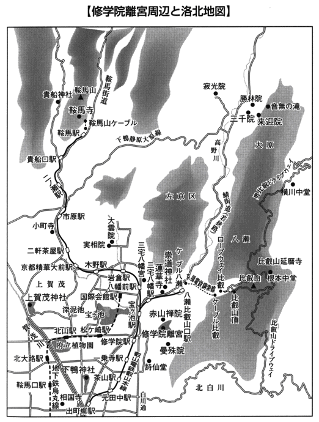

| 『源氏物語』の京都を歩く (PHP新書) | |
| 槇野修 | |
| PHP研究所 (2008) | |
『源氏物語』の京都を歩く
山折哲雄［監修］
槇野 修［著］
監修者まえがき
山折哲雄
歴史のある街並みをさ迷い歩くときは、ゆっくり歩くにかぎります。急いで通り過ぎていってはいけません。
ゆっくり足を運んでさ迷い歩いていると、突然、歴史的な事件にゆかりのあるスポットに出会い、名の知れた物語に登場する人物たちの影が眼前にちらついてくるものです。
京都のような千二百年の歴史のある街並みを歩くときなどは、とくにそうです。ゆっくりさ迷い歩く心得が、どうしても欠かせない。町の背後に歴史の気配を感ずるために、のびやかなテンポで歩くということです。そのリズムを身につけたとき、京都歩きの至福の時間が訪れるでしょう。
京都を歩きながら、『源氏物語』の世界を味わったり楽しんだりしようというのも、つまりはそういうことではありませんか。そこに登場する人物たちの気配に接し、かれらが交わす会話にきき耳を立て、それら男と女の
う瀬の現場に立ち合いたいと思うのであれば、なおさら忘れてはならない心配りというものです。
今から思い起こすと、『源氏物語』のような古典は、私にとっては楽しむよりもむしろ苦しみの種でした。リラックスして楽しむにはほど遠い、高嶺の花でした。それを思うと、いつのまにか憂鬱な気分に誘われるのをどうすることもできません。古典文法を知らなければならない。主語を補ったり、助動詞や助詞の遣い方に気を配らなければならない。古典はつまり古文のこと、そして古文については文法の丸暗記、といったような常識が、知らず知らずのうちに頭の隅に棲みついてしまっていたのです。
転機が訪れました。数年前のことでしたが、たまたま『源氏物語』が京ことばで翻訳されていることを知り、それを朗読で聴いたときでした。現実の世界が一挙に裂け、平安時代の宮廷生活がはるかかなたから彩りも鮮やかに浮かび上がってきたのであります。そこには誰でも知っている冒頭の場面が、こんなふうに描き出されていました。
どの天子さんの御代のことでござりましたやろか。女御や更衣が大勢待っといやしたなかに、そないに重い身分の方ではござりまへえで、それはそれは時めいといやすお方がござりました。
中井和子さんの訳です（現代京ことば訳『源氏物語（一）桐壺―明石』大修館書店）。中井さんは京都府立大学名誉教授で、この『源氏物語』の京ことば訳の大仕事にあたっては、京都に生まれ育った年配の人々の教示、協力をえて、十五年がかりで仕上げたのだというのです。
私はこの中井訳の「京ことば源氏」をはじめて読んだとき、文法の、主語の、といった煩雑な手続きがどこかにふっ飛び、千年前の都の匂いがうっすらと立ちのぼってくるような気がしたものです。しかも、その京ことば訳の朗読版がまた素晴らしかった。
これまで『源氏物語』の現代語訳といえば、ご承知のように、与謝野晶子、谷崎潤一郎のものが通り相場でした。そしてそれが共通語で訳されていることに、誰もが異を唱えることがなかった。しかし、よくよく考えてみれば『源氏物語』の世界はそもそも京都の宮廷で貴族たちが日常的に使っていた言葉によって書かれていたのです。どうしてそれを、京ことばに移しかえる試みがもっと早い時期にあらわれなかったのでしょうか。おそらくわれわれは、与謝野訳、谷崎訳の名声に幻惑されていたのです。
私は『源氏物語』の京ことば訳を読み、それに基づく朗読版を聴いたとき、『源氏物語』という古典を読む楽しさにはじめて気がつきました。『源氏物語』を聴く楽しみ、といったほうがいいかもしれません。
古典を読む楽しさを手にしようと思うなら、まずその古典を聴くことだとつくづく思ったのです。活字にされた古典を、ただ文字を目で追って読んでいるだけでは、古典のもつ魅力はどんどん遠ざかっていくばかりではありませんか。
とりわけ『源氏物語』のような古典を読むときは、その京ことば訳の『源氏』を読み、そして聴くことが欠かせないことになるはずです。そのことが身についてきたとき、京都を歩く楽しみ、京都の街並みのあちこちに顔をのぞかせる光源氏や姫君たちの気配や身じろぎ、その柔らかで奥深い京ことばのリズムを身近に感じとることができるはずなのです。
『源氏物語』を読んでいると、主人公が樹木の姿を描写したり、草花を詠ったり、川の流れや風のさやぎのイメージを言葉にのせたりしていますが、そのうちに、それがそのままそっくり、その人のこころの移りゆきをあらわしていることに気がつきます。人のこころの動きと自然の変化が重なって物語がつむぎ出されていく、といってもいいでしょう。
そのようななかで日本人のこころの在りかを考えようとするとき、『源氏物語』の世界はまたとない貴重な歴史的な遺産であることがわかります。
ともかく、そのことを念頭におきながら『源氏物語』の京都を歩くとき、われわれはおのずから日本人のこころのふるさとを歩くことになるのではないでしょうか。標準語によってではなく、京ことばのリズムにのって、ゆっくり京都を歩き、『源氏物語』の世界を存分に楽しんでみようではありませんか。
その序――『源氏物語』の場景を訪ねる前に
超弩級のロングセラー物語
平安時代中期、世にあらわれた『源氏物語』は、それ以降の激しい時代の変転にもけっして埋没することなく、つねに私たち日本人の深
甚
な関心をあつめてきました。
『源氏物語』成立から間もなく執筆された『更
級
日記』（菅
原
孝
標
の女
の日記）にまず熱烈な憧憬が描かれています。上総
の国に赴任していた父と暮らすこの十三歳の少女は、源氏の物語が読みたくて早く上京できるよう仏前に祈ります。そして夢がかなって京都に戻り「源氏の五十余
巻
」が入った櫃
をゆずりうけます。
一の巻よりして、人もまじらず几
帳
の内
にうち臥
して、引き出
でつつ見るここち、后
の位も何にかはせむ。昼は日ぐらし、夜は目の覚
めたるかぎり、灯
を近くともして、これを見るよりほかのことなければ、......
といった熱中ぶりで、この少女の有頂天な喜びが伝わってきます。菅原孝標の女
が源氏の物語を読みふけったのが治
安
元年（一〇二一）のこと、それ以来、無数の読者をひきつけてきた『源氏物語』は、その後のいくたの物語や日本文学の主流であった和歌にも多大な影響をおよぼしつつ、あらゆる文芸に題材を与えてきました。藤
原
定
家
が校定したり、左大臣四
善
成
の『河
海
抄
』、関白一
条
兼
良
の『花
鳥
余
情
』をはじめ注釈書がさまざまに刊行されたり、『物語』をとりまく円環は時代をへるごとに広がり、井原西鶴や松尾芭蕉の文芸にもその精神はうけつがれ、本居宣長の「もののあはれ論」（自然や人生にたいして抱く心にしみる落ち着いた情趣。日本独自の文芸理念）を生みだします。
そして、近代に入っても、『源氏物語』は多くの文学者の関心事で、のちに述べるように現代語訳がくり返し刊行されています。『源氏物語』こそ日本最大超
弩
級
のロングセラーといえましょう。
『源氏物語』成立から千年
『紫式部日記』は、およそ寛
弘
五年（一〇〇八）の初秋から同七年正月にいたるまでの記述で、紫式部が一
条
天皇（在位九八六～一〇一一）の中
宮
である彰
子
に女
房
（宮中の高位の女官）として出仕していた時期の見聞記および感想文、消息文です。そして、とくに中宮彰子が皇子を出産する前後の経緯が詳しく記されています。
そのなか、彰子が九月十一日に出産した敦
成
親王（のちの後
一
条
天皇）の五十日
の祝が寛弘五年十一月一日、彰子が里下りしていた父藤
原
道
長
の邸宅土
御
門
殿
でおこなわれました。
五十日の祝とは、子どもが産まれて五十日目に、父または外祖父が赤子に
を
にとってふくませる祝い事で、皇子のことですし、それも道長にとっては、やがて天皇の外
戚
として政権を磐
石
にするであろう御
子
のお祝いですから、たいへん盛大な宴
が催されました。
右大臣や内大臣（当時、道長は左大臣）や上
達
部
（公
卿
）など多くの貴人たちがお祝いに訪れ、祝酒の盃がまわり酩酊するものもあらわれます。
「橋の上（透
渡
殿
）に参りて、また酔ひみだれてののしり（大騒ぎ）たまふ」といった夜のこと、左
衛
門
督
である藤原公
任
（従二位中納言）が紫式部の侍
るあたりをさがして、「あなかしこ。このわたりに、わかむらさきやさぶらふ」、このあたりに「わかむらさき」は控えているかな、と少々酔った口調でたずねられたと『日記』に記されています。若
紫
とは『源氏物語』で光源氏の最愛の妻となる「紫
の上
」のことで、その人に紫式部をなぞらえてからかったわけです。
この藤原公任の問いに紫式部は、「源氏にかかるべき人も見えたまはぬに、かの上はまいていかでものしたまはむ」、源氏の君のようなすてきな殿方もおみえでないのに、どうして、かの紫の上がおいでになることがありましょう、と、公任の戯れようを聞いていたのです。藤原公任と紫式部のこのなにげない一場面が『紫式部日記』に記されていたことにより、『源氏物語』の執筆およびいちおうの完成時期を特定できることになったのです。
藤原公任（九六六～一〇四一）は、中古三十六歌仙のひとりで諸芸にすぐれていました。藤原道長が主催した大
堰
川
での紅葉の宴では、詩、歌、管弦の船が用意され、貴人らはそれぞれに得意の船に乗ることになりましたが、道長は、さて公任はどの船を選ぶのかといったといい、すべてに秀でた藤原公任の「三
船
の才
」を伝える逸話として有名です。また、公任の歌人としての地位は、先の紀
貫
之
、後の藤
原
定
家
と並び称されています。
そのような藤原公任が、寛弘五年の秋には紫式部の『源氏物語』を読んでいた、少なくとも「若紫」の巻は知っていたということが、この『紫式部日記』からわかるのです。寛弘五年は西暦一〇〇八年ですから、二〇〇八年（平成二十年）は源氏物語のことが世にあらわれてから千年になるとして、「源氏物語千年紀」が京都を中心にさまざまなイベントをもって開催されたわけです。そして、その千年紀実行委員会は、藤原公任と紫式部との接点があった月日をもって、二〇〇八年十一月一日を源氏物語千年紀の「記念日（古典の日）」と決めたのです。
文学史における奇跡的作品
さらに『紫式部日記』（＊１
）を読みますと、藤原公任との件のしばらくあとに、つぎのような記述があります。
局
に、物語の本どもとりにやりて隠しおきたるを、御前にあるほどに、やをらおはしまいて、あさらせたまひて、みな内侍の督
の殿にたてまつりたまひてけり。
これは、紫式部が物語の本を里邸に取りにやって、自分の局（部屋）に隠していたのだけれど、道長殿がそっとおいでになり、捜し出して中宮彰子の妹君である妍
子
の姫にみな差しあげてしまった、というのです。この「物語の本ども」が『源氏物語』をさすとして間違いないと定説になっています。
「千年前に生まれた源氏物語」は事実、千年間、多くの人びとに読みつがれてきました。
「なんという奇跡、なんと巨
きな、民族的遺産だろう。（略）日本が世界に、誇るに足る芸術は多いが、その筆頭は『源氏物語』――だ、と私は思っている」（田辺聖子 ＊２
）
「『源氏物語』にまさる日本の小説はまだ出ていない。それは我々が古典を寛大に見るためでは断じてない。世界文学の古典の中においても、はたして源氏を凌駕するとはっきりいえるものがあるかどうかは疑わしい」（吉田精一 ＊３
）
「王朝文化の最盛期の宮廷貴族の生活の内実を優
艶
に、かつ克明に描き尽くしている。これ以前の物語作品とはまったく異質の卓越した文学的達成は、まさに文学史上の奇跡ともいうべき観がある。（略）日本人にとっての遺産であるのみならず、世界的にも最高の文学としての評価をかちえている」（秋山虔 ＊４
）
「奇跡」であり「世界遺産」であるのが、私たちの『源氏物語』なのです。
現在流布している『源氏物語』は五十四巻からなって、岩波文庫で全六冊、講談社学術文庫の新装版で全七冊、函入りハードカバーの新潮日本古典集成では全八巻といった超長大な物語で、幼いころからくり返し源氏に親しんできた作家の故円
地
文
子
も口語訳に「殆どすべてを投げ入れて」取りくまれ、訳業に五年の歳月を費やされたのです。それは、昭和四十八年六月三十日発行の「巻十」（＊５
）で完結されましたが、ちなみにその本文を巻一から数えてみると、二八六〇ページという長遠なものなのです（一ページ四一字詰一四行）。
これまで代表的なところでは、与謝野晶子、谷崎潤一郎（三訳あり）、円地、瀬戸内寂聴各氏らが現代語訳をおこない、源氏の「文学遺産」を親しみやすく、私たちに伝えてくれていますが、それでも読み通すには、かなりの時間と覚悟が必要だとおもわれます。
国文学者で歌人の故折
口
信
夫
は「源氏物語は長すぎることが不幸だ」といったそうです（＊６
）。原文で全巻を読み通された人は、まことに少ないのではないでしょうか。しかし、なんとかこの「日本の遺産」という物語の全容を理解したいと望まれている人はたいへん多いとおもいます。本書では、そのような方々と、おたがいに物語を読みすすめながら、『源氏物語』の舞台となった京都の地をゆっくりと訪ね歩いてみることにしたいと考えております。
第一章 冒頭巻の「桐壺」から「帚木」「空 」「夕顔」を読む
その一――『物語』の時代背景と「京都御所」
『源氏物語』が描いた時代は
『源氏物語』第四十一巻「幻
」までの主人公である光
源
氏
は、天皇である桐
壺
帝
の第二皇子として誕生します。母は桐
壺
更
衣
というたいへんに美しい女性でした（第一皇子は、右大臣の娘である弘
徽
殿
女
御
が生んだ皇子で、のちに皇太子）。桐壺更衣は大納言であった父を亡くし、しっかりした後
見
がないため、桐壺帝から深い愛情はそそがれていたものの、ほかの女御や更衣から嫉
まれ、苛
められます。当時、「女
御
」といわれるのは大臣や親王家の娘で、「更
衣
」は大納言以下の身分の娘で、皇后になるには女御でなければなりません。
いづれの御
時にか、女
御
、更
衣
あまたさぶらひたまひけるなかに、いとやむごとなき際
にはあらぬが、すぐれて時めきたまふありけり。
と有名な書き出しで『源氏物語』ははじまります（本文引用は「新潮日本古典集成」『源氏物語』より、以下同）。そして、その舞台は天皇や皇子、後
宮
の女人らが住まう皇居である内
裏
となりますので、本書では、まず、
「京都御
所
」
の探訪からはじめることにいたします。
現在、北は今
出
川
通、南は丸
太
町
通、東は寺
町
通、西は烏
丸
通に囲まれた位置に「京都御
苑
」があり、そのやや北西の区域に堂々とした築
地
塀を四周にめぐらせた「京都御所」の諸殿が建っています。しかし、ここは平安京が造営された当時の御所ではなく、また、『源氏物語』の舞台となった御所でもありません。
「いづれの御時にか、......」との書き出しを、谷崎潤一郎の新々訳は「何という帝
の御
代
のことでしたか、......」とし、円地文子訳は「いつの御
代
のことであったか、......」としています。これは、「むかし、むかし、あるところに」という語り調で、『伊勢物語』の各編の「むかし、男ありけり」ではじまることと同様の起筆ですが、『源氏物語』はしばらくして、「いづれの御時にか」という物語の時代背景があきらかになってきます。
『物語』の最初の巻「桐壺」のなかばで、若宮（源氏）が三歳で母（桐壺更衣）の喪に服するため宮中を退出することが書かれ、これが通例であるとしています。「新潮日本古典集成」の頭注によると、延
喜
七年（九〇七）以後は、七歳以下の子は親の喪に服するにおよばないということになったとあり、『源氏物語』は、それ以前の時代背景をもっていると考えていいようです。そのため物語の時代を延喜年間（九〇一～二三）の初期のころからはじまることが明らかだとしています。また、同じく「桐壺」の巻後半には、
そのころ、高
麗
人
の参れるなかに、かしこき相
人
ありけるをきこしめして、宮の内に召さむことは、宇
多
の帝
の御誡
あれば、いみじう忍びて、この御
子
を鴻
臚
館
につかはしたり。
という文章があって、この「宇多の帝の御誡」は実際の宇
多
天皇（在位八八七～九七）が譲位するさい、次帝の醍
醐
天皇（在位八九七～九三〇）に与えた教訓書「寛
平
御
遺
誡
」を示すことから敷
衍
して、光源氏の父である桐壺帝は歴史上の醍醐天皇にあてはめて考えてもいいわけです。なお、右の本文は『源氏物語』のはじまりとして重要な意味をもつものです。
御
子
（光源氏のこと）が七歳になったころ、高麗人が来日して、そのなかに、人相見にすぐれた者があり、桐壺帝はその者たちを御所に召すことは宇多帝の御遺誡に禁じられているので、御子を鴻
臚
館
におつかわしになったのです。この高麗の人相見は御子をみて、「この若宮は国の親となる相があるが、帝王となれば国が乱れ、民の憂えとなりましょう。しかし、朝廷の柱石となって政治を補佐するという観点からみると、それも違うようです」というのです。
あまりに美しく優れて聡明な御子でしたから、帝の思召しは深く、一の御子をもつ弘徽殿女御や右大臣は、桐壺帝がこの若宮を東
宮
（皇太子）にするのではないかと疑うようになります。その疑念をはらすためにも、桐壺帝は、また、親王としたところで自分が亡くなれば後見もいなくなると、あれやこれやと熟慮なさったすえ、臣
下
に降
して源
という姓を与えるのです。
なお、ここに登場する鴻臚館は朱
雀
大
路
の東西に二館あって、来日した外国使節たちを接待する宿舎でした。現在、島
原
の角
屋
（江戸時代の遊廓の「揚
屋
」）近くにその東鴻臚館跡の碑が立っています。
このように、史実と照らし合わせてみると、『物語』のなかで光源氏が生まれた時代はおおよそ西暦九〇〇年から数年たったころと考えていいわけで、ということは、桓武天皇が延
暦
十三年（七九四）に平安京遷都をおこない、造営した大
内
裏
がまだその地に残っていた時代なのです。
平安京の造営と大内裏
ここですこし平安京の都市構造についてご紹介しておきます。
わずか十年で廃された長岡京にかわって、山
背
の地に平安京が造営されます。それは藤原京や平城京と同じように街区を碁盤の目のように区劃した「条
坊
制
」にのっとった都市づくりでした。都城の南端に羅
城
門
をもうけ、そこから北へ一直線に大内裏の正門、朱
雀
門
まで朱雀大路を走らせ、その朱雀大路の東を左
京
、西を右
京
としました。これは天皇が大内裏で南面しての左右です。
また、朱雀とは陰
陽
道
でいう四
神
のひとつで南を守護する方位神。四
神
相
応
としては南（朱雀）に窪地があるのがよく、同じく貴
い地相は北（玄
武
）に丘陵、東（青
龍
）に流水、西（白
虎
）に大道があることが条件でした。平安京は、北に船
岡
山（さらに北山の峰々）、南に巨
椋
池、東に鴨
川、西に丹波や西国への道をもっていて、このめでたい地相にみごと合致していたのです。
平安京の都域は東西約四・五キロ、南北約五・三キロの広さで、南北路（縦路）は十一本の大
路
と二十二本の小
路
を一町間隔に通し、東西路（横路）は大路が十三本、小路を二十六本としました。この都域の北辺中央に、船岡山を背にして、大内裏が築かれたのです。
大内裏は皇居（内裏）を中心にして、八省百官が執務した朝
堂
院
、宮中祭事がおこなわれる豊
楽
院
、宴
松
原
という広場などもろもろの省庁や寮、坊が建つ都の中枢で、東西一一七四メートル、南北一三九三メートルの広さをもっていました。いまの京都でいえば、二条城の中央部分から北は一条通、西は御
前
通の地域であったと考えていいようです。
なお、天皇の住居である内
裏
は大内裏の中央東寄りにあり、正殿である紫
宸
殿
、日常の居所の清
涼
殿
、皇后や中宮、そのほかの女御たちの住まいなどが建ち、その広さ（内郭）は、東西約一七三メートル、南北約二一八メートルといわれています。
内裏の日常を描く『源氏物語』
「桐壺」の巻に戻り、そんな内裏のようすを二、三みてみましょう。まず光源氏の生母である桐壺更衣が苛
められる場面です。
御局
は桐
壺
なり。あまたの御かたがたを過ぎさせたまひて、ひまなき御前
わたりに、人の御心をつくしたまふも、げにことわりと見えたり。まうのぼりたまふにも、あまりうちしきるをりをりは、打
橋
、渡
殿
のここかしこの道に、あやしきわざをしつつ、御送り迎への人の衣
の裾
、堪
へがたく、まさなきこともあり。
源氏の母となる更衣の住まいは清涼殿からいちばん遠い内裏の東北端にある淑
景
舎
でした。やはり生家の身分の高低による配慮だとおもわれます。なお、この淑景舎という壺
（坪・局＝宮中の一隅）の庭に桐が植えられていたため桐壺と通称し、そこに住む更衣で「桐壺更衣」と後代の読者たちによばれていたのです（このような帝や親王、女君への命名は『物語』を読んだのちの世の人たちによる）。
桐壺帝はそんな遠い御
局
に、あまたの女御や更衣の部屋の前をとおりすぎてお通いになるのですから、陽の射さない御所の奥に住みついて、じっと帝の訪れだけを待っている女人らの嫉妬は激しく燃えあがることになります。
そうして桐壺更衣が淑景舎から清涼殿へあがるときに、打
橋
（建物間に掛け渡す板の橋）や渡
殿
（建物をつなぐ屋根付廊下）など通り道に不浄なものを撒
いて、お供をしている女房たちの長くひきずっている裾を汚したりするのです。当時の女人たちは「おまる」のような箱で用をたすので、それを通路に撒いていじわるをしたわけです。
清涼殿のすぐ北に皇后や中宮などもっとも上位の妃が住む弘
徽
殿
があり、また清涼殿の西に別殿である後
涼
殿
が建っていて、桐壺更衣は帝の思召しで、ここを賜ったのです。ということは、後涼殿にいた女君はほかに移されるのですから、また恨みを買うことになります。
桐壺更衣はこのような後
宮
での心労が重なり、光源氏が三歳のときに亡くなってしまい、その後、帝のそばで成長した光源氏は十二歳で元服します。その場面、
おはします殿
の東
の廂
、東
向きに倚
子
立てて、冠
者
の御座
、引
入
の大臣の御座
御前にあり。申
の時にて源氏参りたまふ。
清涼殿の東廂に天皇が儀式のときだけに座る椅子を置き、冠者（源氏本人）と加
冠
役の大臣が天皇の前に座ったと記します。なお、東宮になっている源氏の異母兄の元服は、「南
殿
にてありし儀式」とあり、正殿の紫宸殿でおこなわれました。その東宮の元服の儀に負
けをとらないように帝は、最愛の若宮のため「きよらを尽くしてつかうまつれり」と善美を尽
くされたのです。
つぎに「桐壺」につづく「帚
木
」の巻、有名な「雨
夜
の品
定
め」発端の場面です。五月雨の夜、源氏は親友の頭
の中
将
らと女人たちの話をします。
つれづれと降り暮らして、しめやかなる宵
の雨に、殿
上
にもをさをさ人
少
なに、御宿
直
所
も例よりはのどやかなるここちするに、大
殿
油
近くて、書
どもなど見たまふ。
一日雨が降りつづいた宵は、殿上の間（清涼殿の南端）の侍
臣
の詰め所も人が少なく、光源氏の宿直所（大臣や納言、蔵人頭、近衛大将などが宿直するところ）もいつもより静かなので大殿油（宮中や貴人の邸宅でともす高さ一メートルほどの灯火）を低くして書物などを見ていると、そこへ頭の中将があらわれます。
この頭の中将は今後の物語の進展で大きな役割をはたす人物で、このときは左大臣の長男で、光源氏の正妻となった葵
の上
の兄ということになっています。明るくてすてきな若者ですが、すべての点において光源氏にはとてもかなわないと紫式部はいささかくどく書いています。「頭の中将」という名は役職名で、近衛中将で蔵人頭を兼務していることによります。
内裏と里内裏の変遷
このような内裏の儀式や宴
や暮らしぶりが『源氏物語』のベースをなしています。
さて、さきほど、いまの「京都御所」は若き光源氏が暮らしたり、通ったりした御所ではないと述べましたが、それはつぎの経過より、御所の位置が移っているからなのです。
延暦十三年（七九四）十月、桓武天皇は車
駕
を新京にすすめ、平安遷都がなされました。新都の建設は急ピッチでおこなわれ、翌十四年には宮中で遷都を祝う宴があり、朝堂院、大
極
殿
が完成しています。なお、平安京の造営職は延暦二十四年に廃止されますから、十年あまり新京の建設はつづいたとおもわれます。
その後、貞
観
八年（八六六）に応
天
門
の乱で応天門が炎上し、また十年後には大極殿が焼失しますが、内裏は天
徳
四年（九六〇）九月二十三日にはじめて焼け、すべての殿舎が灰
燼
に帰してしまいます。けれど一年後には諸国に作業をふりわけて新内裏が再建されます。しかし、失火や政治的な放火が、そののちも絶えず、新内裏完成以降の百年に限ってみても、六年に一度は焼亡したといいます。
そして、火災がおきるたびに、天皇は大内裏内の諸庁や公
家
の邸宅を仮御所として利用して、これを里
内
裏
とよび、藤原兼
通
の堀河院が公家邸を皇居としたその最初であったとされています（九七六年七月二十六日に遷御）。嘉
禄
三年（一二二七）四月二十二日、造営中であった内裏がふたたび焼け、それ以降は再建されず、天皇は里内裏を転々とすることになり、北朝の光
厳
天皇が即位した（一三三一年）里内裏の土
御
門
東
洞
院
殿
がその後、皇居として定着しました。これがいまの「京都御所」にあたるところなのです。
なお、『源氏物語』は、そのはじまりである「桐壺」の巻の時代背景を延喜年間（九〇一～二三）の初期のころからとすると前述しましたが、物語の帝を、歴史上の天皇にあてはめると、つぎのようになります。
桐壺帝（源氏の父）は醍醐天皇で在位は八九七年から九三〇年。
朱雀帝（源氏の異母兄）は朱雀天皇で在位は九三〇年から九四六年。
冷泉帝（源氏の実子）は村上天皇で在位は九四六年から九六七年。
作者はこれら三代にわたる朝廷の出来事を実と虚をおりまぜて筆をすすめ、ほぼ一〇〇八年以前に書き上げていたとおもわれます（一部か全巻かは不明）。ですから、現在の「京都御所」は『源氏物語』が描いた内裏ではないと、すこしくどく述べたしだいです。
「京都御所」を参観する
さて、そうはいっても、光源氏らが日をおくった内裏のようすは今日の京都御所においてもじゅうぶんにうかがうことができます。もちろん殿舎の内部に私たちが立ち入ることは無理ですが、外観を眺め室内を垣間みて苑池のふちを歩くことはつぎの手続をふめば可能です。
ひとつは春と秋にそれぞれ五日間に限っておこなわれる「京都御所一般公開」に参加することです。春は四月上旬、秋は十一月上旬の水曜日から日曜日の五日間となります。午前九時に開門。入口の宜
秋
門
（西面の中央にあり、公家門とも）にはすでに長蛇の列ができて、先着順に持物検査を受け、人数を限りながら、しずしずと御所内に導かれてゆき、初日と二日目でおよそ二万人の参加者があるそうです。入場無料、閉門は十五時です。この春秋の一般公開は毎回テーマをもうけ、平安装束をまとった人形が室内に配されて往時の光景を再現したり、雅楽の演奏や蹴
鞠
が披露されたりします。多少辛抱づよくならぶことをいとわなければ絶好の機会といえましょう。
もうひとつは事前に参観手続をする方法です。祝日、休日、年末年始を除く月曜から金曜までほぼ一年間参観を受付けています（こちらも無料）。
では、ふだんの参観出入口である「清
所
門
」（御台所門とも）から御所内に入ってみましょう。案内人の解説を聴きながら順路に従ってめぐり、標準コースで一キロ、約六十分、短縮コースで約四十分です。
まず所定の時間前に、参観許可の用紙を係官に提示して門をくぐり、集合する建物に入ります。そこで御所を紹介するビデオを見たり、皇室関係の記念グッズを選んだりしていると、案内人があらわれ、参観についての二、三の注意点を話して（写真撮影はＯＫだが、三脚を立てないようになど）、私たちを先導します（案内人の解説はなかなかユーモアがあって楽しい）。参観者はたいがい一回三十名前後です。
まず、御所に昇殿を許された者の正式な玄関である「御車寄」の外観を見て、参内者の控えの建物「諸
大
夫
の間」の内部を庭先から見通します。高床の室内は身分の違いにより控えの間が異なり、公卿の間は虎の絵、諸侯・所司代の間には鶴の絵、それ以外の者の部屋には桜図が襖いっぱいに描かれています。
つぎに御所の南端に構える天皇の出入口「建
礼
門
」を背にして朱塗りの「承
明
門
」のあいだから「紫宸殿」を眺める位置に立ちます。目に眩
しいほどの白砂敷の南
庭
を前に、宏大な紫宸殿が、とりわけ流れ落ちるような檜皮葺
の屋根を幅広く空を限ってみせ、堂々たる存在感を示しています。高さ約二〇メートル、間口約三七メートル、奥行が約二六メートル、安政二年（一八五五）の再建といい、大正、昭和両天皇の即位礼がおこなわれた御所中の正殿です。正面に十八段の木製の階
、その脇に左近の桜、右近の橘を配しています。
紫宸殿と清涼殿を目前に
第八巻「花
宴
」には、紫宸殿と南庭で催された桜の宴の描写があります。
きさらぎの二十日
あまり、南
殿
の桜の宴せさせたまふ。后
、春
宮
の御局
、左
右
にして、まうのぼりたまふ。（中略）日いとよく晴れて、空のけしき、鳥の声も、ここちよげなるに、親
王
たち、上
達
部
よりはじめて、その道のは、皆、探
韻
たまはりてふみつくりたまふ。
紫宸殿は南
殿
とも前
殿
ともよばれています。二月二十日すぎに桐壺帝は桜の宴を催され、藤
壺
の宮
と東宮の座を玉座の左右にもうけ、よく晴れた日で鳥の声もここちよく聞こえていました。親王や上達部（公卿）をはじめ、詩文の道にくわしいものたちは、帝から韻字を賜り、その文字を使って詩作をします。
このとき、光源氏は「春」という字をいただき、夜になって立派な詩作を披露するのですが、「はるばるとくもりなき庭」を前に、陽が傾くころ、「春のうぐひすさへづるといふ舞」をほんのひとさしだけ舞い、その姿さえほかに似るものもないあまりの美しさで、見ている人びとの涙をさそいます。
このような『物語』の描写を思い浮かべて、広々とした紫宸殿とその庭を眺めると、平安貴族の暮らしぶりがいかに豪
奢
なものであったか、おぼろげながら感じとることができるでしょう。なお春秋の一般公開では、この南庭に入って紫宸殿をまぢかに見ることができます。
さて、通常の参観コースでは紫宸殿の背後にまわり、東面する「清涼殿」にすすみます。豊臣秀吉の天正造営によって別棟の「御
常
御殿」が建てられるまで、清涼殿は長いあいだ、天皇の日常生活の場でした。入
母
屋
檜皮葺の寝
殿
造
は紫宸殿と同じですが暮らしやすいように部屋を多くつくっています。白砂敷の東庭に青々とした呉
竹
と漢
竹
が植えられ、そのそばに寄ると、紫宸殿より床の位置が低いため、ほの暗い東廂
の内部をうかがうことができ、奥に「昼
御
座
」という日中に天皇の座る御座所がぼんやりと見えます。南廂は蔵人や公卿などが伺
候
した「殿
上
の間」で、前記した「しめやかなる宵の雨に、殿
上
にもをさをさ人
少
なに」の場所です。
また、第七巻「紅葉
賀
」の冒頭で、この清涼殿の東庭で光源氏と頭の中将が青
海
波
という優美な舞を舞ったようすが描かれています。
朱
雀
院
の行
幸
は神
無
月
の十日あまりなり。世の常ならず、おもしろかるべきたびのことなりなれば、御方
々
、物見たまはぬことをくちをしがりたまふ。上
も、藤壺の見たまはざらむを、飽かずおぼさるれば、試
楽
を御
前
にてせさせたまふ。源氏の中将は、青
海
波
をぞ舞ひたまひける。片手には大
殿
の頭
の中将、容貌
、用意、人にはことなるを、立ち並びては、なほ花のかたはらの深
山
木
なり。
十月の十日すぎに朱雀院におられる上皇へ、今上の桐壺帝が行幸されます。これはたいへんに大がかりな催しですが、内裏外のことで、後宮のお妃たちや寵愛されている藤壺の宮も見学することができません。そこで帝は予行演習としての「試
楽
」を清涼殿の東庭でおこなって、ご覧にいれるのです。
それにしても紫式部は、限りなく源氏の君を贔
屓
して、心魂を傾けるように誉めそやしますから、容貌も心づかいも人より優れている頭の中将さえ、桜のような光源氏と並べば、深い山中の木のようだ、と冷たい扱いになるのです。
参観順路は清涼殿から、もとに戻って、「小
御
所
」「蹴
鞠
の庭」「御
池
庭
」「御
学
問
所
」をめぐり、「御
常
御
殿
」へまわります（短縮コースでは行かず）。この御常御殿は御所のなかでも十五室を有するもっとも大きな御殿（書院造）で、近世以降、天皇の日常の居所でした。現在の建物は安政二年（一八五五）の再建になるものです。
ここより北は避暑用の「御
涼
所
」などがあり、さらに奥には「皇
后
宮
常
御
殿
」や女御たちの住まいが建っていますが、私たちは立ち入ることはできません。
『源氏物語』が描く内裏の情景をたとえ外観からにせよ、じっくりと拝見できる「京都御所」は、まずはじめに訪れてみる必要があるといえましょう。
その二――若き源氏の恋と「京都御苑」周辺
『源氏物語』最初の巻「桐壺」
生母桐壺更衣と三歳で死別した源氏は、里邸で喪に服したのち、内裏に戻り、父桐壺帝の愛情をうけて育ちます。「月日経
て、若宮参りたまひぬ。いとどこの世のものならず、きよらにおよすけたまへれば、いとゆゆしうおぼしたり」と、成長して、生まれたときの「世になくきよらなる玉の男
御
子
（略）この御にほひには並びたまふべくもあらざりければ」のような照り映える「御容貌
」は、いっそうこの世のものとも思われない美しさを増して、その美しさゆえ、神に連れてゆかれる（夭
折
する）のではないかと帝は心配するほどになったのです。
七歳で「読
書
始
」の儀をおこない、そのさいもたぐいなく聡く賢く、ここでも「あまり恐ろしきまで御覧ず」と源氏の英才に帝は驚かれるのです。ともかく紫式部は、「美しき神童」である光源氏を徹底的に読者に修辞します。
その美しい若宮はさきに述べたように臣籍に降下、源氏の姓を名のって、十二歳で元服、と同時にその夜、左大臣の娘で四歳年上の「葵
の上
」と結婚します。葵の上は、東宮よりご所望もあったほどの才色兼備の姫君でした。
しかし、光源氏は桐壺帝に入内した藤壺の宮をいちずに恋慕していたのです。この宮は、先帝の四の宮ですから身分はごく高く、若く美しく、さらにふしぎと桐壺更衣とよく似たお顔とお姿なので、母の愛を知らぬ幼い源氏は、いつもお側にいって馴れ親しみたいと熱望していたのです。父の桐壺帝も藤壺の宮に、この子は生母にそっくりで、あなたと母子とみえても不似合いではないから、よそよそしくしないでほしいとおっしゃるのです。源氏も子どもながら、藤壺の宮の気に入るような贈り物をしたりします。
そして、世間の人びとは、源氏を「光
君
」とよび、藤壺の宮を「輝
く日
の宮
」と美称するのでした。
元服後、源氏は、御
簾
内
には入れなくなりましたけれど、それでも義母である美しい藤壺の宮がいる御所に暮らすことを好み、正妻である葵の上が待つ左大臣家にはときどき帰るといったありさまでした。『源氏物語』の冒頭巻「桐壺」は十二歳の源氏の気持を描いて、これ以後の大長編のはじまりとするのです。
「京都御苑」を散策する
源氏の君も元服後、かつて桐壺更衣の局
であった淑
景
舎
を曹
司
（子弟に与えられる部屋）として賜
り、かつ亡母桐壺更衣の邸宅を大規模に改築して、二条院という私邸をもつことになって、いよいよ高貴な男性として世に出るわけです。彼の跡を追う私たちも、いったん御所から離れることにいたしましょう。
京都御所をその一部として含む「京都御
苑
」は広さ約一九万坪（約六三ヘクタール）で東西は約七〇〇メートル、南北は約一三〇〇メートルといいますから、南の丸太町通の堺
町
御門から入って北の今出川御門を抜けるのに、散歩の足で三十分弱かかります。砂利敷の苑路は踏み出す足がたよりなくていささか歩きにくく、私はよく自転車の轍
で土があらわれた筋をなぞって歩くことにしています。
でも、京都御苑の空は四辺を限るものがなく、広々としていて、とくに空気の澄んだ季節の高い天空はじつに気持のいいものです。苑地に針葉樹、広葉樹あわせて約一万本という緑樹が島状になっている芝生地に繁って、観
桜
、観
楓
のシーズンもわざわざ遠くに赴
かずとも、じゅうぶんこの広大な苑地で楽しむことができます。
明治二年の東京行幸以来、「いまだ天皇さんはお帰りにならない」（古い京都人がよくいうこと）ため、宮家や公卿もあわせて東京に移り、御所をかこんでいたそれらの邸宅は順次取りこわされて、昭和二十四年、東京の皇居外苑や新宿御苑とおなじく国民公園となりました。ただところどころに、近衛邸跡、一条邸跡、九条邸跡、鷹司邸跡の碑や祐
井
、県
井
といった井戸や白
雲
神社、宗
像
神社、厳
島
神社などの社殿が往時を多少なりともしのばせてくれます。
白雲神社は琵琶を家職とする西
園
寺
家に楽神として祀られた宗像三女神の一神、市
杵
島
姫
命
（妙音弁財天）を祭神としています。明治の元老西
園
寺
公
望
が開いた私塾「立命館」もこの地にありました（現立命館大学はこの名をつぐ）。
宗像神社は、太
政
大
臣
藤原冬
嗣
が小一条殿に宗像三女神を勧請したもので、のちに藤原時
平
が倉
稲
魂
神
、花
山
院
家
忠
が天
石
戸
開
神
を祀り、五祭神となりました。なお、創建は延暦十四年（七九五）といいますから、平安京遷都の翌年で古い社
です。
また、厳島神社は平清盛の創建で、のちに九条家の邸内に祀られ、いまも九条池の北に建っています。この神社の見どころは、京都三鳥居のひとつに数えられる唐
破
風
石鳥居（あと二カ所は木
島
神社〈蚕
の社
〉の三
柱
鳥居と、北野天満宮境内伴
氏
社の伴氏鳥居）と池の奥に端正な姿をみせる数寄屋造の茶室捨
翠
亭
です。
また、平成十七年、御所の東に「京都迎賓館」が完成しています。
「仙洞御所」の庭園をめぐる
京都御苑には、あとふたつの御所があります。大
宮
御所と仙
洞
御所です。いずれも近世の造営になるものですが、平安朝の壮麗さを追想するには、これらの御所は絶好のものといえます。京都御所と同じく参観の手続が必要ですが、私は午前と午後に分けて「京都御所」と「仙洞御所」（大宮御所も含む）を申し込んで拝見するようにしています。
「仙洞」とは仙人の居所の意から転じて、皇位を退
いた上皇のことで、その御所を「仙洞御所」とよび、今日、御苑内にあるのは、寛永七年（一六三〇）に完成した後
水
尾
上皇の仙洞御所で、同年に皇后東
福
門
院
の女院御所として「大宮御所」も建築されました。
両御所の敷地を合わせて約二万七八〇〇坪（約九万一六〇〇平方メートル）で、御所と同様に立派な築地塀で囲まれています。ただ万
治
四年（一六六一）に両御所とも焼失し、その後、再建と焼失をくり返して、大宮御所は慶応三年（一八六七）に孝明天皇の女御英
照
皇太后の御殿として新造され、いまは皇室方の行幸啓に利用されています。
いっぽう仙洞御所は嘉
永
七年（一八五四）の火災以降、再建されず、いまは庭園と茶室二軒が残るだけです。しかし、この庭園こそ御所にもみられない優美な大庭園で、平安貴人の遊興の華艶さをしのばせるものなのです。
私たち参観者は大宮御所の表門から入ります。まず目の前に常
御
所
の御車寄が見えます。向
唐
破
風
の屋根をのばし、背後には二棟の切
妻
梁
が雁行して立ち、女御所らしいやさしい造りをあらわしています。常御所の南庭を見ながら仙洞御所への潜り門を入ると、目の前に東山を借景にした北池が広がっています。仙洞御所の庭はこの北池と南池をめぐる池
泉
廻
遊
式庭園ですから、私たちは池畔の小路を歩きながら繊細かつ雅
な庭園美を観賞することになります。
北池を時計回りに、小さな入江の阿
古
瀬
淵
をわたる六枚橋から歩きはじめ、池に枝を差し出す緑樹の下をゆったりめぐります。途中、中島へ架かる土橋や八つ橋、北池と南池をつなぐ堀割をわたる紅葉橋の景致も、それぞれが一幅の高尚な日本画のようにみえます。
南池は南に奥深く、ちょうど中間に藤棚を設えた八ツ橋が架かり、東側へわたることができ、中島と合わせたこの景致はひときわすぐれています。池の南端から北にむかって「洲
浜
」が水際に広がって、これほど大がかりなものは、ここ仙洞御所でしかみられません。この洲浜の石は別名「一
升
石
」といい、小田原藩主の大久保侯が石一個につき米一升を与えてあつめさせたといわれる粒のそろった平たい楕円形の石です。整然と敷きつめられたこの洲浜はともかく一見の価値があるといえましょう。
洲浜の岸に
葺
の醒
花
亭
という茶室が建ち、南池から北方向の佳景を望んでいます。さらに、醒花亭から北への道は桜並木（桜の馬場）がつづきます。私たちは苑路にそって、この優美な庭をめぐるのですが、かつての貴人たちは、舟着場から舟に乗って（「北池の舟着」が残る）、北池から南池へ四季おりおり庭のけしきを眺めたのです。『物語』第七巻「紅葉賀」の一節、
例の、楽
の船ども漕ぎめぐりて、唐
土
高
麗
と尽くしたる舞ども、種
多かり。楽の声、鼓
の音
、世をひびかす。
――例のように楽人の乗る船（龍
頭
鷁
首
の船）が池を漕ぎめぐって、唐や高麗の舞など数多く舞う。管弦、鼓の音が響きわたる。
と池面ではあでやかな衣裳の楽人が船首に龍や鷁（空想上の水鳥）の像をつけた二隻一対の船に乗って演奏し舞うのです。なお、このような船遊びを再現した祭が五月第三日曜日に大
堰
川
で催される車
折
神社の例祭（延長神事）「三
船
祭
」です。
この祭は、正午に車折神社で「お出ましの式」がおこなわれ、平安装束に身を包んだ一行が大堰川まで歩き、神職たちの乗る御座船を先頭に、龍頭船、鷁首船、流扇船のほか、詩歌船、稚児船、謡曲船、俳諧船など約二十隻が順次出航します。御座船の前では管弦や舞の奉納があり、また流扇船からはさまざまな色の舞扇が流されるといった趣向をみせてくれます。毎年約五万人の人出があるといいます。
船遊びについては、『物語』の巻がだいぶすすんだ第二十四巻「胡
蝶
」の巻に詳しく描写され、源氏が贅を尽くして造営した六条院の紫の上の御殿で華やかな宴がおこなわれます。弥生の二十日ころ、源氏は新しく船を造り、女君たちをあつめて船楽を催すのです。その船から眺めた庭の光景は、
さる大きなる池のなかにさし出でたれば、まことの知らぬ国に来たらむここちして、あはれにおもしろく（すばらしく面白い）、見ならはぬ女房などは思ふ。中島の入江の岩蔭に（船を）さし寄せて見れば、はかなき（なにげない）石のたたずまひも、ただ絵に描
いたらむやうなり。こなたかなか霞みあひたる梢
ども、錦
を引きわたせるに、御
前
のかたは（紫の上の庭）はるばると見やられて、（緑の）色をましたる柳、枝を垂れたる、花もえもいはぬにほひを散らしたり。ほかには（よそでは）盛
り過ぎたる桜も、今盛りにほほゑみ、廊（渡
殿
）をめぐれる藤の色も、こまやかに（色濃く）開けゆきにけり。まして池の水に影うつしたる山吹、岸よりこぼれていみじき盛りなり。
と、春爛漫のけしきなのです。私たちが訪れた仙洞御所の苑池に舟を浮かべて廻遊すれば、もちろんこのような光景がいまでも現出することでしょう。
紫式部の邸跡――廬山寺
仙洞御所を退朝して、御苑内の幅広い道を北へ、築地塀のつきるところを東に歩くと清
和
院
御門から街なかに出ることになります。そのまま五〇メートルほどすすめば、かつては平安京の京域の東端であった東
京
極
大
路
、いまの寺
町
通に突きあたり、この一帯は『源氏物語』の語りはじめにとって、たいへんに重要な場所になります。
『物語』の進展は、光の君が元服をすまし、左大臣の娘である葵の上と結婚して御所から独立、二条院を構えます（「桐壺」の巻）。そして、「雨夜の品定め」ののち、空
、夕
顔
といった女人たちとの
瀬を描き、若き源氏の恋愛譚は佳境に入ります（「帚
木
」「空
」「夕顔」の各巻）。
私たちは、いま清和院御門を出て寺町通に立っていますので、すこし北に歩いてみましょう。通りの東側に、山門を西に開く「廬
山
寺
」があります。ここが紫式部の邸宅跡の一部とされているところなのです。
廬山寺、正式には日本廬山天台講寺といい、天台宗系の圓
浄
宗の本山です。といってもこの宗派の寺は、京都府ではここ廬山寺ただ一寺しかありません。寺伝によれば、元
三
大
師
として知られる良
源
が天
慶
元年（九三八）、北山に与
願
金
剛
院と称した寺を開創し、のちに後醍醐天皇の勅命によって船岡山南麓に移転（一二四五年）、さらに、中興の祖となった僧の霊告に中国廬山の法師があらわれ、廬山の二文字をのこして消えたことにより、現寺名としたと伝えています。
上京区と北区の境、千本鞍馬口の一筋南に「廬山寺通」という通り名がいまも残っていますから、このあたりに旧寺域があったことがわかります。このように京都の街は、歴史を物語る地名がしっかりと伝わっていて、古い地名を簡便な何々丁目とするような東京の愚行をけっして許してはいません。さすが永いこと都であった矜
持
が保たれているといってもいいでしょう。
紫式部の生涯を概見する
さて、紫式部です。
これほど有名な女性ですが、紫式部の本名や生没年は、はっきりとわかっていません。平安朝当時の女性たちは、庶民よりはるかに身分の高いものでも、皇族やそこに嫁いだ女人、また乳母
など以外は記録に残されることがなかったからです。ただ紫式部の娘は、母親より世間に広く知られていないのにかかわらず、名を賢
子
（かたいこ）、生年は長
保
二年（一〇〇〇）で永
保
二年（一〇八二）に没したと明らかなのです。というのは、賢子はのちに後冷泉天皇となる親
仁
親王（後朱雀天皇の長男）の乳母になり、その後、従三位に昇進して、大
弐
三
位
とよばれたことが記録に残っているのです。
それ以外の当時の女性らは何々の女（娘）とか何
の妻といった記述がなされる程度で、紫式部は父親の藤原為
時
が花
山
天皇（在位九八四～八六）の御代に式
部
丞
に任じられたことによりその娘として「藤式部」とよばれていたようです。藤は「藤原氏」の藤からといわれています。
紫式部の「紫」は藤の花色から、また『源氏物語』の若紫、すなわち「紫の上」を物語の重要な女性として描いたから通称されていたといいますが、これもはっきりしません。ただ、まことに佳名であることは間違いないでしょう。
紫式部が生まれた年は、天
禄
元年（九七〇）、天
延
元年（九七三）、天
元
元年（九七八）の諸説がありますが、研究者の多くは、九七三年ころの生誕とみるのが妥当だとしています。また没年も、長
和
三年（一〇一四）ころとか、寛
仁
三年（一〇一九）の正月まで生存していたとか、また、廬山寺を邸跡と推定した角
田
文
衞
博士は長
元
四年（一〇三一）としています。
ですから、いちばん長く生きたとして、六十二歳、いちばん短くて三十七歳となります。諸書、辞典類をみますと、九七三年ころ生まれ、一〇一九年ころ亡くなったとする記載が多いようですから、私は、その説に従っておきます。紫式部、享年いちおう四十九です。
父藤原為
時
は、大学をでて文
章
生
になり、右記したように式部丞、式部大丞（正六位）の官位を賜りました。花山天皇が退位すると、失職、その十年後、淡路守（従六位下）を任じられましたが、その役職に不満を訴え、名文の申
文
を一条天皇に奉じて、それに感動された帝は、なんと五階級上の越前守（従五位上）になさったといいます。
そのような文章の才能は、家系からみられ、為時の父雅
正
も和歌が『後撰集』にとられ、祖父の藤原兼
輔
（紫式部の曾祖父にあたる）は三十六歌仙のひとりで「堤
中
納
言
」といわれた人物ですから、紫式部も歌道や文才にすぐれた血を引いていたのでしょう。
紫式部の母は、式部がごく幼いときに亡くなったようですが、やはり歌人を輩出した家系でした。そして、父母ともその系図をさかのぼれば、藤原冬嗣につながる藤原家の名門でしたが、父方の曾祖父兼輔だけが公
卿
（三位以上）にまで昇任し、ほかは諸国の受
領
どまりだったのです。
紫式部は同腹に姉と弟（兄とも）の惟
規
がいて、姉は若くして亡くなったようです。この惟規が父親から漢籍を教わっているのを式部がそばで聞いていて、漢学者の跡取りとなるべき惟規より早く覚えたので、「ああ、お前が男だったらな」と父親は嘆いたといいます。このことは『紫式部日記』につぎのように記されています。
この式部の丞
（惟規のこと）といふ人の、童
にて書
読みはべりしとき、聞きならひつつ、かの人はおそう読みとり、忘るるところをも、（私は）あやしきまでぞさとく（聡く）はべりしかば、書に心入れたる親は、「口惜しう、男
子
にてもたらぬこと幸
なかりけれ」とぞ、つねになげかれはべりし。
紫式部の利発さと教養の深さをしめすエピソードとしてしばしば引用されています。
父為時が官職から遠ざかったのは花山帝退位後の九八六年から十年余りの時期で、紫式部が九七三年生まれとすると十四歳ころからの多感な時代となり、その時期、式部は父からじゅうぶんに文学的な教えを受けたとおもわれます。
ただ、紫式部は恋愛に関しては奥手だったようで、父親が越前守となり、それに同行して当地へ赴く前後、二十歳前半から中ごろに藤原宣
孝
と歌の贈答をして、やがて宣孝から求婚の手紙が越前に届けられるようになります。
この藤原宣孝という人は、父為時とほぼ同じ年齢で、かつて同じ親王に仕えたことのある同僚でした。しかも、すでに何人かの妻と子がいるかなり派手な人物だったようです。父為時のもとを離れて越前から都に戻った紫式部は宣孝と結婚、前述した賢子を産みます。しかし、宣孝は長保三年（一〇〇一）四月二十五日に病死し、紫式部は母子ふたりの寂しい生活に入ることになります。
『河
海
抄
』という貞
治
六年（一三六七）に足利将軍家へ撰進された源氏物語の注釈書があって、著者の四
善
成
（順徳天皇の曾孫）は、紫式部が石
山
寺
に籠
って『源氏物語』を書きはじめたという伝承を紹介しています。それはつぎのような話です。
村上天皇の皇女である大
斎
院
選
子
内親王が一条天皇の中宮彰
子
をお訪ねになって、何か新しい物語をお借りしたいとおっしゃいます。そこで彰子は出仕していた紫式部に物語の創作を依頼し、紫式部は石山寺に籠る。八月十五日の月が琵琶湖の湖面を照らしているのを眺めて、「須磨・明石」の巻の構想をえたので、とりあえず写経紙に書きはじめた、という言い伝えです。
ただし、この話はあくまで伝説であって、紫式部は藤原宣孝と死別後、里邸に戻り、『源氏物語』の一部を執筆して、それが藤原道長らの目にとまり、中宮彰子への宮仕えになった、というのが研究諸書の述べるところです。それに、物語の執筆に石山寺に籠るのに、用紙も用意しておらず、写経紙に書きはじめたというのもいささか妙です。
紫式部の邸宅といっても、それは父方の曾祖父藤
原
兼
輔
が建てたもので、代々受け継がれ、紫式部の父為
時
が住まった屋敷でした。しかし、実際に伝領したのは兄の為
頼
と考えられ、作家の杉本苑子氏は紫式部を主人公とした『散
華
――紫式部の生涯』（＊７
）という小説のなかで、播
磨
権
小
掾
の任地から帰任した為時一家が同居したのだろうと書いています。受領どまりの当主家族のほか、兄の為頼の一家や為時の妹もいたのでしょうから、古びた屋敷に一族がごちゃごちゃと暮らしていたはずだと推測しています。
曾祖父の藤原兼輔（八七七～九三三）は醍醐天皇の殿上に仕えて、参議、権中納言（従三位）から中納言に昇任した公卿で、娘の桑子が醍醐天皇の更衣に召されて親王を産んでいます。また兼輔は、歌人としても「三十六歌仙」のひとりに数えられて、『古今和歌集』や『後撰集』に入集しています。右大臣の藤原定
方
とともに当時の歌壇の指導的な人物でした。
「君がゆく 越
の白
山
しらねども ゆきのまにまに あとはたづねむ」（『古今和歌集』）などの歌があります。兼輔が造営した邸宅は、いまの廬山寺より広く、鴨川の土手までをその敷地としていたようで、そのため「堤中納言」と称されたのです。紀貫之など多くの歌人が邸宅にあつまったといわれています。
廬山寺から「中川」あたり
紫式部は夫と死別して、ここ廬山寺にあった邸宅の一室で賢子を育てながら、いっしんに『源氏物語』の執筆にとりかかったのでしょう。廬山寺には、前記した文学博士で歴史家の角
田
文
衞
氏（二〇〇八年五月十四日死去）が、当寺を紫式部旧邸と考証したことにちなみ、仏殿（本堂）の前に「源
氏
庭
」が造られています。白砂を海面に、苔地を島にみたてて、その緑苔に紫の花を咲かせる桔梗が植えられています。さほど広い庭ではありませんが、清々しい雰囲気が感じられます。
また、廬山寺は節分の日におこなわれる追
儺
式
の「鬼の法
楽
」で知られています。大師堂前の舞台に赤、黒、青の三匹の鬼が登場し暴れると、赤白の
莱
豆を撒いて退散させます。元三大師が修行中に邪魔をしにきた鬼を退散させた故事にちなみ、創建当時からつづく伝統行事として、いまも多くの京都人が見物に訪れます。
かつてこの一帯の東京極大路（寺町通）には「中
川
」という川が流れていました。京極川ともいったそうで、安永九年（一七八〇）に刊行された『都
名
所
圖
會
』（＊８
）にも紹介されていますので、現代文に直して引用します。
「中川は上
御
霊
（神社）の前の流れをいう。鴨川を東
川
といい、桂川を西
川
という。そのなかにあるゆえ名とする。一名京極川とも号
く。いまの京極通寺院の筋に川あり。（略）これは御
堂
殿
と法
成
寺
の間を流れる。また、〔源
氏
巻
〕には、忍んで中川の宿にゆき、空
と碁
をかこむの事ある」（源氏と空
が碁を打ったことはなく、空
と軒
端
の荻
が打っているところを源氏が覗く）。そして、上御霊社や廬山寺を俯瞰した挿画にはいずれも門前に中川が描かれています。
御堂殿とは藤原道長の邸宅で土
御
門
殿
のことで、東京極大路の西側、いまの仙洞御所北域にありました。前述した『紫式部日記』に記されている豪壮な邸宅で、有名な、「この世をばわが世とぞ思ふ望月のかけたることもなしと思へば」という栄華の絶頂を迎えた歌を道長が詠んだのもこの土御門殿でした。
また、法成寺というのも、道長が出家後に建立した寺で、やはり東京極大路の東側、いまの鴨
沂
高校から北域、府立医科大学を含む場所にありました。寛
仁
四年（一〇二〇）に創建された無
量
寿
院
と名づけた寺がはじまりで、道長の妻源
倫
子
が出家すると、伽藍は整えられ、金堂や五大堂もでき、さらに彰子のための東北院も建立されて大寺となりました。この法成寺で道長は自らの と阿弥陀如来に五色の糸を結び、万
寿
四年（一〇二七）十二月四日、その生涯を終えるのです。法成寺はその後たびたびの火災により、元弘三年（一三三三）に廃絶されてしまいます。
と阿弥陀如来に五色の糸を結び、万
寿
四年（一〇二七）十二月四日、その生涯を終えるのです。法成寺はその後たびたびの火災により、元弘三年（一三三三）に廃絶されてしまいます。
『源氏物語』で光源氏が人妻である空
と契るところとなる紀伊
守
の邸宅を、やがて法成寺が造営される中川の流れのそばに作者は設定しました。
「帚
木
」の巻の雨夜の品定めで中流の女に興味をもった源氏の君は、この紀伊守の家で空
を知ります。そして、いよいよ源氏の「いろごのみ」遍歴がはじまるわけです。
「帚木」の冒頭文は、
光
源
氏
、名のみことことしう、言ひ消
たれたまふ咎
多かなるに、いとど、かかるすきごとどもを、末の世にも聞き伝へて、軽
びたる名をや流さむと、忍びたまひけるかくろへごとをさへ、語り伝へけむ人のもの言ひさがなさよ。
――光源氏、と名ばかり仰々しくて、人から批難されるようなあやまちも多いのに、そのうえこのような好き事などを後世の人びとに伝えられては、どんなに軽々しい名を流すことかと用心している内証話さえ、明るみに出して語り伝えたとは、口さがない人もあるものだ。
とはじまり、つぎの「空
」、そして「夕顔」の巻との三巻で連続したひとまとまりの物語を構成しています。これは「夕顔」の巻の文末が、
かやうのくだくだしきことは、あながちに隠ろへ忍びたまひしもいとほしくて、みな漏らしとどめたるを、など帝の御子ならむからに、見む人さへかたほならず、ものほめがちなると、作りごとめきてとりなす人ものしたまひければなむ。あまりもの言ひさがなき罪、さりどころなく。
――このようなくだくだしい秘密の恋愛事は、源氏の君も隠しておられるのがいとおしく、みな書かないでいたいのですが、いくら天皇の御子だからといって、それを知っている者が語らずにほめてばかりいる、とこの物語が作り事だと受け取る人がいるので、お話をしたのです。あまり慎みないおしゃべりの罪は免
れがたいことですが。
と、「帚木」の冒頭を受けていることで明らかです。
若妻空
との一夜の契り
光源氏は、頭の中将や「左
の馬
の頭
」「藤
式
部
の丞
」といった女人遍歴をかさねた男連中と女の品定めの話で一夜を明かします（「帚木」の巻）。受
領
クラスの女たちのなかに掘り出しものがあるとか、また、若い女などいそうもない草深い家に、ひっそりとやさしい女が閉じこもっているようなこともあると、それぞれに自分のこれまでの艶話に花を咲かせるのです。
その翌日、源氏は久しく足のむいていない左大臣邸に葵の上を訪ねます。妻として上品で生真面目な人柄、邸内も整然として非のうちどころはないのですが、昨夜の話から、そんなとりすました姿にもの足りなさを感じるのです。
日暮れになると、邸の女房どもが、「今
宵
、中
神
、内
裏
よりはふたがりてはべりけり」（今夜はこちらは御所から方
塞
りになっています）といい、そのままお休みになっては祟
りがございますと騒いでいて、紀伊守の屋敷が中川あたりにあって、庭に川の水を引き入れて涼しく造ってあるそうですと、源氏にお知らせしたのです。左大臣の邸宅は、いまの堀川三条下ル西側にあったことになり、源氏の私邸である二条院も東洞院二条下ル東側に設定されていますので、両方とも内裏からは南東にあたって同じ物
忌
の方角になるのです。
「田舎
家
だつ柴
垣
して、前
栽
など心とめて植ゑたり。風涼しくて、そこはかとなき虫の声々聞こえ、螢
しげく飛びまがひて、をかしきほどなり（しゃれた趣である）」とみた源氏は、雨夜の品定めでいっていた受領クラスの「中
の品
」の女は、このような屋敷にいるのだろうと想像するのです。紀伊守がお相手になり、話をするうちに、紀伊守の父、伊
予
介
の妻は、父親の衛
門
督
（従四位下）が亡くなったため、受領の後妻に甘んじざるをえなかったことが気の毒と、源氏は以前に一度、帝から消息のおたずねがあったその若妻に興味を覚えるのでした。
源氏が寝ている部屋の北側に人の気配がして、若妻の弟（小君）がその人を探しているようです。そして姉弟の話声が聞こえ、声をひそめて源氏の
をしています。弟が自分の寝床にいったあと、源氏は北障子の部屋に忍び入るのです。その場面、円地文子訳（＊５
）を引用しますと、
――「あ」と怯
え声を上げたが、あいにく顔に男の薄衣の袖が掛っていて、声にならないのだった。（略）まるでおびただしい匂いをこめた冷たい花びらの渦の中にでも埋もれたようで、女は半ば気を失いながらその快さに逆らおうとして喘
いだ。鬼神でさえも荒くれ怒ることは出来まいと思われるような御様子なのに、はしたなく、「ここに人が......」などと騒ぎ立てられたものではない。さりとて、気も魂も身に添わず、あるまじきことと思えば、浅ましく情けなくて、
「お人違いでございましょう」
と言うのがやっとの思いで、あるかなきかの虫の息のような微
かな声である。
こうして源氏は強引に空
と一夜の契りを結ぶのです（「帚木」の巻）。
次巻の「空
」は、ふたたび紀伊守の屋敷に忍んでいった源氏が、空
と紀伊守の妹である軒
端
の荻
が碁を打つところを覗き見る場面からはじまり、みなが寝静まったころ、そっと寝所に空
を訪ねますが、それを察した空
は逃げ、源氏ははからずも軒端の荻と契ってしまうのです。源氏の愛を受け入れぬ空
の残した小
袿
を携えて、源氏は私邸に帰ります。殻から脱皮して飛んでいった
のような女性を空
と作者は巻名にしたのでしょう。
なお、さきほどから受領クラスといっていますが、受領について簡単に説明しておきます。
受領とは任地に赴き政務をとる国司（地方官）のことで、守
、介
、掾
の階級があり、また担当する国が「大国」「上国」「中国」「下国」に分けられていますから、大国の守なら従五位上になり、下国の守なら従六位下になります。前述した紫式部の父、藤原為
時
は一条天皇を感動させるほどの名文章で奏
文
をしたため、下国の守から大国の守に抜擢されたのです。
御苑周辺を歩く――梨木神社
寺町通をはさんで廬山寺の西側に萩の名所として知られる「梨
木
神社」が建っています。この神社の創建は新しく明治十八年（一八八五）のことで、三条実
万
、実
美
父子を祭神としています。三条父子は、父が光
格
、仁
孝
、孝
明
の三代の帝に、子は孝明、明治両帝に仕えて朝廷へよく貢献したと、久
邇
宮
朝
彦
親王が発議して建立された神社です。
森のなかに端正な社殿を構え、鳥居から一直線に拝殿までつづく石畳の参道のけしきが美しく、約五〇〇株という白色や薄紅色の萩の花が咲く九月中旬は、花に憩う人びとが大勢おとずれます。また境内に湧く「染
井
」は京都の名水に数えられて、地元の人たちがペットボトルに汲んでもち帰っています。
さらに、この一帯の佳景をもうひとつご紹介します。それは梨木神社と京都御所にはさまれたわずか二五〇メートルほどの道で、神社の樹林と御所の森が差し交わすように緑のトンネルをつくっているのです。かなり道幅も広いのですが、車は進入禁止で、ぶらりぶらりと歩くには、まことに格好な道です。直線路ですから両端が細くせばまって見えることも遠近法を用いた絵画の典型のような情景をみせてくれています。
御所の守護神――護王神社
京都御苑のまわりに平安時代からの由来を語る神社が二社あります。右記した梨木神社とは御苑をはさんで、ちょうど反対側、烏
丸
通に接する「護
王
神社」と、もうひとつは、やはり梨木神社から寺町通を南に下って丸太町通を越えたところに建つ「下
御
霊
神社」です。
まず「護王神社」からご案内しましょう。
御苑の西、蛤
御
門
を出ます。この門は元
治
元年（一八六四）七月に、攘夷派長州藩と京都守護職の松平容
保
が率いる公武合体派の諸藩との間で起きた「禁
門
の変」の別称「蛤御門の変」としてその名が知られています。この戦いのため京都市中の約半分が焼失した（どんどん焼けとも鉄砲焼けとも）といい、この門扉には鉄砲の弾痕が残っています。なぜ蛤の名がついたかというと、天明の大火（一七八八年）のとき、ふだんは閉門されていた禁門が開いたので、「焼けて身を開
く蛤」になぞらえて俗称されたとの話もあります。
蛤御門を出て烏丸通を西へわたり、南行すると、板塀に社の由来絵を掲げた護王神社があり、和
気
清
麻
呂
とその姉広
虫
を主神として祀っています。
歴史上よく知られる弓
削
道
鏡
が孝
謙
天皇（女帝、重
祚
して称
徳
天皇）の寵愛をえて、法王の地位につき、さらに宇佐八幡の神託を利用して自らが天皇となる野望をいだいたという話があります。
それを阻止したのが和気清麻呂で、宇佐八幡に勅使として赴き神託が偽りであることを奏上しましたが、そのため道鏡らの怒りをかって、名も「別
部
穢
麻
呂
」とされ、大隅（鹿児島）に流されます。しかし、称徳帝が崩ずると、もとの官位、本姓に復し、桓武天皇の信任厚く長岡京の造営、さらに平安京遷都を企画して造営大夫に任じられるのです。京都の「都」を誕生させた人物のひとりとして記憶されています。
のちの世、文
覚
上人が和気氏の氏寺であった高
雄
山
寺
（神
護
寺
）を再興するさい、この和気清麻呂を護王善神として祀り寺の鎮守社としました。そして、平安京最後の天皇である孝明天皇は嘉
永
四年（一八五一）に清麻呂に護王大明神の神号を与えたのち、現在地に護王神社を建てたのです。
この神社には狛犬のかわりに狛猪の像がおかれています。故事によると大隅に流された清麻呂の身のまわりをかの地の野猪が守ったといい、また足が萎
えて歩けなくなった清麻呂を回復させたのも霊猪の力によるとされて当社では猪があがめられています。
いっぽう姉の和気広虫も道鏡事件で「別
部
狭
虫
」と改名され、備後（広島）に配流されますが、光仁天皇の即位により復位して清麻呂同様に桓武天皇の信任をえます。広虫は平安京の孤児八十三名を養育したといい、子育明神と尊称されています。そんな姉弟を祭神とする護王神社は、故事により足腰の守護神であり、子育てにご利益のある神様となっているのです。
御霊社の成立――下御霊神社
『源氏物語』の時代は神仏への信仰があつく、それにともなって俗信の時代でした。寺社に詣でて現世の望みを祈願し、そののち「願ほどき」をおこないます。来世での往生を神仏に祈り、さらにいえば、その修行に専念するため「出家」する貴人も多くいました。
病気や出産のさいには「加
持
祈
」が修
験
者
によっておこなわれ、それは「物
の怪
」による災いがおこるためであり、生霊や死霊などの悪霊がこの世に跋
扈
するせいだと信じられていました。
『物語』がすすんで、源氏が隠
遁
する「須磨」の巻で菅
原
道
真
の故事を引くところがありますが、当時、この菅原道真をはじめ政変や権力闘争にかかわったとして、非
業
の死をとげた人びとが怨霊となって、さまざまに祟りをもたらすと怖れられていたのです。
寺町通丸太町下ルに位置する「下
御
霊
神社」は、桓武天皇の第三皇子で大同二年（八〇七）に藤原宗
成
の虚言により謀反の主謀者とされ、川
原
寺
に幽閉ののち母親の藤原吉
子
とともに服毒自殺した伊
予
親王と母吉子の霊を鎮めるため、仁
明
天皇により承
和
六年（八三九）に創建されました。伊予親王とその母の無実はのちに明らかになり、手あつく祀られたのです。同様に政争にまき込まれ、怨霊神となった以下の六人物もここ下御霊神社に祭神として祀られています。
まず崇
道
天皇と追贈された桓武天皇の弟、早良
親王。皇太弟であった早良親王は長岡京の造営大夫藤原種
継
の暗殺事件（七八五年）に関与したとされ、乙
訓
寺
に幽閉されますが、無実を訴え食を絶ち、淡路に配流の途中に憤死した人物です。親王の死後、長岡京に悪疫が広がり、このことも平安京遷都への一因となったのです。
つぎに承和九年（八四二）におきた承和の変の主謀者として、伊豆に配流される途中で病死した橘
逸
勢
（藤原良
房
の陰謀）。同じく謀反の罪で伊豆に流された文
屋
宮
田
麻
呂
。孝謙天皇即位後、いちじ九州に左遷された吉
備
真
備
。広
嗣
の乱（七四〇年）をおこし斬殺された藤原広嗣。そして、藤原時平の讒
言
により大宰府に左遷され、失意のうちに没した菅原道真（火雷神）の六神をあわせ御霊八神が、ここ下御霊神社にその怨霊を鎮められているのです。
なお、ご承知のように、北野天満宮は菅原道真の霊を慰撫するために建てられたもので、また、上高野の崇道神社は早良親王の霊を祀っています。
『源氏物語』で須磨・明石に隠れる身となった源氏の君が「明石」の巻の後半でいよいよ復権することが語られますが、これも怨霊とまではいえないものの、父桐壺院の霊告によるものなのです。須磨に引き籠って一年後、源氏は明石へ移り、そのころ宮廷では変事がつづいておこります。
「その年、朝
廷
に、もののさとししきりて、もの騒がしきこと多かり。三月十三日、雷
鳴りひらめき、雨風騒がしき夜
、帝
（朱雀帝のこと）の御夢に、院の帝
（故桐壺帝のこと）、御
前
の御
階
のもとに立たせたまひて」、父の桐壺院が夢のなかで朱雀帝を機嫌悪く睨
みつけます。
そしていろいろとご忠告があったのです。それは源氏の君への処遇についてで、夢から覚めた朱雀帝は、きつい目
差
を受けたせいで眼病を患い、母親の弘
徽
殿
大
后
の父である太政大臣も亡くなり、夢告をいちいち気にかけることはないといっていた当の大后も病がちになってきます。
そして朱雀帝の病が重くなって、ついに、帝は源氏を都に迎えるべく宣
旨
を下すのです。このように夢のお告げが人の運命を左右することは、源氏物語の多くの場面にあらわれますが、ことに源氏の復権とその後の栄光を暗示する「明石」の巻のそれはとても重要な場面といっていいでしょうし、やはり当時の人びとが怨霊、霊告を信じて処世した証左となるでしょう。
平安神宮にみる王朝の色彩
「京都御所」と「京都御苑」の周辺を歩いてきたこの項は、さらに『源氏物語』が描かれたころの平安京の面影をもとめ、方向としてはとびとびになりますが、つぎの二カ所を訪ねておくことにしましょう。「平
安
神
宮
」と「東
寺
」です。
「平安神宮」へは市バスの「京都会館美術館前」で下車するのが便利であると同時に、そのバス停の真上に、高さ約二四メートル、柱の直径が約三メートルという平安神宮の大鳥居がそびえ立ち、目を北に転じれば、広々とした参道がみわたせるからです。視界からバスや車を除いてみれば、平安朝の鮮やかな色にあふれています。
大鳥居をくぐる神宮道の左右には、東に京都市美術館、西に国立近代美術館と府立図書館が建って、その先の京都会館やみやこめっせ（市勧業館）とあわせ岡崎の文化センターを形成しています。かつてこの一帯は白
河
法皇（一〇五三～一一二九）が白河殿を造営して四十三年におよぶ初の院政をおこない、さらに「六
勝
寺
」と勝のつく六つの大寺院を建立した地でしたが、それらの寺は十六世紀後半には廃絶して耕地となっていたようです。
二条通をわたり、冷泉通の北に平安神宮の入口である応天門が回廊をしたがえて、碧
瓦
と丹
塗りの柱を鮮やかにみせて堂々と構えています。応天門の先には、広く明るい白砂敷の上下二段の庭が広がり、四辺は丹塗りの回廊にかこまれ、西に白
虎
楼
、東に蒼
龍
楼
、そして正面に入母屋造で碧瓦葺の外拝殿（大極殿）が絢爛な王朝建築をみせています。
平安神宮は明治二十八年（一八九五）に平安京遷都の千百年記念として、遷都をおこなった桓武天皇を祭神に創建されました。建築のモデルとなったのは平安京大内裏の正庁である朝
堂
院
で、約八分の五の規模で復元したのです。昭和十五年（一九四〇）には平安京最後の帝となった孝明天皇も合祀されました。
『源氏物語』の政治の舞台は、この平安神宮と同じ情景のなかで展開されたと想像していいわけです。社域は約二万二〇〇〇坪で、社殿の背後に約一万坪の神
苑
が時計回りに南神苑、西神苑、中神苑、東神苑と取りかこんでいます。この神苑もそれぞれ平安朝の優美さを実見できる作庭となっています。
四つの神苑ごとに佳景を楽しむことができますが、特記すれば、南神苑（昭和四十三年完成）の八重紅枝垂桜、西神苑の白虎池の池畔に咲く花菖蒲、中神苑の臥
龍
橋
（三条・五条大橋の脚石を並べた飛び石の橋）周辺に群生する杜若
、そして東神苑の大半をしめる栖
鳳
池
と池の西岸に架かる橋
殿
（泰
平
閣
）の眺めが優れているといえましょう。
また、南神苑の「平安の苑」には『源氏物語』に登場する植物が、平安庭園の特徴である野
筋
（屈折した細道）や遣
水
（導水した小川）のところどころに植栽されて、物語の引用とともに花期には色とりどりの花を楽しませてくれます。
東寺の伽藍と貴族仏教
『源氏物語』に「東寺」についての記述はありませんが、平安京造営とその後の平安仏教、貴族仏教を考えるうえで、いちど平安京の二大官寺のひとつ「東寺」に赴いてみるのも興
趣
が増すことでしょう。
桓武天皇は奈良仏教が抱える国家財政への圧迫、教団の腐敗、僧の専
横
などの問題を一掃するため、奈良の都を捨てました。そして新京の平安京では、従来は遷都とともにおこなわれていた大寺の新都への移築を許さず、また私寺の建立を認めず、羅
城
門
の東西に二官寺、東寺と西
寺
だけを建てたのです。いずれも遷都後の二、三年後には造営に着手していたと考えられ、弘
仁
十四年（八二三）に東寺は空
海
に勅賜され、淳
和
天皇より「教
王
護
国
」の名を与えられて、これが東寺の正式な寺名「教王護国寺」になりました。なお、西寺は守
敏
大
徳
が賜りましたが、たびかさなる火災で鎌倉時代の初期に廃絶されてしまいます。
空海は東寺を真言密教の根本道場として、他宗の僧をいっさい入寺させない真言の牙城に発展させます。これは嵯峨天皇が最
澄
の天台宗と空海の真言宗との対立激化をおそれ、とくに認めた優遇措置でした。比叡山に「台
密
」の天台密教、東寺に「東
密
」の真言密教（すでに高
野
山
金
剛
峯
寺
があった）の平安新仏教が、鎮護国家を標榜して、朝廷・国家仏教の地位をえて、『源氏物語』に描かれる貴族たちの尊崇を受けることになります。
前述したように、当時は俗信として怨霊や物の怪にたいして異常なほどの怪
異
観があり、それに対抗するために密教のもつ呪術・秘法にたよることがあたりまえで、天台、真言の両宗は貴族仏教としてますます繁栄していったのです。
では真言密教の聖地「東寺」を訪れてみます。東寺へは京都駅から歩いていけない距離ではありませんし、四条河原町あたりからひんぱんにバス便もありますが、そうすると、どうしても北側から東寺の境内に入ることになります。できれば近鉄京都線の東寺駅（京都駅の次駅）か、バスなら九条大宮で降りて、九条通と大宮通に沿う長大な築地塀や幅の広い堀割をみて、南大門から境内に入っていただきたいのです。
それは南大門、金
堂
、講
堂
、食
堂
と一直線に建ちならぶ大寺の伽藍様式の美しさと豪壮さを眺めていただくためです。境内西側の道を歩きながら各堂の甍
ごしに、京都の被写体の代表格である五重塔を望むのも東寺ならではのけしきです。
この東寺の五重塔は空海が建築に着手して以来、四度の火災で焼失して、いまの塔は寛
永
二十一年（一六四四）徳川家光の寄進により再建されて、現存する日本の古塔のなかではもっとも高い（約五五メートル）塔です。東寺の境内には自由に入れますが、金堂、講堂、五重塔が建つ区域は拝観料が必要で、加えていえば、春（ゴールデンウィーク前後）と秋（十一月初旬）には五重塔初層の内部が特別公開されます（別料金）。心
柱
を大
日
如
来
にみたてた極彩色の装飾の見事さに感動されることでしょう。東寺にはその特別公開の時期に合わせて訪れるといいかもしれません。
また、金堂に安置される本尊薬師如来像と左右の日光・月
光
両菩
、講堂には二十一体の仏像が「立体曼
荼
羅
」を構成し、仏の荘厳な慈悲をあらわして、それらを拝すれば、平安人のあつい信仰をじゅうぶんに理解することができるでしょう。
その三――源氏の女人彷徨と東山山麓の寺社
薄幸の美女夕顔との出会い
『源氏物語』の端
緒
である「桐壺」「帚木」「空
」の巻を読んで、光源氏の誕生からおよそ十七歳の青年になるまでのことがわかります。簡潔に整理しておきましょう。
一、桐壺帝と桐壺更衣の子として「光の君」は誕生する。三歳のとき母桐壺更衣死去。
二、七歳で読書始。天分をあらわす。源氏の姓を賜り臣籍に降下する。
三、十二歳で元服。左大臣の娘葵の上と結婚するが桐壺帝に入内した藤壺の宮を恋慕する。
四、中将に昇任。十七歳になる。「雨夜の品定め」で中流の女の魅力を知らされる。
五、中川の屋敷で空
と契る。再々度訪ねて空
には逃げられるが軒端の荻と関係をもつ。
と、このように源氏をとりまく女性は、母親の桐壺更衣、その面影を秘める藤壺の宮、正妻となった葵の上、中流の女人空
と軒端の荻の五人となります（戯れた女房たちはいた）。ここまでは、まだ物語のごくはじまりですし、源氏本人もまだ十代の青年ですから登場する女性たちも少なくストーリーも複雑にはなっていません。しかし「夕顔」の巻以降、源氏の恋愛遍歴もその佳境に入って、女性陣も多彩な顔ぶれになってゆきます。
では、まず薄幸の美女、夕顔との会遇です。この「夕顔」の巻の書き出しで、じつは源氏にはもうひとり親しく通っている女人がいることがわかります。
六条わたりの御忍びありきのころ、内
裏
よりまかでたまふ中
宿
に、大
弐
の乳母
のいたくわづらひて尼になりにける、とぶらはむとて、五条なる家尋ねておはしたり。
源氏は六条あたりに住まう女性のもとへ通おうと御所を出て、途中、中休みを兼ねて五条の家で病に伏している大弐の乳母を訪れるのです。この「六条のわたり」の女性こそ、この巻以後、源氏を悩まし苦しめ、また忘れられぬ人となる「六
条
御
息
所
」なのです。現東宮は、桐壺帝と弘
徽
殿
女
御
の間の皇子（のちの朱
雀
帝
）ですが、以前は若くして亡くなった元東宮（前
坊
）がおられて、その妃だったのが六条御息所で元東宮との死別後、源氏との関係がつづいていたという設定です。
ここでは、いちおう紹介だけにとどめて「夕顔」の巻を読んでいきましょう。
大
弐
の乳母
の家の正門が閉ざしてあるので、すぐには源氏の乗る御車はなかに入ることができません。そのため源氏は車のなかから雑然と小さな家の建ちならぶ五条大路を眺めていると、乳母の家の隣に、板塀に白い夕顔の花を咲かせる家が目にとまります。供の者に、その花を手折らせにいかせると、その家の女人からといって、歌の書かれた扇に夕顔の花を添えてもち返ってくるのです。
「心あてにそれかとぞ見る白露の 光そへたる夕顔の花」（当て推量ですが、白露の光を添えた夕顔のように美しいお方は光源氏の君ではないかとみておりました）と歌の筆蹟も風情があり、源氏の好き心はつのります。乳母の息子で源氏がつねにお供をさせている惟
光
に、どのような女人なのか探索させ、ついに素性を知らぬまま自分も身分を隠し、装束も粗末にして通うようになるのです。
やがて源氏はこの夕顔の女君に魅せられてゆきます。
「今朝のほど昼間の隔てもおぼつかなくなど、思ひわづらはれたまへば、かつはいともの狂ほしく」、別れてきた朝だけど、また今夜会うまでの昼間の時間が気が気でないようにおもわれて、自分でも狂おしいと源氏の心は波立ちます。
人のけはひ、いとあさましくやはらかにおほどきて、もの深く重かたはおくれて、ひたぶるに若びたるものから、世をまだ知らぬにもあらず、いとやむごとなきにはあるまじ、いづこにいとかうしもとまる心ぞ、と、かへすがへすおぼす。
――感じはなんとも素直でおっとりしていて、思慮深いとか、しっかりしているところはなく、若々しくみえるが、かといって男女の仲を知らずともいえず、さほど高貴な身分の姫ではあるまいが、どうしてこの女にこうまで魅かれるのであろうか、不思議におもう。
八月十五日、仲秋の満月の夜、源氏は五条の夕顔の宿に泊まり、暁のころ、近隣に住む庶民たちの朝のあわただしい暮らしぶりが聞こえてきます。源氏は前の日から夕顔を静かなところへ連れてゆこうと考えています。
この五条の夕顔の宿は、いま下京区の高
通堺
町
下ルに夕顔町という町名があって、仏
光
寺
のすこし南東のあたりかと推測されますが、詳かではありません。またその近くのある民家に夕顔の墓という宝
筐
印
塔
があって、京都の人びとが『物語』のなかの人物とはいえ、夕顔を哀れんで、町名にしたり、墓をたてたりしたことに、この物語への愛情を感じます。
夕顔の死と「なにがしの院」
源氏は「いざ、いと心安き所にて、のどかに聞こえむ（話をしよう）」と、さかんに夕顔を誘います。でも夕顔にしてみれば身分もあかさず顔も隠している男に不安を感じていて（衣裳や肌のつややかさから、うすうす並み外れた高貴な人とはわかっている）、恐ろしゅうございますと返事をするのです。
そこで源氏はちょっと洒落たことをいいます。「げに、いづれか狐なるらむな。ただはかられたまへかし」（さて、あなたと私、どちらが狐なのだろうね。まあ、黙って化かされてごらんなさい）と。すると夕顔は素直になびいて、ついて行ってもいいという表情をみせるのです。そのような性格を源氏はまたいっそういとおしくなるのです。
十五夜が明け、「はしたなきほどにならぬ先に」（人目に立つほど明るくならないうちに）、源氏は夕顔を軽やかに抱いて御車に乗せ、夕顔の侍女の右
近
も同乗して、「そのわたり近きなにがしの院」に出掛けます。
さて、ここからが『源氏物語』のなかでも、もっともミステリアスな場面となってゆきます。「なにがしの院」に御車を入れてみると、荒れはてた景色で庭も草木が生い茂って薄暗く不気味です。源氏は留守居役に命じて御座所を整えさせたり、粥をつくらせたりします。その高貴なふるまいと指
図
のようすから、右近はこの君が源氏の君であると確信するのです。
秋の野づらのように手入れの行き届いていない庭などを眺めながら、源氏は顔を隠していた布
をとり、夕顔の美しい横顔をみつめながら日がな睦言をかわし過ごすのです。
源氏は、まだ怖がっているこの女人が、少しずつ打ち解けてゆくありさまがいじらしく、すっかり暗くなる前に格子を下ろし、大
殿
油
の灯をともして、寄り添う夕顔を抱きながら、あの「六条御息所」のことをこの夕顔と比べてみるのです。
かつはあやしの心や、六条のわたりにも、いかに思ひ乱れたまふらむ、うらみられむに、苦しうことわりなりと、いとほしき筋は、まづ思ひきこえたまふ。何心もなきさしむかひを、あはれとおぼすままに、あまり心深く、見る人も苦しき御ありさまを、すこし取り捨てばや、と思ひくらべられたまひける。
――（偶然に知り合った身分の低い女に、ここまで心を奪われるとは）考えてみれば、われながら怪
しからぬ心で、六条御息所も、自分が訪れぬことを恨み、思い乱れておられるだろう。すまないとおもうのは、まず六条御息所のことである。おっとりと座っている目の前の女を可愛いとみるにつけても、六条御息所があまり思慮深く、接していて、息の詰まるような性格をすこし取りすてたらと、おもい比べてみるのです。
「
をすれば影」――。情を交わしたあと、うとうとしている源氏の枕元に、たいそう美しい女があらわれ、「私はあなたをご立派な方とお慕い申しあげているのに、すこしもお訪ねでなく、このような何の取柄もない女をお連れになり、ご寵愛なさるとは、とても心外で口惜しい」と、その美女は夕顔を揺り起こそうとします。
はっと夢から覚めた源氏があたりをみまわすと、灯が消えてすべてが闇に沈んでいます。魔除けに太刀を抜いて、右近をよびますが、右近も恐ろしがって側
に伏せるばかり、宿直
の者を手を叩いてよんでみても、山
彦
（こだま）が返るばかりの気味悪さです。
やがて、なにごとも恐がる性分の夕顔は魔性の女に命を吸いとられるように、「ただ冷えに冷え入りて、疾
く絶え果てにけり」とむなしくなってしまいます。まだ若い源氏は、夕顔の
を抱いて、生き返っておくれと必死に願うのですが、風の荒々しく吹く夜中、異様な鳥の啼き声、灯
した明かりもあやしく揺れて、魔性の者の跫
音
がミシミシと近づいてくる気配もあって、恐怖と、悔
悟
の念にうちひしがれるのです。
鶏
鳴
暁を催すころ、ようやく居所を探していた従者の惟
光
がやってきます。惟光も源氏の乳母の子で同じ年頃ですから、分別のつきかねる弱輩ながら、源氏よりは気丈夫で、惟光は世間に知られずに、東山あたりにいる尼僧のところへ夕顔の遺骸を移そうといい、源氏には自分の乗ってきた馬を与えて二条院へ帰すのでした。
河原院と左大臣源融
「そのわたり近きなにがしの院」――夕顔の宿のある五条あたりに近い某
院
、作者はどこを想定しているのでしょうか。源氏は、内裏から六条あたりに住む高貴な女性を訪ねようとして、途中、病の床につく乳母を見舞い、夕顔を知ることになっています。
現在の地名でそのルートを想像してみると、内裏の東門である建
春
門
から出たとして、その門は、いまの上京区智
恵
光
院
通出
水
下ルあたりとされていますから、出水通を東にいき、堀川通に出て、南行して五条大路（松原通）を東行、柳
馬
場
通（万里
小
路
）にでも入って六条の女性を訪ねるつもりだったのでしょうが、途中、五条大路（烏丸松原）からすこし北に住む乳母を見舞うのです。夕顔の宿はその隣でした。六条の女性、すなわち六条御息所の邸宅は河原町六条西入ルあたりといいますから、夕顔の宿から五、六〇〇メートルほどの近さです。さらに、源氏が夕顔にご執心になり、自邸の二条院から通ったならば、二条院は二条東
洞
院
下ル西側とされていますから、東洞院通を約一・五キロ南に下れば、すぐに会えるわけです。
そして、某
院
のことですが、角田文衞氏が監修した『京都源氏物語地図』（思文閣出版）では、五条京極（河原町松原の南西）あたりとし、また異説として六
条
坊
門
西
洞
院
上ルの具
平
親王邸（村上天皇の第七皇子、千
種
殿
）をあげています。というのは、具平親王には、月の明るい夜、雑
仕
女
を連れだして遍
照
寺
（嵯峨野）へいったところ、その女が妖怪に取り殺されたという醜聞があり、そのことから紫式部は具平邸を某院の例示にしたのではないかと推測するのです（＊６
）。
なお、具平親王は、詩文や和歌に長じ、多芸博識の親王で、品
位
（親王、内親王の位階）も二品に叙せられ、一〇〇九年に没していますから、『源氏物語』の執筆当時は存命していました。そして、子の師
房
が源
朝
臣
を賜
姓
されたことにより村上源氏の祖といわれています。源氏のモデルの最右翼とまではいえないまでも、具平親王の行状は物語に反映されているのではないでしょうか。
ただ、『源氏物語』に描かれた旧跡を案内する諸書や、「新潮日本古典集成」の頭注などには、源
融
の大邸宅「河
原
院
」こそが某院であろうとする説をとっています。場所は、いまの五条大橋の西詰から河原町五条の交差点を含む一帯にありました。夕顔の宿からもわずかな距離です。
「源融」──。一説には光源氏のまさにモデルといわれる人物です。もちろん実在の人です。
弘仁十三年（八二二）嵯峨天皇の第八皇子として生まれ、仁明天皇（嵯峨天皇の第二皇子）の養子となります。そして源朝臣の姓を与えられ、元服後、参議、中納言、大納言をへて、貞
観
十四年（八七二）に左大臣に昇任しています。
元皇子の大貴族として源融は二十四年間左大臣の地位を保ち、その間に耳
目
を驚かすような豪
奢
な生活をおくり、とくに邸宅「河原院」の広壮で華美なありさまはつとに知れていました。というのは、著名な歌枕の地である陸
奥
塩
竈
の風景を河原院の庭に模作して、毎月、難
波
から潮水を運ばせ、塩を焼く煙を眺めて楽しんだことがおおいに世間の話題になったのです。
在
原
業
平
（八二五～八〇）もそのようすを、「河原左大臣の家にまかりて侍けるにしほかまというふ所のさまをつくれりけるを見てよめる」と詞書して、
「塩竈にいつかきにけむ朝なぎに釣する舟はここによらなむ」（『続後拾遺集』）
と歌に残していますし、当時の貴人、文人らの一大社交場になったことが想像できます。
また、源融は現在、嵯峨野にある清
凉
寺
の地に山荘「棲
霞
観
」を造営したり、のちに平等院となる宇治の景勝地にも別荘を構えたりしていました。それらは、のちに嵯峨野や宇治をめぐるときにご案内いたします。
さらに源融の政治的な言動についていえば、ひとつは「阿
衡
の紛
議
」を調停しようとしたことです。この紛議は、天皇側と藤原氏との抗争で、仁
和
三年（八八七）に即位した宇多天皇は太政大臣の藤原基
経
を関白にしようとしましたが、基経は橘
広
相
が起草した勅書の文言「宜以阿衡之任為卿之任」に異議をとなえ、「よろしく阿
衡
の任をもって卿の任となす」の阿衡とは地位だけで職務はないという意味だとして出仕しなかったのです。これは、天皇に信任されている広相の排斥と藤原氏の威光を示したもので、当時の左大臣源融が勅書を改訂するよう助言をして収拾をはかったのです。
もうひとつの政争は、なにかと奇行の多かった陽
成
天皇（宇多天皇の二代前の帝）、この帝は、宮中でひそかに馬を飼ったり、自分の乳母の子源
益
を殺したり、三種の神器をもち出したりしたので、やはり藤原基経が廃位においこんだのです。帝は十七歳でした。
そして、次帝はどの皇統に引き継がれるのかが議論されているとき、源融は、自分にもその皇
胤
があると即位の意を示したといいます（『大鏡』）。しかし、これも基経の反対によって実現せず、次帝には五十五歳になっていた光
孝
天皇（仁明天皇の第三皇子）がついたのです。元慶八年（八八四）、源融、六十二歳のことでした。
余談ですが、光孝天皇が崩御後、殿舎が天台宗の寺となり、のちに時宗遊行派の道場にかわり（大
炊
道場、大炊御門大路北、室町西、いま中京区道場町として名が残る）、現在は、東大路通に面して（北門前町）聞
名
寺
という寺になっています。西に開く山門を入ると、明
眼
地蔵の赤い幟
が立っていて、この地蔵尊は、光孝天皇の眼病を治癒したといわれて、いまも眼を患
う人たちの信仰をあつめています。
また五十余歳まで帝位にはほど遠い存在であった光孝帝は、かなり貧しい生活をしていて、町人たちからの借財もあり、妻はみずから市に出掛けて買い物をする暮らしぶりだったと俗伝されています。しかし、高潔で才識豊かな人柄は後世、賢帝として名を残しており、同時にそのような光孝天皇の擁立をおこなった藤原基経にたいしても世人の評価は高いものがありました。
河原院に伝わる怪奇譚
さて、河原院に話を戻します。寛
平
七年（八九五）に源融は七十四歳で没し、河原院は宇多上皇の仙洞御所となり、六条院（東六条院とも）とよばれていました。ところが、このころから河原院には怪しげな
が立つようになります。
『宇
治
拾
遺
物語』一五一話に「河原
の院
、融
公
の霊住む事」と題して、宇多院がお住まいになっているとき、夜中に正装した男があらわれ、「どうも帝がおられては自分が住んでいても気づまりでしかたがない」と愚痴をこぼすので、宇多帝は、「お前は融の大臣か」とお聞きになり、この邸宅は、お前の子孫から譲られたもので、私が無理に奪い取ったものではない、どうして恨むのか、と大声で諭されると、その融の霊はかき消すように失
せた、という怪奇談を載せています。
また、宇多上皇が京
極
御
息
所
とお出掛けになったおりには、融の霊が御息所の腰に抱きつき連れ去ろうとした（『江
談
抄
』など）という話もあります。さらに恐ろしい話が『今昔物語集』に収載されています。
東国から上洛したある夫婦は、手配していた宿が手違いで泊まることができず、知り合いから河原院の離れのひと部屋を融通してもらい数日を過ごします。ある日の夕暮れどき、その部屋のうしろの扉が突然に開いて、何者かが女房を扉のなかに引きずりこんでしまったのです。驚いた主人はその扉を開けようとしますが、まったくびくともしません。外にまわってみても、どうにもなかに入る隙間もありません。斧などを借りてきて、ようやくのこと仕切りを破って入ってみると、その妻は衣桁にかけられた着物のようにぺちゃんこになっていて、どうやら妖怪が妻の
を吸い取ってしまったというのです。
このように奇
っ怪
な話がいくつも
される河原院は、源融没後しだいに荒れはじめ、さらに宇多上皇が承
平
元年（九三一）にお亡くなりになると、いっそう荒
蕪
な様相を呈したといわれます。
紀貫之も、「君まさで煙
絶
えにし塩
竈
のうらさびしくも見え渡るかな」（『古今和歌集』）と悲嘆し、また、小倉百人一首に採られた恵
慶
法師の、「八
重
葎
茂れる宿の寂しきに人こそ見えね秋は来にけり」の歌も河原院の荒涼としたありさまを伝えています。
『源氏物語』が世に出た当時の読者には、この河原院の荒廃と魔
魅
の栖
となった「そのわたり近き（五条あたり近く）なにがしの院」といえば、源融の河原院が容易に想起されたとおもわれます。
五条大橋から本塩竈町を歩く
夕顔が物の怪に正気を奪われて亡くなった「某院」をいちおう本書では源融の河原院としましたので、その跡地あたりを歩いてみることにしましょう。
さきほども述べたように河原院の位置は、現在の五条大橋西詰から、河原町五条の大きな交差点とその南一帯で、詳しくいえば、北は五条通（旧六条坊門小路）、南は正
面
通（旧七条坊門小路）、東は旧東京極大路（鴨川の右岸）、西は柳馬場通（旧万里
小
路
）に区切られた八町四方の広大な敷地を占めていました。ふつう貴族たちの邸宅は条坊制によって規
矩
された一町の範囲がほとんどでしたが、左大臣で元皇子であった源融はなんとその八倍の広さを所有していたのです（＊９
）。
鴨川に架かる五条大橋を目標に、京阪電鉄ならば清水五条駅で降ります。国道一号線が走る五条大橋は交通量も多く、橋の幅も広い立派な橋ですが、ほんらいの五条大橋は、三五〇メートルほど上流の現在の松原橋でした。もちろん橋名の変更だけではありません。平安京の造営にあたって、碁盤の目のように南北路と東西路を通したことは冒頭に述べましたが、その東西路のうち、いまの五条通は六条坊門小路に該当するのです。
なぜ変更されたかといいますと、豊臣秀吉の方
広
寺
、豊
国
神社の建造があったからで、さらに伏見城とその城下町の大工事をおこなうため、洛中からの便を考えて、秀吉は伏見街道（本
町
通）に近い六条坊門小路に新五条大橋を架けたのです。当初この橋と通りは方広寺大仏に拠
って「大仏橋（通）」とよばれたといいます。それはおおよそ天
正
十七年（一五八九）のころでした。ですから牛若丸と弁慶が出会ったという伝説の五条大橋はいまの松原橋になるわけです。
そして、『源氏物語』に戻りますと、源氏の君が大
弐
の乳母
の家の門
先
で、雑然と小さな家並が軒を接する五条大路を眺めていましたが、それも松原通のけしきになるのです。
五条大橋を西にわたって、河原町五条の交差点を河原町通にそって南へ歩きます。その西側の区域を「本
塩
竈
町（明治四年命名）」といい、その名は源融が河原院を陸奥塩竈の風景に似せて造園したことにより、この一帯が河原院の旧地であったことをいまに伝えています。
現在、本塩竈町には南北に走る富
小
路
通をはさんで十五余りの寺社がみられます。これらはほとんど豊臣秀吉の京都改造計画によりこの地に移転させられたもので、それは寺町通の名でわかるように、一種の都市防衛機能として東京極大路（寺町通）の東側へ洛中に点在していた寺院を強制的に集中して移したものです。ですから、本塩竈町もかつては下寺町といわれていました。
これらの十数の寺社はいずれも小さな境内と堂宇もこぶりで観光的な対象としては案内されていませんが、古い来歴を秘め、また京都人の暮らしに密着した端正な寺社といえます。いくつかご紹介しておきます。
河原町五条から河原町通を下
り、最初の信号を西へ入るとマンションの一階部分の半分を社域への通り抜けにした「市
比
売
神社」があります。付近には「女人厄除祈
所」の赤い幟が賑やかに立っています。かつては堀川七条にあり、平安遷都の翌年（七九五年）に官設市場である東西両市の守護神として創建された古い社です。
皇族の誕生のおりにはこの神社の「天
之
真
名
井
」の水を産湯に使い、また生後五十日目の赤子には当社の「五十日
百
日
」を買い与える儀式があったそうで、それがいわゆる「お食
い初
め」の発祥とされています。マンションの中庭風な場所に鳥居と本殿が建っていて、天之真名井の跡もあります。
市比売神社の前の道を西へ歩くと富小路通にぶつかり、それを南へ下ると蓮
光
寺
と長
講
堂
がそれぞれ西向きに山門を構えています。
「蓮光寺」は元天台宗の寺で、明応九年（一五〇〇）の創建。その後、浄土宗に改宗。山号を負
別
山といい、その名の由来は、本尊の阿弥陀如来像にまつわる話で、仏師安
阿
弥
（快慶）は東国の僧のもとめに応じて一体の阿弥陀仏を彫ったのですが、あまりによくできたため、遠国に運ばれることを惜しみ、山
科
で追いついたその僧にいまいちど自作の仏像を拝ませてほしいと願ったのです。その僧が背負っていた笈
を開くと、なんと阿弥陀仏は二体にわかれていたのです。この奇
瑞
を喜んだ東国の僧と安阿弥は一体ずつ背に負
い東西に別
れて帰ったといいます。
また当寺には空海作という「駒
止
地蔵尊」が安置されています。洪水によりいったん行方不明になったこの地蔵尊ですが、平清盛が馬に乗って鴨川の河原を通りかかると、突然馬が立ち止まってしまい、不審におもって、馬の脚元の地面を掘ると、この地蔵尊が出てきたのです。それ以来、駒止地蔵の名で祀られています。
「長講堂」は後白河法皇（一一二七～九二）の仙洞御所にあった持仏堂が前身です。蓮光寺の南に建っています。歴史上で知られる「長講堂起
請
」は死を目前にした後白河法皇が当寺の寺領や仏事を厳格に定めたもので、八十八カ所におよぶ所領が長講堂領として法王崩御後、皇女宣
陽
門
院
覲
子
に受け継がれ、のちに北朝の持
明
院
統
の経済を支えることになります。
長講堂は正式に法華長講弥陀三昧堂といい、法華経を長く講読して三昧の境地に入ることからの寺名です。いまは狭いながらも整然とした境内に本堂と庫裏を配し、右手に後白河法皇の御影堂をひっそりと鎮ませています。なお、蓮光寺も長講堂も参拝するには事前の許可が必要になります。
もうひとつ、富小路通を五条通方向へ歩き、交差する手前の西側に地元の人から「お世
継
さん」とよばれ、「世継地蔵」を祀る上
徳
寺
があります。山号は塩竈山と、これも河原院にちなんでいます。子授りの信仰をあつめており、創建は江戸初期、徳川家康の帰依を受けた伝
誉
が開山と伝わっています。
渉成園の庭園美を鑑賞する
河原町通に戻って南へ歩きます。市比売神社の信号からおよそ三、四分で通りの西側に、繁
蕪
する樹木を押しとどめるように古色な築地塀がえんえんとつづいているのが見えてきます。その長さ約二〇〇メートル、「渉
成
園
」を囲む東側の築地です。「渉成園」は別名枳
殻
邸
といいます。枳殻はカラタチの漢名で、この園地がかつてカラタチの木で囲まれていたことによる命名です。現在二〇〇メートル四方の広大な庭園になって、東は河原町通、西は間
之
町
通、北は上
珠
数
屋
町
通、南は下数珠屋町通に限られて、園内への入り口は間之町通にあります。
江戸後期の儒学者で『日本外史』などを著した頼
山
陽
は京都の風光を好み、鴨川沿いに「山紫水明処」という書斎を営み、多くの文人らと交流した当代一流の知識人として知られる人物です。その頼山陽が、「渉成園」こそ河原院の遺構であると記したことで、近年までそうだと信じられて、いまだに河原院跡とする京都の案内書
もあります。しかし、河原院はさきほどから述べているように五条大橋西詰から南西の地域であり、頼山陽の説は残念ながら誤りなのです。しかし、誤
謬
であるとはいいながら、渉成園の広さといい、その佇まいといい、贅を尽くした河原院に擬
えたくなるのも宜
なるかなといったところでしょう。
渉成園は東本願寺の別邸で、寛
永
十八年（一六四一）徳川家光が十三代宣
如
に与えた地に、宣如は隠居所を石川丈
山
とともに建築・作庭して、明
暦
三年（一六五七）に完成させました。石川丈山は周知のように詩
仙
堂
の主で自
らの趣味を生かした庭をつくり悠々自適に余生をおくった人物です。
渉成園はかつて園内に高瀬川の水を引いて苑池の水源としていました（現在は疏水からの分流水）。約一万六〇〇坪の敷地に、多種の樹木を植栽、池を望む亭
台
を配した大規模な邸宅で、池泉回遊式の庭園とあわせて詩歌の題材として取りあげられたほど文人墨客の訪れが絶えなかった名園です。渉成園十三景が頼山陽によって選定され、その佳景はいまも私たちに眼福として伝えられています。私たちは源融の河原院をみることはできませんが、ここ渉成園の庭をめぐって、平安期の優艶な庭園を想起することはじゅうぶんに可能なのです。
夕顔を葬った東山山麓
「河原院」跡周辺についての紹介がすこし長くなりました。『源氏物語』の「夕顔」の巻をすすめて読むことにいたします。
夕顔の遺
骸
を惟光にゆだねた源氏は、茫然自失の態で二条院に戻りますが、惟光が夕顔の
を移すといった東山辺りまでなぜ一緒にいってやらなかったのか、万が一にも息を吹きかえしたらどうしようか、と気も惑
い、胸がつきあげるように苦しく頭痛もひどく、さらには熱も出るありさまでした。源氏もやはり物の怪の悪霊に祟られていたのでしょう。
日が暮れて惟光が事後処理の報告にやってきます。悲しみと悔悟がつのる源氏にたいして惟光は、すべては自分が万事ひとりでおこなっておりますというのですが、源氏は、もういちど遺
骸
に対面しないでは心残りだから、馬で忍んでいこうというのです。惟光も源氏の心持は理解できますので、お供をして出掛けます。「十七日の月さし出で」た夜、さきほど夕顔の遺骸を移した「東
山
の辺
」をめざして源氏は憔悴した身を馬の背に乗せてゆきます。
河原のほど、御前
駆
の火もほのかなるに、鳥
部
野
の方など見やりたるほどなど、ものむつかしきも、何ともおぼえたまはず、かき乱れるここちしたまひて、おはし着きぬ。
――賀茂の河原あたりは前
駆
が灯す松明もほのかで、鳥辺野の方を見わたしたところ、いつもは陰気なけしきにみえるのだが、いまは何ともおもわず、かき乱れた心地を抱いてお着きになった。
東山山麓のあたりは気味悪いところで、老尼が勤
行
している住居もひどく寂しげに、「寺々の初
夜
もみな行ひ果てて、いとしめやかなり。清
水
のかたぞ、光多く見え、人のけはひもしげかりける」とみえます。初夜とはいまの午後七時から九時ころにおこなう勤行で、もうそれもすんでひっそりとしています。ただ清水寺の方角には光が多く見えて、人びとが行き来しているようすでした。
「東山の辺」「鳥部野の方」「清水のかた」と物語に記されています。その本文には略されていますが、二条院から出た源氏の一行は、東京極大路を南下して、五条大路（現松原通）の鴨川の河原から東岸への橋をわたったと推察できます。五条大路は洛中から鴨川の西端に着き、さらに東山の麓にあがる道につづく大路であったとおもわれます。京都の東を限る東山三十六峰の峰々、そのうち清水山、鳥辺山、清
閑
寺
山、阿
弥
陀
ヶ峰あたりが五条大橋の対岸から、黒々と不気味に見えたことでしょう。
物語で鳥部野と書かれている鳥
辺
野
は、化
野
や蓮
台
野
とともに平安期からの葬送・埋葬の地でした。『徒然草』（＊10
）第七段にも、
「あだし野の露消ゆる時なく、鳥
部
山
の烟
立ち去らでのみ住みはつる習ひならば、......」
と無常の地二カ所が記されています。また『京都市の地名』（平凡社）の「鳥辺山・鳥辺野」の項は、鳥辺山は愛宕
郡鳥部郷の阿弥陀ヶ峰をいい、鳥辺野はその麓の北・西・南に扇形に開けた裾野を広くさした、と記し、洛中から近いこともあって平安京造営以来の墓所となったとしています。現在、鳥辺野といえば、清水寺へあがる五条坂付近から南へ山裾が流れ、国道一号線（五条通）で区切られる西大谷墓地周辺をさしています。
加えていえば、「化野」は嵯峨小倉山の北東麓、有名な化野念仏寺一帯をいい、「蓮台野」は船岡山の西麓で紙
屋
川
あたりまでの地域をいいます。その中心に上
品
蓮台寺という真言宗の寺があり、寺伝によれば聖徳太子の創建とされ、皇族の葬送にかかわる寺で、天
徳
四年（九六〇）に宇多法皇の勅願によって伽藍が整えられ、蓮台野の墓守り寺となったといわれています。
松原通の寺と六波羅蜜寺
では私たちも薄幸の美女夕顔の突然の死に傷
悴
している源氏と同じように、松原橋をわたってかつての鳥辺野の地と「清水のかた」をめぐってみましょう。
起点を松原橋西詰とすれば、市中から往昔の人たちが亡くなった肉親を涙とともに運んだ道筋をたどることになります。古代から賀茂の河原は禊
の地でしたから、これを東に越えることは彼
岸
へ到ることと、とらえられていたと想像できます。
鴨川をわたると、松原通はゆるやかな上り坂になります。大和大路通を横切ると東山警察署が左手にあり、その先に注意していないと見落としますが、「愛宕
念仏寺跡」の石柱が立っています。この愛宕念仏寺はいま嵯峨鳥
居
本
の清滝トンネルの入口近くに移っていますが、大正末年までこの地にあり、葬送の人びとに念仏の寺として深く信仰されていました。その創建は醍醐天皇の勅願による延
喜
十一年（九一一）と寺伝はいい、『源氏物語』当時にはすでに存在していたのです。なお嵯峨鳥居本の現愛宕念仏寺は、境内の斜面を埋めつくす五百羅漢像の見事さで知られる寺となっています。
さらに松原通をあがりますと、南側に西
福
寺
の小さな境内がみえ、軒先の奥に子育て地蔵尊が祀られています。嵯峨天皇の皇后（橘
嘉
智
子
、檀
林
皇后）が皇子の病気平癒をこの地蔵尊に祈ったところ無事に成長して仁
明
天皇として即位したことが伝えられ、俗間の子育て信仰をえたものです。
西福寺の角を南へ入ると、「六
波
羅
蜜
寺
」が東に門を開いています。六波羅といえば歴史上で平氏政権の拠点「六
波
羅
殿
」（平清盛の別称でもあり、また六波羅入道とも）や鎌倉幕府が朝廷の監視や西国の軍事や政務および裁判を統轄した「六波羅探
題
」で知られる地名です。かつては六原ともいい、麓
原
が転じたともいわれ、また鳥辺野の入口にあたるため、髑
髏
原
がその由来という説もあるそうで、禍
々
しい雰囲気をいまに伝えています。
六波羅蜜寺は空
也
（こうや）上人の仏堂西光寺を前身とします。空也は一説に醍醐天皇の皇子ともいわれ、延喜三年（九〇三）に生まれ、若いころより優
婆
塞
（在俗の男子仏教信者）として五畿七道をめぐり、二十数歳で出家して空也と自称した僧です。この優婆塞は「夕顔」の巻中、夕顔の宿で朝をむかえた源氏が隣の老人の勤行する声を聞き、「優婆塞が行ふ道をしるべにて 来
む世も深き契り違
ふな」（優婆塞が修行しているのを道しるべにして、来世も深い契りを結んでくださいね）と夕顔に愛を語る歌のなかにあらわれてきます。
空也は諸国をめぐりながら、悪路を直したり橋を架けたり井戸を掘ったり、また路傍に屍
をみれば火葬したりと、つねに庶
人
の巷
に身をおいて「市
聖
」と称されたのです。それは天
暦
二年（九四八）比
叡
山
延
暦
寺
で天台座主の延
昌
のもとで受戒して光
勝
の名を与えられる前のことと諸書にありますから、沙
弥
の身で、それほどのことをおこなえるのは、やはり空也の背後に醍醐天皇（物語では桐壺帝）の皇胤と知って支援する勢力があったとおもわざるをえません。皮肉っぽくいえば、光源氏が情愛の世界に溺れているころ、同じ皇
統
の空也は、俗
塵
のなかで仏
海
を泳いでいたといえなくもないわけです。
また、天暦五年（九五一）に京都に疫病が大流行したさい、村上天皇（物語では冷泉帝に擬す）が空也に悪病退散の勅命を下し、そのため空也は荷車に十一面観世音菩
像を安置して市中を歩き、踊
念仏をおこない、また、青竹を八葉の蓮片のように割って茶筅とし、当時は薬用であった茶をたて、そのなかに小さな梅干と結昆布を入れ、病人に飲ませたといいます。これにより悪病は終息、この茶はいまも皇
服
茶
として六波羅蜜寺で正月の三が日に授与されています。一般には大福茶（大服茶）といいます。
空也はさらに金泥の大
般
若
経
六百巻の書写を発願し、およそ十年をかけてなしとげます。これを納める仏堂を鴨川の東に建て（応
和
三年＝九六三）、西光寺としました。
そして、空也の没後、弟子の中
信
が、菩
が修めるべき六つの実践徳目、布
施
（物と心の施し）、持
戒
（戒律を守る）、忍
辱
（苦を耐える）、精
進
（修行に専念する）、禅
定
（心を静める）、智
慧
（真理を知り、悟りに導く働き）の「六波羅蜜」にちなんで六波羅蜜寺と寺名を改めます。それは貞
元
二年（九七七）のことで天台宗の別院として、法華八講、迎講、地蔵講を修し、念仏三昧の寺として貴賤を問わず信仰をあつめました（十六世紀末に真言宗智山派に属す）。
法華八講とは、法華経八巻を朝座と夕座と一日に二講、それを四日間読講・供養する法会のことで、『物語』「賢
木
」の巻、桐壺帝の一周忌に藤壺の宮が御八講をおさめ、出家することが記され、「澪
標
」の巻では明石から帰京した源氏が桐壺帝の追善で、「神無月に御八講したまふ」とあります。
ここ六波羅蜜寺でとくにみるべきは、宝物館に収まる仏像や彫像です。
ひとつはよく知られる空也上人像で、口から六体の阿弥陀小仏を吐いて、これは「南無阿弥陀仏」の六音を視覚的にあらわしたものです。もうひとつは、法衣をゆるめてまとい、手に経典を展
げているものの眼は虚ろに開く不気味な平清盛像といわれる坐像です。ほかに仏師運
慶
と湛
慶
の坐像、女の長い髪を左手に捧げる「かつら掛け地蔵」、弘法大師坐像など彫刻美術の優品が収蔵・展示されています。
また、本堂の丹塗りの柱、極彩色の文様が描かれた軒下の組物の鮮やかさも目にとどめておきたいものです。
小野篁と六道珍皇寺
松原通に戻って、さらに東へ歩くと、山門前に「六
道
の
」と刻石した大きな碑が立つ六
道
珍
皇
寺
が南面して境内を開いています。六道とは、人間が生前におこなった善悪の業
によって死後に赴かなければならない六つの迷界、地獄・餓
鬼
・畜
生
・修
羅
・人間・天上のことで、ここ珍皇寺あたりがその六道へ旅立つ
とされていたのです。当寺の草創については諸説あって明解ではありませんが、小
野
篁
の創建という説もあります。
平安初期の公卿で「野
狂
」とか「野
宰
相
」とよばれた小野篁（八〇二～五二）は、さまざまな奇行で知られ、六道珍皇寺の境内奥にある「冥
土
通いの井戸」から夜は閻
魔
庁に通い、昼は朝廷に出仕したという伝説も残しています。小野篁についての伝説は京都の各地にあり、よほどその異才ぶりは注目されていたのでしょう。『物語』の「若菜下」の巻にもその名と歌が記されています。
この小野篁の冥
府
通いの話が、八月七日から十日までの「六
道
詣
」（盂
蘭
盆
会
の精
霊
迎え）となり、人びとは当寺に詣り、槇
の葉を買い、水塔婆を納め、精霊を現世に迎える「迎え鐘」を鳴らす風習をいまも伝えており、脇堂には閻魔大王と小野篁の像が安置されて故事を物語っています。
清水寺へいたる坂道
『物語』に戻ります。夕顔の遺骸に対面した源氏は、
「われに今一
度
声をだに聞かせたまへ。いかなる昔の契りにかありけむ、しばしのほどに、心をつくしてあわれに（いとしく）思ほえしを、うち捨ててまどはしたまふが（私を途方にくれさせるのは）、いみじきこと（ひどいではありませんか）」と声をあげて泣くのです。
着せかけ合って寝た自分の「御紅
の御衣
」が夕顔の動かぬ
にかかっていたことを思い浮かべながら、源氏は傷悴した身をようやく馬の背にゆだねて帰路につきます。しかし、賀茂の堤で馬からすべり落ちてしまい、お供の惟光は、ああ、お連れするのではなかったと後悔しつつ、「いと心あわたたしければ、川の水に手を洗ひて、清
水
の観
音
を念じたてまつり」と清水寺の方に手を合わせて、源氏を介抱し、どうにか二条院へたどり着くのでした。
京都の数ある観光名所のうち、清水寺はここ二十数年、集客数でつねに第一位を誇っています。年間約四九〇〇万人が訪れる京都ですが、その約一割が清水寺へ参詣の足を運ぶといいます。修学旅行生のコースにも必ずといっていいほど清水寺は入っていますし、早朝六時から開門される参拝時間の長さも集客力の要因になっているのでしょう。
松原通をさらに東へ、東大路通を横切るといよいよ清水寺への参詣路の坂道「清水坂」になります。古来この坂道が正式な清水寺へのルートでしたが、もちろんいまは清水寺へあがる道はこの清水坂だけではありません。北から順にご案内しておきます。
一、八
坂
神
社
・高
台
寺
あたりから......下河原町通および高台寺西側の「ねねの道」（高台寺を創建した豊臣秀吉の正妻の通称）を南へ、高台寺公園の広い十字路から二年坂、産
寧
坂
（三年坂）をあがる（もっとも人気のある道）。
二、建
仁
寺
あたりから......八坂通を東へ、東大路通をこえて「八坂の塔（法
観
寺
）」を見あげつつ産寧坂へ入る。
三、京都市バスで「清水道」下車......右記の清水坂をあがる。車は下
りの一方通行路となる。比較的静かな道。
四、京都市バスで「五条坂」下車......タクシーや観光バスがひんぱんに行来する五条坂をあがる（車利用ならこの坂道を）。
以上の一から四はすべて産寧坂坂上の「経
書
堂
」前で合流します。そこからさきの清水坂は両側に土産物屋や茶店がびっしりと建ちならぶ賑やかな参道になり、観光シーズンにかかわらず昼間はつねに大勢の人で雑踏しています。
五、五条坂の途中から......五条坂を二〇〇メートルほどあがると右に分かれる道があり、清水新道（茶碗坂ともいう、陶器店が多い）とよび、境内の南に出る。
六、西大谷墓地をゆく......五条坂の一筋南に細い道があり、大
谷
本
廟
（西大谷）の南塀に沿ってあがり、広大な墓地の脇をゆく静かな道。清水新道よりさらに境内の南にいたる。
以上の六ルートがふつうに知られる参道となります。
私はいくどとなく清水寺を訪れていますが、なるべく朝早くに朱塗りの鮮やかな仁王門下の広場に着くようにしています。さきほども記したとおり、清水寺の参拝開始は一年中午前六時となっていて、早朝ならば修学旅行生や団体観光客もまだのぼってきていませんし、車で出掛けてもじゅうぶんに駐車場（五条坂上）のゆとりもあります。もちろん冬は真っ暗で参道の店もシャッターを閉ざしてひっそりとしています。
しかし、あの有名な「清水の舞台」にひとり佇んで、東山の峰を越えて射す朝日に京都市街がようやく白んでくる光景を眺めていると、その日一日を清新な気分で迎えられるようで、このときばかりは、やはり「早起きは三文の徳」かなとおもいます。
清水寺と坂上田村麻呂
音
羽
山
清
水
寺
──北
法
相
宗
の本山です。この古寺の草創は歴史の霧に隠れていますが、寺の由来書が語ることを諸書と照らし合せて記しておきましょう。
長岡京遷都より遡
ること六年前、宝
亀
九年（七七八）法相宗の僧で大和小
（子）島
寺
の賢
心
（のちに延
鎮
という）は夢告にしたがって北へむかい、東山山麓の音羽の滝下で白衣の行
叡
居
士
に出会い、目前の木株をしめされ、これで観音像を造れと命ぜられるのです。そして延鎮はみずから彫った観音像を滝上の小堂に祀ったのが、もっとも古い当寺の草創の伝承ですが、その後、延暦十七年（七九八）鹿狩にこの地を訪れた坂
上
田
村
麻
呂
が延鎮から殺生を戒められ、「同心合力」して金色十一面四十手観世音菩
像を彫り、仮殿に安置して、清水寺（北観音寺）と号したといいます。
さらに延
暦
二十四年（八〇五）田村麻呂は桓武天皇から寺地を賜り、同時に帝の御願寺となったのです。その後、田村麻呂の妻が仏堂を寄進（自邸の寝殿を壊しその部材で建立）、弘仁元年（八一〇）には嵯峨天皇より「北観音寺」の宸
筆
を賜り、鎮護国家の道場となったと、創建とそののちのことを伝えています。
平安京の造営と同時に桓武天皇は東寺と西寺を創建し二大官寺として、ほかの私寺を認めずと前述しましたが、この坂上田村麻呂による清水寺の建立は唯一の例外でした。
その理由のひとつは征夷大将軍に任命した坂上田村麻呂が延暦二十年（八〇一）に蝦
夷
地を平定したことへの恩賞。さらに嵯峨天皇から鎮護国家の寺と認められたことも、これは私の推測ですが、「薬
子
の変」を治めた田村麻呂の功績を賞してのことと考えられます。
話は横道にそれますが、「薬子の変」とは嵯峨天皇の先帝である平
城
上皇とその寵
愛
をえていた（籠
絡
したとも）年上の女である藤原薬子（娘も平城帝の妃）が平城京に都を戻し、上皇の重
祚
を企てたクーデターで、いちじ、京都と奈良に「二所朝廷」が樹
っていました。そこで嵯峨天皇は、坂上田村麻呂を自らの政権に取りこみ、奈良に派遣して、薬子一派を鎮圧させたのです。
当時の坂上田村麻呂について司馬
太郎氏は『空海の風景』のなかでつぎのように記述しています。
――田村麻呂は桓武の時代に征夷大将軍として活躍した将軍で、その統率力と徳望の高さにおいては日本史が最初に出した名将といってよく、田村麻呂の軍功や逸話は宮廷だけでなく、庶人のあいだや草深い東国においてさえも神話化されている時代であり、そういう人物がもしふたたび軍陣の将として任命されれば、旧部下の将や兵士たちが磁石に吸いよせられる鉄粉のようにあつまってくることはたしかであった。
その結果、平城帝は落
飾
、薬子は服毒自殺するのです。重大な政変を治めた坂上田村麻呂の私寺をまさに例外的に「鎮護国家」の寺とした朝廷の意向もじゅうぶんに納得できるものでした。
清水寺の山内を散策する
では「清水の観音」と尊崇された音羽山の中腹に広がる清水寺の山内をめぐってみます。清水坂の賑やかな参道がいきつくところが仁王門下の広場で、修学旅行生たちの記念撮影の定位置になっています。この左手に貴人たちが参詣のおり乗ってきた馬をつないだ「馬
駐
所
」の建物が残っていて、この遺構はたいへん珍しいものです。
高々と見あげる仁王門は大きな反りをみせる檜皮葺で柱と木組の朱色が鮮烈で、軒下には藤原行
成
（小野道
風
、藤原佐
理
とともに三蹟のひとり）の筆になる「清水寺」の額がかかり、門の両脇に像高三六五センチという京都市内でも最大級の金剛力士像を安置しています。
石段をのぼると、鐘楼と左右に多
聞
天
と持
国
天
を祀る八脚門の西門が建ち、つづいて高さ約三一メートルの三重塔があらわれます。本堂へむかうあいだに、さらに随
求
堂（子院慈
心
院の本堂）、坂上田村麻呂夫妻と行叡上人、延鎮上人を祀る開山堂（田村堂）、戦国大名朝倉貞
景
が寄進した朝倉堂が軒を寄せています。
そして本瓦葺の八脚門である轟
門をくぐると「清水の舞台」が空中にせり出して造られた本堂になりますが、薄暗い外
陣
の西端から堂内に入るため、右手に明るい「舞台」をみて、だれもがすぐそちらに足を運びます。総檜張りで広さ一九〇平方メートルの舞台はやや前下がりで、擬
宝
珠
のついた四隅の柱と勾
欄
にかこまれているものの、先端に立つと約一三メートルの高さにやや腰が引けます。「清水の舞台」の右前方には京都市街がひらけ、眼下は錦
雲
渓
とよばれる樹海で、新緑や紅葉の名所となり、目を上げれば渓谷の対岸といった位置に「子安塔」が望めます。
清水寺の本堂内は巨大な丸柱が並列して外陣と内陣、さらに本尊の秘仏十一面観音像が祀られる光の届かない内々陣とわけられて、荘厳な奥行をみせています。順路としては本堂の東端からいったん外に出て、音羽の滝への石段を降りるのもいいし、私はいつも奥の院のやはり空中に張り出た小さな舞台に立って本堂の全貌を眺めることにしています。ここから見る本堂の巨大な懸
崖
造
の構造はまさに偉観で、縦横に組まれた長材が支える舞台とそれにつづく正面約三六メートル、側面約三〇メートル、高さ約一八メートルの雄大な本堂は、流れ落ちる本屋根も東西の翼
廊
屋根もすべて手のかかる檜
皮
葺
で古様な寄棟造の建造美は見るものを圧倒する存在感です。
奥の院から子安塔へ歩き、この安産祈願の塔へのぼる途中から望む清水寺は伽藍を一眸におさめられてもっともいい眺望のポイントになります。谷間の道を舞台下に戻ると「音羽の滝」が三筋のとぎれることのない細流を落として、参拝客らはその霊水を柄杓で受けて口にふくんでいます。
なお、清水寺は法相宗の寺として南
都
の興福寺に属したため、北
嶺
の延暦寺との争いがたえず、たびたび諸堂は焼失して、いま私たちが眺める建物はすべて江戸初期の再建になります。北法相宗として独立したのは戦後、昭和四十年のことです。
夕顔の死は源氏の青春との別れ
「夕顔」の巻の後半、惟
光
が清水の観音に手を合わせ、源氏も「心のうちに仏を念じたまひて」、賀茂の河原から自邸二条院にようやく戻ります。しかし、源氏は病づき、そのことは父桐壺帝にも聞こえ、「祭
、祓
、修
法
など、言ひ尽くすべくもあらず」という騒ぎになり、「内
裏
より、御使
、雨の脚
よりもけにしげし」とご心配されます。
二十数日の間、源氏は重く患ったものの、やがて快方にむかい、手元に宮仕えとして落ち着かせた右近を召して夕顔の素性を詳しく聞くのです。右近は涙ながらに、父親は早くに亡くなりましたが三
位
の中将でした、と、夕顔のことを語りはじめます。
近衛中将は官
では従四位下にあたりますが、三位の位
ですから公
卿
で、その娘ならば上流の出身となります。しかし、その父が亡くなり、後見がないところ、頭の中将（そのころは近衛少将＝正五位下）の目にとまり、「三
年
ばかりは志あるさまに通ひたまひし」と三年間は夕顔を好
いて通ってきていたのですが、去年の秋、頭の中将の北の方の実家である右大臣の家から、脅迫めいたことをいってこられ、物に怖
ける性格から、西の京の乳母の家へひっそり隠れてしまった、というのです。
でもその家はあまりにむさくるしいので、五条の家を仮宿にして暮らしていたところ、源氏の君に見出されてしまいます。源氏は、夕顔が頭の中将の愛人であったことを知り、以前「雨夜の品定め」で頭の中将が話をした常
夏
の女こそ夕顔であったと確信するのです。
そして、右近は夕顔には一昨年の春に産んだ娘がいることを話します。この娘は、のちに「玉
鬘
」として『源氏物語』の重要な役を担うことになります。
「見し人の煙
を雲とながむれば ゆふべの空もむつましきかな」恋しい人の遺
骸
が煙となり、それがあの雲になったとながめれば、夕暮れの空も親しいものにおもわれる、と源氏はひとり詠
懐
します。夕顔十九歳、源氏十七歳の悲しい恋の終幕でした。
そののち、源氏は夕顔の四十九日の法要を人目を忍んで比叡山の法華堂で営み、この世でもあのようにはかなげな女
よ、いま六
道
のどの道をいくのであろうかと「念
誦
をいとあはれにしたまふ」のでした。
そんな悲しみのなかでも源氏の君は、夫の伊予介とともに任地に下る空
から届けられた文に恋情をつのらせ、また若く奔放な娘軒端の荻に好
色
心
を起こすのです。
「夕顔」の巻は、「帚木」「空
」の巻とあわせ、源氏の君十七歳の「中
の品
」の女性との恋の遍歴を物語って、作者は「あまりもの言ひさがなき罪、さりどころなく」（あまり慎みのないおしゃべりの罪は、免
れないことでしょう）と筆を擱
きます。
第二章 幼妻をえる「若紫」から失意の「須磨」「明石」までを読む
その一――紫の君の登場と洛北の山寺
「いろごのみ」ということ
「桐壺」の巻からはじまった『源氏物語』は「夕顔」の巻でその序奏がおわり、いよいよ第五巻の「若紫」の巻より光源氏の「いろごのみ」人生の本編に入っていきます。
色好みと聞けば、いまでは色欲・多情・淫
奔
な連想をさけることはできませんが、『源氏物語』の時代のそれはつぎのように考えていいようです。
――「いろごのみ」は古代日本の神や最も高貴な男性、天皇とか天皇に準ずるような男性だけが持ち、また持つことを許された生活法であり、生活の理想であったとするのだ。それは女性に対する場合に限ったことではないのだが、女性に対する場合には美しい恋のゆくたてとして顕現する。
と西
村
亨
氏は『知られざる源氏物語』のなかで、師折
口
信
夫
が源氏物語の主題として「いろごのみ」を提唱したことを伝え、さらに、
――いろごのみの男は多くの妻を持ち、そのそれぞれに正当な処遇を与えて満足させ、円満な結婚生活を遂げなければならない。一夫多妻というのもこういう族長階級の有する結婚形態で、それが古代の貴族社会のルールとなりはするけれども、本来は限られた少数の上流階級だけに許されたことだった。そして、それは好色とか多情という観念でみるべきことではなく、賛美すべき美徳なのだった。
といい、『源氏物語』こそ、その「いろごのみ」の極致を語ったもの、と折口信夫の論を記述しています。
光源氏は元服して結婚、左大臣の娘の葵の上が正妻としているだけで、まだ恋多き十八歳ですから多くの妻をもつ「いろごのみ」の男性には成熟していません。
「北山のなにがし寺」とは
「瘧
病
にわづらひたまひて、よろづにまじなひ加
持
など参らせたまへど、験
なくて」と「若紫」の巻の冒頭で源氏はマラリア（瘧
）にかかり、何度も高熱による発作をおこしていることが知らされます。呪
いや加
持
をほどこしても効果はなく、ある人が、「北山になむ、なにがし寺といふ所に、かしこき行
ひ人
」がいて、去年の夏の同じ病の流行時に、この行者僧は多くの人を即座になおした例があるといいます。それを聞いて源氏は四、五人のお供を連れてさっそく出掛けます。
やや深う入
る所なりけり。三月の晦日
なれば、京の花ざかりはみな過ぎにけり。山の桜はまださかりにて、入りもておはするままに、霞
のたたずまひもをかしう見ゆれば、かかるありさまもならひたまはず、所
狭
き御身にて、めづらしうおぼされけり。
――山深く入ったところで、三月末だから、京の桜はもうすぎているけど、山の桜はまだ盛りで、山道を分け入ってゆけば、霞のたなびくようすも風情があって、こうした遠出は経験できない窮屈なご身分だから、珍しくおもわれる。
この「北山になむ、なにがし寺」は、さてどこを設定したであろうかと、諸説紛々として今日まで明確な答えは出ていないようです。
諸説その一は、『増
鏡
』の一節に、「源氏の中将瘧病まじなひ給ひし北山のほとりに、世にしらずゆゆしき御堂をたてて、名をば西園寺といふめり」と記されていることから金閣寺（鹿
苑
寺）あたりではないかという説があります。ご承知の通り、「金閣」は室町三代将軍足
利
義
満
が造営した山荘「北
山
殿
」の中心となる舎
利
殿
で、義満は広大な土地にほかにも多くの殿楼を建てました。この北山殿の土地は、義満が藤原公
経
（一一七一～一二四四）の「天下の壮観」といわれた別荘をゆずり受けたもので、公経はこの別荘内に「西
園
寺
」と名づけた菩提寺を創建していました（源氏の西園寺からの命名だろうか）。なお、公経は西園寺家の祖となり、のちに西園寺公経とよばれます。
北山とは、おおまかにいえば京都市街の北側をかこむ山系をいいますが、東山や西山にたいして衣
笠
山
や船岡山あたりをさすこともありました。衣笠山は宇多天皇（醍醐天皇の父＝物語では桐壺帝の先帝）が真夏に雪見をしようとこの山に白絹をかけたという伝承があり、絹
掛
山
とも記されています。源氏からみれば祖父の帝が遊興した地という縁もあったとおもわれます。
諸説その二は、金閣寺よりさらに北、いまでいえば千
本
通を北行した鷹
峯
あたりではないかといいます。この鷹峯という地名は鷹網を張ったことによって名づけられ、古来貴人らの猟遊の地であったとされています。いまは、本
阿
弥
光
悦
ゆかりの光悦寺、天下の名妓といわれた吉
野
太夫の墓のある常
照
寺
、「悟りの窓」（丸窓）と「迷いの窓」（角窓）で知られる源
光
庵
など市中の寺とは趣の異なる閑寂な寺が点在する一帯となっています。もちろん、これらの寺は平安期にはありませんが、鷹峯あたりの山深い風景は、じゅうぶんに物語本文の描写と似合うようです。
諸説その三は、左京区岩
倉
あたりで、なにがし寺を「大
雲
寺
」とする説です。
大雲寺は天
禄
二年（九七一）に日野中納言文範が創建した天台宗園
城
寺
（寺門派）の別院で天
元
三年（九八〇）には円
融
天皇の御願寺となっています。永
観
三年（九八五）ころには、諸堂、五大堂、灌頂堂、法華堂、阿弥陀堂など備えた大伽藍を構えていたといい、また、朱雀天皇（物語では朱雀帝）の皇女昌子内親王が同年、寺域内に観音院を建てており、紫式部が十二、三歳のときと推定できますから、印象に残っていたのかもしれません。
ただ、私もこの岩倉の地をたびたび訪れていますが、叡山電鉄の岩倉駅から歩いていっても、また市中から車を走らせても、物語の本文に記述されている、「寺のさまもいとあはれなり（趣がある）。峰
高く、深き巌
の中にぞ、聖
（修行者）入
りゐたりける」とか、「高き所にて、ここかしこ、僧
坊
どもあらはに見おろさるる、ただこのつづらをりの下
に......」という描写にあまりふさわしい土地柄とは感じられないほど平坦な地形で、「峰高く」とか「つづらをり」といったイメージが湧きません。千年前とはいえ、それほど現在の地勢と変わっているとは考えられず、違和感を覚えるのです。
なお、大雲寺は昭和六十年ころにおきた金銭トラブルによって伽藍はすべて破壊され、某企業家の手にわたり、いまその地には大規模な病院が建っています。平安期創建の名刹も現代の金銭にうごめく人たちにとってはただの古い寺としか映らないようで、哀しくしかも憤
りをおさえられない出来事でした。
諸説その四、この説が一般に流布しています。それは「鞍
馬
寺
」を「なにがし寺」とする説です。
右に引いた「つづらをり」を鞍馬寺の仁王門のさきから本殿にむかう九十九折の道に擬
え、それは清少納言の『枕草子』（＊11
）第百五十九段に「近うて遠きもの」として「鞍
馬
のつづらをりといふ道」とあって、当時の人たちが「つづらをり」といえば鞍馬寺の山道を思い浮かべたであろうことと推測されるからです。
九
折
坂
とか七
曲
と通称されるこの道は、仁王門を入って真っすぐにのぼる坂のうえに立つ由
岐
神社から鞍馬寺の本殿までの約八〇〇メートルの上り坂で、いくえにも曲がりながらつづいています。直線距離ならほぼ半分の距離ですが、なかなか本殿にいたらず、清少納言のいうように近いけれど遠い道なのです。それに峰高く、岩
屋
（巌）のなかに籠って修行するといった雰囲気も山深い鞍馬寺ならばまことによく似合っています。
この「北山のなにがし寺」近くで光源氏は、人生の伴侶となる「紫の上」を〝発見〟します。その少女はまだ十歳あまり、若紫とよぶのにふさわしい美しい姫君でした。
「なにがし寺」の鞍馬寺へ登る
源氏が治療に赴いた「なにがし寺」を鞍馬寺と想定して、私たちも「若紫」の巻を読みながら出掛けることにしましょう。
京都市の最北部を走る叡
山
電鉄（通称叡電）は出
町
柳
駅が始発駅となり、この駅は賀茂川と高
野
川が合流し鴨川として南流する賀茂大橋のすこし東北に位置しています。京阪電鉄の同名の終着点と連絡しています。
叡山電鉄は宝
ヶ
池
駅で八
瀬
比叡山口行と鞍馬行と分岐して、鞍馬駅には出町柳駅からおよそ三十分で到着します。車両は一両か二両の都電・市電風ですが、一時間に一、二本、鞍馬駅行には愛称「きらら」とよばれるパノラミック電車があり、天井近くまでのガラス窓と横向きの座席が設けられて車外のけしきを楽しめるようになっています。出町柳駅を出てしばらくは路面電車、途中は郊外電車、そして市
原
駅を過ぎてからは車窓に森林や渓谷の風景が流れる山岳電車と三様のおもしろさがこの叡電にはあり、新緑や桜の季節、また線路沿いの紅葉がライトアップされる晩秋には人気の路線として知られています。山小屋造の鞍馬駅を降り、土産物店のならぶ通り（鞍馬街道）の正面に鞍馬寺の仁王門が峰高く緑濃い山を背に堂々として建っているのが見えます。
鞍馬寺の草
創
は古く、平安遷都の前であると、寺に伝わる『鞍
馬
蓋
寺
縁
起
』は由来を語っています。それによると、宝
亀
元年（七七〇）一月四日、唐
招
提
寺
を建立した鑑
真
の高弟であった鑑
禎
が夢告と鞍をつけた白馬に導かれて鞍馬山に登ったところ、山の鬼女に襲われそうになるが、毘沙門天があらわれて救われる。それに感謝した鑑禎が草庵を結び、毘沙門天像を祀った。それが当寺の開創といいます。
その後、造東寺長官であった藤原伊
勢
人
は自分が信仰する観世音を安置する地を探しており、それもまた夢告と白馬の導きにより、鑑禎の草堂にたどりつきます。これはすでに平安京が造営された延暦十五年（七九六）のことで、伊勢人は堂舎を建て替えて、観世音像と毘沙門天像を奉安します。これを正式な鞍馬寺の創建とする説も多く、鞍をのせた白馬の伝説から「鞍馬寺」とよぶようになり、以後、伊勢人の子孫が寺を守ってゆきます。
さらに寛
平
年間（八八九～九八）東寺十禅師のひとり峯
延
が入寺したことにより真言宗となり広く朝
野
の信仰をあつめます。そして、天
永
年間（一一一〇～一三）にのちに天台座主となる忠尋が入山して、天台宗に改めたといいます（＊12
）。ですから『物語』の「若紫」の巻が執筆されたころの鞍馬寺は真言密教の僧たちの修行地であって、加持祈
を受けにきた源氏の君も、法力の高いと
の高徳なる僧のほか、宮中で顔見知りの著名な僧
都
にも出会うのです。
由岐神社から九十九折の参道
明治四十四年の再建という仁王門をくぐり入山料を納めます。足腰の弱い人には普
明
殿
（山門駅）から多宝塔駅まで約二分間のケーブルが結んでいますが、例の「近うて遠きもの」という九十九折の道にむかうため、由
岐
神社まで約三〇〇メートルのゆるやかな直線の坂道をのぼります。
由岐神社は「靫
明神」ともいい、この靫
（平安期はゆきと読む）というものは、矢を入れる筒状の箱で背負ったり肩にかけたりしたもので矢は五十本ほど入ったといいます。『徒然草』第二百三段に、靫と靫明神の関係についての記述がみられます（＊10
）。
勅
勘
の所に靫
かくる作
法
、今はたえて知れる人なし。主
上
の御
悩
、おほかた世の中のさわがしき時は、五条の天神に靫をかけらる。鞍
馬
に靫の明神といふも、靫かけられたりける神なり。
――天皇の不興をかって譴
責
された家には靫がかけられる作法があったが、いまは知る人がまったくいない。このことから天皇のご病気や世の中に疫病が流行したときなど五条天神に靫をかけ、また鞍馬の靫明神も同様に靫をかけて平穏を祈った神社なのである。
という意味です。
由岐神社は天
慶
三年（九四〇）に御所内から当地へ遷座、鞍馬寺の鎮守社および門前町の産
土
神
で、現在、十月二十二日の夜におこなわれる「鞍馬の火祭」はこの神社の例祭です。これは遷座のさい、道中に篝
火
をたき、鴨川の葦でつくった松明をかかげて神道具を先頭に長い行列が連なるのをみて地元の人びとが感動し、その模様を伝えようとはじめたものです。
慶長十二年（一六〇七）に豊臣秀頼によって再造された豪壮な割
拝
殿
（中央に通路を設けた拝殿）が見事で、樹齢八百年といわれる「願かけ杉」の巨大な幹が石段の通路をふさぐかのように目前に迫っています。
九十九折の道はこの割拝殿の脇からはじまり、義経公供養塔、双福苑、中門（ここから敷石と石段）をへて、多宝塔駅からの新参道と合流して本殿にいたります。途中何カ所もいわゆるヘアピンのカーブを登って、仁王門から本殿まで寺の表示では一〇五八メートル、標高差約一六〇メートルのかなり息の切れる樹林のなかの参道です。
鞍馬寺はその後、牛若丸時代の義経修行の場として語られ、また、都人に天狗さんの山寺として畏怖されてきました。戦国時代は武将たちの先勝祈願の寺となり、江戸期には信仰と物見遊山の人びとで賑わいますが、文化十一年（一八一四）の大火でほとんどの堂宇をなくし、また明治の廃
仏
毀
釈
によって鞍馬寺は衰退していくのです。
戦後、鞍馬弘
教
を立てて総本山として天台宗から離れます（昭和二十四年）。そして山内の伽藍整備に力をそそぎ、現在の姿によみがえりました。
本殿から魔王尊を祀る奥の院へ
本殿金堂の前で六月二十日に「竹
伐
り会
式
」がおこなわれ、近江座と丹波座二組に分かれた僧兵姿の男たちが太い青竹を伐る速さを競います。これは鞍馬寺を中興した峯延上人が襲いくる大蛇を法力で退治したという故事にちなむもので、勝ったほうの地方が豊作になるといわれています。
この本殿前庭など鞍馬寺の各所には桜の木が多く、「鞍馬の雲
珠
桜」とよばれています。かつて花の形が唐
鞍
の装金具の宝
珠
文様に似ていたことによる名で、平安時代から和歌に詠まれて知られていました。「若紫」の巻の冒頭で記される「山の桜はまださかりにて」という桜はこの雲珠桜のことかもしれません。しかし、その花の形の桜は盗伐などでいまはなく、山桜や染井吉野の彩りですが、往時をしのんで鞍馬寺の桜を古名で称えているのです。
本殿の西脇から奥の院魔王殿へつづく参道がはじまり、鞍馬山博物館を兼ねる霊宝殿や義経ゆかりの「息つぎの水」「背比べ石」「義経堂」を、木の根道沿いにめぐってゆく険しい山道になります。固い岩盤の鞍馬山は樹木の根が地中に深く入ることができず、根がうねるように露出した独特のけしきをみせて、本殿からおよそ一キロで魔王殿にいたります。
この魔王殿に祀られる護法魔王尊は、なんと六百五十万年前に人類救済の使命をおびて、金星から降臨した霊王といい、また、鞍馬山じたい二億数千万年前の石灰地質で成り立つといいますから、それにくらべると、たかだか千年前の『源氏物語』がぐっと身近に感じられてきます。
奥の院参道は西門をくぐり、貴
船
川
をわたると貴船の府道に突きあたります。和泉式部が愛に悩む魂を鎮めるべく参籠した貴船神社（樹木を育てる木
生
根
の神とも、水の神とも）に詣でて、約二キロくだれば叡電の貴船口駅に戻ることができます。
『物語』では「紫の君」の登場
「若紫」の巻冒頭、「いと尊
き大
徳
なりけり」僧より加持を受け、しかるべき護
符
を処方された源氏の君は、治療のあい間にあたりを歩き、周辺のようすをながめます。
高き所にて、ここかしこ、僧
坊
どもあらはに見おろさるる、ただこのつづらをりの下
に、同じ小
柴
なれど、うるはしうしわたして、きよげなる屋
、廊
など続けて、木
立
いとよしあるは、......
――高い所なので、そこかしこにある僧坊が見下ろされる。九十九折の道の下に、加持を受けている堂坊と同じように小柴垣をめぐらしてこざっぱりとした家が建物を渡殿でつなげている。庭の木立も風情があるのは、......
源氏は供の者に、誰が住んでいるのか、と問います。すると、供の者から源氏もよく知っている著名な僧都の名が返ってきます。源氏は身につけている装束が見苦しいので、このときは会うのを遠慮してしばらくその家を眺めています。
「きよげなる童女
などあまた出で来て、閼
伽
（仏に供える水）たてまつり、花折りなどするもあらはに見ゆ」と、わざわざ下に降りてのぞいてきた者がいうには、美しい女や若い娘や子どもがいるのが見えたといいます。このとき、源氏はこの家を訪れていませんが、たいへん気になっています。
「若紫」の巻は、この記述のあと源氏と供の者たちが話す明
石
入
道
とその娘の
になります。これは物語の重要な伏線になっていますが、ここでは割愛しておきます。
その日の治療を終え、一行は市中へ帰ろうとします。すると、かの大徳なる僧が、宵にもういちど、静かに加持を受け、明日帰ったらどうですかというので、源氏は旅寝の興味も手伝って、「さらば暁
に」というのでした。この加持僧のすすめと源氏の判断が、今後の源氏の人生を大きく左右したのです。
一晩泊まることに決めた源氏は、春の日長であり、夕暮れ近く、さきほどの小柴垣の家へ惟光だけを連れてゆき、家のなかのようすを覗き見します。すると、西向きの部屋に、四十歳をすぎた上品な並の身分とはおもえない尼君が読経しており、また、こぎれいな女房がふたり、ほかに女童が部屋に出たり入ったりして遊んでいるのがみえました。
中
に十
ばかりにやあらむと見えて、白き衣
、山
吹
などのなれたる着て、走り来
たる女
子
、あまた見えつる子どもに似るべうもあらず、いみじくおひさき見えて、うつくしげなる容貌
なり。
――そのなかに十歳ぐらいであろうか、白い袿
に山吹の襲
の着なれたものを着て、走り来た女の子は、ほかの女の子たちとくらべものにならないほど、成長したときには、さぞかし美しい容貌になるとみえた。
と源氏はじっと観察して、尼君の顔立ちと似たところがあるので、その娘かと察するのです。可愛らしい女の子は泣いている。源氏が耳をそばだてると、飼っていた雀の子を犬
君
という召使の童が逃がしてしまったというのです。尼君は、何と他愛もないことで泣くのですか、いつまでも幼い子どものようでは困ります、私の命は今日明日ともしれないのに、といい女の子を側に座らせます。
このあたりからの場景描写は、源氏の視線を読者の視線に同化させて、「舞台の役者のせりふを客席にいて聞いているような錯覚を呼ぶ」と瀬戸内寂聴氏もいいます（＊13
）。
尼君の横に膝を折った女の子の姿形をみて、
つらつきいとらうたげにて、眉のわたりうちけぶり、いはけなくかいやりたる額
つき、髪
ざし、いみじううつくし。ねびゆかむさまゆかしき人かなと、目とまりたまふ。さるは、限りなう心を尽くしきこゆる人に、いとよう似たてまつれるが、まもらるるなりけり、......
――顔つきがいかにもあどけなく、眉のあたりが煙ったようにほんのりとして、子どもっぽくかき上げてある額つきや髪のぐあいがまことに美しい。大人になってゆくのをみるのが楽しみな人だと源氏の君は目をおとめになる。それもじつは、限りもなく心を尽しお慕い申し上げている人（藤壺の宮）に、たいそう似ているために目が離せない、......
と源氏は涙を落とすのです。
尼君と美しい女の子の住まう小柴垣にかこまれた家の内部が「舞台」に設えられ、役者らがそれぞれの役を演じている。それを私たちは源氏の君と観
ている、といった、多少つくりごとのような場面がつづいていきます。尼君が女の子を諭す言葉が明確に聞こえるほど近くで源氏が覗き見しているというシチュエーションがいささか不自然ですが、小説技法としての巧みさは見事といえば、それはそうでしょう。
その二――危険な情愛に溺れる若き源氏
「若紫」の巻が語る源氏の心境
「北山になむ、なにがし寺といふ所」で、ある僧都の庵室にいる尼君と幼い姫君を源氏の君は覗き見しています。その姫君は十歳ほどの幼い少女ですが、源氏が恋慕しつづけている藤壺の宮によく似ていました。そして、僧都の庵に招かれた源氏は、つぎのような事実を聞かされます。
僧都の妹が、今日明日も知れぬという尼君で、かつて故按
察
使
大納言の北の方でした。ひとり女
があり、大納言亡きあと、その女に兵
部
卿
宮
が通われて、幼い姫君を出産するのですが、兵部卿宮もその正妻も身分の高い方ゆえ、気苦労が多く、やがてむなしくなり幼い姫は祖母である尼君のもとで育てられていたのです。ということは、兵部卿宮と藤壺の宮はともに先帝の子ですから、幼い姫君は藤壺の姪にあたるわけです。それを知った源氏は、ぜひとも自分のもとで姫君を育てたいと切望するのです。源氏十八歳のことです。
病も癒
えて、源氏は迎えの頭の中将や公達と帰路につき、途中、宴を催しながら内裏に戻ります。そして心配げな義父左大臣の車に乗り、葵の上のいる左大臣邸へ。しかし、その対面のありさまは、絵に描いたように美しい姫君ながら、身動きひとつ軽々しくしない堅苦しさで、源氏は、
「時々は世の常なる御けしきを見ばや。堪
へがたうわづらひはべりしをも、いかがとだに問はせたまはぬこそ、めづらしからぬことなれど、なほうらめしう」......
――「ときどきは世間並みの夫婦らしくみせていただきたいものですね。耐えがたいほどの病を患っていたのに、どうでしたかとお尋ねになってくださらないのも、いつものことながら、やはり恨めしい」......
と愚痴をいいます。それに応えて葵の上は、ひと言「『問はぬはつらきもの』ということをご存じですか」と流し目に皮肉をいうのですが、その目許といい顔立ちといい、近づきがたいほどの気品の高さと美しさをみせるのでした。
このように源氏と正妻葵の上の仲はうまくいっていません。それにつけても源氏は、北山の幼い姫君と藤壺の宮に想いをつのらせます。そして、姫君を養育しようと、北山の尼君や僧都のもとへ文をつかわせたり、惟光を使者に立てて、源氏はわが真意を熱心に伝えていくのです。
源氏と藤壺の再度の密通
そのころ、藤壺の宮が病をえて里邸に戻っていました。宮中においては会う機会はもてませんが、このときこそまたとないおりと、源氏は藤壺づきの女房である王
命
婦
を責めたて、なんとか
瀬を実現させるのです。
当時の女君たちには身分の高低によって人数は異なりますが、かなり多くの女房たちがいて、それは単純に身のまわりのお世話をする者から、家庭教師のような者まで、これは一条天皇の中宮彰
子
に仕えた紫式部、同じく皇后定
子
に仕えた清少納言といった人たちがそれにあたりますが、さまざまな女房に取り囲まれていました。
ですから男君たちは、まずその姫の女房を手なずけ、取り入って手引きをさせなければならないわけです。そして、いったん寝所の御
簾
内
に入ってしまえば、姫たちはまったく無力なのです。そのため、高貴な家では優れてしっかりした女房を選ぶことが大切なことになります。女房という壁をへだてて姫君と男君が対峙しているという図になるわけです。
王命婦の手引きで藤壺の寝所に忍び込んだ源氏ですが、これが最初ではないことが『物語』の本文に、「宮も、あさましかりしをおぼしいづるだに、世とともの御もの思ひなるを、さてだにやみなむと深うおぼしたるに」（藤壺の宮も浅ましかったいつぞやのことを思い出すだけでも、一生の嘆きの種なので、せめてあのときだけのことにしようと深く心に決めていたのですが）とあって、すでに藤壺と源氏は密通していたことがわかります。義母との不義で、しかも父帝が寵愛する女御と関係していたのです。
藤壺の懐妊と若姫との新生活
「若紫」の巻ではさまざまなことが語られますが、巻なかばにいたって、藤壺が源氏の子を宿していることと、北山で〝発見〟した若姫を二条院に強引に迎えて源氏は将来の妻にすべく遊びながら教育していくようすが描かれています。
この幼い姫君を源氏はつぎのように詠むのです。
「手に摘みていつしかも見む紫の 根にかよひける野辺の若草」（この手に摘んで、早くわがものにしたいものだ。藤壺との根〈縁〉につながる野辺の若い姫を）
これは『古今和歌集』に知られる「紫の一
本
ゆゑに武蔵野の草はみながらあはれとぞ見る」の歌をふまえています。紫とは紫草のことで、紫色を染め出す色材はこの紫草の根にあります。その紫染は技術的にも、また色材の入手が困難なこともあって古来高貴な色とされてきました。ですから紫といえば、根が重要であって、「根にかよひける」は、すなわち血縁でつながることを意味して、「紫」を藤壺、「若草」を幼い姫君にたとえて「紫のゆかり」を詠っているのです。
紫にまつわることが『源氏物語』の主調をなして、源氏の母桐壺更衣の「桐」の花も、藤壺の宮の「藤」の花も紫色ですし、「紫のゆかり」が幼い姫（若紫）、やがて紫の上となりますが、この姫と藤壺の宮を結び、また、藤式部とよばれていたこの『物語』（紫の物語ともいわれた）の作者をやがて紫式部と称するようになります。
さて、十八歳の源氏はみずからの子を宿した藤壺の宮へのたちきれぬ想いを秘め、いっぽうでは宮の姪にあたる若姫を自邸に招き入れ、正妻の葵の上との不和、とぎれとぎれではあるが六条御息所との情交がつづく、といった女人たちとの愛の渦が今後いっそう烈しく逆巻いて、不吉な波頭が沖合に立つようになってくるのです。
不美人として憐れな末摘花
『物語』は「若紫」のあと「末
摘
花
」「紅
葉
賀
」「花
宴
」とすすみます。これらの巻は宮中とその周辺から外へ出ませんので、ゆかりの寺社や景勝地をご紹介することはできず、したがって、源氏の君と女人たちとの筋立を簡潔に述べておきましょう。
「末摘花」の巻では冒頭に、亡くなった夕顔やつれなく去った空
、そして、なまめかしい姿態の軒端の荻への恋慕が語られ、源氏はそのような気兼ねのない女人を探し求めているのです。そんなとき、御所勤めの大
輔
の命
婦
という女房から、故常陸
の宮が晩年にもうけられた姫君がひっそりと暮らしていることを聞きます。お顔立ちはわかりませんが、琴
はとてもお上手だそうですと命婦がいうと、源氏は好きごころを高めて、さっそく常陸の宮邸に赴き、姫君の部屋から隔たったところで、その琴の音を聴くのです。
その源氏のあとをつけてきたのが頭の中将で、たがいに琴の音の姫へ文を送る恋敵のような状態になって、源氏はとりたてて姫へ深い関心がないものの、意地で競うように積極的になるのです。そして、なかば強引に一夜の契りを結ぶのですが、どうも姫のふるまいにもの足りないものを感じ、望みどおりの女はいないものだと嘆息するのです。
この常陸の宮の姫は『物語』のなかで、はっきりと醜女
であると描写されてしまっています。なんどか源氏が通ったある雪の朝、老女房たちに誘われて、姫君は朝日の光のもとへ姿をあらわします。
まづ居
丈
の高う、を背
長
に見えたまふに、さればよと、胸つぶれぬ。うちつぎて、あなかたはと見ゆるものは、御鼻なりけり。ふと目ぞとまる。普
賢
菩
の乗物とおぼゆ。あさましう高うのびらかに、先のかたすこし垂りて色づきたること、ことのほかにうたてあり。
――まず、座高が高く胴長にみえ、やはりそうかとがっかりする。そのつぎに、みっともないとみえるのは、お鼻で、そこに目が止まってしまう。普賢菩
が乗る白象の鼻のようである。あきれるほど高く伸びているうえに先端が垂れて赤らんでいるのがとくに見苦しい。
と源氏（作者）は遠慮なく描写しますが、このあと、まだまだ姫の不細工ぶりを語るのです。いささか読者としてはかわいそうにおもえるほどですが、顔色が青白く、額が広く、顔が長い。気の毒なほど痩せて、肩のあたりはごつごつ骨ばっているのが衣の上からわかる。「めづらしきさまのしたれば（めったにみられない異様な顔かたちなので）」源氏の目はどうしてもそこにいってしまうのです。さらに、お召物を云々するのも口さがないようだといいながら、作者は徹底的にこの姫君のセンスのなさをこきおろすのです。
あまりにひどい容貌と呆れるほど若い姫にふさわしくない衣裳を気の毒におもって、源氏は早々に立ち去ります。この邸は屋敷も庭も荒れていて、門なども倒れそうなのです。
そして二条院の自邸に帰った源氏は幼い紫の君の前で、自分の鼻に紅をつけて、私がこんな顔になったらどうしますと、ふざけるのです。
しかし、「いろごのみ」の貴公子に成長した源氏は、やはり姫のことを憐れにおもって、さまざまに姫君への装束や老女房たちの衣裳、門守の老人にも贈物を届けさせます。そして、のちに源氏の邸宅に、姫を迎えて生涯の面倒をみることになります。
この姫を末
摘
花
と後世の読者がよぶのは、鼻の先が赤いことから紅花の異名末摘花によっています。
前述したように、古くは紫の色は紫草の根、赤系の色は紅花を色材にして染色しました。明治初期に化学染料が輸入されるまで、糸や衣を染めるには、こうした植物の花や葉、樹皮、実や根といった自然界の色素を使っていたことはご案内のとおりです。
源氏と藤壺の不義の皇子が誕生
「紅葉賀」の巻は秋の華麗な行事の模様を、「花宴」の巻は桜の季節の賑やかな宮中の宴を、源氏の君の美しさを中心に語りはじめています。
源氏が十八歳から二十歳のときのことです。
やがて紫の上となる姫君を二条院の自邸に迎えてからは、正妻の葵の上とは、いっそう不仲が高じています。ときおり左大臣邸へ赴いても葵の上は取り澄ましていて、でも源氏は、
四
年
ばかりがこのかみにおはすれば、うち過ぐし、はづかしげに、さかりにととのほりて見えたまふ。何ごとかはこの人の飽
かぬところはものしたまふ、わが心のあまりけしからぬすさびに、かく怨みられたてまつるぞかしと、おぼし知らる。
――四歳ばかり年上（葵の上）でおられるので、こちらが気恥かしくなるほど、いまを盛りに整って美しくみられる。このお方のいったいどこに不足があろうか。自分のあまりに不届きな浮気心ゆえに、このように怨まれてよそよそしくなさるのだと反省される。
と、自分の浮気性が葵の上の冷たさの原因と分析するのですが、さりとて好きごころを抑えるつもりはなく、三条院に里帰りしている藤壺の宮への想いをつのらせています。
藤壺の宮は、御所のだれもが出産の予定日と考えていた十二月をすぎてもその気配はなく、二月十日すぎに男子を出産します（源氏との情交は「若紫」の巻で六月ころと記され、その記述のなかに、すでに内裏を病気で退出後にいちどあったと暗示されています。それが四月ころというから、平
仄
は合う）。
その赤子は、「いとあさましう、めづらかなるまで写し取りたまへるさま、違
ふべくもあらず」と、源氏の君に瓜ふたつで、親子と見紛うべきもないほどでした。
しかし桐壺帝は、四月、藤壺の宮とともに三カ月になった若宮が参内したのをみて、「またならびなきどちは、げにかよひたまへるにこそはと思ほしけり」（また類いない美しいもの同士は、ほんとうに似ているものだとお思いになる）と、この若宮をたいそう慈しみお育てになるのです。桐壺帝のまったく疑いのない喜びように接するにつけ、藤壺と源氏は、たがいに恐
懼
するのでした。
この若宮はのちに朱雀帝（源氏の異母兄）の東宮となり、やがて冷泉帝として即位します。
「紅葉賀」の後半、源氏は好色な五十七、八歳になろうという年老いた源
典
侍
と関係し、頭の中将と恋の鞘
当
てをするという喜劇が描かれ、翌年の「花宴」の巻につづきます。
源氏の驕矜が暗転する予感
「花宴」の巻は「紅葉賀」の巻とともに春秋の華やかな宴
を対にした巻となって、紫宸殿の左近の桜のまわりで宴が催されたことから書き出されています。桐壺帝を中央に、左に東宮（のちの朱雀帝）、左に中宮（藤壺の宮）が座して、東宮の母である弘
徽
殿
女
御
は、藤壺が上座であることが気に入らないものの、やはり参上しています。二月二十日すぎのことでした。源氏の君は、このとき「宰
相
の中将」と記されていますから、宰相とは参議の唐名で、近衛中将を兼ねた要職についています。二十歳の若さです。ここでこの時期の源氏を取り巻く政治的な情況を整理しておきます。
天皇は源氏の実父である桐壺帝。東宮（皇太子）は桐壺帝と弘徽殿女御の皇子。左大臣は源氏の義父（葵の上の父親）。右大臣は弘徽殿女御の父親で、すなわち東宮の祖父。源氏は参議で近衛中将。親友の頭の中将は、左大臣の息子で蔵人頭で近衛中将、右大臣の娘四の君が正妻。
桐壺帝が今上帝ですから、源氏と左大臣系がいまは勢いがあります。しかし、東宮は右大臣の孫、さらに右大臣には娘が多く、今後、入内することもあり、両者の勢力は微妙なバランスを保っているのです。
そんなおり、源氏はみずから危ない恋を仕掛けてしまうのです。宴が果て、上達部たちもそれぞれ退出します。静かな月の夜です。源氏は酔い心地に、もしや藤壺の宮にお会いできるかと、内裏をさまよって、つい弘徽殿の細
殿
（廂の間の細長い建物のこと。仕切って部屋がならぶ）の方に入り込んでしまいます。
人は皆寝たるべし。いと若うをかしげなる声の、なべての人とは聞こえぬ。「朧
月
夜
に似るものぞなき」と、うち誦
じて、こなたざまには来るものか。いとうれしくて、ふと袖をとらへたまふ。
――人はみな寝入ったのだろう。たいそう若く美しい声の、普通の身分とも思えぬ人が「朧月夜に似るものぞなき」と口ずさみながらこちらに来るではないか。源氏の君はうれしくなって、とっさに袖をとらえてしまわれた。
そして、その女人を抱いて近くの部屋に入ってしまうのです。女人は怖ろしさに震えながら、「ここに、人が......」というのですが、源氏は、自信たっぷりに、「まろは、皆人にゆるされたれば、召し寄せたりとも、なんでふことかあらむ。ただ忍びてこそ」（私はだれにでも許されていますから、人をおよびになっても、少しも困りません。そっとしておいでなさい）というのです。それは臣下に降
りたとはいえ天皇の御子ですから、たしかに、だれにも詰問されることはないでしょうが、それにしても、驕
矜
な態度といわざるをえません。ところが、この女人は、その声が源氏の君の声であることがわかって、ほっとするのです。さらに源氏の君に情のこわい女だとおもわれたくないと、身をまかせるのです。
やがて朝、人びとの起き出す気配に、おたがいに名を名のらず、扇を取り替えて別れます。「美しい人だったな」と源氏は、右大臣家にかかわるどの姫なのか思い描いて、惟光らを使って調べさせますが、にわかには特定できません。およそ一カ月後、右大臣家で藤の花の宴が催され、その夜のこと、あの静かな月の夜の姫に源氏は再会することになります。その人は、なんと、あの源氏をうとましく嫌っている弘徽殿女御の妹姫六の君でした。この姫は『物語』の読者たちに「朧月夜」とよばれることになります。
その三――源氏の光と影を映す洛外の地
葵祭と車争いの場面
「葵
」の巻は、物語る要素が多く波乱にとんだ巻です。中心となる人物のひとりは、巻名と同じように源氏の正妻である葵の上で、男子（のちの夕
霧
）を出産して亡くなります。その死の原因は六
条
御
息
所
の怨霊が物
の怪
となり取りついたからで、その場面の描写は、『源氏物語』のなかでももっとも恐ろしげな迫力にみちた筆致だといえましょう。
それをご紹介する前に、「葵」の巻の時期の宮中の情況を説明しておきます。それは「花宴」から二年後のことで、源氏は二十二歳になって、役職は近衛大将に昇進しています。父の桐壺帝は譲位して、弘
徽
殿
女
御
腹の朱
雀
帝が即位、源氏の実子藤壺の宮腹の皇子が東宮になっております。ただし実の父が源氏であることはまだ世間には知られていません。
六条御息所はかつての東宮（故人・物語では前
坊
と称す）の北の方で、東宮の死後、源氏との関係がつづいていますが、源氏はあまり通うことをせず、しっくりした仲ではありません。その御息所には、前坊との間にひとりの姫君があって、斎
宮
に決まりました。
「斎宮」とは、正式には「伊勢大神宮斎
王
」といい、天皇の名代として伊勢神宮に奉仕する未婚の内親王または女王（親王の子）で、新天皇即位ののち選ばれます。その斎王の居所を斎宮といい、それが役名を示すようになりました。斎宮はまず宮中で潔
斎
生活に入り、翌年の八月から「野
の宮
」で一年間やはり潔斎して伊勢に赴きます。伊勢においては俗界といっさい離れて神に仕えることになり、今帝の崩御または次帝の即位によって退下します。
この制度は、「記紀」によれば崇
神
天皇の時代にはじまったといわれ、後醍醐天皇（在位一三一八～三九）のときに廃止されました。
また「斎
院
」という「賀
茂
大
神
斎
王
」もあり、上下賀茂社に奉仕する内親王や女王もおりました。これは斎宮に倣
い、平安遷都後、嵯峨天皇（在位八〇九～二三）によって定められ、同天皇の有
智
子
内親王が初代に任じられ、この制度も、後鳥羽上皇（一一八〇～一二三九）のときに廃止されています。
わが娘が斎宮に定まったことで、六条御息所も源氏の君の真心が頼りなくおもわれるせいもあって、娘とともに伊勢に下ろうかと考えております。それを伝え聞いた桐壺院は源氏にお説教をなさいます。
「相手の女にとって恥になるようなことをせず、だれにも傷をつけぬよう扱って、女の怨みを背負うようなことはするな」ときつく諭すのでした。いわゆる「いろごのみ」の誠
です。この言葉のうちに、藤壺と自分の秘事を父院が知っていて、この説諭に暗にそのことを含めているのかどうかと考えると、源氏は恐ろしくなるのです。
そして、『物語』では、葵の上が懐妊したことが記されます。
なお、賀茂の斎院には弘
徽
殿
大
后
（かつての女御、朱雀帝の生母）の三の宮が決まりました。その新斎院が「賀茂祭」に先立つ御禊
の儀に赴く行列には、着飾った供
奉
の上達部たちのほか源氏の君もお仕えするとあって、華やかな貴人たちを一目みようと、沿道には桟敷が設けられ、物見車が多数おしかける賑わいになりました。
妊娠中の葵の上も、左大臣家の女房たちにさそわれて見物に出掛けます。ここからが『源氏物語』のなかの出来事としてもっとも有名な「車争い」の場面になります。
宮中の初斎院を出発した行列は一条大路を東へ、賀茂川へとむかいます。見物に出た葵の上の御車をはじめ美しい車を引きつらねた左大臣家の一行は混雑したなか、車をたてるところを探して、ようやくわずかな隙間をみつけ、供の者がそのあたりの女車をどかします。
皆さし退
けさするなかに、網
代
のすこしなれたるが、下
簾
のさまなどよしばめるに、いたう引き入りて、ほのかなる袖口、裳
の裾
、汗衫
など、ものの色いときよらにて、ことさらにやつれたるけはひしるく見ゆる車二つあり。
――退けさせたなかに網代で張った車が、少し使い古したとはいえ、簾
の内側に衣を掛けた設えなど趣味がよく、ほのかに見える乗る人の衣裳の袖口や裾などの色目も美しく、お忍びである気配の車が二輛あった。
これは六条御息所の車で、供の者も、左大臣家の車を引く者たちに、「この御車は、そのように押しのけていい車ではない」と抗弁するのですが、両家の供の若者同士の争いになって、ついに六条御息所の車は傷つけられ隅に追いやられてしまうのです。
源氏の君の晴れの姿をみることができず、また左大臣家の車のなかから葵の上が、自分の辱
められている有様をじっと視
ているのではないかと、六条御息所は恨めしさと情けなさで、すっかりうちひしがれる思いに沈むのでした。
そして、賀茂祭の当日、源氏は紫の君に仕える女童たちも引きつれ、姫君とともに同車して見物に出掛けます。
「賀茂祭」とも、ただ「祭」ともいわれたのが、今日の「葵祭」で、王朝風俗による参向行列が五月十五日におこなわれます。「葵祭」は、祇
園
祭（七月十七日に山鉾巡行）、時代祭（十月二十二日）とともに京都三大祭に数えられ、石
清水
祭（九月十五日）、春日
祭（三月十三日）とあわせて三大勅祭となっています。
祭の創始は、欽
明
天皇の時代といいますから六世紀中頃。各地に凶作がつづき、それは農耕神である賀茂の神による祟りと考えられ、四月吉日に社前に鈴をつけた馬を走らせて霊を鎮め、五穀豊穣を祈願したのがはじまりとされています。その後、下鴨神社、上賀茂神社の例祭として今日までつづいて、京都の新緑のなか雅麗な祭礼がおこなわれています。五月三日の流鏑
馬
神事、五日に鳴
弦
蟇
目
神事（歩
射
神事）、そして、斎王代や女人列に参加する女性たちの御禊の儀が営まれ、祭当日をむかえます。
斎王代は昭和三十一年以降、一般の未婚女性から選ばれて、今年はどこの娘さんがなるのかと京都市民は注目しています。十五日は午前十時半ころ、王朝装束に身をつつんだ行列が御所の建礼門前を出発、その列は、検
非
違
使
、御
幣
櫃
、牛車、舞人、近衛使、陪
従
、そして斎
王
列
とつづき、約一キロの長さになり、下鴨神社で「社頭の儀」を営み、ついで上賀茂神社へすすみ、同様の神事をおこないます。葵祭の名は別
雷
神
の夢に母玉
依
姫
があらわれて、「われを祀るには葵を鬘
にせよ」と告げたという伝説からで、いまも祭に参加する人たちはフタバアオイを頭にかざしたり装束につけたりしています。
糺の森と下鴨神社をおとずれる
私たちが三条大橋や四条大橋をわたるとき、その橋下に流れる川を鴨川と記し、北区以北の上流は賀茂川と書くことがあります。河川法上はいずれも「鴨川」と総称するようですが、通例として、つぎのように区分しています。
「かもがわ」は北区雲
ヶ
畑
の桟
敷
嶽
の山中を源として、北から京都盆地に流れ込み、出町柳で北東から流れてきた高野川と合流、ほぼ直線で南へ下り、下
鳥
羽
で桂川に合流します。長さは約二三キロです。高野川との合流点までを「賀茂川」（加茂川と書く人も）、それより下流を「鴨川」と使い分けています。
上賀茂神社は賀茂川の東岸に、下鴨神社は鴨川と名を変える合流点の北に位置していますから、社名も川の名に準じた、いや川名のほうが古い社名に合わせたか、そのへんは不詳です。平安遷都後、水防を司る役所が設置され、「防
鴨
河
所
」と名づけられましたから、鴨川がもともとか、また、白河上皇の天下三不
如
意
は「賀茂川（河）の水、双六の賽
、山法師」ですから賀茂川が正しいのか、結論は出ないようで、やはり通例に準じておきましょう。なお、川の流れとその周辺の風景に関しては、賀茂川流域のほうに軍配があがるようです。
下鴨神社を訪れるならば、京阪電鉄の終点「出町柳」が最寄駅になります。地上に出ると西側に合流寸前の高野川が流れて、そこに架る河合橋をわたると、西詰に出町柳の名にふさわしい大きな柳の木があり、北域にまず緑の深い公園があって、それがやがて「糺
の森」につながっています。この糺の森は京都市内でも珍しい自然林の森で、京都が都になるはるか以前の植生を残しています。かつては賀茂川と高野川の川畔まで広がって約一五〇万坪の広さがあったといいます（いまは約三万六〇〇〇坪）。
「糺」とは、高野川と賀茂川が合流する只
洲
からの名とも、また『新古今和歌集』（＊14
）にある平
貞
文
（さだふみ、定文とも。平
中
と称された好色の美男子歌人）の歌、「いつはり（偽り）を糺の社のゆふだすき（木綿襷）かけつつちかへ（誓え）われを思はば」にみられるように、文字通り、偽りを糺
す神域の森として考えられていたのです。『源氏物語』の「須磨」の巻にも都を離れる前に源氏の君がこの森を見わたして詠む歌があります。
賀
茂
の下
の御
社
を、かれと見わたすほど（中略）君も、御馬より下りたまひて、御
社
のかた拝
みたまふ。神にまかり申したまふ。
「憂
き世をば今ぞ別るるとどまらむ 名をばただすの神にまかせて」（生きることの苦しい世と、これから別れてゆきます。あとに残る私の評判は糺の神におまかせします）
と、源氏の君も正邪を糺す神聖な森として、「糺の森」を信仰していたことがわかります。約四〇種、約四七〇〇本という樹林が鬱蒼と茂る糺の森のなかの道が、下鴨神社への参道となり、森のなかを流れる泉川や御手洗川のせせらぎと両々相
俟
って、四季を問わず森閑とした佳景をみせてくれています。この約五〇〇メートルの参道はまことに気持のいいアプローチとなります。
下鴨神社は正式には「賀
茂
御
祖
神社」といい、祭神は賀
茂
建
角
身
命
とその女
である玉
依
姫
命
です。また、上賀茂神社は、「賀
茂
別
雷
神社」といい、玉依姫命の子、賀
茂
別
雷
命
を主神として祀っています。両社をあわせて賀茂社といい、上賀茂神社を上社、下鴨神社を下社とよぶこともあります。
賀茂建角身命は、「記紀」神話で天地開
闢
のおり、天
御
中
主
神
と高
皇
産
霊
神
とともに高天原に降りた神
皇
産
霊
神
の孫にあたり、神武天皇の東征にさいして八
咫
烏
に化身して先導役をつとめたといわれて、のちに賀茂川上流に居住した賀茂（鴨）氏の祖となります。
娘の玉依姫が「瀬
見
の小川」（賀茂川）で川遊びをしていると川上から丹塗りの矢が流れてきて、それをもち帰り、床の脇に挿して寝たところ懐妊して男の子を産みます。その子が成人して、外祖父の賀茂建角身命に、お前の父親とおもう者に酒を飲ませよといわれると、いきなり天に駆けたといいます。実父は乙
訓
社の雷神だったのです。そのことから賀茂別雷神と命名されました。
賀茂社ははじめ「久我の国の北の山基」（いま北区紫竹下竹殿町に建つ久我神社のあたり）の大宮の森を社地としていたといいます。京都が開けるはるか以前より、雷神や雨水を祀る農業神として信仰をあつめていたようです。長岡京遷都にともなって、賀茂社に従二位が与えられ、延暦十三年（七九四）の平安京遷都では桓武天皇が行幸、やがて大同二年（八〇七）には伊勢神宮につぐ神格（正一位）となりました。
空を隠す高い樹梢の下、糺の森の道はやがて大きな明
神
鳥居の前の広場にいきつき、下鴨神社の社殿域に入ります。正面に朱塗りのあざやかな楼門と東西の廻廊が建ち、楼門をくぐると、左手に舞
殿
と神
服
殿
、右手に御手洗川にかかる橋
殿
とその奥に細
殿
がみえます。舞殿の背後に中門があり、その奥に祭神に供物を捧げる幣
殿
が建って、ここから東（玉依姫命）・西（賀茂建角身命）の各本殿を拝することになります。檜皮葺の古色な屋根と明るい朱色の柱や木組が調和して境内は荘重な雰囲気につつまれています。
上賀茂神社の清流と社殿
いっぽう、上賀茂神社へ訪れるのには市バスを利用することになり、地下鉄烏丸線の北山駅からだと上賀茂神社前、市内からなら上賀茂御
園
橋
のバス停で降りれば社域はすぐです。
下鴨神社の参道が深い森のなかの道ならば、上賀茂神社の参道はまったく趣を変えて、広い芝生地のなかの白砂敷の一本道となり、空は快
豁
にあけはなたれています。二の鳥居をくぐると正面に細殿、その前に円錐形の立砂（盛り砂）がふたつ、頂点に松葉を挿しておごそかに造られています。
境内には御
物
忌
川
と御手洗
川
（明神川）の細流が周囲の緑を映してゆるやかに流れ、それらは合流して「
の小川」と名を変えて、社域を出るとふたたび明神川となって社家町の古い佇まいのなかを流れていきます。なお、この社家町のけしきは京都の人でもうらやむほど端然として気品のある街並を形成しています。
この二本の細い川にかこまれるように上賀茂神社の四十数棟の諸殿が建ちならび、堂々とした朱塗りの楼門を見あげて、社殿群が密に配列された社域に入ると、最奥に檜皮葺で三間社流造の本殿と権
殿
が建ち、権殿は本殿の造替のさい祭神を移す建物で、いずれも国宝に指定されています。背後には神山からの深い森がつづいて、ここ上賀茂神社の境内が人間と神の境界であるような気がしてきます。
上・下両社ともいにしえより貴賤群衆の信仰をあつめた京都第一等の古社で、その場景は『源氏物語』の時代から連綿と変わることなく私たちの目前にあるのです。
葵の上の出産と物の怪による死
御
息
所
は、ものをおぼし乱るること、年ごろよりも多く添ひにけり。つらきかたに思ひ果てたまへど、今はとてふり離れ下
りたまひなむは、いと心細かりぬべく、世の人聞きも人わらへにならむこととおぼす。さりとて立ちとまるべくおぼしなるには、かくこよなきさまに皆思ひくたすべかめるも、やすらかず、「釣する海
士
のうけなれや」と、起き臥
しおぼしわづらふけにや、御ここちも浮きたるやうにおぼされて、なやましうしたまふ。
――六条御息所は、物思い乱れることが、この数年来より多く身に添って、源氏の愛情はさめてしまったのかと諦めていても伊勢に下るのはひどく心細いし、世間の
にも物笑いにもなるだろうとおもわれる。さりとて、京にとどまる決心をするにはあのときのように（車争いの出来事）、下々の者までもが、自分を見さげているらしいことを思い出せば、心安らかではない。「（伊勢の海で）釣りをする海人の浮きのように」と、起き臥しするにつけ、思い悩んでいて、気分も正気が失せたようで、お体の具合も悪い。
「車争い」の一件は、誇り高い六条御息所の心をひどく傷つけて、源氏の君のつれなさも合わせて、心魂が浮遊するような気分になっているのです。そんなおり、懐妊中の葵の上は物の怪に憑
かれて苦しんでいます。御
修
法
（密教の加持祈
）をおこないますと、物の怪、生霊などがあまたあらわれてきますが、招
人
（憑
坐
、祈
師が霊を乗り移らせる霊媒となる人、とくに子どもや若い女性がなる）にはどうしても乗り移らず、葵の上から離れません。執念深い一筋縄ではいかない生霊です。
この物の怪こそ六条御息所の生霊なのです。それは御息所の夢のなかにあらわれていて、
すこしうちまどろみたまふ夢には、かの姫とおぼしき人の、いときよらにてある所に行
きて、とかく引きまさぐり、うつつにも似ず、たけくいかきひたぶる心いできて、うちかなぐるなど見えたまふこと、度
かさなりにけり。
――少しうたた寝をする夢のなかに、かの葵の上とおぼしき姫がたいそう美しく装っているところへいき、あちこち引きまわし、いつもの本心とは違って、猛
々
しいいちずな憎しみがつのってきて、荒々しく打
擲
する自分があらわれて、そのような夢をしばしばみることになった。
そしてついに左大臣邸で苦しんでいる葵の上の声が六条御息所の声そのものになってしまうのです。やがて、いっとき物の怪に苦しむ状態が薄れて、葵の上は無事に男子を出産します。ひと安心した比叡山の座主や高僧たちも退出して、誕生した若君の可愛い姿をみて、産後の葵の上を見舞っていた源氏も宮中で秋の「司
召
」（大臣以外の官吏の任命）がおこなわれるので参内したのです。
するとひそかに隠れていた物の怪がふたたび葵の上を襲い、みなに知らせる間もなく、息を引きとってしまいました。万が一に生き返ることがあるかと祈
などをおこなわせるのですが、それも虚しく、「いかがはせむとて、鳥
部
野
に率
てたてまつるほど、いみじげなること多かり」（もはやしかたがないと、鳥辺野に遺骸を運ばれて、堪えがたいほどの悲しみが多い）。そして、あの夕顔と同じように葬送の地である鳥辺野で荼
毘
にふされたのです。
「のぼりぬる煙
はそれとわかねども なべて雲
居
のあはれなるかな」（火葬の煙は雲にまぎれて、どれとわからないが、空全体のけしきが悲しくおもわれる）と源氏は悲傷な気持をこめて詠まれるのです。
源氏と紫の君との新枕
葵の上の喪に服していた源氏は久しぶりに自邸二条院に戻り、紫の君に対面し、めっきり大人っぽくなった女君に目を細めるのです。
いつもは姫の部屋で碁を打ったりして遊んでいますし、前からひとつの御
帳
のなかで一緒に寝ていたのですが、源氏は、
おぼし放
ちたる年月こそ、たださるかたのらうたさのみはありつれ、しのびがたくなりて、心苦しけれど、いかがありけむ、......
――（この部分、円地文子訳を引用）相手が若すぎて男女の交わりは思い放していられたこの数年の間こそ、ただ子供々々した可愛らしさ一方ですませていたものの、今はなかなか我慢出来なくなられて、まだ無邪気なおとめの姫には可哀そうかと思われもするが、その辺りはどういうことであったのか、......
と、まだ幼い姫（十四歳）と契るのでした。
紫式部の筆で冴えるのは、このことをつぎの情況としてさらっと描いている点です。
「男
君
はとく起きたまひて、女君はさらに起きたまはぬ朝
あり」と一行だけ、女君のおもわぬ一夜の出来事にたいする羞恥の感情をあらわしています。
嵯峨野「野宮」周辺の場景
世間では葵の上が亡くなったあと、六条御息所が源氏の君の北の方に定まるのではないかとの
がしきりですが、物の怪となった忌わしい女だと御息所はわが身を責め、源氏との愛をあきらめて、斎宮として伊勢神宮へ赴く娘と同道するつもりでした。そして、いまは潔斎の場である「野
宮
」で静かに出立の日を待っているのです。
源氏から文が届き、ほんの少しでもお会いしたいとの気持が伝えられます。それに応えて六条御息所も「簾や障子ごしならば」と文を返すので、源氏は親しい供の者だけを前
駆
（先導の供の者）にして嵯峨野を訪れます。
遙
けき野辺を分け入りたまふより、いとものあはれなり。秋の花みなおとろへつつ、浅
茅
が原もかれがれなる虫の音
に、松風すごく吹きあはせて、そのこととも聞き分かれぬほどに、ものの音
ども絶
え絶
え聞こえたる、いと艶
なり。
――はるばると広い野（嵯峨野）に分け入ると、ものあわれなる風情で、秋の花は衰えて、丈の低い茅
の原も枯
れ枯
れ、虫の音も嗄
れ嗄
れ、松韻（松風の音）が強く吹くため、何の音かわからないほど楽の音がたえだえに聞こえてくることがなまめかしい。
嵯峨野の道をゆく源氏は「野宮」に到ります（「賢
木
」の巻）。「ものはかなげなる小
柴
垣
を大垣にて、板
屋
どもあたりあたりいとかりそめなり。黒
木
の鳥居どもは、さすがに神
々
しう見えわたされて、......」と清浄な佇まいがみえています。
そして、ようやく六条御息所とふたりきりの時を過ごすことができますが、さりとてふたりの間柄がいま以上進展することもなく、夜の空が白んできて、源氏は御息所の冷たい手をとり、別れてゆきます。
嵯峨野は、おおまかにいいますと、広
沢
池
から小
倉
山
まであたりを指しますが、今日の行政上の地名としては、北嵯峨、嵯峨観空寺、嵯峨清滝、嵯峨水尾と称する区域もあって広大な面積を占めています。ごく一般的な名所を包含する地域としてみれば、前記の広沢池、大
沢
池
、大
覚
寺
、清
凉
寺
から西、化
野
念
仏
寺
や二
尊
院
、そして天
龍
寺
あたりのことと考えていいわけです。
往古、秦
氏
が桂川（大堰川）を改修して、田畑を開き肥沃な地にしました。平安京が造営されると禁野となり、貴人たちが遊猟する野として、また嵯峨天皇が離宮の嵯峨院を営むなど天皇や皇族たちの別荘が建つ風趣な地として知られるようになったのです。
清少納言も『枕草子』で、「野は、嵯峨野、さらなり」（いうまでもなく野といえば嵯峨野が一番）といっています。
嵯峨野散歩――時代を映す景勝地
ＪＲ山陰本線は京都駅から嵯峨嵐山駅をへて園
部
駅までを嵯峨野線と別称します。その嵯峨嵐山駅で下車するのもいいのですが、嵯峨野散策には四条大宮から始発する京福嵐山本線に乗り、終点の嵐山駅で降りるのが便利です。また、大阪方面からだと、阪急京都線の桂駅で同嵐山線に乗り換え嵐山駅に、あとは渡
月
橋
をわたって嵯峨野に入ります。
京福電鉄の嵐山駅付近は、季節を問わず多くの観光客（とくに若い人たち）で賑わって、観光シーズン（桜や新緑、そして紅葉期）は東京の新宿駅前や大阪の梅田駅前にもおとらないほどの人出となり、せっかく京都一の風光明媚な場所を訪れるのですから、人いきれのなかを歩いて、旅の印象を悪くしないよう、できるだけ朝早くお出掛けになるほうがいいでしょう。
では、まず標準的な嵯峨野散策コースをご紹介しておきましょう。渡月橋の両岸一帯を「嵐山」と称し、それもコースのなかに含めて記します。京福電鉄の嵐山駅がスタート地点なります。
「天
龍
寺
」......駅前の通りの西側に広大な境内をもつ臨済禅宗の天龍寺派の大本山です。足
利
尊
氏
が後醍醐天皇を弔うために、夢
窓
疎
石
を開山として貞
和
元年（一三四五）に開堂大供養をおこない、そののち、足利義満によって、京都五
山
の第一位（南禅寺は「天下五山之上」とされた）にランクされた大寺となりました。端正で堂々とした庫
裡
から入り、大方丈の広縁から眺める曹
源
池
を中心とした「天龍寺庭園」の見事さが、なにより参拝するものの眼福となるでしょう。また庭園からつづく百花苑をめぐり、北門を出て右手にゆくと竹林のなかの道は「野宮神社」にむかいます。
「野
宮
神社」......『物語』の「賢木」の巻に、「ものはかなげなる小柴垣」、「黒木の鳥居ども、さすがに神々しう見え」と描かれた「野宮」を髣
髴
とさせるここ野宮神社は、いずれの時代の斎宮の潔斎所にあたるのかは詳らかではありませんが、クスノキ科の落葉低木である黒文字の枝を竹に結んだ垣根、黒い樹皮をそのままに立てた黒木の鳥居（櫟
）の佇まいはまさに野宮の遺風を今日に伝えて、古雅な趣を示しています。なお境内の奥に「じゅうたん苔」と称する小さな苔庭があって、つややかな緑の表面に木洩れ陽のまだら文様を描いています。
「常
寂
光
寺
」と「二
尊
院
」......野宮神社から北へ、嵯峨野線のガードをくぐって進むと、嵯峨野児童遊園に沿って常寂光寺へむかう道にぶつかります。このあたりは嵯峨野観光の人波の多い道となります。
常寂光寺は小倉山の山腹に建つ緑豊かな寺で、この地が「常
寂
光
土
」（法身仏のいる浄土、生
滅
変
化
を超越した永遠の浄土）の観があるとされて名づけられたのです。境内の奥に並
尊
閣
という多宝塔が建ち、嵯峨野の広がりを見おろしています。
二尊院は常寂光寺の北に位置して、やはり小倉山の山麓に建つ寺です。寺名の二尊とは、人が誕生して人生の旅路に出発するときにあらわれる「発
遣
の釈
」と、人がその寿命を終えるときに極楽浄土から迎えにくる「来
迎
の阿弥陀」の二如来尊像を本尊として祀っていることによります。寺伝では嵯峨天皇の勅願により慈
覚
大師円
仁
が承和年間（八三四～四八）に開創したとしています。山門を入って本堂へつづく「紅葉の馬場」と名づけられた参道に緑の樹々が差し交わすようすが心和むけしきをみせて、また本堂の前庭も白砂のなかに島状の植栽を形づくり「龍
神
遊
行
の庭」と称して、これも小倉山の緑林を背景に落ち着いた佇まいとなっています。
「祇
王
寺
」と「滝
口
寺
」......この両寺は化野念仏寺へつづく愛宕街道の途中の道を西へ深く入ったところに、狭い境内を合わせるように建っています。『平家物語』に登場する女人たちにちなむ寺です。
この『平家物語』と『源氏物語』についてのちょっとした雑話をご紹介しますと、歴史家で教科書検定制度問題で知られる家
永
三郎氏は、子どものころ、平家物語が平家の盛衰の物語であり、源氏物語はいっぽうの源氏の盛衰を描いた戦記物語であると思い込んでいたことを告白しています（＊15
）。じつはこのような誤解は、いまの中高年の人にもあるようです。
『平家物語』は各巻の記述に具体的な人名、場所名、寺社名があらわされて、物語を跡追いする私たちには『源氏物語』のような「なにがし寺」という苦心はありません。
「祇王寺」は、法然の弟子念仏房良
鎮
が開創した往生院があったところに建つ草庵で、『平家物語』で知られる祇
王
らが隠棲したことにより、今日の寺名となりました。祇王らの悲話は、平清盛にもてあそばれた女人たちの物語です。
祇王・祇
女
という美しい姉妹の白
拍
子
がいて、その祇王が清盛の目にとまり寵愛を受け、妹と母はともに優雅な生活をおくっていました。そこに仏
御
前
というさらに美しい白拍子があらわれ、清盛にぜひ自分の舞いをみてほしいといいます。はじめは門前払いをしていた清盛ですが、祇王のとりなしで仏御前が歌と舞いを披露すると、その美しさにすっかり魅了され、仏御前を館に入れ、祇王を追い出してしまいます。そしてのちに仏御前が退屈しているからといって祇王に舞いをみせるようにと使者を出すのです。
平清盛の絶大な権勢にはさからえず、悲しみにうちひしがれつつも祇王は舞い歌いますが、そのむなしさに祇王、祇女、そして母も出家して往生院の地に小庵を結び隠棲します。そこに、このような現世の無常を感じた仏御前がおとずれ、四人ともども念仏三昧の余生をおくるのです。祇王二十一歳、祇女十九歳、仏御前十七歳であったといいます。祇王寺は江戸末期以降、荒廃していましたが、明治二十八年（一八九五）当時の京都府知事北
垣
国
道
が別荘の一棟を寄進して、富岡鉄斎らの尽力で再興されました。
祇王寺からその先の石段をのぼると「滝口寺」（浄土宗）が、これも鬱蒼とした樹林のなかにあります。ここも『平家物語』の滝口入道と横
笛
の悲恋をしのぶ小堂として建てられました。滝口入道とは平重
盛
（清盛の長男）の家臣斎藤時
頼
のことで、彼は建礼門院の雑
仕
（下級の女官）横笛を西八条殿の花見の宴で見そめますが、父の反対もあり、恋慕の念をたち、往生院に入って出家します。そのことを伝え聞いた横笛は自分の気持を打ち明けようと寺を訪ねますが、滝口入道は、仏に仕える身であるとして会うことを拒むのです。そのため横笛は大堰川に入水したとか、また異説には奈良法
華
寺
で尼になったともいい、さらに滝口入道は横笛に住まいを知られたということは自らの修行の妨げになるとして高野山に入山したといいます。
なお、両寺から愛宕街道に戻り、北へすすむと「化
野
念
仏
寺
」があり、八月二十三、四日におこなわれる幻想的な千灯供養がよく知られています。
ここまでご案内した寺社の東域に『源氏物語』に関係の深い「清凉寺」や「大覚寺」が建っていますが、それらは、別の巻の筋書を記述するときに、歩いてみることにいたします。
権勢は右大臣側に移行する
「賢
木
」の巻は、その後、斎宮母娘が御所に参内して桐壺院と別れる場面を描きます。
六条御息所は御所内を眺めるにつけても、十六歳で故東宮（桐壺院の弟君）に入内し、二十歳のときに宮に先立たれ、いま三十歳になる自分の境涯を淋しく思い返すのです。東宮が無事であったならば皇后になった身なのですから。斎宮の一行は御所を退出して、源氏の自邸二条院の前を通る道筋で伊勢に下っていくのでした。
十月に入ると、桐壺院の病気がいっそう重篤になっていきます。朱雀帝がお見舞いに行幸されたおり、院は源氏の君について、
「はべりつる世に変らず、大小のことを隔てず、何ごとも御後
見
とおぼせ。齢
のほどよりは、世をまつりごたむにも、をさをさ憚
りあるまじうなむ見たまふる。かならず世の中たもつべき相
ある人なり。さるによりて、わづらはしさに、親
王
にもなさず、ただ人にて、おほやけの御後
見
をせさせむと思ひたまへしなり。その心違
へさせたまふな」
――「私の在世のときと変わらず、大小のことも隠しごとなくなにごとも、（源氏）を後見人とおもうように。年齢よりはしっかりしているから、政事をまかせても、とりたてて心配なことはない。必ず世の中を治めていける相のある人だ（「桐壺」の巻の高麗人の人相見の予言をいう）。だから、煩
わしいことのないよう、親王にせず臣下として朝廷の補佐役をさせようとしたのだ。私のそんな心づもりを間違わないように」
と桐壺院は朱雀帝にご遺言をなさるのです。このご遺言がのちのちの源氏復活の重要な伏線となっています。やがて桐壺院はそれほど苦しむことなく、崩御されます。
瀬戸内寂聴氏は、この桐壺院を、「自分の最愛の息子の源氏に、寵
妃
を寝取られ、あまつさえふたりの間に不倫の証
の皇子まで生まれてしまうというのは、何としても気の毒である」としながらも、ふたりの不倫など想像できない帝は、「いかにも鷹
揚
な玲
瓏
とした帝のおおらかさが出ている」（＊13
）と評しています。
朱雀帝に譲位していたものの、まだ若い帝を後見する上皇として桐壺院は絶大な権勢を保っていました。その院が亡くなると、政権の風向きはしだいに変わってきます。朱雀帝の実母である弘徽殿大后、その父親の右大臣の権力が増して、藤壺の宮も宮中から三条の宮に移られます。また、源氏の邸に、官位を取りついでもらおうと蝟
集
していた人の数もめっきり減ってきました。そして、源氏と密通している朧
月
夜
の君（弘徽殿大后の妹）も朱雀帝の尚侍
として入内します。
源氏の焦燥と鬱然たる日々
美しい顔立ち、豊潤な肢体、放胆な房事、そんな朧月夜の君に源氏は魅了されて密会を重ねています。いくら腹違いといっても兄であり、しかも今上天皇である人の思いびとと通じているわけですから、これは危険きわまりない情交であって、源氏が無理な恋ほど燃えあがる性癖とはいえ、一大スキャンダルになる暗雲がたれこめています。
これまでの巻をみても、正妻葵の上はともかく、「中の品」の女、空
、軒端の荻、夕顔、それに高貴な身分の六条御息所や末摘花、さらには天皇の寵妃である藤壺や朧月夜、また、幼いころより育ててついに新枕をかわした紫の君、老女源典侍など、年齢をとわず階層をとわず源氏は女人たちと交渉をもっていて、また女房たちとも数知れず戯れておりますから、『源氏物語』は「誨
淫
の書」（誨淫とはみだらなことを教えること）であると、厳しい評価を受けることもありました。実際ありとあらゆる性的な背徳行為が語られています。
「好色な物語」であるという評判は、『源氏物語』が世にあらわれた当時にもあって、『紫式部日記』の後半部の断簡につぎのような記述がなされています。
「源氏の物語、御前にあるを、殿の御覧じて、例のすずろ言
ども出できたるついでに、梅の下に敷かれたる紙に書かせたまへる、
すきものと名にし立てれば見る人の をらで過ぐるはあらじとぞ思ふ」
――「源氏の物語が中宮の前にあるのを、道長の殿がご覧になって、とりとめのない冗談をお話しになるついでに梅の実をのせていた紙をとってつぎのような歌をお書きになった。
そなた（紫式部）は浮気者と評判になっているので、そなたを見る人で口説かずにすます人はおるまい」
藤原道長は、源氏物語のような好色な話を書いている紫式部は、さぞかしその方面の経験が豊富な浮気者であるとみています。
それにたいして紫式部は、「人にまだをられぬものを誰かこの すきものぞとは口ならしけむ」（人に口説かれたこともないのに、だれが浮気者と評判を立てたのでしょう）と返歌しています。
でも、道長は、そんなことはないだろうと、夜、渡殿に寝ている紫式部を訪ね、さかんに戸を開けるように叩くのです。しかし戸を開けたら悔しい思いをするばかりと、紫式部は拒否したと記しています。
三条の邸宅へ退朝した藤壺の宮を強引に訪問する源氏の焦
燥
な恋慕の情は、いささか醜態で、御
帳
台
（寝所）の内に忍び込んで、だだっ子のように関係を迫るのです。しかし宮ははねつけます。すると源氏はあきらめて帰るどころか塗
籠
（納戸のような部屋）に入ってしまうのです。そして、翌日の昼、御座所にいる藤壺の宮を、悪くいえば、襲うようにかき抱くのです。しかし、ここでも宮は婉曲にいい逃れて源氏に身をまかせることはしません。ついに源氏は呆然とした面持で自邸の二条院に引きあげます。
なにをしても身が入らぬ源氏の君は紫
野
の雲
林
院
に参詣されます。
秋の野も見たまひがてら、雲
林
院
にまうでたまへり。（中略）二三日おはするに、あはれなること多かり。紅葉
やうやう色づきわたりて、秋の野のいとなまめきたるなど見たまひて、故里
も忘れぬべくおぼさる。
――秋の野を眺めながら雲林院へ参詣された。二、三日滞在して、心にしみることが多かった。紅葉がようやく色づいて、秋の野が雅に美しくみえ、都のことも忘れてしまいそうになる。
紫野は京都の地名のなかでも、とりわけて美しい名です。京七野のひとつに数えられて、かつては禁野で貴人たちの渉猟の地でした。なお京七野とは、京北域に広がる野を数えたもので、紫野のほか、内野、北野、平野、上野、蓮台野、〆
野をいいます。いずれも、平安期以降、貴紳の遊興の地で、かつ別業地でありました。紫野といえば、
「あかねさす紫野行き標
野
行き野
守
は見ずや君が袖振る」
の額
田
王
の歌によって知られていますが、この歌は残念ながら近江の蒲生
野
で詠まれたもので、京都の紫野ではありません。でも標野すなわち禁野であり、紫を染める紫草が生える野であったことは同じでしょう。
菅原道真の編になる勅撰の史書『類
聚
国史』に平安遷都の翌年、桓武天皇が「紫野に遊猟す」という記事がみられます。桓武帝の子である嵯峨・淳
和
両天皇も行幸して、若菜摘みや小松引きを楽しまれたようで、淳和天皇はこの地に離宮を建て、雲林亭（紫野院）と名づけ、のちに雲林院と改称されました。
貞
観
十一年（八六九）仁明天皇（嵯峨天皇の第二皇子）の皇子常
康
親王が父帝の崩御により出家、離宮を寺にかえ、のちに遍
昭
僧正が天台宗元
慶
寺
の別院として雲林院を天台道場にしました。この雲林院の念仏堂でおこなわれる菩提講を背景にして、『大鏡』が、百九十歳になる大
宅
世
継
と百八十歳の夏
山
繁
樹
なる架空の老人によって語られるのです（＊９
）。
源氏の君が鬱
然
とする身をゆだねたころの雲林院は、天台学僧らの多く修行する寺であったようです。源氏は当寺で天台六十巻という経典を読み、不審におもう個所を学僧らに解説をもとめるような日を送ります。
雲林院はその後、衰退して、後醍醐天皇の世に大
徳
寺
として大禅院に生まれ変わります。今日、紫野といえば、それは大徳寺をさすことになります。いま大徳寺の広大な山内は南を北大路通で限られますが、その通りの大徳寺前交差点を少し南に下ると、東側に小さな寺があります。かつて壮麗な伽藍を誇った雲林院の名を伝えるいまの雲林院で、大徳寺の境外塔頭となっています。
源氏の君、いよいよ窮地に陥る
「賢木」の巻は、後半にたいへん重要なふたつの出来事を叙述しています。
ひとつは、藤壺の宮の出家です。宮においては東宮となっているわが子の将来がなにより第一の心配であり、右大臣系の世に移りつつあるいま、しっかりとした後見として恃
む人物は、実父である源氏の君をおいてほかにはありません。
しかし、その源氏はたびたび再度の肉体関係を迫ってきます。そのことを許せば、やがて東宮の出
自
が明らかになって、どのような変事が起こるかもしれません。藤壺の宮も女の身に源氏の君が恋しいことはたしかですが、やはり母の魂がそれを打ち消し、御八講（法華八講）の最終日に落飾してしまうのです。出家した尼僧は世俗から離れ、とうぜん「女」ではなくなりますから、源氏は言葉をうしなって、目の前が暗くなるほど愁
嘆
するのでした。
時は刻々として右大臣方の権勢へ流れてゆき、藤壺の宮（入道の宮とも）や源氏の君にかかわる人びとの昇任もままなりません。さらに移る世を好ましくおもわれない左大臣も辞職してしまいます。
そのころ尚
侍
の君（朧月夜の君）が病をえて、御所から宿下りしていました。御所にいるときから源氏とはたがいに文をかわし、密
やかながら烈しい情火を燃やしていました。
雷鳴の轟
く明け方のことです。もうひとつの最重要場面が展開します。
右大臣邸は、その雷雨のすごさに、公達や女房が右往左往しています。右大臣は心配げに尚侍の君の部屋をのぞきます。
尚
侍
の君、いとわびしうおぼされて、やをらゐざり出でたまふに、面
のいたう赤みたるを、なほなやましうおぼさるるにやと見たまひて、「など御けしきの例ならぬ。もののけなどのむつかしきを、修
法
延べさすべかりけり」とのたまふに、薄
二
藍
なる帯の、御衣
にまつはれて引き出でられたるを見つけまひて、あやしとおぼすに、また畳
紙
の手習ひなどしたる、御
几
帳
のもとに落ちたりけり。......
――尚侍の君（朧月夜の君）は、とても困ったようすで、そっとにじり出てきますと、顔が赤らんでいて、右大臣はそれをみると、「どうも顔色がふつうでないね。物の怪などが憑いているとやっかいだから、修法をつづけさせるのだった」といいます。そのとき、ふと薄二藍色の男帯が女姫のお召物にまとわりついて、外に出ているのをみつけます。これはいかがなことかと訝
ると、懐紙（男物の紙）に手習いしたものも几帳の下に落ちていた。......
要するに娘の情事の現場を父親がおさえてしまったのです。すぐそのあと、しどけないありさまで臥している源氏の姿も発見してしまいます。絶体絶命の動かぬ証拠を政敵に握られてしまったのです。
さあ、そのことを聞いた気性の強い弘徽殿大后は、ここぞとばかり源氏の愚行をたてに、政界からの廃
黜
を画策するのです。
その四――『源氏物語』はどのように執筆されたのか
『源氏物語』の構成について
私は本書において「桐壺」の巻から、以下「帚木」「空
」「夕顔」までを第一章として、また、「若紫」「末摘花」「紅葉賀」「花宴」「葵」「賢木」の巻を第二章の前半として筋書と本文に記された京都各所の場景をご紹介してきました。この第二章は、物語中の小品として情緒を添える「花散里」から源氏の流
離
生活を描く「須磨」「明石」を読みすすみます。
さらに第三章は、政界へ復帰して栄
耀
な権勢家への道を歩む「澪標」の巻から「
生」「関屋」「絵合」「松風」「薄雲」「朝顔」「少女」、そして新たな女人が登場する「玉鬘」につづき、「初音」「胡蝶」「螢」「常夏」「篝火」「野分」「行幸」「藤袴」「真木柱」「梅枝」、さらに源氏栄光の頂点を描く「藤裏葉」の各巻をご案内します（表参照）。
通例としては『源氏物語』五十四巻を第一巻の「桐壺」から第三十三巻の「藤裏葉」までを第一部、第三十四巻の「若菜上」から源氏の出家とその死が暗示される第四十一巻の「幻」（つぎに巻名だけあって本文のない「雲隠」がおかれている）を第二部としています。そして第三部は、源氏亡きのちの世の次世代の物語として「匂宮」から、最終巻「夢浮橋」（第四十五巻の「橋姫」以降をとくに「宇治十帖」という）としています。
本書の執筆目的は『源氏物語』のストーリーを紹介しつつ、その舞台となった京の都の各所を再訪して、『物語』に溶けている風光を見ていくことにありますから、『物語』のなかで重要な展開を記述している巻より、京都の地を描いている巻を優先してとりあげています。そのため、通例の構成にとらわれず各部の分け方をさらに細かくしました。
それはそれとして、『源氏物語』の京都散歩から話は横道に逸
れますが、つぎの二点について少しだけお話をしておきます。
第一点、『源氏物語』はいま私たちが読むとおりの順序で執筆されたのか......。
第二点、『源氏物語』の各巻はすべて紫式部が書いたのか......。
まず、第一点の物語の順序についてですが、前述したように、『源氏物語』の注釈書として十四世紀後半に集大成された『河
海
抄
』では、新しい物語を創作するように、中宮彰子から紫式部に依頼があって、紫式部は石山寺に参籠して構想を練ります。八月十五日の月が琵琶湖の湖面に映るのを眺めて、「須磨・明石」の巻から書きはじめたという逸話を載せています。
印刷技術もコピー技術もない時代ですから、紫式部は自筆の原稿を中宮らに御覧にいれたわけで、それがおもしろいと評判になれば、つぎつぎ書写されて広まっていくのです。
たとえば、「須磨・明石」を読まれた高貴な女人が「どうしてこの君は流謫されなければならなかったの」とその前の物語を求めたとします。そこで、じつはこういう話があったのです、と紫式部は前段を書き、またご覧にいれる。また後日談を書く。そんなことで話が積もり積もって、五十数巻の大部な物語ができあがったのではないでしょうか。
今日、私たちが読む『物語』は「桐壺」が冒頭巻となっていますが、「いづれの御
時にか......」という書き出しをもつこの巻は全編を整えるため伝統的な形式にのっとって、あとから書かれたものとする研究者たちの見解も多いのです。
それは研究者たちがよく指摘する「桐壺」と次巻「帚木」のつながりにくさにあらわれています。「桐壺」は光
君
の誕生から光源氏十二歳の元服までを語り、「帚木」ではいきなり十七歳になっていることがわかりますので、四歳分の空白があります。その間、どのようなことが起こったのかわからず、源氏が十二歳のとき、父帝の女御として入内した藤壺の宮へ思慕の情を高め、このような方と一緒に住みたいと切望しているのに、「帚木」「空
」「夕顔」では、まったく別の「中の品」の女との恋愛話になっています。
物語の実質的な第一話は「若紫」で、その成立は、帚木・空
・夕顔・末摘花より早いだろうと「新潮日本古典集成」『源氏物語』（一）の解説にもあります。『源氏物語』のいわゆる成立論をめぐっては、諸説が論じられていますが、秋山虔
著『源氏物語』（岩波新書）から二、三説を引いてみます。
まず和
哲
郎
の「源氏物語について」という大正十一年の末に書かれた論文を取り上げて、
――和
は、「帚木」巻冒頭の解釈を中心にして、「帚木」巻が「桐壺」巻を受けていない事実をまず指摘し、「帚木」巻がかかれたときには、「桐壺」巻がまだ存在しなかったであろう。またこれは読者がすでに光源氏を知っていることを前提としているかきかたでもあると考え、そのことから「帚木」巻以前にすでに光源氏について多くのことがかかれていたか、あるいは紫式部以前に、恋の英雄である「源氏」（注書略）の物語が伝説として存し、その周知の題材にもとづいて光源氏の物語がかかれたのであろう、というようなことを推論した。
という論考を紹介しています。また、阿部秋生が昭和十四年に発表した「源氏物語の執筆の順序――若紫の巻前後の諸帖について――」は、
――「桐壺」巻から「初音」巻まで二十三帖を対象として、「若紫」「紅葉賀」「花宴」「葵」「
（筆者注、賢木）」「花散里」「須磨」の巻々がこの順にかかれ、立ちもどって「帚木」「空
」「夕顔」「末摘花」の巻々がかかれて現在の位置に挿入され、さらに「須磨」の巻の後を続けて「少女」巻前後に至ったころ、冒頭に「桐壺」巻がすえられた。
という論であり、玉
上
琢
弥
がやはり戦前の昭和十五年に論述した「源
語
成立攷
」では、
――藤原定家によってかかれた注釈『源氏物語奥
入
』にその巻名がでてくるが定家自身は見たこともないという「輝く日の宮」と名づけられた物語の先行を推定し――これは前記のように紫式部の源氏物語以前に流布していた恋の英雄源氏の伝説があったという和
の推定を、より具体化したものである――、それは当時無数にあった上の品（上流層）の物語であるが、このありふれた恋にあきたらぬ紫式部は、主人公光源氏を中の品（中流層）にひきいれて「帚木」「空
」「夕顔」などの物語をかいたと想定した。作者にとっては、それはそれで完結したものとしてかかれたが、後に中宮彰子の女房となった作者は新しく経験した上の品の生活にもとづいて、「若紫」巻以後をかきすすめ、いつしかこの物語の声価の定まるころ、これを長篇に仕立てる決心がついてのち、主人公の系譜説明のために「桐壺」巻をかき添えた。
という成立論を紹介しています。
紫の上系と玉鬘系の物語
秋山虔氏の岩波新書『源氏物語』と、本書の前半でたびたび参考にさせていただいている西村亨氏の講談社学術文庫『知られざる源氏物語』の両書で知ったことなのですが、武田宗俊氏が昭和二十五年に「文学」誌上で発表した「源氏物語の最初の形態」という論文は、学界に大きな波紋を投げかけたというのです。
それは、通例の『源氏物語』第一部、「桐壺」から「藤裏葉」の三十三巻を登場人物別で整理したところ、あるひとつの傾向を見出すのです（巻名わきの数字は巻数）。
桐壺
、若紫
、紅葉賀
、花宴
、葵
、賢木
、花散里
、須磨
、明石
、澪標
、絵合
、松風
、薄雲
、朝顔
、少女
、梅枝
、藤裏葉
の十七の各巻に登場する人物は一貫してその去就が語られるのですが、
帚木
、空
、夕顔
、末摘花
、
生
、関屋
、玉鬘
、初音
、胡蝶
、螢
、常夏
、篝火
、野分
、行幸
、藤袴
、真木柱
の十六巻には、これらの巻だけに登場する特別な重要人物がいて、前の十七巻にはまったく姿をあらわさず、作者であるはずの紫式部さえ、その存在を知らぬがごとくだというのです。
武田宗俊氏は前者十七巻を本筋の巻々として「紫の上系」物語、後者十六巻を「玉鬘系」の物語としています。西村亨氏はさらに詳しくつぎのように述べます。
――玉鬘系の巻々に登場して重要な働きをする人物、たとえば空
とか夕顔とかいった人々は玉鬘系の巻々の中だけ活躍して、紫の上系には戻ってこない。
たとえば、夕顔は光源氏に対してあれだけ深い印象を与えた人物であるのに、「夕顔」に続く「若紫」の巻では登場もしないし、思い出が語られたりもしない。それに対して、同じ玉鬘系の「末摘花」の巻になると、光源氏が未だに夕顔のことが忘れられないで、恋しく思っていることがこの巻の前提になっている。
と両系の人物にたいしての断絶をいい、さらに、「末摘花」の巻の起筆「思へどもなお飽
かざりし夕顔の露におくれしここちを、年
月
経
れど、おぼし忘れず、」を引き、
――「末摘花」の巻の冒頭部だが、こういう夕顔に対する忘れがたい思慕の念が同じような人を求める心理的要因となり、それが末摘花という対象を見いだすことになる。いわば、「末摘花」一巻は夕顔の存在を契機として成り立っているわけだ。玉鬘系どうしではこのように強い結び付きが見られるのに、その二巻の間にはさまった「若紫」の巻では、夕顔のゆ
の字も言われないというのは、あまりにも不自然だろう。そして、「末摘花」の巻の女主人公である末摘花も、紫の上系の「紅葉
賀
」の巻になると、まったく影を消してしまう。末摘花が再び姿を現すのは巻々を隔てて「
生
」の巻においてのことなのだ。
と武田宗俊氏説を裏づけるのです。
武田説はつまり、紫の上系十七巻で完全な統一をもち、玉鬘系がなくても、なんら欠けることのない物語となっている、とするものです。そして、玉鬘系の巻々は先行した紫の上系物語を〝背景〟として、創作されているから、必然的に紫の上系に登場人物を返すことはできないというのです。
さらに、武田説は、〝原源氏物語〟である紫の上系がまず構想され、それが完結していたのち、玉鬘系の物語が後日、混入したのではないかと推定しています。西村亨氏は、このことから、通例の第二部（「若菜上」から「幻」）は紫の上系と玉鬘系を総合した第一部全体を継承した新しい物語であることが明らかであるとしています。
『源氏物語』の作者は紫式部だけか
紫式部が『源氏物語』のすべてを執筆したのかどうか、という第二点についても、少々考えてみます。
――中世の伝説は、作者を紫式部とし、今日われわれもそう信じているが、確証があるわけではない。けれども彼女が執筆したとする『紫式部日記』には何度か『源氏物語』の名が現れ、その作者と見
做
されていることがわかるので、現在、それを否定する文献上の証拠もないとすれば、まず彼女を『源氏物語』の作者としてよいであろう（＊16
）。
と、まず、穏当な意見があります。たしかに、本書でも「序」や第二章その三で紹介したように『紫式部日記』には何カ所か「源氏」の物語の記述がみられますから、紫式部がこの物語を書いたことについては、とうぜん頷
けることです。ただ、全巻を執筆したのか、という点です。清水好子氏は、
――なお、中世以来、藤原道長が加筆したとか、式部の父為時が大筋を書き、細部を式部に書かせたという言い伝えがあり、近代以後にも宇治十帖以下は娘の大
弐
三
位
の筆であろうとか、匂
兵
部
卿
（筆者注、匂宮）、紅梅、竹
河
の三帖は別人の筆ではないかという説があるが、いずれも実証不可能の問題である（＊17
）。
と異説のあることを紹介しつつ、実証が不可能なことゆえ、やはり全巻を紫式部の筆と考えていこうといわれています。これに関して、秋山虔氏も、
――この三帖については、古く巻序について疑問ももたれていたが、ことにこの二十年来さかんな議論がたたかわされた。この三帖のすべてを源氏物語プロパーのものから除外すべきであるという説、また「竹河」の巻のみ紫式部と別人の作とする説などが、かなり強力な根拠にもとづいて主張されてもいるが、また同時に反論もあって、この問題はいまにわかに決着しがたいのである（＊18
）。
と述べておられます。
「日本人には、紫式部が源氏物語の作者であるということに大変強い愛着があるらしい。紫式部だけが源氏物語の作者ではないと言うと、どうも憎まれることになるようだ」これは西村亨氏の述懐です。
『源氏物語』はいま私たちに読まれることをけっして想定していません。読者は、なにより中宮彰子や宮中の高貴な姫君、またその周辺に仕える女房たちであって、高貴な女人たちが女房に読ませて聞く「消
閑
の具」として書かれたものなのです。ある作者がその人たちのために物語を綴り、自筆原稿を提出する。その読者たちも作者同様に教養もあり、さまざまな宮中でのエピソードを知っています。
「紫式部がこんな話を書いてくれたのよ」と中宮らがほかの女房に読ませ、書き写させるとします。すると、才媛な女房はまだまだ大勢おりますから、「あのお話につづいて、わたくしがこのような物語をつくりました、いかがでしょう」と中宮らに持参することも素人の空想ながら、ありうることのようにおもいます。
ご承知のように当時は、紫式部のほかにもそうそうたる女流作家が存在して、その文才を発揮していました。伊
勢
大
輔
も中宮彰子に出仕していた歌人ですし、恋多き歌人和泉
式
部
も同様に彰子の女房です。また赤
染
衛
門
も藤原道長の妻源倫子に出仕後、彰子のもとに出入りして、古来、『栄
花
物語』の作者ではないかといわれています。
そして、清少納言です。一条天皇の皇后藤原定子に出仕していたため、彰子側の女房とは、ライバル関係となりますが、『枕草子』で文名を高めていました。この四人と紫式部はいずれも中古三十六歌仙に入っています。同時代を生きていたのです。『紫式部日記』（＊１
）で紫式部は、和泉式部と赤染衛門、そして清少納言について私論を述べています。
和泉式部については、自由奔放でけしからぬが、文章の才はあって、ちょっとした言葉にも美しさが感じられる。古歌の知識や歌のよしあしの判断はどうも本当の歌人とはいえない（紫式部は伝統的なものをよしとした）。でも即妙の魅力があって、目にとまる、といっています。
赤染衛門にたいしては、歌は格別すぐれているということはないが、たいへん風格のある歌を詠んで、その時々の歌も立派なものだ、とほめていますが、清少納言については、かなり辛辣な記述です。「清少納言こそ、得意顔をした鼻もちならぬ人です。あれほど賢い風をして漢字などを書きちらしているけれど、その学力はまったく不足している。風流を気取って、とりたててどうということもないものへ、しんみり感動しているように振舞って、見当はずれなことを書いている。そんな軽薄な人の行末は、どうしてよいことがあるものでしょう」と、猛烈な対抗意識をあらわしています。
彰子や定子の後宮には、このような後世に名を残した女房を筆頭に才女が陸
続
と出仕していたとおもわれます。
――量から言っても、内容から言っても、この程度の一編（筆者注「花散里」の巻）を創り出すことは少し文才のある女房にとってさほどの難事ではなかったはずだ。彰子を囲む女房たちの集団が源氏物語の制作に関与していたとするならば、その中のひとりが花散里の君の物語を担当してその最初の登場を描くなど、ひと晩あれば十分可能なことだったろう。その程度の能力のある女房は、この時代幾人もいたに違いない。
と西村亨氏はいいます。さらに、西村説は、紫式部の筆として確実の巻を、若紫
から紅葉賀
、花宴
、葵
、賢木
、さらに須磨
、明石
として、紫の君が、紫の上とよばれるようになる澪標
から絵合
、松風
、薄雲
、朝顔
あたりまでとみています。
そして、つぎのように結論づけます。
――紫式部の筆である確率が高いのは、紫の上系の巻々のほうだ。それがどこまでと言えるかは確証がない。文章から受ける感触の点では疑問があるが、かりに第一部の紫の上系の巻全部とするならば、あと「乙女（筆者注、少女）」「梅枝」「藤裏葉」の三巻を加えることになる。「桐壺」も含めると、これで紫の上系の十六巻。「花散里」はちょっと質が違うようだから保留しておくと、紫式部は紫の上系の巻々を書いて、「藤裏葉」でひとまず大団円に至らせたということになる。まずそのくらいがある程度の確かさをもって紫式部の作だと言い得る部分なのだ。
論考をつづける西村氏は、作者複数説の可能性として、「巻々の冒頭と末尾」の文体の違いを述べ、「小説的な技法の相違」「主人公との心理的な距離」「作者としての精神の違い」などを詳述しています。
そして、すこし言葉の調子を高めて、こう力説するのです。
――紫式部が源氏物語全部の作者だとする人は、それでも紫式部が物語を書き進める間に文体が変化したり、技法を学んだのと言うかも知れない。なんでもかでもひとりの筆だとするために、作家の変貌とか成長ということを持ち出すだろう。しかし、そこまでひとりの人間が変化し得ると言うならば、作家論などというものは成立しなくなる。紫の上系を書き終えた後に玉鬘系を書き継いで挿入したとするならば、いったいその間に何が起こって作者を別人たらしめたと言うのだろうか。どうも常人の理解を超えた話になってしまいそうだ。
本書でも第三章のその三で述べるように、玉鬘にたいする源氏の態度が妙に優柔で、そのことを「作者」が不快な思いで描いている部分があります。これまでの巻では源氏を誉めそやしていた作者がかなり批判的な筆致になっています。これも紫式部の変容としてだけで片づけていい問題かどうか疑問の残るところです。
その五――流離生活を余儀なくされる源氏の君
影は薄いが重要な「花散里」
弘
徽
殿
大
后
を中心とする右大臣側からの圧迫が日に日に強まるなか、源氏の君は、亡き桐壺院の女御のひとりであった麗
景
殿
とその妹君の三の宮を訪れます。麗景殿女御は子もなさず、院の崩御後は、源氏の援助を受けてひっそりと暮らしています。また妹宮の花
散
里
とはかつて宮中であわい
瀬を重ねた仲ですが、表立って通うほど親密ではないようで、『物語』にもどのような女人なのか、その容姿はほとんど描かれていません。
しかし、のちに源氏は豪奢な自邸六条院を造営して、そのなかの御殿に花散里を迎えています。また息子夕霧や玉鬘の養育をこの花散里にたのんでいますから、気立てのいい賢い第三夫人のような女性としての印象を私たちに与えています。
この麗景殿邸を訪れたときに、源氏が詠んだ、「橘の香
をなつかしみ郭公
花
散
里
をたづねてぞとふ」（橘の香りのように昔懐かしい花散里のお屋敷を郭公〈私〉は訪ねてきたのです）の歌から巻名となり、また、次巻の「須磨」に姫君の名としてはっきり「かの花散里にも、......」と記されて、そののち、しばしば具体的な名で登場してきます。
作家の大
庭
みな子氏は、円地文子氏との対談のなかで、
――けっして目立たないんですけど、『源氏物語』全体の構成の中では、花散里は非常に貴重な人ですね。（中略）下のほうを底流みたいに流れている清水というのかな。そんな感じで、いつもさやさやと流れるせせらぎというか......（＊19
）。
と述べています。「花散里」の巻は、「新潮日本古典集成」でもわずか六ページの掌編ですが、情緒のある筆づかいとなっています。
須磨へ都落ちする源氏
みずから招いた情交事件がきっかけとなって、都落ちする源氏の君ですが、『物語』では、弘徽殿大后が画策して源氏の官位を剥奪、公の場で遠
流
に処すことを決定しようとしていると記述して、その公
卿
僉
議
がおこなわれる前に、源氏がみずからすすんで流離の人となることを選んだとしています。たしかに、正式に流罪と決まってしまえば、のちの復権ということはよほどでない限り考えにくく、古物語にみられる「貴
種
流
離
譚
」を『源氏物語』に生かそうとした作者にしてみれば、難をのがれるための自発的行為としたのは、正しい筋立だったのでしょう。
弘徽殿大后は今上帝である朱雀帝への謀反を源氏が画していたと讒
言
していたようです。
この事件は「安
和
の変
」を作者が念頭においているとされています。それは、安和二年（九六九）におこった疑獄事件で、醍醐天皇の皇子、左大臣の源
高
明
が右大臣藤原師
尹
の陰謀により、大
宰
権
帥
に左遷されたことをいい、したがって光源氏のモデルのひとりに源高明が数えられています。もちろん、源高明以前に、菅原道真が藤原時
平
の讒言によって同様に大宰権帥に左遷され、配所で没したことも、当時の読者はよく知っていたはずです。いずれも左遷ですから流罪ではありません。
律令制に定める流罪は「三
流
」あって、遠
流
がいちばん重い罪で、伊豆、安房、常陸、佐渡、隠岐、土佐に流され、近
流
は越前、安芸などに、中
流
は遠流と近流の中間の地に流
謫
されるのです。私たちが歴史上知っている人物でも、護王神社の項で記した和気清麻呂が大隅に流され、崇道神社（後述）の祭神である崇道天皇（早良親王）が淡路に流される途中で亡くなり、また、承
和
の変により橘
逸
勢
も伊豆への配流の途中に没し、応天門の変で放火の罪に問われた伴
善
男
は伊豆へ、保元の乱に破れた崇
徳
上皇は隠岐へそれぞれ配流されています。さらにいえば、法
然
は隠岐、親
鸞
は越後、日
蓮
は伊豆と佐渡に流されています。もっとも遠くへ流されたのは、鬼
界
ヶ
島
へ配流された俊
寛
かもしれません。
須磨へは、いまは京都駅からＪＲの新快速で三
宮
、西明石行に乗りかえてさらに約十五分で須磨駅につきますが、平安時代は船で行ったようで、旅立ちは例によって夜明け前だと『物語』は記述しています。
道すがら面影につと添ひて、胸もふたがりながら、御船に乗りたまひぬ。日長きころなれば追
風
さへ添ひて、まだ申
の時ばかりに、かの浦につきたまひぬ。
――道すがら紫の君の面影が寄り添って、胸がいっぱいになったまま、乗船しました。日が長い時期（三月二十日すぎ）で、追い風もあって、午後四時ころには須磨の浦にお着きになった。
源氏の一行は京都市中から、御車か馬かで山
崎
までゆき、そこで乗船して淀川を下ります。これが当時、西国への一般的ルートであったようです。桂川、宇治川、木津川が山崎の南で合流して淀川となり、大阪湾に流れ込みます。
大山崎の地は、地図でご覧になれば一目瞭然ですが、三河川が合流し、その河岸に西からは天王山の麓が、東からは石
清
水
八
幡
宮
を山頂にいただく男
山
の山裾が迫る狭
隘
な土地で、いまも東海道新幹線、ＪＲ在来線、阪急京都線の線路が急に接近し、その間を西国街道（国道一七一号線）が走るという括
れの地勢となっています。
ＪＲ京都線の山崎駅と阪急京都線の大山崎駅にはさまれるように「離
宮
八
幡
宮
」があります。この離宮とは、平安京と西国を結ぶ中継地として山崎にあった「駅
」（馬や人夫を用意し、宿や食料を提供する）を嵯峨天皇がのちに「河
陽
離宮」としたことにちなむ名で、その離宮の旧地に八幡宮が建てられたためこの社名となったのです。
このように大山崎は陸路でも水路でも、京都の地を離れる先端部にあたっていたわけです。さらに江戸時代に入ると、淀川の水運はいっそう盛んになり、「三
十
石
船
」（積荷能力が米三十石分あった）が登場してきます。伏見の中
書
島
あたりには、坂本龍馬にまつわる例の「寺田屋」など船宿が軒をつらね、大坂八軒家まで淀川を往来する「過
書
船
」がおおいに利用されたのです。とくに夜船が流行
ったといい、それは寝ている間に目的地に到着するからで、落語の「三十石」に詳しく描写されています。
余談をかさねますが、伏見から大坂へ下るときは川の流れにまかせていればいいとしても、逆に大坂から伏見へ上る場合は河岸から人足たちが船に綱をわたし、それを曳いて運航したといいますから、よほど時間はかかったのでしょう。
須磨から明石へ、明石の君と契る
『物語』の巻名として具体的な地名があらわれるのは、珍しく「須磨」「明石」の巻だけで、京から遠く離れ、侘しく日を送る謫
居
の源氏の感傷を伝えています。源氏の君、二十六歳の孤
雲
野
鶴
の姿を『物語』「須磨」の巻はつぎのように描きます。
須磨には、いとど心尽くしの秋風に、海はすこし遠けれど、行
平
の中納言の、関吹き越ゆると言ひけむ浦波、夜
々
はげにいと近く聞こえて、またなくあはれなるものは、かかる所の秋なりけり。御
前
にいと人
少
なにて、うち休みわたれるに、ひとり目をさまして、枕をそばたてて四
方
の嵐
を聞きたまふに、波ただここもとに立ちくるここちして、涙落つともおぼえぬに、枕浮くばかりになりけり。
――須磨には、いよいよ物思いに染み入るような秋風が吹き、海は少し遠いけれど、行平の中納言が「旅人は袂
涼しくなりにけり関吹き越ゆる須磨の浦風」と詠んだ浦波の音が夜
毎
夜毎近く聴こえ、このうえなく寂しいのは、このようなところの秋である。御前にも人は少なく、みな寝静まっているのに、源氏の君ひとり目をさましていて、頭をもたげ、四方の風音を聴いていると、波はこの枕元に打ち寄せてくるようなここちがして、涙が落ちるともおぼえないが、独り寝の枕は浮くばかりに濡れてしまった。
京にいる愛しい女性たち、紫の上や藤壺の宮、朧月夜らに文を送り、また六条御息所や花散里とも消息をかわします。京の人は源氏を想い、源氏は京の人を懐かしく想います。年が明け、親友の頭の中将は、弘徽殿大后から非難されることを覚悟で源氏を見舞いにやってきます。やはりいい男です。
「若紫」の巻の、北山のなにがし寺の場面で伏線を敷かれていた明
石
入
道
が源氏の
を耳にして、娘を嫁がせたいと考えています。
この娘、すぐれたる容貌
ならねど、なつかしうあてはかに、心ばせあるさまなどぞ、げに、やむごとなき人におとるまじかりける。
――この娘、ことに優れた容貌というわけではないが、やさしい気品や、たしなみがあって、尊い人たちにも劣らないほどである。
明石入道の父親と源氏の生母である桐壺更衣の父親は兄弟で、ということは源氏からみれば明石入道は大伯父にあたるわけです。この人物は、「近衛中将の官を放棄して、みずから望んで播磨守になりさがった人である。京官としては栄達もさきのしれている前途を見かぎって、実収入の多い国司にみずから身分を落とすという特異な人物である。蓄財のために、辣腕をふるい、（略）任終っても帰京せず、（略）明石の海岸を占めとって、いよいよその経済力を増大したのである」（＊18
）といういささか偏屈な個性として描かれています。
須磨暮らしも一年が過ぎたとき、源氏は海浜に出て、御
祓
をおこないます。すると突然、空が真っ暗になり、雷鳴、雨脚とも烈しく、「かくて世は尽きぬるにや（これで世の中が終わりになる）」ほどの暴風雨が襲いかかります。急いで住居に帰った源氏は経文を誦
して、暁方になり、うつらうつらしていると、夢に異
形
の者があらわれて、なぜ宮からおよびがあるのに参上されないのか、と不気味な声をかけるのでした。
それは「明石」の巻に入っても、「なほ雨風やまず、雷
鳴りしづまらで日ごろになりぬ（何日にもなった）」といった状況で、さらに、「そのまたの日の暁
より、風いみじう吹き、潮
高う満ちて、波の音荒きこと、巌
も山も残るまじきけしきなり。雷
の鳴りひらめくさま、さらに言はむかたなくて、（頭上に）落ちかかりぬとおぼゆるに、ある限りさかしき人なし（だれひとりとして生きた心地もない）」 と、たいへんな空模様になったのです。
源氏の住居に落雷があり、一部が炎上してしまいます。危うく難をのがれた源氏の夢枕に故桐壺院が立ち、「住吉の神の導きたまふままに、はや舟
出
して、この浦を去りね」と告げられるのです。
いっぽう、明石入道にも住吉明神のお告げがあり、源氏を迎えにきて、源氏の君も、自分の夢と合致することなので、明石入道にしたがって、明石に赴きます。そうして源氏は明石入道の姫君と契り、通いつづけ、かつ姫君は懐妊することになります。
そのころ宮中では異変があり、もの騒がしい変事がつづいていました。
三月十三日、雷
鳴りひらめき、雨風騒がしき夜
、帝
の御夢に、院の帝
、御
前
の御
階
のもとに立たせたまひて、御けしきいとあしうて、にらみきこえさせたまふを、かしこまりておはします。聞こえさせたまふことども多かり。源氏の御ことなりけむかし。
源氏の君を心配して、朱雀帝の夢枕に立った故桐壺院から睨
まれた帝は眼病を患い、弘徽殿大后の父親で、かつての右大臣（いまは太政大臣になっている）は亡くなられ、大后もぐあいが悪くなって、その病状もしだいに重くなってゆくのです。
そして、ついに朱雀帝は、周囲の反対を押しきって、宣
旨
を下され、源氏の召還をお決めになります。
源氏の君二十八歳の夏でした。
第三章 復権の「澪標」から華麗な六条院の巻と「玉鬘十帖」を読む
その一――政権に復活して権門家への道を歩む
源氏一門の復権とその人たち
「源氏物語は長すぎることが不幸だ」という折
口
信夫
の発言を前に紹介しましたが、それにつれて、「須磨返り」という言葉が昔からあったといいます。源氏物語全巻を原文で通読した人は少なく、「須磨」の巻あたりで息がきれて中断してしまう。そして、しばらくしてまた最初から読みはじめる。そのことを源氏の君が、須磨・明石から京都へ帰ったのに擬
えて「須磨返り」といったというのです（＊６
）。
「明石」の巻の最後半部で明石女君の懐妊と、都に戻った源氏が、「数よりほかの権
大
納
言
になりたまふ」ことが知らされます。大納言は右大臣を補佐する高官で、正三位、定員は二人ですが、権
官
（正員以外に権
に任官）としての大納言に昇進したのです。さらに源氏にかかわる者たちも復官して、政権内に地位を占めることになり、源氏の世の到来を予感させています。
つぎの「澪
標
」の巻は前半で、源氏が故桐壺院のため法華八講を営んだこと、東宮（源氏と藤壺との子）が十一歳で元服したこと、それにともなって、朱雀帝がにわかに譲位され、源氏一門で政権を固めたことが描かれています。
源氏は大納言から左右大臣につぐ内大臣へ昇任。源氏の実子である東宮は即位して冷
泉
帝
へ。隠退していた葵の上の父にあたる左大臣は六十三歳で現役に復帰して太
政
大
臣
に。その息子であり、源氏の親友である頭の中将は権中納言に。頭の中将の娘（母親は弘徽殿大后の妹四の宮）は入内予定となり、その弟君も元服。源氏と葵の上との子（夕霧）も可愛らしく成長して、内裏や東宮御所に童
殿
上
して宮中の作法を見習中。
以上のような消息が伝えられ、明石において女君が女子を出産したことが報
されます。
「宿
曜
」という星の運行と人の運勢を結びつけて吉凶を占うものにも、
「御子三人、帝
、后
かならず並びて生まれたまふべし。中の劣りは、太政大臣にて位を極むべし」
とあったことを「澪標」の巻は記しています。実際、源氏の長男である藤壺との子は冷泉帝となって、明石女君が産んだ姫君は、やがて「若菜下」で今上帝の女御の地位になり、御腹の第一皇子が皇太子になります。中の劣
りとされる夕
霧
（葵の上と源氏の子）は太政大臣になったとは『物語』には書かれていませんが、そのような最高位に昇ったことはじゅうぶんに想像できます。
源氏は、優秀な乳母を明石に差しむけ、同時に紫の上に姫君の誕生を打ち明けます。しかし『物語』の作者は、源氏の正妻となっている紫の上に子を宿す筋書にしていません。なんとも残念なことですが、最愛の女
に「不生
女
」の境涯を与えているのです。
なお、出家していた藤壺の宮は、子の冷泉帝の即位によって、国母となり、ほんらいは皇太后になるべきでしたが、出家の身のため、位は太
上
天皇に準
えることになりました。
住吉神社への「願果し」
その秋、住
吉
に詣
でたまふ。願
ども果たしたまふべければ、いかめしき御ありきにて、世の中ゆすりて、上
達
部
、殿
上
人
、われもわれもとつかうまつりたまふ。をりしも、かの明石の人、年ごとの例のことにて詣
づるを、去
年
今年はさはることありておこたりけるかしこまり取り重ねて、思ひ立ちけり。舟にて詣でたり。岸にさし着くるほど見れば、ののしりて詣でたまふ人のけはひ、渚
に満ちて、いつくしき神
宝
を持
て続けたり。
――その秋、源氏は住吉神社へ「願
果
し」（神仏に祈願したことの御礼参り）の参詣をなされ、それは勢い盛んなお出ましで、世間でも大騒ぎして、上達部、殿上人たちがわれもわれもとお供なさる。おりしも明石女君も、例年の住吉詣が、去年と今年の前半は妊娠と出産のためできず、思い立って船で参詣した。岸につくころ眺めれば、大勢の騒がしく詣る人びとが渚に満ちて、立派な奉納品の宝物をつぎつぎと捧げている。
よりにもよって、京へ去った愛しい源氏の君の一行と遭遇するとは......、明石女君は、その姿もみず、文も差し上げずに岸を離れるのです。この記述でわかるように、当時、住吉神社は海岸の近くに建っていて、いま西につづく府立住吉公園は、古くは住吉の浜とよばれる老松の名勝地でした。それは住吉神社の参詣へ供
奉
した惟光が詠んだ歌、「住吉の松こそものは悲しけれ 神代のことをかけて思へば」（住吉の松をみましても、海辺に、流離
った昔を忘れられずにおもいます）にもみられます。さらに古くは、三韓との往来や遣唐使船の港でした。
底
筒
男
命
、中
筒
男命、表
筒
男命の三神を「住吉神」として、いずれも海上守護の神です。また住吉神社は、海辺の名所として『万葉集』などにも詠まれて以来、和歌の神としても信仰をあつめていました。摂津国の一の宮で、正一位の神階と延喜式の名神大社二十二社の一社という伝統により、いまも全国二千三百あまりの住吉神社の総本宮となっています。今日では住吉大社の名で通っていて、初詣には約二百万人の人出があるといいます。
では、京都からこの住吉大社へのルートを紹介しておきます。
京都駅から、ＪＲ新快速で大阪へ、ＪＲ大和路線（新快速か快速）に乗り換えて新今宮駅、南海線の普通（和歌山市方面）に乗って四つ目が住吉大社駅（約一時間）。また、四条河原町から、阪急京都線（特急）で梅田へ、大阪市営地下鉄御堂筋線で難波へいき、そこから南海線（和歌山市方面）に乗り換えて五つ目が住吉大社駅です（約一時間二十五分）。
住吉大社駅を出て、東に歩くと大通りをへだてて、すぐに住吉大社の境内に入ります。まず目に飛びこんでくるのが朱塗りの太
鼓
橋
です。中央部分が高く盛りあがって、半円形をした反
橋
とよばれる橋で、昇るにも降りるにも滑りやすく、足がかりに階段状の板が打ちつけてありますが、欄干に手を添えて慎重にわたっていかなければなりません。
住吉大社の反橋は池のうえに架かっていますが、このちょっとあぶない橋をわたらなくても、池の周囲をめぐれば本殿内に入ることができますから、わざわざわたりにくい形状にした意味はなぜなのでしょう。
都市構造論や比較文明論の上田篤
氏に『橋と日本人』（岩波新書）という名著があります。そこで、中国の南のクリーク地帯には船の運航を考慮して造られた石造の半月形の橋があるが、日本の反橋は木造のためアーチ形を支えるため橋脚が何本も立っている。それでは船は下をくぐれないと述べて、「人もわたることが困難で、下に舟もとおれない、というタイコバシは、ますます実用の橋とはいえなくなる」と上田氏はいい、
――これは（須
弥
山
・筆者注）仏教において、この地上の九山八海の中心をなす山である。呉橋（古く反橋をこうよんだ・筆者注）はその須弥山にむけてかけられた「聖なる橋」だったのだ。つまり、その橋をわたるのは、人間でなく神様なのである。人間がわたれないのもむりはない。むしろ人間のわたるのを拒否するようにつくられているのが、その本旨なのだ。
その構図はのちに、日本庭園の主体をなす築山泉水庭にうけつがれる。すなわち庭にはかならず、池と山と島と橋とがおかれるのだ。そしてその橋はかならず反橋で、須弥山にむかう聖なる橋に擬せられる。
と考察しておられます。
住吉神が海上守護のため、本殿からこの橋を渡って海上を直線でゆけば、明石までおよそ四八キロの近さでしたから、神様ならひとっ飛びだったのでしょう。
住吉大社の本殿は、第一本宮から第四本宮まであり、いずれも同じ「住吉造」になっています。第一本宮に底筒男命、第二本宮に中筒男命、第三本宮に表筒男命、そして第四本宮に神
功
皇后を祀って、第一本宮から第三本宮は一直線に並び、第四本宮は第三本宮の横に位置し、いずれも西向き（海向き）に建っています。
各本殿は檜皮葺で切妻造、それに前面する出入部は妻
入りといい、屋根の妻部分が正面に向く構造になり、これを住吉造とよび、ここ住吉大社だけの珍しい建築様式です。朱色の柱、板壁は胡
粉
の白、黄金色の金具をあしらった殿舎は古様をしめして厳
かに鎮座していました。
六条御息所の死とその娘君
「澪標」の巻名は、惟光によって、明石の女君一行が住吉神社の近くにいたことを知らされた源氏が、これも住吉神のお引きあわせだろうが、
えないことを悲しんでいるに違いないと、文を遣
わしたその歌、「みをつくし恋ふるしるしにここまでも めぐり
ひけるえには深しな」（身をつくしてあなたを恋う証拠に、ここまで来て再会できる、消息を交わすのは縁の深いことですね）の「身をつくし」＝「澪標」（航路の目印に立てる杭のこと）からの名です。
さて、冷泉帝の即位により斎宮を退
下
した姫君とともに六条御息所も帰京します。斎宮は二十歳、御息所は三十六歳とされ、しかし、御息所はにわかに病をえて、出家してしまいます。
源氏はすぐに訪ねて見舞います。そこで六条御息所はひとり残されるであろう姫君の後見を源氏に託しますが、源氏の色好みはよく知っていますから、つぎのように遺言するのです。
女親に離れぬるは、いとあはれなることにこそはべるめれ。まして思ほし人
めかさむにつけても、あぢきなきかたやうち交
り、人に心も置かれたまはむ。うたてある思ひやりごとなれど、かけてさやうの世づいたる筋におぼし寄るな。
――母親に先立たれた娘は、とてもあわれなことが多いものです。まして、（父親でもないあなたの）思召す女
とされるのなら、ほかの女の人に憎まれたり、おもしろくないこともありましょう。いやな気のまわしようですけれど、どうぞけっしてそのような色めいた筋のことは、お考えにならないでください。
と念を押し、源氏はずいぶんバツの悪いことをいうものだとおもい、「私もこの数年の間に、なにごとにも思慮深くなりましたので、昔のような好き心が残っているようにおっしゃるのは心外なことです」というのです。しかし、やがて源氏はこの美しい姫君に、よからぬ恋情を抱くのは、読者も予想できるところです。
このふたりの最後の対面について、瀬戸内寂聴氏は、
――こんな手きびしい言いにくいことを最後の出
いに言っておかねばならない御息所の心情も痛ましいけれど、それをやはりはっきり言う御息所の理知的な面が、彼女の真
面
目
でもある。そういう思いつめすぎる濃情に源氏は最初から圧迫感を感じつづけ、愛しながらも気が重くてやりきれなかったのだ。
といい、六条御息所が源氏を愛するがゆえに受けた屈辱、苦悩、それは生霊となるほど烈しいものであったことにふれ、
――御息所の死を筆者はさりげなく書いているが、この遺言にこもった女の情念と怨
念
の凄まじさを思えば、御息所の霊が死んでも源氏の愛人につきまとい、次々不幸にひきずりこんでいくという未来の話の伏線として納得出来るのである（＊13
）。
と述べています。
源氏に遺言したのち、七、八日たって六条御息所は亡くなりました。その後、源氏はこの前斎宮を養女にして、わが子冷泉帝に入内させようとしますが、上皇となった朱雀院もこの姫君にご執心で院の御所に迎えようとします。しかし、源氏は、いま准太上天皇として権勢の頂点にいる藤壺の宮としめしあわせて、朱雀院の想いをしりぞけてしまい、両者は、かつての恋仲ではなく、いまや政権をともにする政友の仲になったのです。
末摘花と空
のその後
「
生
」の巻で、源氏が須磨・明石に流離の日々を送っているあいだ、援助がとどこおり、
が生えのびた邸で貧窮生活にあえいでいた末摘花のことが語られ、それでもいつか源氏の君が再訪してくると純真に信じているこの姫君のいじらしさが伝えられます。
源氏は帰京した翌年の四月、ひさびさに花散里をおとずれようとした夕月夜、道すがら荒れた邸宅の前を通り、庭の松の大木を思い出し、「ここは、常陸
の宮ぞかしな」と惟光に聞きます。「しかはべる（さようでございます）」と答える惟光に邸内のようすをさぐらせ、ようやく末摘花に
うのです。宮家の姫としての品格を失わず、純朴ともいえる鷹揚さを保ちつづけていることに源氏は感動し、すぐさま邸宅を修繕させます。そして、二年ほどここに住まわせたのちに源氏は自邸二条院の東の院へ末摘花を迎えるのです。
いっぽう空
のその後のことは、つぎの「関
屋
」の巻で語られています。この巻は、「花散里」の巻と同様、やはり「新潮日本古典集成」で六ページの小品で筋通しのような巻になっています。
空
の年老いた夫である伊予介は、その後、常陸介になり、空
も同道して、かの地で暮らしていました。その夫の任が明けて帰京するおり、願果しで石山寺へ参詣する源氏の一行と
坂
の関で再会します。巻名は、その関屋（関の建物）に由来します。
常陸介の一行は、「
坂の関」に入るその日、河内守になっている息子から、源氏の君が「石山寺」へむかわれていることを聞き、足を速めますが、女車などが遅れ、「打
出
の浜」についたときには、源氏の行列は「粟
田
山
」をすでに越えたと知らされ、「関
山
」（
坂の関付近）で車列を道からはずして、杉の木の下などに控えさせます。
と、このように、この「関屋」の巻は、『物語』にはめずらしく具体的な地名があふれていますので、順を追って、ご案内しておきましょう。
「
坂
の関」は、近江国と山城国の境で、
坂山の峠にあります。大化改新後に設置された古三関は、東海道の鈴
鹿
の関（伊勢）と東山道の不
破
の関（美濃）と北陸道の愛発
の関（越前）でしたが、
坂山の関も畿内の北限として置かれていたようです。いったん古三関は廃止され、
坂の関も延暦十四年（七九五）に廃止、ところが「薬
子
の変」（八一〇年）によって再設、愛発の関にかわって、三関のひとつになりました。
かつては、東海道や中山道や北国街道からの人や物が集中する交通の要所で、また
坂の名が男女の
瀬に想起されて歌枕にもなっていました。いまＪＲ線や名神高速道路はトンネル化していますが、国道一号線はこの峠を越えますから、
坂関の碑をみることができます。でも、頻繁に車が往来しますし、駐車場もありませんから、車窓から垣間みる程度にしておきます。
また、この関跡碑の近くに、平安初期の歌人で盲目の琵琶法師といわれる「
丸」にちなむ
丸神社上社があります。
丸は宇多天皇の皇子敦
実
親王の雑
色
とも醍醐天皇の第四皇子とも伝わる人物で、「これやこの行くも帰るも別れつつ しるもしらぬも
坂の関」の歌が小倉百人一首にとられています。
物語にちなむ石山寺を訪ねる
「石山寺」は、たびたび記するように、紫式部が源氏物語のうち「須磨・明石」の巻の構想をえたとする寺です。京都市内から石山寺を訪ねるには、地下鉄東西線が便利で、京阪電鉄の京
津
線に乗り入れていますので浜
大
津
駅まで一本で行くこともでき、浜大津駅で京阪石
山
坂
本
線に乗り換えれば石山寺駅が終点です。地下鉄の三条京阪駅からおよそ四十数分で到着します。石山寺駅からの山門前までは瀬田川沿いに下り、徒歩で約十分の距離です。
西国三十三所の十三番札所の石山寺は、天平勝宝元年（七四九）に聖
武
天皇の東大寺大仏開眼供養の勅願により良
弁
が開創したと伝わり、皇室や藤原氏の尊崇を受けて、九世紀末に真言密教寺院となり、宇多天皇が臨幸されています。
伽藍山（標高二三九メートル）の麓に広がる山内は、巨大な岩盤の地層にのっているため、寺名からわかるように硅
灰
石
の奇岩が各所に露出して、それが当寺の特色となっています。本堂も硅灰石のうえに建ち、永
長
元年（一〇九六）の再建という古い建物で、また、多宝塔も源頼朝の寄進（一一九四年）といい、いずれも国宝に指定されています。
なお、紫式部が七日間参籠したという例の「源氏の間」は本堂内に人形姿の紫式部を座らせて設えてあり、『河海抄』の記すところをいささかユーモラスに強調しております。石山寺の境内は広く、しかも高低差がありますから、ぐるりと一周するには一時間以上かかるでしょう。
「打
出
の浜」は、現在でいえば、大津プリンスホテルからなぎさ公園をへて、琵琶湖ホテルにいたるあたりで、琵琶湖の遊覧船が発着するターミナルや琵琶湖文化館、浜大津アーカス、県立体育館などの建物が建ち、レジャーと文化施設の一帯となっています。
「粟
田
山
」は、東山三十六峰のひとつで「日
の岡
」ともよばれ、いま蹴
上
から山科方面へむかう三条通の丘陵地帯をさしたようです。京七口のひとつに粟田口がありますが、これは、三条大橋以東、日の岡への街道一帯をいい、このあたりには平安期に、「阿
衡
の紛議」をおこした藤原基
経
（八三六～九一）や粟田関白（七日関白）といわれ、花山天皇を出家させた藤原道
兼
（九六一～九五）らの山荘がありました。付近の見どころは、境内からの眺めのいい「粟田神社」や京都のお伊勢さんと称される「日
向
大神宮」などがあります。また、クスノキの巨木が見事な「青
蓮
院
」も粟田口門跡とよばれていました。
「関屋」の巻は、源氏の石山寺詣と空
の上京の両車列の会遇を描いたのち、空
の年老いた夫である常陸介の死を告げ、義理の息子の河内守が空
に迫る事態となったことにより、尼になる空
のやるせない気持を記述して終えます。
「絵合」の巻で源氏の画才を知る
平安貴族の間で流行した遊びに「物
合
」というものがありました。参加する人たちが左右のグループに分かれて事物やその技量、品物の優劣を競いあうものです。貝
合
、扇
合
、絵
合
、また菊花や女郎花
などをもちよって、左右どちらの花に趣があるかを決めます。前
栽
合
といって、庭先の草木花と植込のよさと、それについて詠んだ歌の優劣を競うものもあり、たいがい物合にはそれぞれ歌が添えられていました。
『物語』の「絵
合
」の巻は、この物合のうち絵合の情景を記述しています。冷泉帝は十三歳とまだ幼いのですが、ことのほか絵がお好きで、かつ上手に描かれます。その御前で、弘
徽
殿
女
御
方を右方とし、前斎宮方を左方として絵合がおこなわれることになりました。
弘徽殿女御は、権中納言（かつての頭の中将）の娘で、母親は弘徽殿大后の妹の四の君です。冷泉帝とは一歳年上の十四歳ですから仲のよい遊び友だちといった雰囲気で、帝はしばしば御局にお通いになっています。
いっぽう前斎宮（六条御息所の娘）は、朱雀院のご執心にもかかわらず、藤壺と源氏の政略によって冷泉帝に入内して梅壺の局に住まわれ、梅壺女御とよばれております。二十二歳ですから、十三歳の帝とはずいぶん歳が離れ、ほんらいなら三十四歳の朱雀院と年格好はお似合いなのです。しかし、年上とはいえ、梅壺女御はたいへん絵に造詣が深く、しかも上手に描かれるので、ここのところ、帝はご一緒に絵を描き合っているのです。
ですからこの絵合は、絵好みの冷泉帝の関心をどちらの女御にひきつけるか、それはすなわち、のちの立
后
にも影響がおよぶことになるわけです。判定をおこなうのは、源氏の弟にあたる螢
兵
部
卿
宮
（故桐壺院とほかの妃との間の皇子）です。
権中納言も負けず嫌いですから「物語絵」「月次
絵」（年中行事を描いた絵）などを名人たちに描かせますし、また源氏も二条院の厨
子
を開いて古画や名作を用意しています。朱雀院も梅壺女御に秘蔵のものを贈られました。院が贈られた絵の記述のなかに、「延
喜
の御手づからことの心書かせたまへるに、またわが御世のことも描かせたまへる巻」とあり、それは『物語』の朱雀院が、延喜（醍醐天皇朝の年号）の次帝であることを示しているのです。ですから以前にも述べたように紫式部は桐壺帝を醍醐天皇に擬
えているのです。
絵合の判定は、なかなか勝敗が決しなかったのですが、最後に提出された源氏が流離の身を須磨においたときの絵日記によって、梅壺女御の左方が勝つことになります。
なお、この「絵合」の巻に興味深いことが書かれています。
「まづ、物語の出で来はじめの祖
なる竹取の翁
に宇
津
保
の俊
蔭
を合はせてあらそふ」とあって、左方は、物語として最初につくられた『竹取物語』を提供し、それに合わせて『宇津保物語』の「俊蔭」の巻という新作を出して競ったというのです。日本の古典文学において、「物語」のはじめを『竹取物語』と作者らが認識していたことがここでわかるわけです。
嵯峨野散策――『物語』ゆかりの地
明石女君と幼い娘（源氏の子）、母尼君の上京を描くのが「松
風
」の巻です。
母尼君の祖父が所領していた土地と屋敷が「大井川」（大堰川）の近くにあって、だれも使わないまま荒れ果てていたのを明石入道が修繕させ、女君たちの京の住まいとしたのです。それを聞いた源氏が、「内のしつらひなどまでおぼし寄る（室内の設備など配慮する）」と明石女君たちを迎える準備をして、腹心のものを明石へ、一行を京に迎えるように派遣します。
源氏を取りかこむ高貴な女人たちに立ち交る不安と娘の将来を思案していた明石女君も、やっとのこと決心して、父入道をひとり残しながら女三人で大井の邸宅に移り住みます。この邸宅は、「これは川
面
に、えもいはぬ松
蔭
に、何のいたはりもなく（数寄を凝らしたわけでなく）建てたる寝殿のことそぎたるさま（簡素な造りよう）も、おのづから山里のあはれを見せたり」とか、次巻の「薄
雲
」の巻の冒頭では、「冬になりゆくままに、川づらの住
ひ、いとど心細さまさりて」と、この住まいのようすが描写されていますから、大
堰
川
の川
縁
に建っていると設定されています。
大堰川は桂川水系の上流部分をいい、亀岡と京都間は別に保
津
川
と称し（保津川下りで知られる急流域）、さらに嵯峨、松尾あたりをおだやかに流れる川流をふたたび大堰川とよびます。古くは大井川と記し、桂付近からの流れを桂
川
といったのです。
ですから、ここでいう大堰川は、嵐山を背景にして川面近くに架かる有名な渡
月
橋
のすこし上流から少し下流にかけての川名と考えていいでしょう。左岸に小倉山、それに相対する嵐山の緑翠をまぢかにして、ゆったりと大堰川は流れています。なお、渡月橋の架橋は、承和三年（八三六）僧道昌によることが最初といわれ、南に法輪寺があったため「法輪寺橋」の名もあったようです。橋名は亀山上皇が「くまなき月の渡るに似る」といわれたことから名づけられたとされています。
明石の女君たちが上京したころ、「造らせたまふ御
堂は、大
覚
寺
の南にあたりて、滝
殿
の心ばへ（趣向）など、（大覚寺に）劣らずおもしろき（風情のある）寺なり」という「嵯峨野の御堂」を源氏は建築中で、さらに桂の地に「桂
殿
」を造営しておりました。そのため、正妻の紫の上には、それらの普請をみがてら明石の女君を訪れるのだ、と言い訳するのです。
いま、大覚寺の南に嵯峨の釈
堂とよばれる「清
凉
寺
」が位置しています。この寺は、源氏の君のモデルとして最有力な源
融
の山荘「棲
霞
観
」があったところに創建されました。『源氏物語』ゆかりの地をめぐる諸書にも必ず紹介される大寺です。その清凉寺を訪れる前に、本文にしっかりと名のあらわれた「大覚寺」にまず足をのばしてみることにしましょう。
門跡寺院として最上格の「大覚寺」
京福嵐山本線の終点嵐山駅前の道をまっすぐ北に八五〇メートルほど歩くと清凉寺の仁王門に行き着き、そこを東へ約四〇〇メートル、大覚寺門前の交差点をさらに北へ約四〇〇メートル歩くと、大覚寺の参道にいたります。嵐山駅からつごう約一・六キロの道程で（ＪＲ嵯峨嵐山駅からだと約一・二キロ）、多少距離があり、このコースに限りませんが、嵯峨野は坂道が少ない土地ですから、レンタサイクルを利用する人も多く、寺社めぐりには便利な足となることを付記しておきます。
大覚寺までバスを利用するなら、京都駅から市バス28
系統もしくは京都バス71
系統で約五十分、四条烏丸からは市バス91
系統で約四十分です。しかし、桜や紅葉などの観光シーズンはかなり渋滞しますので、京都駅からＪＲ嵯峨野線で嵯峨嵐山駅（約十七分）、または四条大宮から京福電鉄（嵐電）で嵐電嵯峨駅（約二十分）、地下鉄ですと、東西線で太
秦
天
神
川
駅までいき、嵐電に乗り換えるといった電車利用がいいでしょう。
大覚寺の創建は、貞観十八年（八七六）に嵯峨天皇の皇女で淳和天皇の皇后正子が、父帝の離宮嵯峨院を寺院としたもので、淳和帝の第二皇子恒
良
親王（恒
寂
法親王）が第一代の住職になりました。
のちに後嵯峨上皇や亀山、後宇多両上皇が出家して入寺したため門跡寺院としての格式は最上のものとなり、正式な寺名は、嵯峨山と号して「旧嵯峨御所大覚寺門跡」といい、真言宗大覚寺派の本山です。
なお、後宇多上皇が大覚寺を仙洞御所として以降、亀山、後宇多帝の皇統を引き継ぐ上皇などが住持したため南朝の「大覚寺統」がおこり、後深草帝系の北朝「持
明
院
統」と皇位をめぐって対立しました。後醍醐天皇が吉野に入り（一三三六年）、後亀山天皇が京都に戻る（一三九三年）まで、南北朝が並立し、その後、ここ大覚寺で合一の講和会議がおこなわれたのです。
嵯峨離宮の伝統を受け継いでいるためか、大覚寺にはほかの大寺にみられる仰々しい山門はありません。疎林のなかの参道をゆき、細い流れ（有
栖
川
）に架かる石橋をわたると簡素な表門があり、それをくぐると、菊花十六紋を染めた紋幕が垂れる式
台
玄関（江戸初期に御所より移築）になります。正面には狩野永徳筆という「松に山鳥図」が描かれています。玄関のうしろが正寝殿で、部屋数も多く、上段の間には、後宇多上皇が院政の政務をおこなった「御冠の間」が再現されています。
正寝殿から宸殿、御影堂、五大堂をつなぐ屋根付板敷廊下は、通称「村
雨
の廊下」とよばれ、柱を雨に、直角に曲がる廊下を稲妻にみたてています（「稲妻の廊下」とも）。これなども大覚寺がいかにも御殿であった余
輝
を伝える建築様式です。
また、本尊の五大明王を祀る五大堂は、大
沢
池
のほとりに建ち濡縁の月見台を張り出して、やはり貴人らの館だったことをしのばせています。嵯峨離宮の苑池として造られたのが大沢池で、池の周囲は約一キロにおよび、中国の「洞
庭
湖
」（湖南省の北部にある大湖）を模したことから「庭
湖
」とよばれていました。池の周囲は桜の木が多く、花見客と仲秋の名月を愛でる船上の催し「観月の夕べ」の時期の賑わいで知られています。
大覚寺は華道嵯峨御流の宗家で、この流派は大沢池のなかの天神島と菊島、その間に庭湖石とよばれる石の二島一石の配置、その構図を基本形としたものです。
源融ゆかりの「清凉寺」
「清
凉
寺
」には「源
融
のうつし顔」といわれる仏像があります。ということは源融が源氏のモデルとすれば源氏の顔立ちもこの仏像に似ていると類推してもいいわけです。その仏像は阿弥陀堂に安置されている本尊「阿弥陀三尊」の中央の阿弥陀如来像です（いまは霊宝殿に収蔵）。
おだやかで切れ長の眼、小鼻の開いた中高な鼻をもつ整った丸顔で、円満な相をあらわしている仏様です。『源氏物語』から受ける光源氏の容貌は、長身白
皙
で細
面
、しかも表情にはどこか愁
いがただよっている、とイメージしている方も多いかもしれませんが、この仏様は良家の明るく賢い健康優良児といった面持でした。
さきほども述べましたが、古く清凉寺の建つ地には、源融が営んだ別荘「棲
霞
観
」があり、融の没後、遺族らによりこの地に阿弥陀堂を建立して棲霞寺としていました。天
慶
八年（九四五）醍醐天皇の皇子重
明
親王がここに新しい御堂を建てて、等身大の釈
像を安置したと寺伝にありますから、『物語』の桐壺帝は史上の醍醐天皇を擬えていることから、その皇子の源氏の君はすなわち重明親王と考えてよく、「嵯
峨
野
の御
堂
にも、飾りなき仏の御とぶらひすべければ、二三日ははべりなむ」（嵯峨野の御堂にも、まだ飾りつけをおえていない仏さまのお世話があるので、二三日はおります）と『物語』の「松風」の巻で源氏が紫の上にいう「嵯峨野の御堂」は、どんぴしゃり重明親王の新堂（釈
堂）となります。
そうなると、重明親王も源氏のモデルのひとりに考えられますが、醍醐天皇の皇子には、醍醐源氏の祖となった源高
明
もいますから、史実と虚構をうまく織り込んで『物語』を創作した作者は、源融（嵯峨天皇の皇子）、源高明、重明親王らの行
実
を取り混ぜて「光源氏」の事跡と人物像をふくらませたのでしょう。もちろん藤原道長の人となりもおおいにモデルとして取り入れていることは、諸書が伝えるところです。
「清凉寺」はその後、永
観
元年（九八三）に入宋した東大寺の学僧
然
が帰国して、京都の愛宕
山
を中国山西省の五
台
山
（中国仏教の三台大霊場のひとつ）にみたて、大寺の造営を志すことにより生まれ変わります。
然は入宋時、大宗に謁見したさいに拝した「釈
如来立像」（釈
三十七歳の生き姿）に感動して、すぐさま中国の仏師に寸分たがわず模刻させます。それをもち帰り、大寺建立の本尊としたのですが、完成まぢかで没し（一〇一六年）、弟子の盛
算
が勅許により、棲霞寺の釈
堂に、その本尊を安置して、華厳宗清凉寺と称したのです。清凉の名は、五台山が文
殊
菩
の住地である清凉山をみたてたことによります。
然が模刻させた釈
如来像は、もともとインドにおける根本の像、また三国伝来（インド、中国、日本）様式の像として名高く、日本に将来されてから清凉寺式釈
像といわれて、奈良西
大
寺
、唐
招
提
寺
、槇
尾
西
明
寺
、鎌倉極
楽
寺
など多くの模像が造られました。
栴
檀
の香木に彫られたこの釈
像は、異国風のお顔で、その体内には中国の尼僧が絹でつくった五臓六腑がおさめられていることが、昭和二十八年に発見されています。ほかに二十六品目、二百五十数点の胎内品があり、それらは「小さな正倉院」と称されています。
重層の堂々とした仁王門（一七七六年再建）から清凉寺の境内に入ると、正面に本瓦葺の大きな屋根をいただく本堂（一七〇一年再建）が建っています。清凉寺は嵯峨野の平坦な野にあるため、空が広く開けて明るい境内で、古刹の厳
めしさは感じられません。
本堂にむかって右手に弘法大師が南都八宗の学僧を池畔をめぐって論破したという八
宗
論
池
があり、その奥に明版一切経をおさめた輪
蔵
（これを回すごとに一切経を読んだと同じ功徳がある）をおく一切経蔵、その北側、本堂寄りに棲霞寺の名残をとどめる阿弥陀堂が建っています。また本堂の左手、多宝塔の下に源融の墓、嵯峨天皇と檀林皇后の宝塔、さらに開山である
然の墓がならんでいます。
そして、本堂に安置されている本尊の異国風な釈
如来像と境内南端に立つ法然の求
道
青年立像はまっすぐに向き合っています。なお、本尊の開帳は随時本堂の受付所に願い出れば、僧侶の解説と読経があって許可されますし（有料）、また、「源融うつし顔」といわれる仏様は、春季（四月一日～五月三十一日）と秋季（十月一日～十一月三十日）の霊宝館特別公開時に拝見できます（夏季公開日もある）。
桂離宮に源氏の「桂殿」をしのぶ
源氏の君は大覚寺の南に「嵯峨野の御堂」を建てるとともに「桂殿」（桂の院）も造営していました。ここも豪奢な別荘で、優雅な平安貴族らの享楽の館
となっていたのです。このような場景を現代でみることができるのは、時代は遠く隔たっていますが、なんといっても「桂
離
宮
」をおいてほかにありません。
桂の地は桂川をのぞむ侘びた景勝地ですから、長岡京時代より公家の別業地とされていて、平安時代になると歌枕として『古今和歌集』などに多く詠まれた里として知られるようになります。藤原道長（九六六～一〇二七）が経営した桂山荘もあり、兼
経
（一〇〇〇～一〇四三）、師
実
（一〇四二～一一〇一）、忠
通
（一〇九七～一一六四）など藤原家の別荘も数多く建てられました。『物語』の「桂殿」は道長の山荘を想定したのかもしれません。
日本一の名庭園として高名な「桂離宮」の創設にかかわった人物はふたりいました。
第一の人物は、智
仁
親王（一五七九～一六二九）です。智仁親王は正親町
天皇の第一皇子誠
仁
親王の第六皇子で、後
陽
成
天皇の弟君にあたります。子に恵まれなかった豊臣秀吉の養子となりますが、十二歳のとき秀吉に鶴
松
が生まれると縁組は解消され、それにともない八
条
宮
家が創立されて初代宮家となりました。
智仁親王は幼少のころより文才にめぐまれ、細川幽
斎
に師事して二十三歳のとき古今和歌集を伝授されたように文芸の道をきわめ、万葉集や源氏物語といった古典にもたいへん造詣が深く、絵画や音楽、茶道や華道もよくしてかつ武道にもすぐれた教養人であったと伝わっています。
そのような高貴で才智な親王が元和六年（一六二〇）に、所領する下桂村に普請をはじめたのが桂離宮の端緒なのです。はじめは「瓜畑のかろき茶屋」（智仁親王の謙遜か）という程度の規模だったようですが、普請をつづけ、この山荘を訪れた相国寺の僧をして、「庭中に山を築き池を鑿
つ、池中より舟有り、橋有り、亭有り、亭の上より四面の山を見る、天下の絶景地」と感嘆せしめたほどの景観に仕上げたのです。
第二の人物は、智仁親王の第一子、智
忠
親王で、父親王と同様に文武に優れた才能を示し、桂山荘の増改築と庭園の整備にあたられました。なお、明治に入って宮内庁に移管されて「桂離宮」と称されたことはいうまでもありません。
桂離宮の美を十全と語るのは、本書では荷が勝ちますので、三、四点の佳景をご紹介するに留めておきましょう。
第一は、表門周囲の造作です。磨き竹をすき間なく縦に詰めた袖塀に左右を挟まれて、二本のなんの飾りもない丸木を門柱として、やはり磨き竹の二面の門扉が閉じられています。菊花の紋章もなければ金の装飾もない、いたって簡素な表門なのです。
この表門の袖塀からつづく垣根も、やや太い竹の先端を斜めに切り、切り口を奥にして、約二〇センチ間隔に立て、それをごく細い竹枝でびっちりと編んだ「穂
垣
」で、これも素
尚
な趣をみせています。さらに桂川の土手道には「桂
垣
」と称する、自生の竹を一定の高さに揃えて、押し曲げて造った自然垣がつらなり、この離宮の独特の思想をあらわしています。
第二は、桂離宮内の苑地をめぐる「道」の意匠にあります。
私たちは、案内人に先導されて苑内をめぐります。歩きはじめは御
幸
道
です。この御幸道は丸い小石をびっしりと敷きつめ、それを粘土で固めたもので、ほんのわずか中高に造っているため水はけもよく、平滑さとほどよい固さがあって、まことに歩きやすい道です。京都御苑や神社などにみられる玉砂利の踏み足と跳ね足のたよりない歩きにくさに比べれば、じつに細かな配慮がなされています。
そして苑路のほとんどが飛石道で構成されていて、また大きな切石と自然石の組合せの石敷道が見事です。さらに延
段
とよばれる石畳の道、それらにつながる石橋、小高い位置に建つ茶室への山道、いずれの苑路にも繊細な意匠がほどこされている点です。
第三は、大胆な藍と白の市松模様の襖を用いた「松
琴
亭
」、深山幽谷の趣
致
をみせる「賞
花
亭
」、舟遊びのための舟着き場のうえに建ち、下地丸窓のデザインが「四季の窓」をあらわす「笑
意
軒
」、さらに葭簀
と丸竹で造作された化粧天井をもつ「月
波
楼
」の四つの茶亭です。それぞれの茶亭からの眺めをすべて合わせて、やっと桂離宮の全貌がわかるように配置されています。
最後に、桂離宮の究極の美をいえば、やはり各書院の建築美となるでしょう。
渋茶色の
葺
入母屋造の屋根と真白な明り障子の対比が美しい雁行形に建ちならぶ書院群は東から、古書院、中書院、楽器の間、新御殿となり、古書院は盛土のうえに建ち、ほかは高床式の建物で、床下の白壁がこれも清浄な白色をみせて、きわめて日本的な荘厳さをあらわしています。
古書院は池にむかって切妻の面をみせ、軒下は広縁で、さらに竹
簀子
の「月見台」を張りだしています。この開放された月見台からは庭園のほとんどのけしきが一望でき、池水に映る桂ならではの月がもうひとつの絶妙な佳景として、その景観に加えられていたことはたしかです。
「桂の院」に遊ぶ源氏らに届けられた冷泉帝からの御歌、
「月のすむ川のをちなる里なれば 桂の影はのどけかるらむ」（そちらは月の澄む川向こうの里なれば、月の桂といわれるから、さぞ月影ものどかなことであろう）
これも、桂の月が絶景として眺められることをうらやましく詠んでいるのです。
『物語』「松風」の巻は、源氏が紫の上に、明石姫君を引き取って養育しないかと相談するところで終わります。
その二――『物語』の主人公が源氏の次世代に
「薄雲」の巻が伝える消息と「墨染桜」
源氏が三十一、二歳になった時期を物語るのが「薄
雲
」と「朝
顔
」の巻で、「薄雲」ではつぎの経緯が読者に知らされます。
一、源氏が大井（大堰川）の邸宅へゆき、明石女君を説得して姫君を二条院に引き取り、紫の上の養女として育てる。
二、源氏の義父であった太政大臣が亡くなる（六十六歳）。
三、藤壺の宮（准太上天皇）が崩御し、源氏は悲歎に暮れる。藤壺の宮は女の厄年三十七歳だった。
四、藤壺の宮の四十九日の法要がすんだのち、夜
居
の僧（終夜供養する僧）から冷泉帝は、源氏の子であることを知らされる。
五、出生の秘密を知った冷泉帝は、譲位して源氏に皇位を継ぐように願うが、源氏に諫
められる。
六、太政大臣への就任要請を固辞した源氏に従一位と、牛車に乗ったまま大内裏の門を出入りできる勅許が出される。
七、梅壺女御（前斎宮女御＝六条御息所の娘）が二条院へ里帰り、源氏と春秋の季節の優劣を語り、女御は秋が好きというので「秋
好
中
宮
」と称される。
おおよそこのように『物語』は進展しますが、京都の風光に話がおよぶところはありません。ただ一カ所だけ、読者のみなさんをご案内できるところがみつけられました。
それは、藤壺の納骨が終わっての場面、
二条の院の御
前
の桜を御覧じても、花の宴
のをりなどおぼし出づ。「今年ばかりは」と、ひとりごちたまひて、人の見とがめつべければ、御念
誦
堂に籠
りゐたまひて、日
一
日
泣き暮らしたまふ。（中略）
入り日さす峰にたなびく薄
雲
は もの思ふ袖に色やまがへる
――二条院の前の桜をみても、源氏は南殿で催された花の宴のおりのことを思い出して、「今年ばかりは」の古歌を口ずさみ、人目も憚られるので、念誦堂に籠られて、日一日を泣き暮らしておられた。（中略）入り日の射す峰にたなびく薄雲は、悲しみにくれている私の喪服の袖の色に色を似せているのだろうか、と詠まれるのでした。
巻名はこの歌によります。
「今年ばかりは」の古歌とは、上
野
岑
雄
が、関白藤原基
経
の死を悼んで詠んだ、「深草の野辺の桜し心あらば今年ばかりは墨
染
に咲け」のことです。深草の野の桜よ、心あらば、この弔事に、今年だけはせめて墨染の喪服のように鈍色に花を咲かせろ、と願っています。
上野岑雄が詠んだ深草の桜は、京阪電鉄の墨
染
駅の西に建つ「墨
染
寺」（墨
染
桜
寺
とも桜
寺
とも）の桜と古来いわれています。地名、駅名とも右の歌により、寺も十六世紀後半の創建ですから寺名も同様です。墨染寺は、駅前を西へゆるやかに下る商店街のなかに建つ小さな寺で日蓮宗に属しています。本堂の前に何代目かの「墨染桜」が枝を広げて、歌史において大きなエピソードになっている薄墨のかかった淡い紅色の花を咲かせています。
朝顔姫君と夕霧が中心となる「少女」
つづく「朝顔」の巻は、源氏が想いをかける朝顔姫君の話が中心となります。
朝顔姫君は、故桐壺院の弟、式
部
卿
宮
の娘で、賀茂の斎院に出仕されていましたが、父式部卿宮が亡くなり退下して、父の旧邸である桃園の宮に移っていました。そこには叔母の年老いた女五の宮（故桐壺帝の妹）が住んでおり、源氏はそのお見舞にかこつけて、朝顔姫君に会いにゆくのです。世間の
では源氏と朝顔姫君との結婚がとりざたされていますが、しかし、この朝顔姫君は、けっして源氏と男女の仲にはならないのです。
『物語』のなかで源氏が愛しながら肉体関係をむすべなかった女性は、自分の実の子である冷泉帝の女御になった前斎宮である梅壺女御（息子の嫁をくどくのだが、女御は母六条御息所の辛さを知っているので、受けつけない）と、夕顔の遺児で養女となる玉鬘（一緒に添い臥すが最後の一線は越えない）と、この朝顔姫君です。源氏のしつこいほどの求愛にもなびかず、かといって露骨に拒むということもせず、聡明さをみせる姫君で、最後には出家してしまいます。
この巻は、ほかに朝顔姫君と源氏の関係を心配する紫の上のこと、また雪の積った月の輝く夜にこれまでの女人たちのことを紫の上に話す源氏、その源氏の夢枕に藤壺の宮があらわれて、源氏に恨み言をいう場面が語られ、「なき人をしたふ心にまかせても かげ見ぬみつの瀬にやまどはむ」（亡き人〈藤壺〉を慕って冥土に赴いても、三
途
の川で行方に迷うことであろう）という源氏の歌で閉じられています。
つぎに、源氏三十三歳から三十五歳の出来事を語るのが「少女
」の巻で、嫡男の夕
霧
が『物語』の中心人物として浮かびあがってきます。
夕霧は十二歳で元服しますが、父の源氏はわざと位を六位にとどめ（普通なら四位ほど）、大学に入れて学問の道をきわめさせます。そのころ冷泉帝の女御のうち、帝よりはるか年上であった梅壺女御が立后します。ということは、頭の中将（現大納言）の娘である弘徽殿女御より抜きんでたわけです。源氏は太政大臣に、頭の中将は内大臣に昇任、源氏の政権基盤は磐
石
です。
『物語』の中心人物となった夕霧は、内大臣（かつての頭の中将）の娘雲
居
雁
と一緒に同じ祖母大宮のもとで暮らしていました。というのは、内大臣が雲居雁の生母と離婚したため、父方の祖父母の家で養育されていたのです。
夕霧の実母である葵の上は、頭の中将の妹であり、夕霧も同じように同祖父母の家で育ち、雲居雁とは幼なじみでした。雲居雁のほうが二歳年上ですが、夕霧は雲居雁と通じてしまい、二人は若い恋を熱くするのです。それを知った内大臣は、すぐさま雲居雁を自分の邸宅に引き取ってしまいます。というのは、内大臣としては雲居雁を東宮妃として入内させようとしていたからで、そんな娘と関係した夕霧をひどく憎むことになります。
冬のこと、源氏は五
節
の舞姫（五節句の祝いに舞う舞姫で二人は公卿の家から、二人は国司の家から出されるといわれている）のひとりに惟
光
の娘を推薦し、その娘をみた夕霧は、美しさに惹かれて歌をおくります。巻名の「少女
」はこの舞姫からの名です。夕霧は、そのあいだにも懸命に学問の道に精進し、進
士
（文章生の別称）に合格して帝の侍従に任命されました。
この「少女」の巻は最後に源氏の豪壮華麗な邸宅「六条院」の完成を語り、四季の町々の庭園それぞれの情趣を述べ、春の御殿には源氏と紫の上、夏の御殿には花散里、秋の御殿には秋好中宮、そして冬の御殿には明石の上を移り住まわせることになるのです。
その三――「玉鬘十帖」にみる源氏の変容
玉鬘の登場と筑紫からの脱出
源氏が「そのわたり近きなにがしの院」へ連れだしたため物の怪に正気を奪われて死んだ夕顔。その遺児が筑
紫
国（九州の古称、狭義には福岡県とその周辺）で美しい姫君に育っていました（「玉
鬘
」の巻の冒頭）。
この姫君は、頭の中将が夕顔のもとに通っていた時期に生ませた娘で、四歳（原文通り、夕顔の死は三歳時）のとき、乳母の夫が大宰府の次官に任命されたため、行方知れずの母の面影だけを抱
いて筑紫に下っていったのです。乳母の夫は任が解けたのちもかの地で暮らしていましたが、三人の息子にこの姫を一刻も早く都へお連れしろと、遺言して病死します。
美しい姫君の評判を聞いた「好
いたる（好色な）田舎
人
ども」がさかんに文を寄こしますが、乳母は、姫の
に差
障
りがあると弁解して、いずれも拒んでいました。ただ肥
後
国（現熊本県）に住む大
夫
の監
という豪族の男は、盛んな権勢をもって執
拗
に求婚してきます。三人の息子のうち、次男と三男を味方につけ、じわじわと迫ってくるのです。
このままでは姫君をむりやり大夫の監に奪われてしまう。さりとて戦い守るほどの力はない。窮地においこまれた長男の豊
後
介
は、長年連れ添った夫と別れて同行する妹たちと姫を守り、「夜
逃げ出でて船に乗りける」と脱出行をはかります。
特別に仕立てた早
船
に乗り、順風にも恵まれ、「響
きの灘
（播磨灘と頭注）もなだらかに過ぎぬ」と、早い船脚で、途中、海賊船とおもわれる小船が「飛ぶやうにて来
る」のもなんとかかわして、淀川の河口にたどりつきます。筑紫で大夫の監に強迫されつつ、船で脱出してゆく描写は、これまでの巻々ではみられないサスペンス物語の様相を呈しています。
とりあえず京都に入った一行は九条あたりの仮住いに落ち着きます。しかしリーダー格の豊後介にもつぎなる方策は見あたりません。かくては神仏にすがるしかないと、姫をお連れして石
清
水
八
幡
宮
に詣でるのです。「近きほどに、八
幡
の宮（石清水八幡宮）と申すは、かしこ（筑紫）にても参り祈り申したまひし松
浦
、筥
崎
、同じ社
なり」とあり、松浦とは、肥前国松浦郡（現唐津市）にある「松浦の鏡の宮」のこと、また筥崎とは、現在福岡県東区箱崎にある筥崎八幡宮をいいます。
男山の石清水八幡宮に詣でる
玉
鬘
が詣でた「八幡の宮」石清水八幡宮は、京都の南、八幡市の男
山
の山頂に位置しています。京阪電鉄の中
書
島
駅（特急停車駅）から各駅停車二駅の八幡市駅が最寄駅で、さらに、約一二四メートルの標高に建つ本殿近くまで同駅から「男山ケーブル」が高低八〇メートルの差を数分間で昇ります。正規の表参道は徒歩で三十数分の石敷の坂道になります。
男山は木津川、宇治川、桂川が合流して淀川となるのを見おろし、西に大山崎の天
王
山
と対峙して山間を狭める位置に立つため、古来、交通や軍事の要衝として重要視されてきました。事実、南北朝争乱では京都攻略の陣取り合戦の場となり、蛤
御
門
の変（禁門の変）では長州藩が陣を構えました。
古くは雄徳山とか壮山とか丈夫山とかいわれた男山にこの社が創建されたのは貞観元年（八五九）のことです。南都七大寺のひとつ大
安
寺
（いまは寺跡に小堂があるだけ）の僧行
教
が大
分
の宇
佐
八幡宮（宇佐神宮）にひと夏参籠して、その最終日の七月十五日夜、八幡神より、「我を都近くに移座して国家鎮護にあたらせよ」との神託を受け、それを奏上したことにより清
和
天皇（在位八五八～七六）は木工寮に命じ、六宇の宝殿を建立した、と社伝は由来を語っています。なお、社名は男山中腹に霊泉「石清水」が湧き、そこにかつて行
基
が創建した石清水寺があったことによるといい、この寺は雄徳山護国寺となり、神官寺となって明治の神仏分離まで石清水八幡宮を管理していました。
新年の厄除大祭（一月十五～十九日）には本堂楼門に二本の巨大な破
魔
矢
が高々と掲げられ、この神社が弓矢の神で、のちに武家の信仰のあつい社になったことを示しています。それは、神
功
皇后の新羅
攻略に八幡神が助力したからといいます。源
頼
信
、頼
義
父子が当社に武運長久を祈願したことから源氏一門の尊崇をあつめ、頼義の長男源義
家
はここで元服したため、八幡太郎と名のりました。いらい源頼朝や源氏の流れをくむ足利将軍らもたびたび参詣し、社殿が戦
渦
や火災で焼失するたびに、信長や秀吉が再建し、家康も多くの朱印地をあたえ、三代将軍家光は寛永十一年（一六三四）に本殿、外殿、楼門、舞殿など今日みられる豪壮な社殿を造営しました。一八〇メートルにおよぶ廻廊が社殿をとりまき、本殿の裏には数々の末摂社の小さな殿舎が配列されています。
また、九月十五日の深夜から当社でおこなわれる「石清水祭」は、賀茂祭（葵祭）、春日祭とともに三大勅祭で、もとは石清水放
生
会
として貞観五年（八六三）にはじまったという古い歴史を伝える荘重な祭礼です。また、境内の南西に「エジソン碑」があって、これは一八七九年にエジソンが炭素発熱電球を発明したさい、石清水八幡宮の竹をフィラメントとして用いたことによります。
奈良の長谷寺をおとずれる
「うちつぎては、仏の御なかには、初
瀬
なむ、日
の本
のうちには、あらたなる験
あらはしたまふと、唐土
にだに聞こえあんなり。ましてわが国のうちにこそ、遠き国の境
とても、年経
たまひつれば、若君をばまして恵みたまひてむ」とて、出だしたてまつる。ことさらに徒
歩
よりと定めたり。ならはぬここちに、いとわびしく苦しけれど、人の言ふままに、ものもおぼえで歩
みたまふ。
――豊後介は「石清水八幡宮につづいては、御
仏
のなかでは、初瀬の長
谷
寺
が日本全国にあらたかな霊験をお示しになると、唐土でも評判です。同じ日本の国の、遠き筑紫の地とはいえ、長年お暮らしになったのですから、姫君にきっとお恵みを与えてくださるでしょう」とご出立させます。祈願のため、わざわざ難行となるが徒歩で赴きました。馴れないことで、姫はつらく苦しいけれど、人のいうままに夢中で歩いていかれます。
石清水八幡宮で神様に、長谷寺で仏様に姫君の多幸を祈る巡拝の願かけです。
この長谷寺に関しては、本書の編集協力者である小野久仁子氏が詳しく取材し、その取材ノートを転載して、行程と寺域をご紹介します。
《――十一月二十五日、快晴（二〇〇七年のこと）。絶好の紅葉日和。近鉄大阪線の長谷寺駅に早めに着く。秋から冬の時期の開門は九時。京都駅から近鉄特急で大和八木へ、大阪線に乗り換える。京都駅から長谷寺駅までおよそ一時間十分。駅から急な石段を下り、初瀬川（大和川）を渡ると、門前町の雰囲気をみせる道が長谷寺の下までのびている。家々の前には細い水路が引かれて水音が涼しげな参道。仁王門まで約二十分》
《――長谷寺は、朱
鳥
元年（六八六）に弘
福
寺
（川原
寺）の道
明
が初瀬山の西の岡に「銅
版
法
華
説
相
図
」を安置したことが創建。神
亀
四年（七二七）聖武天皇の勅願により徳
道
が東の岡に十一面観音菩
を安置、観音信仰の広がりとともに貴賤を問わず長谷寺への参拝（初
瀬
詣
）が盛んにおこなわれたことが由来書にみえる。さらに、天正十六年（一五八八）ころに根
来
寺
の専
誉
が入寺してから真言宗豊
山
派の総本山となり、現在、寺院数約三〇〇〇、信徒数約二〇〇万人を擁するという》
《――後陽成天皇宸
筆
の扁額を掲げる仁王門は、十世紀末の建造で、現在の門は明治十八年（一八八五）の再建。長谷寺の特徴である上中下の三廊の「登
廊
」は、春日社司であった中
臣
信
清
が息子の病が観音の霊験によって癒えたことに感謝して長
暦
三年（一〇三九）に寄進した（中・下廊は明治二十二年の再建）といい、この三九九段の登廊を昇るあいだ、長谷寺の縁起や見どころについて録音テープによる解説が流れている》
《――本堂は慶安三年（一六五〇）徳川三代将軍家光が建立。入母屋造の正堂と礼堂で構成する双
堂
に懸
造
の舞台を造営。ここから五重塔を望む眺めがいい。朝一番に入山したにもかかわらず、紅葉見物をかねた参拝者が多い。一〇メートルあまりの本尊の木造十一面観世音菩
はこの寺発祥の様式の長谷寺式仏像で、右手に錫
杖
、左手に華
瓶
をもつ。山内をぐるりと見てまわり、約二時間が経過した》
と、古い歴史といまもあつい信仰に支えられている長谷寺のようすがこのメモから伝わってきます。なお、長谷寺はとくに牡丹の季節、紅葉の時期が美しいと評判です。
右近との邂逅が玉鬘の幸運
「玉鬘」の巻は、読者へのサービス心にあふれる巻です。田舎人に狙われた玉鬘の危機を描き、玉鬘危うしとなると、決死の海上脱出行のサスペンスになり、願かけで、洛南の古社、奈良の古寺へ赴き、そして、玉鬘にとっては千載一遇のチャンスとなる右
近
との邂
逅
が語られるのです。ワクワクドキドキの「物語」が展開して、これまでどちらかといえば、叙事体的な作風が、ここではいっきにエンターテインメントな作品に転じてきます。そして、なにか筆致がいきいきとして描写が色濃くなってくる気がします。
長谷寺へは、かつて夕顔の侍女であった右近も参詣にきていました。夕顔の死にたちあったのち、右近は身近に源氏へ仕えています。椿
市
（現桜井市金屋あたり）の宿で右近は玉鬘の一行に再会します。この椿市というのは、長谷寺へ参詣する準備を整える前泊りのところでした。この邂逅の場面は『物語』ではなかなかドラマチックに描かれ、往時の読み手（聴き手、天皇や中宮は女房たちに読んでもらっていた）の涙をおおいにさそったとおもわれます。
無事に源氏の六条院に引き取られた玉鬘たちは、花散里の住む東北の町（夏の邸宅）の西の対
（対
屋
＝寝殿造で宸殿の左右、または奥に造られた別棟）に住むことになります。玉鬘、芳紀まさに二十一歳のときです。
この巻は、最後に有名な「衣
配
り」の情景を描いて、往時のファッション誌のような要素も提供しています。「衣配り」とはお歳暮といったもので、源氏が新春の晴着を紫の上、明石姫君、花散里、玉鬘、末摘花、明石の上、空
の尼君に贈るのです。
紫の上には、「紅
梅
のいと紋
浮
きたる葡
萄
染
の小
袿
、今
様
色
のいとすぐれたる」を。明石姫君には、「桜の細
長
に、つややかなる
練
取り添へて」を。花散里には、「浅
縹
の海
賦
の織
物
、織りざまなまめきたれど、にほひやかならぬに、いと濃き
練
具
して」を。玉鬘には、「曇りなく赤きに、山吹の花の細長」を。
また、末摘花には「柳の織物の、よしある唐
草
を乱れ織れるも、いとなまめきたれば」といったものを。明石の上には、「梅の折
枝
、蝶
、鳥
、飛びちがひ、唐
めいたる白き小
袿
に、濃
きがつややかなる重
ねて」を。
そして、空
の尼君には、「青
鈍
の織物、いと心ばせあるを見つけたまうて、御料
にある梔子
の御衣
、聴
し色なる添へたまひて」といったぐあいです。
このような描写の解説はとても私のおよぶところではありませんので、『物語』の色彩を伝統的な染法で光源氏や女君たちの衣裳や襲
の色
目
として再現をした『源氏物語の色辞典』（吉岡幸雄著 紫
紅
社
）をご覧になり、実際の布とその色をたしかめていただきたいと、同書をおすすめします。
源氏は愛の「演出家」に変容する
「玉鬘十帖」のいずれの巻も、夕顔の忘れ形見である玉鬘が中心的な役割をはたす筋書になって、前述した「紫の上系」に登場した葵の上、藤壺の宮、六条御息所（いずれも故人）、また朧月夜、朝顔姫君などは、その思い出や現在の消息はほとんど語られません。
源氏があれほど恋慕した藤壺の宮や怨霊となるほど源氏を想いつめた六条御息所も、須磨・明石に逼
塞
する原因になったほどの情交を重ねた朧月夜のことも、作者はすっかり忘れてしまったかのようです。また、源氏につねに付き添っていた惟光も姿をみせません。
そのかわり、玉鬘はもちろん、右近（夕顔の侍女）の大活躍や近江
の君、髭
黒
の大将といった新人物が登場してきます。そんなところから、「玉鬘十帖」は紫式部とは違う作者が書いたものではないか、という説があるのは前に述べたとおりです。その当否は別として、いちずに「いろごのみ」の人生を理想化して女人たちに愛を語ってきた源氏が、「玉鬘」以降、なにやら愛の「演出家」というか、好色な中年の「情愛仕掛人」の雰囲気を身につけてきます。源氏も三十五歳ですから、ただただ「光る君」だけの役ではものたりなくおもわれるのでしょう。
そんな源氏が愛の演出家と変容した場面を二、三みることにしましょう。まず「玉鬘」の巻で、右近から玉鬘の行方を知り、六条院に引きとろうとする源氏が右近に語る科白
です。
「父大臣
には何か知られむ。いとあまたもて騒がるめるが、数ならで、今はじめ立ちまじりたらむが、なかなかなることこそあらめ。われは、かうさうざうしきに、おぼえぬ所より尋ね出だしたるとも言はむかし。好
きものどもの心尽くさするくさはひにて、いといたうもてなさむ」
――「父大臣（玉鬘の実父＝頭の中将）には知らせる必要はなかろう。先方には大勢お子たちがいて賑やかだから、数ならぬ身でいまさら子どもたちの仲間入りをしても、かえって苦労することになる。私のところは子も少なく淋しいのだから、意外なところから、実の子を探し出したということにしておこう。好きものたちに、気をもませる種
として大事に育ててみよう」
と、玉鬘を貴公子たちの愛の標的にしようと目論
むのです。よくいえば次世代の青年たちの「いろごのみ」（恋愛修業）のため、悪くいえば、玉鬘をえさに源氏への注目をいっそう高めようという策略とも感じられます。さらに、この魂胆は紫の上に玉鬘のことを語る場面にもみえます。
「かかるものありと、いかで人に知らせて、兵
部
卿
の宮などの、この籬
のうちこのましうしたまふ心乱りにしがな。好
きものどもの、いとうるはしだちてのみこのわたりに見ゆるも、かかるもののくさはひのなきほどなり。いたうもてなしてしがな。なほうちあらぬ人のけしき見集めむ」
――「このような娘がいると人に知らせて、兵部卿宮（源氏の弟）などが、私の邸宅を好んで訪れる気持をいっそう高めてやりたいものだ。色好みの若者たちが、まじめな顔でこの邸宅に顔を出すのも、いつもこうした話の種になる娘がいないからで、玉鬘を大切にして、まじめ顔ばかりしてはいられないようすをみてやりましょう」
と、やはり愛の仕掛人のほくそ笑みがみえるようです。そんな源氏の〝好色オヤジ〟風な思いにたいして、紫の上は、「あやしの（おかしな）人の親や。まづ人の心はげまさむこと（何よりも男方の気を引くこと）を先におぼすよ。けしからず」とやや叱るような調子でいうのです。つまり、これは作者の源氏への批判であるわけです。
これまでの巻々で光源氏の輝くばかりの美貌や才能を称讃して源氏の君寄りの位置にいた作者が、「玉鬘」の巻以降、源氏に一定の距離をおき、その言動を醒めた眼でみていることが感じられます。
その四――華麗な六条院での愛の暮らし
新年に源氏は各御殿を訪問
「初
音
」の巻以降、「野
分
」の巻まで、『物語』は源氏の豪華な大邸宅である六条院からほとんど外に出ることはありません。したがって、『源氏物語』が溶けている京都の風趣をご案内する役目が果たせず、筋書をかいつまんでお話しして、また登場人物の関係をご紹介することにいたします。
「初音」の巻は、「玉鬘」の巻の最後でそれぞれに「衣
配
り」した女君のもとを源氏が訪れる情景を描いています。六条院の正月は、まず、「春の御殿
の御前
、とりわきて、梅の香
も御
簾
のうちの匂ひに吹きまがひて、生ける仏の御
国
とおぼゆ」と、「紫の上」の住む春の御殿はまるでこの世の極楽浄土であると描きます。この御殿で養育されている「明石姫君」の部屋には、母親の「明石の上」からの贈り物が届けられていて、姫君もまことに可愛らしく成長されています。
夏の御殿に住む「花散里」は品よく暮らしていて、源氏とも長い間、「御心の隔てもなく、あはれなる（しみじみとした）御なからひ（夫婦仲）なり」なのですが、「御
髪
などもいたく盛
り過ぎにけり」といった容色ですから、源氏は思い出話をしただけで、殿内の西の対にいる「玉鬘」を訪ねます。
玉鬘はここに移って間もないせいか、調度品もじゅうぶんではありませんが、「さるかたに（それなりに）ものきよげに（すがすがしく）住みなしたまへり」とみえます。衣配りで贈った山吹襲の衣裳もよく映えて一段と美しい。源氏は親となっていますから、直接対面することができます。夕暮れには、「明石の上」の住む冬の御殿にまわり、女君の「なまめかしさ添ひて、なつかしければ」とここで夜を過ごします。
そして、新年のあわただしい日を送ったのち、二条院に離れて住む「末摘花」の東の院を訪ね、末摘花の兄である醍醐の阿
闍
梨
の
を聞きます。さほど「野分」の巻までは『源氏物語』が溶けている京都はないといいましたが、ここに醍
醐
寺
のことがちらりとありました。
醍醐寺の見どころをめぐる
では醍醐寺へ急いでいってみることにしましょう。京都市営地下鉄で醍醐駅にゆき、奈良街道を東に渡ったところに、醍醐山（笠取山＝標高四五〇メートル）の山頂から西麓にかけての区域を境内とする醍醐寺がその全貌をあきらかにしています。見どころを要領よくご紹介いたしましょう。
醍醐寺は、上
醍醐と下
醍醐に二分されます。上醍醐は醍醐山の山頂に諸堂が建ち、この山頂こそ当寺の創建の地です。貞観年間（八五九～七七）、聖
宝
（理
源
大師）が草庵を設けたことにはじまります。聖宝は東寺で阿闍梨となり、役
行
者
を信仰した僧で「修験道の醍醐寺」の礎
を築きました。聖宝に帰依した醍醐天皇により延喜七年（九〇七）諸堂が造営されて定額寺となります。
四五〇メートルの山頂に准
胝
堂
、如意輪堂、開山堂、薬師堂、五大堂、清龍宮拝殿の古様を伝える堂宇が建つ偉観は京都第一級の光景です（准胝堂は二〇〇八年八月二十四日、落雷のため、全焼）。しかし、山頂まで二・六キロの山道を登らなければならず、筆者の弱脚で約一時間半、膝が笑ってようやく山頂にいたったことをおもえば、安易にご案内もできません。ですから、さあ、今日は上醍醐に挑戦するぞ、という心構えと準備を整えてからいかれることをおすすめします。
下醍醐は平坦な地に伽藍を配置しています。旧奈良街道に面して総門があり、仁王門までの幅の広い参道が「桜の馬場」として「醍醐の花見」（豊臣秀吉の花見行列、いま四月第二日曜日に再現）の名所として知られています。豪壮な仁王門をくぐると境内のなかほどに、総高約三八メートルの五重塔が醍醐山の緑と空を背景にしてすくっと立ち上がっています。天暦五年（九五一）竣工の古雅をみせて、とくに相
輪
の高さが塔全体の三分の一（約一三メートル）というバランスのよさと五層の屋根が上層にいくほど小さくなる様式とともに、すぐれて美しい姿です。
この五重塔以外の諸堂は応仁の乱で焼失して、そののちの再建になりますが、特記したいのは、桜の馬場に面して棟を左右に、門扉に五七の太閤桐紋を浮き彫りにした「三
宝
院
」の唐門と寺域内の建物と庭園です。三宝院は真言宗醍醐寺派総本山醍醐寺のひとつの子院ですが、室町時代から三宝院門跡が醍醐寺座主を兼ねることになり重要な寺とされています。
私たち一般人用の表門を入ると、やはり五七の桐紋が染められた紫地の幕がかかる大玄関が見え、そこから葵の間、秋草の間、勅使の間をへて、表書院、さらに秀吉が醍醐の花見をおこなった花見御殿を移した純
浄
観
にまわります。
表書院の南には、秀吉が直接作庭を指示したという池泉回遊式の名園が大きく眺められます。池のなかに亀島・鶴島をもうけ、そこに石橋をわたし、南東部は樹木が多く、その茂みに茶室「枕
流
亭
」がひそんでいます。庭園をめぐる道は玉砂利と大小の石で変化をつけ、池の南側に阿弥陀三尊をあらわす「藤
戸
石
」を置いています（庭を歩くことは不可）。この石は、備前の児島家、足利家、織田信長と受けつがれ、「天下の名石」といわれているものです。
また、奥宸殿には、修学院離宮の「霞棚」、桂離宮の「桂棚」とともに天下の三大名棚と称される「醍醐棚」がしつらえられています。そして、醍醐寺の寺宝を一覧するのがもうひとつの子院の宝
聚
院
（霊宝館）で、春秋に公開されるのでぜひ見ておきたいものです。
四季それぞれの六条院の邸宅
「末摘花」の姫君を訪れたあと、源氏は「空
の尼」のほうにまわり、部屋の大部分を仏を祀る場所にあて、ひっそりと住んでいるありように感動し、懐かしげに言葉をかわします。自分と情を交した女君たちへのあとあとまでの面倒見のよさは、さすがに「いろごのみ」の達成者光源氏の面目躍如たるところです。源氏は空
にこう語ります。
「おぼつかなき日
数
つもるをりをりあれど、心のうちはおこたらずなむ。ただ限りある道の別れのみこそうしろめたけれ。命ぞ知らぬ」
――「お目にかからぬ日々が数多くなっても、心のなかでは忘れておりません。ただいつかはおとずれるであろう死出の別れのときが気がかりです。人の命ばかりはわからないものですから」
「初音」の巻は正月の六条院を描き、つぎの「胡
蝶
」は春、「螢
」は初夏、「常
夏
」は盛夏、そして「篝
火
」は初秋、「野
分
」は仲秋と、それぞれ六条院の栄華を極めた生活を四季にわたって作者は克明に描いてゆきます。
「胡蝶」では紫の上の春の御殿で華やかな船
楽
の催しがおこなわれ、しだいに美しく洗練されてゆく玉鬘へ恋文を送る貴公子たちの話へと展
がります。源氏は玉鬘へその返書について教訓しますが、玉鬘の美しさに心がつのり、「私のように深い愛情のある者はほかにはめったにありませんよ。ほかの男にあなたをまかせるのは心配でなりません」と心の内を打ち明けるのです。おやおや、愛の演出家はまたしても主演男優に戻るつもりです。この源氏の告白に『物語』の作者も、「いとさかしらなる御親心なりかし」（まったく差し出た振舞いをする親心であるものだ）とふたたび皮肉な眼をむけています。
そして、源氏は御
衣
をするりと脱いで、玉鬘の近くに添い臥してしまうのです。玉鬘の驚きはいちようではありません。このときは源氏もあまりにだしぬけであったと自制して、それ以上の事におよびませんが、すぐ横に見た玉鬘の顔が、やはり昔の夕顔にそっくりで、ますます恋心を深めるのです。
玉鬘への愛を仕掛ける源氏
いっぽう愛の仕掛人としての源氏は「螢」の巻でいっそうあきらかになります。
源氏の異母弟である兵
部
卿
宮
は、ことのほか玉鬘にご執心で、いくども文を送っています。五月のはじめ宮は妻戸を入った廂
の間
で几
帳
を隔てて玉鬘に愛の告白をします（宰
相
の君という女房がとりつぐ）。
そのとき近くにいた源氏は几帳内におびただしい数の螢を放つのです。その光が玉鬘の横顔を美しく照らし、あでやかな容姿を兵部卿宮は垣間みてしまいます（このため螢宮とか螢兵部卿宮とよばれる）。
これは玉鬘の美しさをみせて、宮の恋心を十二分に燃えあがらせようとする源氏の目論
見
で、自分でいい寄りつつ、よその男にも「いい女」だろうとひけらかす矛盾だらけの養父源氏の行状を作者はくり返し語るのでした。
それは、「常夏」の巻でも「篝火」の巻でも同様ですが、源氏の心は揺れ動いて、しかしながら最後の一線を越えることはありません。また玉鬘のほうも、実父の内大臣家に迎えられた「近江
の君」（内大臣が探し出した実子）の処遇を聞くにつけ、源氏が自分にたいするそれと比較すると、どれほど気を配ってくれていることかとありがたくおもい、うち解けていくのです。そのため、琴を枕にして源氏が添い寝しても、以前のように驚かなくなるようになっていきます。
近江の君は顔は小づくりで愛嬌もあり、髪もたっぷりとしているのですが、声がうわずって早口、しかも立ち居振舞いも品がなく、手蹟も田舎っぽく気取って、薫
物
の香も甘ったるく下品で、頬
紅
もよけいに塗って、それがいいとおもっている、と、さんざんに貶
される姫君で、内大臣は行儀見習いに弘
徽
殿
女
御
（近江の君の異母姉）の女房として出仕させてしまうのです。
中宮の御前
に、秋の花を植ゑさせたまへること、常の年よりも見
所
多く、色
種
を尽くして、よしある黒
木
赤
木
の籬
を結
ひまぜつつ、同じき花の枝ざし、姿、朝夕露の光も世の常ならず、玉かとかかやきて作りわたせる野
辺
の色を見るに、はた、春の山も忘られて、涼しうおもしろく、心もあくがるるやうなり。春
秋
のあらそひに、昔より秋に心寄する人は数まさりけるを、名たたる春の御
前
の花園に心寄せし人々、また引きかへしうつろふけしき、世のありさまに似たり。
――六条院西南の町、秋
好
中
宮
の庭に秋の花を植えさせたのも例年より多く、色とりどりの花の間に、皮のついたままの木（黒木）や皮をはいだ木（赤木）で柵を結び、同じ花の枝ぶりや姿が朝夕の露に光るも世の常ならず、玉かと輝くばかり造られた庭の彩りを眺めるに、春の山（紫の上の庭園）のことも忘れるほど涼しい趣でおもしろく、心も浮き立ってくるおもいだ。春秋の競い（紫の上と中宮との間でおきた春秋の優劣の論）に、昔から秋に心を寄せる人は多かったが、名高い春の御殿（紫の上の邸）の花園に心寄せた人びとも、いまはまた、秋のほうに心変わりする有様は、時勢におもねる世の中と似ているものだ。
「野
分
」の巻は、このような名文ではじまります。
ある日の夕刻から、空の色が変わって激しい野分（台風）が吹き荒れ、六条院の町々を襲います。その見舞いに南の御殿を訪れた夕霧は、気品高く、照り映えるように美しい紫の上を目にして心おだやかではありません。父の源氏が自分を紫の上に近づけないようにしているのも、この美しさゆえの配慮なのだと納得するのですが、夜になってもその義母の面影は夕霧の脳裏からはなれません。
このことで、読者は藤壺と源氏との関係を思い出し、もしや紫の上と夕霧が、と想像をたくましくしますが、源氏と違って実の子ながら夕霧は良識を守るタイプでして、
似げなさを思ひ寄らねど、さやうならむ人をこそ、同じくは見て明かし暮らさめ、限りあらむ命のほども、今すこしはかならず延びなむかしと思ひ続けらる。
――不相応なことは考えないが、同じことならあのように美しい人を妻にして一生を暮らせば、限りある命も、今すこしばかり延びるのではないか。
と穏当におもうのです。夕霧に流れる血は、なにごとも高潔であった母親葵の上の血のほうが濃いように私にはおもわれます。
そんな夕霧は、女君たちを見舞う源氏に同行し、それぞれ六条院の町々をおとずれるのです。これらの場面は、夕霧の眼を通しての描写で、玉鬘になれなれしく戯
れかかる源氏に対して、親子なのに（夕霧は実の子でないことをまだ知らない）疎
ましいことだという気持が記述され、また、明石姫君を透
き見たときは、紫の上を桜に、玉鬘を山吹に、この姫君を藤にたとえています。
そして、自分と紫の上は義理とはいえ親子、玉鬘と明石姫君とは母が異なるにしろ兄弟なのだから、このような美しい人たちをおもいのままみて暮らしてもいいはずなのに、それを許さない父源氏をうらむのでした。
その五――玉鬘に悩まされる男君と女君
洛西大原野の寺社めぐり
冷泉帝の大
原
野
への行
幸
の模様を描くのが文字通り「行幸
」の巻で、太政大臣となっている源氏（三十六歳）は物
忌
のため供
奉
していませんが、左右大臣、親
王
たち、上
達
部
がみなそろって行列に加わっています。近衛府の随身や乗馬に添う従者の馬
副
たちも、容貌のすぐれて、なおかつ背格好を合わせた者たちを選んで、装束もきらびやかにして従わせます。華麗な宮廷のパレードだったのでしょう。
その行列は、朱
雀
大路（いまの千本通）を南下して五条大路（同松原通）を西へすすみ、桂川に船を浮かべて橋とした「浮橋」をわたって大原野にむかい、それを見ようと、市中から桂川の岸辺まで物見車であふれていました。今回の大原野行幸は「野（辺）の行幸」といって鷹狩が目的で、桓武天皇以降、歴代天皇もしばしば大原野で鷹狩をおこなわれたことが諸書にみられます。
西の対
の姫（玉鬘）も見物に出て、「赤色の御衣
」をお召しになっている冷泉帝や実の父内大臣（かつての頭の中将）、さかんに求婚してくる兵
部
卿
宮
（源氏の異母弟）の姿をみて、でも髭
黒
の右大将はとても好きになれないとおもいます。
竹の里として知られる京都の西域の大原野は、いま小畑川沿いに洛西ニュータウンが大規模に形成されて、京都で一、二の住宅地域となっていますが、その新興住宅街をはずれると、まだまだ「京に田舎あり」といった鄙
びた風景がいたるところに広がっています。かつて大原野の中心であった「大原野神社」への道も、竹藪や田畑のなかに通じて、神社のまわりも、とくに土産物屋が建ち並ぶといった観光名所にはほど遠い静かな山里のけしきです。
大原野神社は、桓武天皇が長岡京造営のおり、皇后乙
牟
漏
が藤原氏出身であったため、奈良の春日社を当地に勧請し、参詣の便をはかったことが創建といいます。祭神は春日大社と同じ武
甕
槌
命
と斎
（伊波比）主
命
、天
児
屋
根
命
、比
売
神
の四神で二十二社（国家の重要事案や天変地異に奉幣使を遣わした神社）の一社でした。また、嘉
祥
三年（八五〇）文徳天皇のとき、藤原冬
嗣
が社殿を建立して王城鎮護の神社として、その後、ながく朝廷や貴紳の尊崇をえることになります。藤原氏の隆盛とともに、大原野神社にも伊勢の斎宮や賀茂の斎院と同じように斎
女
（藤原氏の未婚の女子）が奉仕して、例祭の大原野祭は官祭となったのです。
やや上り勾配の田舎道に一の鳥居が南面して、まっすぐな参道が奥の社殿までつづいています。樹木の深い森閑とした参道で、途中東側に、奈良の猿
沢
池
を模した鯉
沢
池
があり、本殿も朱塗りの春日造で「洛西の春日さん」にふさわしい佇まいです。
この大原野神社の西に「花の寺」として有名な「勝
持
寺」が位置しています。
「花見にと群れつつ人の来るのみぞ あたら桜のとがにはありける」（『山家集』）と当寺で出家した西行が詠んだといわれ、それほどここの桜は平安人にも知られていたようです。さらにバサラ大名の佐々木道
誉
（京
極
高
氏
）が豪勢な花見の宴を開いた寺であり、境内の約四〇〇本の桜花の時期は多くの人を魅了しています。勝持寺の創立は詳らかではありませんが、役
行
者
が開基したとも（六八〇年ころ）、最澄が天台道場として開いたとも（七九一年）いわれています。
『物語』本文では、冷泉帝は十二月の「卯
の時」に内裏を出たとありますから、だいたい午前六時（まだ暗い）として、大原野まで（大原野神社として）、直線距離で約一〇キロ、大路を屈曲して御
輿
や馬で進めば十数キロとして二時間くらいの時間がかかったとおもわれ、物見車の人びとが、天皇や貴人たちの姿を朝日のなかで拝することができるのは七時過ぎとして、やはり五条大路から桂川渡河の前あたりの場所が見物ポイントだったのでしょう。「桂
川
のもとまで、物
見
車
隙
なし」と本文にあります。
野の行幸の一行は大原野につき、「平
張
」のなかで食事をして狩
衣
に着がえ、鷹狩をはじめます。雪がちらつく冬のころですから、日の暮れも早く、そうゆっくりとは遊んでいられないようです。
「大原野神社」と花の寺「勝持寺」以外にもこの地域には見るべき寺社がいくつもありますので、ご紹介しておきます。ただし、それらは小
塩
山
の山中や山麓に点在しているため、寺社相互の行き来はたいへん不便で、車の足が必要です。私も市内からレンタカーでまわりました。車さえあれば、これから記す寺々も、行幸の一行のように朝早く出発すれば、およそ半日で拝見することができます。
大原野神社の一の鳥居と道をはさんで南側に「石の寺」とよばれる「正
法
寺
」が建っています。細い流れに架かる朱色の極楽橋をわたると、砂利道の参道がゆるやかにあがり、京都市街を見おろす表門の前に出ます。寺伝によると、天平勝宝六年（七五四）、鑑真和上とともに来日した高弟の智
威
大
徳
が修禅地として開いたのがはじまりといい、応仁の乱で焼失後、十七世紀初頭に再興されました（真言宗東寺派）。客殿からまぢかに「鳥獣の石庭」、遠景に洛南の山々が望まれる点にこの寺のよさがあります。
「金
蔵
寺
」はまったくの山寺です。大原野めぐりの分岐点灰
方
から柚原向日線を西へ、やがて曲りくねった狭く急な山道をどんどんと登り、道の途絶えたところが、金蔵寺の仁王門下です。この寺も古く、養老二年（七一八）に僧隆
豊
が開基したと伝わり、平安京遷都のさい、都の四方に経典を埋めて王城鎮護の岩
倉
とした、その西の岩倉が金蔵寺でした。
山頂近くの急な斜面に諸堂を配置しているため（本堂が標高約三六〇メートル）、いずれも深い緑におおわれています。ですから、紅葉の時期の境内の見事さはいうまでもありません。隠れた名所のひとつです。
ふたたび灰方に戻って、今度は小塩の交差点から向日善峰線を西へ走ります。まず「十
輪
寺
」が右手の小高い丘のなかほどに建って、山門へいたる斜めの石段がみえています。十輪寺は別名「なりひら寺」といい、平安前期の歌人、在
原
業
平
が晩年にこの寺で隠棲したと伝えられています。当寺の創建は嘉祥三年（八五〇）文徳天皇の皇后藤原明
子
（染殿皇后）の安産祈願に延暦寺の円
仁
の弟子恵
亮
が開山、勅願寺としたといいます。観音堂の西に立つ宝
篋
印
塔
は業平の墓とされ、本尊の地蔵菩
は腹帯地蔵とよばれ、子授けや安産にご利益があるとされています。
さらに上り坂の道を走りますと、道の果てに「善
峰
寺
」の大きな寺宝館がみえてきます。この建物の下が広い駐車場になって、やはり車でくる参拝者が多いことがわかります。善峰寺は西国三十三所観音霊場の第二十番札所で、山内は良峰山の斜面に約三万坪という広さを誇り、四季の花々に彩られています。創建は長
元
二年（一〇二九）天台宗の僧源
算
によるといいますから『源氏物語』の時代にはまだ開かれていません。
当寺の見どころは、まず「遊
龍
の松」、これはまさに龍が横臥するような形の松樹で、高さは二メートル、主幹の長さは約五〇メートルの異観をみせています。境内は山腹をたてよこに伝うよう諸堂を巡拝するコースが設けられ、奥の院薬師堂あたりが最頂点となり、ここからの眺めは、京都盆地の南西部を一望して、まことに晴々としています。善峰寺の善峰は、開祖源算が旱
魃
のさい、請雨祈願をおこない、山の峰より都に慈雨をもたらしたため、「良峰」の勅額を賜ったことに由来しています。
山を下り、長岡京市に入れば、石敷の幅広い参道に散り敷く紅葉の光景で有名な「粟
生
光
明
寺
」も近くにあり、法然ゆかりの寺内をめぐることもできます。さらに少し足をのばせば、空海が別当となった「乙
訓
寺
」があり、例の早良親王幽閉の現場に立つことも、歴史を身近に感じる楽しみでしょう。
玉鬘の処遇に悩む源氏とその結末
「行幸
」の巻、源氏は玉鬘への恋心と将来の処遇について悩んでいますが、宮仕えするならば出自を明らかにしなければならず、藤原氏の娘（玉鬘は内大臣の実子）を源氏の娘と偽
ることは「春日
の神の御心違
ひぬべきも」であるからと、源氏は内大臣と対面し、事実を打ち明けて、裳
着
の儀（女性の元服式）の裳の腰を結
う役をたのむのです。
また、「藤
袴
」の巻では玉鬘が尚
侍
に任じられ、宮中に出仕することについて悩む場面からはじまります。冷泉帝には秋好中宮（六条御息所の娘で前斎宮、源氏の養女）と弘徽殿女御（頭の中将＝内大臣の娘、母は弘徽殿大后の妹四の君）がいて、そのなかに入って、帝の愛を競うことをおそれる気分なのです。
玉鬘を姉弟とおもっていた夕霧の気持、逆に姉弟と判明した柏
木
（頭の中将の長男）の気持が微妙に変化して、夕霧は、「蘭
の花」（藤袴）を御簾の端から差し入れて、恋慕の念を打ち明けるのです。そのほかに、髭黒の大将、紫の上の兄弟である左
兵
衛
督
、また兵部卿宮（源氏の異母弟）などから求婚の文が届けられるのですが、玉鬘はどういうわけか、兵部卿宮だけに返事を書きます。
玉鬘は、大原野の行幸のとき、髭黒の大将をみて、「色黒く髭
がちに見えて、いと心づきなし」と、とても好きになれないと感じていました。ところが、髭黒の大将は、右近衛大将（従三位）で、現東宮の伯父にあたり、東宮が即位すれば権力の中枢になる人物ですから、玉鬘の実父である内大臣（頭の中将）は、まあ認めてもいいと考えているのです。
玉鬘付きの女房に「弁のおもと」という手紙の取りつぎをしていた女房がいて、この弁のおもとが、とうとう髭黒の大将を玉鬘の寝所に手引きしてしまうのです。先述したように、女房と相手の男性が結託したら姫たちは貞操を守ることはできません。
この巻の作者もこういいます。「本当にいままで気の毒な例をいろいろみてきましたが、えてして、あまり考えのない女房の手引きが成功して姫君が不本意な目にあうものだ」と。玉鬘の巻々でどうなるかと心配してきた往時の読者たちは、「なんだ髭黒の右大将がものにしたのか」と落胆したかもしれません。
「真
木
柱
」すなわち玉鬘十帖の最終巻で、この事実が知らされます。そしてこの巻は、玉鬘を獲得した髭黒の大将家の〝世話物〟的家庭騒動を描いてゆきます。女君のところへ通うことに、あまり慣れていない堅物の髭黒の大将は、自邸を改築して早く玉鬘を迎えたいと考えています。もちろん自邸には、北の方と幼いその子どもたち、十歳と八歳の男の子、十二、三歳くらいの女の子がいました。
髭黒の大将の北の方は、式部卿宮の娘で、式部卿宮は故藤壺の宮の兄で桐壺帝の先帝の皇子ですから、たいへん身分は高いわけです。なお、式部卿宮の外腹の子が紫の上となります。
北の方は美しく気品のある女君でしたが、物の怪に取りつかれやすい性質で、正気をうしないがちでした。そこに玉鬘のことが重なり、いっそう思い乱れて病の床につくようになってしまいます。父の式部卿宮は、「髭黒がきらめくような玉鬘を自邸に連れてきて、あなたたちが家の片隅においやられるのも見苦しい。私が生きているあいだは、そんな物笑いの種にさせはしない」と、自分の御殿に引き取るつもりです。夫の浮気に悩む妻、別れて実家に戻りなさいという父、子どもたちはどうなる......。家庭の危機を描いた〝ホームドラマ〟が「真木柱」の巻の読みどころです。
そして、ついに、玉鬘のもとへ出掛けようとする髭黒に北の方が火
取
（香をたくための道具）の灰をうしろからあびせかけるという場面になります。しかし、さすが将来の太政大臣となる髭黒は、泰然として、これは北の方に取りついた物の怪がなせるわざであるからと、僧をよんで加持をさせるのです。
しかし、いくら物の怪のしわざといっても、髭黒の心は、もう北の方から離れていますから自邸には戻りません。その後、北の方も少し正気に戻り、父の式部卿宮の御殿に姫君（真木柱）ひとりを連れて帰るのです。男の子ふたりは将来のこともあり、髭黒のもとに残します。長年親しんできた邸宅を離れるとき、その姫君は、
檜皮
色
の紙の重ね、ただいささかに書きて、柱の乾
われたるはさまに、
の先
して押
し入れたまふ。
今はとて宿かれぬとも馴
れ来つる 真
木
の柱はわれを忘るな
えも書きやらで泣きたまふ。
――檜皮色の紙を重ねたものに、ほんの一筆を書いて、柱のひび割れた隙間に
の先で差し込んだ。いま、この家を去ってしまうけれど、日ごろ寄り添ってきた真木の柱よ、私を忘れないでおくれ、とすらすらと書くこともできずに泣いている。
悲しい家族の別れ。玉鬘の出現によってもたらされた家庭崩壊。男君たちの心を惑わせ、女君たちを動揺させる玉鬘。作者も自分でそのことを描いていながら、つい、こう述べています。「あやしう、男
女
につけつつ、人にものを思はする尚
侍
の君にぞおはしける」（不思議に、男にも女にも、人に物思いさせる尚侍の君〈玉鬘〉でいることだ）と。
たしかに、落ち着いていた源氏の愛の園である六条院に、すでに二十歳を過ぎたたったひとりの「美女」が立ち交じることで不穏な風が吹き荒れて、あの源氏さえいままでのように、事を処すことのできない苛
立
たしさを感じ、この玉鬘十帖は、正編『源氏物語』に対抗する異編『源氏物語』といった様相を呈しています。
大団円となる源氏の栄華の物語
玉鬘の登場で、やや〝おこつき〟はみせたものの、源氏の地位や将来になんらの障害になるものではなく、かえって玉鬘が髭黒と一緒になることで後宮の秩序は維持され、内大臣（頭の中将）との仲も、もとのように親密さが戻り、次代の権勢をになう髭黒とも深い関係が成立したのです。
「梅
枝
」の巻では明石姫君の裳
着
と東宮への入内の準備がおこなわれ、つぎの「藤
裏
葉
」の巻で、とどこおりなく宮中の人となり、源氏の実の娘がやがては新帝の皇后となる栄誉がもたらされることになるでしょう。
故大宮（葵の上と頭の中将の母）の三回忌が「極
楽
寺
」で営まれ、その機会をとらえて、夕霧と内大臣はおたがいを思いやるようになります。ということは、夕霧の意中の人雲
居
雁
との結婚がようやく実現するのです。
伏見区深
草
極楽寺町という町名が、いまも京阪電鉄の深草駅と藤
森
駅の間の東側に残っています。『物語』でいう「極楽寺」が大寺院として構えていたことを伝える町名です。
極楽寺は藤原基
経
の発願になるもので、それにはつぎのような伝承があります。
仁
明
天皇（在位八三三～五〇）が芹
川
（伏見区下鳥羽あたり）へ行幸のおり、途中愛用の琴の爪をおとされ、殿上童であった基経がいっしんに念じて探し出しました。その場所を好地として基経はのちに寺の建立を志します。ただ、寺は基経の存命中には完成せず、長子藤原時平の代で創建、昌
泰
二年（八九九）に定額寺にされるよう願い出ています。藤原氏の氏寺として伽藍が整えられ、真言宗の大寺院となったようです。
故大宮の三回忌が営まれたころの極楽寺はもっとも隆盛した時期とおもわれ、その後、時代は下って、徳
治
二年（一三〇七）極楽寺の僧良
桂
が日蓮の法孫で京都に教線を広げた日
像
に帰依して日蓮宗に改宗したといいます。そのとき寺名を「宝
塔
寺
」に変えたようです。
宝塔寺へは深草駅の東口を出て、ＪＲ奈良線の踏切をわたり、小高い住宅地の道を南に歩くと、まず四脚門がみえてきます。その先はゆるやかにのぼる石敷きの参道で、左右に子院の山門を構え、一直線で仁王門につづきます。のぼるほど山の緑がしだいに近づいてくるけしきが、いかにも山懐にいだかれた寺への参道らしい佳景となっています。
仁王門の格
天
井
に描かれた牡丹画約二五〇枚（平成十二年修復）は見事です。さらに応仁の乱でも焼失を免れた京都市内最古の多宝塔、背後の七面山（吉祥天を祀る）へ昇る石段から見おろす京都市街の眺めなどが極楽寺の面影を残す宝塔寺の見どころでしょう。
このあたりは、京都の寺社観光の一コースとして、まず、全国約四万社という稲荷社の総本社で、商売繁盛を願う参詣客の足がたえない「伏見稲荷大社」に参拝して、伊
藤
若
冲
の下書きになる五百羅漢石仏のある「石
峰
寺
」、そしてこの宝塔寺、さらに南の元
政
上人ゆかりの「瑞
光
寺
」（元政庵ともいい、茅葺の本堂が美しい）をめぐるのも、よくガイドブックに推薦されています。
四十歳を迎える源氏のため御賀の準備が整えられ、源氏はついに准太上天皇という地位にすすみます。「桐壺」の巻で高麗の人相見からいわれた「帝王でもなく、臣下でもない相」が予言のとおり実現したわけです。
そして六条院に冷泉帝と朱雀院の行幸が華やかにおこなわれ、ついに源氏の栄耀栄華は頂点を極めたのです。
第四章 『物語』の白眉「若菜上下」から次世代の巻と源氏の終末を読む
その一――『物語』の最長編となる「若菜」の上下巻
ふたたびはじまる新しい物語
前述したように、『源氏物語』五十四巻のうち「藤
裏
葉
」の巻までの三十三巻を通例、第一部としてくくり、その最後で、源氏がまるで宮殿のような自邸六条院を営んで准太上天皇の地位に昇ったことを私たちは読み、長い物語はともかくもハッピーエンドを迎えたと安
したのです。源氏の誕生から青春の恋、つらく悲しい流謫の日々、そして権勢の中心への復活、一門の隆盛、そして華麗な六条院の造営、女君たちとの親密な情愛生活、准太上天皇の位
勢
、申し分のないエンディングでした。
しかし、平安期の読者たちはこれで満足することなく、続編を求めたのです。「それから源氏の君はどうしたの？」と。いま平安期の読者といいましたが、読者の筆頭は中宮（皇后）や女御、更衣たちです。それに仕える女房たち（紫式部ら）は、彼女らの要望に応えなければなりません。また天皇や摂関家の貴人たちも、物語は女たちの消閑の具といいながら、じつは楽しみに読んでいたようですから、「早くつぎを書いてさしあげなさい」と催促したのでしょう。
紙にしても墨にしても貴重なものです。作者らにじゅうぶんそれらの品を提供できる立場の人がいなければ物語は書きつづけられません。また書写するにも大量な紙
墨
が必要となります。さらに、第一部（当時はこのような区分はない）でおおいに満足した「読者たち」は、それ以上の波
瀾
に富んだ物語を期待し、作者らもそれに応えるべくストーリーを構築して必死に机にむかったのでしょう。
私の想像ですが、このあたりになると、物語は消閑の具をはるかに超えて、ひとつの財産になったと考えられます。「絵合」の巻で記されたように、さまざまな物
合
の優劣が政権を担う人たちの間で競われますから、さだめし藤原道長などは、厚遇をもって作者らのお尻をたたいたものと想像していいのではないでしょうか。
そうして成立したのが長篇「若菜」の上下巻ではないかとおもわれます。円地文子氏の口語訳は全十巻ですが、その一巻分に「若菜」の上下があてられ、五十四巻の巻々のなかでもっとも長大な物語となっています（全体の一〇パーセントが若菜上下という）。
「源氏物語は、ある点、若菜の巻さえ読んでおけばわかるといえる」「内容もほかの巻に比して小説的に優れている」とは折口信夫の言明で（＊６
）、また瀬戸内寂聴氏も、「若菜上下は質もたっぷりしているが、内容が深刻になって、人生の苦味も濃くなってくる」「源氏物語の中で、若菜上下と柏木の巻だけを読んでも、人はその作者の偉大さに脱帽するであろう」とこの若菜上下巻を称讃しています（＊13
）。
「西山なる御寺」――仁和寺を歩く
「若菜上」の冒頭で朱雀帝が病み、出家を志すこと、それにともなって、「西山なる御寺」が造営されたことが知らされます。この寺を中世の源氏物語の注釈書『河
海
抄
』や『花
鳥
余
情
』は「仁
和
寺
」のこととしています。ひさびさに『物語』に溶けている京都の名刹が登場しましたので、「若菜上」の巻の筋書を読む前に、ひとまず、おとずれてみることにいたしましょう。
「西山なる」の西山は具体的な山名を示すのではなく、御所の西方の山麓一帯のことです。御
室
の仁和寺と京都の人はいい、また御室といえば地名としてより、仁和寺とその山内のことだとだれもが思い浮かべるようです。
仁和寺は寺名となる仁和二年（八八六）、光孝天皇の発願により大内山の南麓に寺院建立がはじめられましたが、翌年に光孝帝が崩御、その遺志は次帝の宇多天皇に引き継がれ、同四年（八八八）に完成、空海の甥で弟子の真
然
が導師となって落慶供養（光孝帝の一周忌を兼ねる）が営まれました。
その後、宇多帝は醍醐天皇に譲位して、昌泰二年（八九九）十月、仁和寺において東寺の益
信
（大覚大師）を戒師として出家、寛
平
法皇といわれました（寛平とは宇多・醍醐帝の年号をいう）。さらに延喜四年（九〇四）法務をおこなうための僧坊（室）を設け、それを御室（御所）と尊称したことが、今日まで仁和寺を御室御所、および当地周辺の地名として伝えられてきたのです。
宇多法皇につづいて第二世に三条天皇の第四皇子（師
明
親王）、第三世に白河天皇の第三皇子（覚
行
親王）、第四世以降も白河天皇第四皇子、鳥羽天皇第五皇子、後白河天皇第二皇子と各皇子が住持を引き継ぎ、仁和寺は門跡寺院として最上格の地位にありました。
仁和寺へいくには、京福電鉄北野線の御室仁和寺駅を降りるのが、北へ一直線の参道をすすむことになり、参詣の気持を晴れやかに高めてくれます（市バスならば、京都駅から26
系統で約四十分、三条京阪から10
系統、59
系統で同じく約四十分）。
参道の先に豪壮な二王門（仁王門と記さない）が高々と構え、そこをくぐると、視界はいっきに広がります。朱色の鮮やかな中門までの道は幅広く、まさに御所の道です。進行方向左手に本坊御殿への勅使門があり、その内域は、檜皮葺で御所の御常御殿を下賜された宸殿を中心に、門跡の対面所である黒
書
院
、非公式な対面所の白書院、さらに
廓
亭
（尾形光琳の元邸宅）と飛
濤
亭
（光格天皇の遺愛の茶室）のふたつの茶室、宸殿の南北の庭など、御室御所といわれるほどの典雅な佇まいをみせています。
また、広い参道のさきの中門を入ると山麓の緑がむくむくと盛りあがって諸堂に迫る境内のけしきのなかに、総高三六メートルの五重塔だけが空から吊り下げられたように屹立しています。正面は寛永十四年（一六三七）の御所改築にともなって紫宸殿を移築した金堂、その西側に、やはり清涼殿の用材で建てられた御影堂、ほかに観音堂や鐘楼、経蔵などが、いずれも江戸初期の建築として広い境内に配列されています。
仁和寺といえば宇多法皇が植えられたという「御
室
桜
」が、いまは境内の西側の桜苑にあつめられ、開花が市中の桜より遅いため「遅咲き桜」（お多福桜）として二度目の花見を楽しむ都人で賑わっています。『都名所圖會』にも、「山
獄
近ければ、つねにあらしはげしく、枝はもまれて樹
高
からず。屈
曲
ためたるが如し」とあるように、樹高は低く、花は頬にふれるほどです。
なお、仁和寺の背後の成
就
山に「御室八十八カ所巡り」の順路が四国巡礼を模して設けられています。八十八の小堂を山腹に拝しながら約三キロ、二時間半の道程となります。
「若菜上」で最初に語られること
朱雀院はもともと病弱な体質で、眼病をわずらって（「須磨」の巻）からも病いがちで、出家の志が日に日に増して、ついに西山なる御寺に入る決意をなさるのです。しかし、お子さんたちのなかでもとくに鍾
愛
なさっている「女三の宮」の将来のことが気がかりで、婿選びに苦慮されています。
このとき、朱雀院は四十二歳、女三の宮は十三、四歳、源氏は三十九歳です。また婿候補たちは、源氏の息子の夕
霧
（中納言）が十八歳。太政大臣（昔の頭の中将）の息子柏
木
（右
衛
門
督
）は二十三、四歳。源氏の異母弟（朱雀院にとっても同様）である螢
兵
部
卿
宮
は三十二、三歳でしょうか。
朱雀院は年かさの乳母
たちを召
して相談をなさる。そこでの人物評はというと、夕霧については、若くて将来有望であり、大層きまじめな人物ではあるが、ながねん一途に想いつづけてきた雲居雁と結婚したばかりだから、心を動かさないだろうと。柏木については、落ち着いて誇り高いようすは好ましく、学才も申し分ない。いずれは天下の柱石となる人物であるが、いまはまだ若く地位も低い（夕霧は年下であるが従三位、柏木は従四位下）。やはり上達部（三位以上）でなければ......。螢兵部卿宮については、故桐壺帝の皇子であり、同じ兄弟として他人扱いはしたくないが、柔弱で風流人ぽく気取っているところがいささか頼りない気がするのだ......と。
父親は娘の婿候補の性格、地位、将来性について思い悩んでおります。しかし、父親の病は重く時間の余裕はありません。いっぽう婿候補たちの気持は、相手が尊き内親王ですから、柏木が、いままで独身でいるのは、内親王でなければけっして妻にしないと決めているので、この機会はのがしたくないという思いだし、新妻のいる夕霧にしても、女三の宮がほかの男にとられてしまうことは心騒ぐのです。北の方と死別して、玉鬘への求婚に失敗した螢兵部卿宮は、これが最後のチャンスとやきもきしながら期待するところ大なのです。
乳母や東宮といろいろ相談された朱雀院は、やはり幼い女三の宮の後見となる最良の人物は、源氏しかいない、という結論にいたります。その場面、まず乳母が、
「かの院こそ、なかなか、なほいかなるにつけても、人をゆかしくおぼしたる心は絶えずものせさせたまふなれ。そのなかにも、やむごとなく御願ひ深くて、前
斎
院
などをも、今に忘れがたくこそ聞こえたまふなれ」
――「かの六条の院（源氏）は、いまもなかなか好きごころをお持ちで、新しい女君を求められるのです。そこでもとくに、尊い血筋の方を正妻に迎えたいという願いがあって、前斎院（朝顔姫君）などもいまだに忘れがたく、文などをさし上げていらっしゃるようです」
宮中の女性たちはじつによく観察して、源氏の中年（当時では初老）になってもやまぬ好色心も、高貴な女人願望も、すっかりお見通しなのです。朱雀院も、あいかわらずの浮気っぽさが気になるが、とおっしゃりながらも、やはり源氏に嫁がせようと決意なさるのでした。
源氏の思惑と紫の上の苦悩
女三の宮をお世話する乳母の兄が左
中
弁
（太政官で正五位）で、ながねん六条院で源氏の近臣を務めていました。この左中弁が妹の乳母に、源氏が語った心境を伝えるのですが、ここに源氏のある深い思惑がみえるのです。それは、右に記した乳母たちの推考とも合致します。
その源氏の心境とは、
「この世の栄
え末の世に過ぎて、身も心もとなきことはなきを、女の筋にてなむ、人のもどきをも負ひ、わが心にも飽
かぬこともある」
――「今日の栄華は末世にも過ぎるほどで、私自身は心もとないとおもうことはないが、女の方面においては批難もされ、わが心にも満たされぬ思いがある」
というもので、「満たされぬ思い」を左中弁はつぎのように解釈するのです。「六条院でお世話しておいでになる方々はけっして素性のわからぬ低い身分の方ではないが、たかだか臣下の出身で、六条の殿（源氏のこと）も、高貴なお生まれの北の方を、というご宿願があって、それが満たされぬ思いでありましょう」この観察が、朱雀院の意志に強く反映されたのです。
源氏の正妻（北の方）は元服のときに結婚した葵の上で、左大臣の娘。葵の上が夕霧を産んだのち亡くなって、つぎの正妻はいまの紫の上で、先帝（桐壺帝の前代）の皇子兵
（式）部
卿
宮
がある女君に産ませた娘ですから皇孫といっても、いまの正統な血筋ではありません。また、いま六条院に住まう明石御方や花散里、秋好中宮にしても同様です。
源氏が実らぬ恋とわかっていても、いくども求愛する朝顔姫君は故桐壺帝の弟桃
園
式
部
卿
宮
の娘で、斎院にもなった方ですから、たいへんに身分は高いわけです。高貴な姫君を望む源氏にとって、女三の宮はまさに最上の人なのです。しかも、人生の大半をかけて恋慕してきた故藤壺の宮の姪であり、源氏は早くその若姫のお顔をみたいと想いはつのっていくのです。
女三の宮の裳着の儀が終わり、三日後に朱雀院は、「つひに御髪
をおろしたまふ」と出家なさる。源氏もお見舞にかけつけ、おふたりでもろもろお話しになり、源氏は女三の宮の後見を承諾するのです。
そのことを源氏は雪の降るしみじみとした日に紫の上へ打ち明けます。紫の上も
は耳にしていましたが、まさか本当のことになるとは知らず、でも気丈に心を保って、
心のうちにも、かく空
より出で来にたるやうなることにて、のがれたまひがたきを、憎げにも聞こえなさじ、わが心に憚りたまひ、いさむることに従ひたまふべき、おのがどちの心よりおこれる懸
想
にもあらず、せかるべきかたなきものから、をこがましく思ひむすぼほるるさま、世
人
に漏り聞こえじ、......
――（紫の上は）心のなかで、この出来事はまるで空から降ってきた不意のことで、源氏の君も逃れようもなかったのだから、怨みごとめいたことはいうまい。今度の件は、君ご自身が気がとがめたり、人の意見に従ったりする質
のものではなく、またおふたりの恋心から生じたものでもないから、止めるに止められない。だから、それを苦にして打ちひしがれているさまを世間にもらしたりはしたくない、......
と健気にかまえているのです。紫の上、三十一、二歳、無常観にとらわれながら、うわべは和やかに装っているのです。
『物語』は、その後、源氏四十の賀の催し、女三の宮の六条院降嫁を描き、その新婚の時期にも朧月夜と情を重ねる源氏の若々しさを語ります。
そして、東宮の女御となっている明石姫君の懐妊、年あらたまり待望の男子を出産、それをきっかけに山深く消息を絶った祖父明石入道のことなど、「若菜上」は、『物語』第一部の登場人物がふたたび顔をそろえてさまざまに話柄が展開し、それぞれの人物の行く末がほぼ暗示されてゆくのです。
源氏四十歳の打算的結婚か
腹違いとはいえ源氏にとって朱雀院は兄であり、年齢も三つほどの差で、気が弱くしかも病弱である兄にくらべ、弟は自信にあふれ身体も堅牢です。しかも准太上天皇という地位にあり、上皇とごく近くお話をできる立場ですから、兄の心配事を一緒に解決しようとしてもいいはずです。
そして、なにより女君たちの処遇には、人並はずれて経験豊富な弟ですから、兄弟ふたりそろって女三の宮の婿選びと将来の生活保障を考えてあげればいいわけです。親友であるかつての頭の中将（いまの太政大臣）が、自分の息子の柏木ではいかがですかといってきていますし、両人の弟である螢兵部卿宮も北の方と死別して、なおかつ玉鬘は髭黒にとられていますから、兄たちとしては早く家庭をもたせてやりたいとおもうはずです。
兄の朱雀院は娘の親ですから、男の吟味をいちいちやかましくいうのは当然で、弟の源氏はそれにアドバイスをして適任者を選ぶ。私たちが考えればこれがふつうでしょう。なにせその娘は裳着の儀を終えたばかりの十三、四歳なのです。
最終候補は、ほぼ三人に絞られます。柏木と螢兵部卿宮、そして藤
大納言（朱雀院庁の長官）。じつのところ源氏の脳裏には、朱雀院が鍾愛の女三の宮へ譲る莫大な資産の行方がかすめたはずです。もちろん源氏にも院にも負けないほど夥
多
な財産があります。単純に院の遺産が欲しいのではなく、その遺産がほかへもたらされることに著しい不安の念がよぎったのです。政権を維持していくためにも、六条院や二条院の女君たちのためにも、また源氏一門の将来のためにも他門が富むことは、ことあるごとに脅威になるわけで、それは極力抑えなければなりません。
もちろん『物語』には、そのような源氏の打算がはたらいていたとは書かれていませんが、右のような思惑が四十歳の権勢人に、まったくなかったとは考えにくいわけです。
女三の宮の姿を見た柏木の熱情
ともかくも、源氏は内親王を正妻として迎え、やがて天皇の外
戚
となる可能性を含んだ男子が明石女御から誕生しています。今上の冷泉帝は実子であり、『物語』の作者は、藤原道長の「望月の欠けたることもなし」という境涯を源氏に映しているかのような栄華を「若菜上」で描いています。
しかし、源氏にさらなる繁栄をもたらすはずであった女三の宮の降嫁が、紫の上に与えた悲しみは深く、ぬぐい去りがたいものでした。二十年間にもおよぶ源氏との生活はなんだったのか。明石・須磨への流離、たびかさなる女人との情交に堪
え、夫婦の絆をしっかり結んできたのに......。表面は六条院の妃として、おだやかに思いやり深く過ごしていますが、その嘆きはしだいに紫の上の心身ともにむしばんでいくのです。
源氏にとって紫の上は、いまもなお美しい最愛の妻で、女三の宮が、北の方の地位にあがったとはいえ、その情愛は増すばかりなのです。しかし、源氏には紫の上の心をおそう寂
寥
の波立ちがみえていません。
風うち吹きたる夜
のけはひ冷
やかにて、ふとも寝入られたまはぬを、近くさぶらふ人々あやしとや聞かむと、うちも身じろきたまはぬも、なほいと苦しげなり。
――風が吹きつける夜の気配は冷たくて、なかなか眠りにつくことができず、でも、そんな気配が近くに詰めている女房たちに知れれば気にするだろうと、身じろぎもせずにいるのがやはり辛そうである。
と、紫の上の暗
鬱
な気持を作者は細かく描いています。
もうひとつの懸念は柏木の女三の宮への執着です。柏木は幼いころから朱雀院に参上して親しく仕えていました。院がことのほか女三の宮を大事になさっていることも知って、自分にくださるかもしれないと恋心をつのらせていたのです。ところが源氏への降嫁となり、とても残念でなりません。源氏その人には夕霧との友人関係もあって、尊敬はすれどいささかの恨みもありませんが、やはり胸の痛む思いなのです。
柏木はいまも女三の宮をどうしても諦めきれません。世間では、源氏の君のご寵愛はやはり対の上（紫の上）のほうがまさっていると、
しています。それを聞くにつれても、柏木は無念さと焦燥感にとらわれるのです。そして、以前からなじみである小
侍
従
という女三の宮の乳母
子
の女房を柏木は味方にして、宮のようすを尋ねながら、「大
殿
の君（源氏）、もとより本
意
ありておぼしおきてたるかたにおもむきたまはば（ご出家の宿願があり、それを遂げられたならば）」と機会をうかがっています。
「弥生
ばかりの空うららかなる日」、六条院に柏木や螢兵部卿宮、夕霧などほかの上達部の貴公子もあつまり、蹴
鞠
の遊びがはじまりました。女房たちも御
簾
近くに寄って、その華やいだ遊戯をみています。鞠の扱いにかけては柏木にならぶものもなく、一段落して柏木は夕霧とともに御
階
のなかほどに腰かけ、でも視線は女三の宮のいる部屋のほうにむけられています。
そのとき、小さな唐猫（舶来種）を大きな猫が追いかけてきて、逃げる猫の首綱がひっかかり御簾が高く引き上がってしまったのです。猫の騒ぎで怖がって女房たちも元に戻すものがいません。
柏木は、「几
帳
の際
すこし入りたるほどに、袿
姿
にて立ちたまへる人あり」のその女三の宮を、「もてなしなど、いとおいらかにて、若くうつくしの人や」と、あこがれの姫をしっかりと目にやきつけてしまいます。そして柏木は飛び出した女三の宮の猫を抱き寄せ、かの人の移り香をかいで、いっそうの切なさに胸はみちあふれていくのです。
こうなっては柏木の熱情を止めることはできません。小侍従を通じて、なんとか一言でいいから直接お言葉をいただきたいと、想いのたけを伝えます。
その二――「盈
つれば虧
くる」――たちこめる暗雲
世代交代と紫の上の発病
「若菜下」の巻は、冒頭で柏木の抑えきれない恋の焦燥感を描いて、たとえばそれは女三の宮の猫を、宮の兄の東宮から強引に手に入れてかわいがり、これまで動物などに関心のないご気質なのに、と不審がる女房たちの思いとともに、尋常ではない柏木の愛
染
の心が伝えられます。
そして『物語』は四年間の空白をはさみます。
冷泉帝が在位十八年で譲位（二十八歳）、帝に子はなく、朱雀院と承
香
殿
女御の子である東宮が二十歳で即位、東宮と明石女御との第一皇子が皇太子に立たれています。源氏は准太上天皇の位のまま四十六歳になりました。いま実際の政権の中枢には今上帝の伯父として、右大臣となった髭黒が座り、夕霧は大納言に昇進して髭黒政権を支えております。以下はそれぞれ現役を退いた人びとの述懐です。
冷泉帝は、「次帝となる子が私になく、もの寂しく、先のことも心もとないので、気楽に親しい人たちに会ってのんびり暮らしたい」とおっしゃり、太政大臣（昔の頭の中将）は、「世間の無常を悟られて、冷泉帝も御
位
を去ったというのに、老齢の私が職を辞することになんの未練があるものか」といわれるのです。そして紫の上は、
「今は、かうおほぞうの住
ひならで、のどやかに行ひをもとなむ思ふ。この世はかばかりと、見果てつるここちする齢
にもなりにけり。さりぬべきさまにおぼしゆるしてよ」
――「いまのようなその場その場の暮らしむきではなく、心静かに修行もしたいとおもいます。この世の中は、この程度のものと見極めるような年齢になりましたので、どうぞ私の願いを叶えさせてください」
と出家への志を述べるのです。もちろん源氏は、とんでもないことと反対します。
年が明けると朱雀院の五十の賀の祝いで、その準備のため源氏は女三の宮へ琴
を教授し、また秘曲も伝授します。それにともなって、六条院の女君たちの女
楽
が華やかに催されました。明石の上は琵琶を、紫の上は和
琴
、明石女御は箏
の琴、女三の宮には琴といったぐあいで、明石の上の「琵琶はすぐれて上
手
めき、神
さびたる手づかひ、澄み果てておもしろく聞こゆ」、また紫の上が弾く和琴は「なつかしく愛
敬
づきたる御爪
音
に
き返したる音
の、めづらしく今めきて」いますし、明石女御の箏の琴は「うつくしげになまめかしくのみ聞こゆ」、そして女三の宮の琴はといえば「なほ若きかたなれど、習ひたまふ盛りなれば、たどたどしからず、いとよくものに響きあひて、優
になりにける」と、いずれも楽才に秀でた夕霧の評を記述しています。
そんな優雅な夜宴の女楽を終えて、源氏は女君たちのようすをそれぞれに覗き見て、つぎのような感想を懐
くのです。
「女三の宮」は、二月二十日ころの青柳が枝葉を垂れはじめた風情で鶯
の羽
風
にも乱れるようなか弱さにみられる。
「明石女御」は、同じように優美な姿だが、艶やかさが加わって物腰も奥ゆかしく、夏の藤の花の美しさのようだ。
「紫の上」は、髪もまだまだゆたかで、あたり一面に照り映えるような美しさは、花でいえば桜の花盛りである。
「明石の上」は身
熟
しに風格があり、あでやかで、五月を待つ花橘の花も実も一緒に折ったような薫りも、このようなものであろう。
華
艶
な女人たちに囲まれて六条院はまさに源氏の愛の楽園です。
紫の上は三十七歳、藤壺の宮が亡くなった年齢をむかえ、ふたたび出家への願いが強くなります。そんな思いがつのってきた日のこと、紫の上はみずからの生涯をふり返って、
例
のおはしまさぬ夜は、宵
居
したまひて、人々に物語など読ませ聞きたまふ。かく、世のたとひに言ひ集めたる昔
語
どもにも、あだなる男
、色
好
み、二
心
ある人にかかづらひたる女、かやうなることを言ひ集めるにも、つひによるかたありてこそあめれ、あやしく浮きても過ぐしつるありさまかな、......
――源氏の殿がおいでにならない夜は、遅くまで起きていて、女房たちに物語などを読ませて聞いています。こうして世間によくある話として書きあつめてある昔の物語にも、浮気な男、色好みな男、二心のある男にかかわりあった女などのことをいろいろ物語っているなかでも、結局、女は頼れるひとりの男がいるらしいが、私は、そんな人と違って寄るべきのないありさまで過ごしてしまったようで、......
このような悲しみからか、紫の上は、急に胸の痛みをおぼえて高熱に苦しみます。どこがどうというわけではないけれど、病は重く、僧たちの加持も効きません。源氏は住まいを変えたらいいのではないかと、六条院から二条院の御殿に移して看病をします。お仕えしている女房たちもみな二条院に移ってしまいました。
中納言に昇進した柏木は今上帝の信任もあつく、時の人となり、北の方に朱雀院の女二の宮を迎えています。内親王をぜひ妻にという望みはいちおう叶えたわけです。しかし、女二の宮の母は身分の低い更衣であり、気高い柏木は、深い愛情をそそいでいないのです。
やはり女三の宮への秘めた想いはたちがたく、柏木は例の小侍従を責めて、源氏が二条院で紫の上の看病をして留守の間に、宮の近くにいって、心のうちを一言だけ打ち明けたいと、手引きを催促するのです。
四月十日すぎのこと、賀茂祭の御禊
前日とあって、ほとんどの女房たちは手伝いに出掛け、若い女房や童女も明日の支度で忙しくしていました。小侍従はこのときとばかりに柏木を女三の宮の御座所の端に座らせます。宮も男の気配がするので、源氏の殿かなとおもったとき、さっと抱かれて床の下に降されてしまい、男から執拗に口説きの言葉を浴びせられます。相手は柏木であったとわかっても、もうどうすることもできません。
柏木の方も、せめてお話だけとおもっていたのですが、「やはやはとのみ見えたまふ御けはひの、あてにいみじくおぼゆることぞ、人に似させたまはざりける」（やわやわと柔らかくみえる感じが、とても上品で美しく、ほかの誰とも違うのである）と、女三の宮の姿態をまのあたりにして柏木にもう自制する心はなくなってしまいます。そして、事後、しばしまどろんだ柏木の夢にあの小さな唐猫があらわれるのでした。
柏木の死と不義の子の誕生
源氏が紫の上の看病にかまけているうちに、六条院に残されていた若妻は犯されてしまいました。女三の宮の嘆き、ことの重大さを顧みた柏木の恐怖が長く語られるうち、紫の上はいったん息が絶えてしまいます。
源氏は物の怪の仕業かもしれないと、すぐれた修験者をあつめ、必死に加持をおこなうと、小さな童女
に憑
坐
として取り憑いていた物の怪が大声で叫び出すのです。すると紫の上は息を吹き返します。
物の怪は僧たちに祈り責められて苦しそうに、「人は皆去りね。院一
所
の御耳に聞こえむ」と源氏に語りかけます。憑坐となった童女は、「いまは悪道に墜ちた浅ましい身で魔界に生きているが、人間であった昔の愛
執
にとらわれて正体をあらわしたのだ」と告白するのです。その声こそ、葵の上の出産時に生霊となってあらわれた「六条御息所」なのです。
その後、小康を得た紫の上は、なんとか出家したいと訴えますが、やはり源氏は許さず、そのまま病をかかえて二条院で伏しています。
また女三の宮には懐妊の兆
があり、悩みはいっそう深くなります。でも柏木はこらえきれぬ想いを抱いて通ってくるのです。宮はもう源氏の君と会うことさえ、恥ずかしく青白い表情の顔を沈めています。
柏木が小侍従を介して送った文を女三の宮が目にしているとき、源氏の殿が部屋に入ってきます。宮はあわてて「御茵
の下
にさしはさみたまひつ」と隠しますが、翌朝、源氏に発見されてしまいます。緊迫のこの場面、
御茵
のすこしまよひたるつまより、浅
緑
の薄
様
なる文
の押し巻きたる端
見ゆるを、何心もなく引き出でて御覧ずるに、男の手なり。紙の香
などいと艶
に、ことさらめきたる書きざまなり。二
重
にこまごまと書きたるを見たまふに、まぎるべきかたなく、その人の手なりけりと見たまひつ。
気取った色彩の染紙や香りから、手紙の差出人は柏木だ、と源氏はすべての疑問が氷解して、念のため、その手紙の一部始終を読んでみます。
柏木の女三の宮への恋慕のありよう、その苦しさ、事後の不安を記す筆致はあわれ深くて、すぐれているとはいえ、このように露わに書いてはいけない、才にまかせた文章がなんとも愚かしく、昔の自分だったら、もっと曖昧な言いまわしでぼかして書くのに、とおもうのです。
しかし、事実は事実。女三の宮の腹には柏木の種になる子が宿っている。それを世間は知らず、源氏の子であるとだれも疑っていません。さて、源氏は、ここでしばらく瞑想をします。その源氏の心のうちを整理してみましょう。
第一に、女三の宮へ対する処遇です。じかに忍
事
を知りながらいままで通りに妻としてお世話することができるか。降嫁してきたときから、幼く思慮の浅さが気になっていたものの、このような軽はずみなことをして......と、うとましくおもうのです。
第二に、柏木への怒りです。昔から、帝に仕える女御や更衣が親切な男にほだされて、たがいに愛し合い密
事
をおこすこともあろうが、今回はちがう......、その場の衝動で大それたことをしたものだとおもうとともに、自尊心を傷つけられた憤
懣
が高じてくるのです。
第三に、しかし、このような不愉快なことではあるが、けっして顔色に出してはならない。もちろん女三の宮の不行跡を知られてはならない、と固く決心します。
そして、最後に源氏の脳裏に去来するのは、かつての自分と父桐壺帝が寵愛した藤壺の宮との密通のことでした。
故院の上
も、かく御心には知ろしめしてや、知らず顔をつくらせたまひけむ、思へばその世のことこそは、いと恐ろしくあるまじきあやまちなりけれ、と、近き例
をおぼすにぞ、恋の山
路
は、えもどくまじき御心まじりける。
――故桐壺院も、内心は何もかもご承知のうえで、知らぬふりをなさっていたのであろうか。思えば昔のあの一件こそ、とんでもなく恐ろしい過ちであったと、自分の密事を思い出し、心を狂わす恋の山路は、非難できないのかもしれないという気持になる。
因果はめぐり、ついに源氏はコキュ（cocu）の立場に立たされたのです。つねに愛の勝利者であった光の君も、思わぬ若い男女に足もとを掬
われてしまい、心に深
傷
を負う中年男になったわけです。
その後、柏木は源氏に手紙を読まれたことを知り恐怖におののき、もう源氏の顔をみることができません。源氏もしばらくは柏木を近づけませんが、あまり急に疎遠になるのも、世間の目を憚って、朱雀院の御賀の試楽の日に、音楽に堪能な柏木を六条院に招きます。
そして、両者はそれぞれ心の内を隠しながら話をするのですが、柏木は青白い顔と痩身に悩みの深さをみせています。そんな柏木を源氏は、凝視します。この場面、円地文子氏の名訳を引用させてもらいます（＊５
・括弧内は筆者注）。
――衛門の督（柏木のこと）のほうをじっと御覧になる。他
人
には御機嫌よく見える院（源氏）の御眼には、その時、まばゆい誇りを粉
微
塵
にうち砕かれた男の絶望と憎しみが洞窟の奥の一点の青い
のように燃え、同時にそれは、老年を眼の前にした者だけの味わう底知れぬ悲しみに貫かれて、衛門の督の心を射通した。
そして、源氏は強いて柏木に酒をすすめるのです。柏木は飲んだふりをしているので、それをみとがめて、源氏はさらに盃を重ねさせます。とうとう我慢できなくなった柏木は退出し、それ以降、病の床についてしまいます。
長い「若菜上下」の巻は、最後に、遅れていた朱雀院の五十の御賀が、ようやく暮れの二十五日におこなわれたことを記して終わります。
次巻の「柏木」の巻では、死を覚悟した柏木の容態が語られ、また女三の宮が不義の子「薫
」を出産したことが知らされます。と同時に心身の衰弱と源氏への懼
怖
を抱いていた女三の宮の出家が父の朱雀院の手でおこなわれ、これも六条御息所の死霊のしわざと作者は描いています。
そして、柏木は、夕霧に自分の北の方である女二の宮の後見のことを頼んで、ついに若い命を終えるのでした。
源氏の息子夕霧のまじめな恋
親に似ず夕霧は、「まめ」な人（まごころのある、まじめな人）なのですから、柏木から後見を頼まれた未亡人やその母である一条御息所に対して誠実に援助をおこなっています。
ところが、そんな「まめ人
」の夕霧も、未亡人の女二の宮（朱雀院の次女＝女三の宮の姉）に恋心を抱くようになってしまいます。この女二の宮はのちの読者から「落葉の宮」とよばれることになります。この命名は柏木が女三の宮と自分の妻である女二の宮とのことを詠んだ歌、
「もろかづら落葉を何にひろひけむ 名はむつましきかざしなれども」（ご姉妹のなかで、どうして落葉にひとしいような方を妻にしてしまったのだろうか）からの名です（「若菜下」の巻）。それにしても、いくら女三の宮にご執心とはいえ、自分の妻を落葉というのはいささかひどい話で、現代でも以前、定年後の亭主のことを「濡れ落葉」と揶
揄
したことを思い起こします。
夕霧には、さまざまな障
碍
を乗り越えて結婚した北の方雲
居
雁
と、差障りのない第二夫人としている惟光の娘（藤
典
侍
）がいるだけで、源氏のような「いろごのみ」の生活を送っているわけではありません。結婚以来、十年あまり堅物であった夕霧（二十九歳）の新しい恋ですから、不器用さはいなめず、雲居雁（三十一歳）に手紙を隠され、それを必死に探したりするのです。
なお「横笛」の巻では柏木の遺品の笛が一条御息所より夕霧に贈られ、そのことを源氏に話すと、源氏は自分が預かろうというのです。源氏にしては、いまはまだ幼い「薫」にやがて伝えるべきものだという気持があるわけです。
「横笛」につづく「鈴虫」の巻は女三の宮の尼僧生活に心を配る源氏と紫の上。源氏は女三の宮の御殿の庭に鈴虫を放って秋の風情を楽しむのです。そして、母の妄
執
の件に悩み出家を願う秋好中宮の話が巻末に語られます。
女二の宮（落葉の宮）の生母、一条御息所を介して求愛していた夕霧は、御息所が物の怪の治療のために移っていた小野の山荘を訪れます。落葉の宮も山荘に滞在中です（「夕霧」の巻）。
ことに深き道ならねど、松が崎の尾
山
の色なども、さる巌
ならねど、秋のけしきつきて、都に二
なくと尽くしたる家
居
には、なほあはれも興もまさりてぞ見ゆるや。
――さほど山深い道ではなく、松が崎の峰の色も、それほどの岩山でもなく、秋めいた風情が加わって、都で、またとないほど数奇を凝らした庭よりも、やはりあわれ深く情趣もあって、すぐれてみえる。
この「小野」という地は、旧名で愛宕
郡
小野郷。この名は近江から京都へ進出した「小野氏」に由来します。小
野
妹
子
、その子毛
人
、また、小野篁
、小野道
風
といった一族です。現在では、比叡山の西麓、修学院から上高野、八瀬、さらに大原の里や本文中にある松ヶ崎も含んだ洛北の区域と考えられます。
小野の山荘を訪れた夕霧は、執拗に落葉の宮をかきくどきます。そして宮の部屋に入り、想いのたけを告白しています。そのふたりの行く末はのちのこととして、私たちは、すぐれて趣の深い小野の地を、とくに修学院、上高野あたりを歩いてみることにしましょう。
修学院離宮に山荘の極美をみる
修
学
院
離
宮
――じつに理知的な佳名です。後
水
尾
天皇が一木一草にまで心をくだいて造りあげた理想の山荘です。
後水尾天皇（在位一六一一～二九）は、徳川秀忠の娘和子（東
福
門
院
）を中宮に迎え、公武の和平を試みましたが、幕府のたびかさなる朝廷への干渉に反発して、明
正
天皇に譲位、その後は五十数年におよぶ院政をおこないます。後水尾帝は、文化、歴史、芸術に学識と才能をもつ帝で、退位後はその精神性を離宮の造営に傾注されたのです。万
治
二年（一六五九）、後水尾上皇六十三歳のとき離宮は完成し、八十五歳で崩御されるまで七十数回の行幸があったそうで、たいへん気に入られた山荘でした。
敷地総面積約五四万五〇〇〇平方メートル（約一六万五〇〇〇坪）という広大な離宮は、比叡山を眉の上にみる山麓に、上・中・下の独立した御茶屋を配置して、それぞれの景観を異にしています。桂離宮を凝縮の美とすれば修学院離宮は広
闊
な美といえましょう（修学院離宮も京都御所や桂離宮と同様に事前の参観許可が必要）。電車なら叡山電鉄の修学院駅で降り、ゆるやかな上り坂の修学院道を東に歩き、十二、三分で表門につきます。
案内人に先導されて、まず下御茶屋へ。苑路の周囲には楓やつつじが植栽され、そのなかに道を照らす背の低い燈籠が据えられています。単層の後水尾院の御座所であった「寿
月
観
」が白砂敷の飛石の前庭をへだてて素尚な姿をあらわします。
そして下御茶屋の東門を出ると、視界は大きく開けて、比叡山とそれに従う山の連なり、その山懐へ入り込むように、低い松並木の道が伸びています（この松並木は明治のもの）。道の左右は一面の田畑で、「耕作する民の姿をそのまま自然景観に取り入れる」ことが後水尾院の山荘造営の思想だったようです。中の御茶屋は、院の第八皇女朱
宮
のために建てられた「楽
只
軒」と東福門院の客殿とそれぞれの前庭で構成されています。
ふたたび松並木の道に戻り、離宮のなかでもっともダイナミックな景観をみせる上の御茶屋にむかうと、左前方に「大
刈
込
」がみえてきます。上の御茶屋の苑池は谷川をせきとめて造ったもので周囲に堤を築いています。そのうち西側の堤には高い生垣を設け、そのうえを大刈込で覆っています。これも土留めとした石垣をじかにみせることを避けた配慮で、たいへんな作庭技術と労力が払われたことに感嘆させられる光景です。
上の御茶屋の表門を入り、また別の大刈込に視界を遮蔽された石段を、標高一四九メートルの高さに建つ「隣
雲
亭
」まで登ります。いっきに視野の広がるこの隣雲亭からの眺望こそ、まさに修学院離宮の傑出した景観で、眼下に「浴
龍
池
」とそれを取りかこむ桜や松の絶妙な植栽、眼をあげれば岩倉から鞍馬、さらに北山につづく山容、南にむけば京都市街と愛宕山が広角度のけしきのなかにおさまっています。見飽きることのない絶景で、後水尾帝の作庭は、この眺めをえることにあったといって間違いないでしょう。
隣雲亭からおりて私たちの順路は浴龍池の四周をめぐり、最後に大刈込の上部が一直線に空を限る西浜の景観を眺めて、広闊な離宮散策を終えるのです。
曼殊院と赤山禅院へまわる
修学院離宮を参観したその足で訪れたい寺院がふたつあります。曼
殊
院
と赤
山
禅
院
です。
離宮の表門から南へ、音
羽
川をわたって民家のあいだを通る道はＴ字路に突きあたり、「左・曼殊院」の案内板にしたがい、ゆるやかな上り道を六、七分歩くと、高々とした石垣とその上部に樹木を等間隔で配列した緑苔の盛土、その中央に勅使門という城壁のような曼殊院の外塀がみえて、さすが門跡寺院の威光をしめす結構だと、ややたじろぐ気分になります。
最澄が比叡山に阿弥陀堂を建立したことにはじまる（七八二～八〇六年ころ）という曼殊院の寺地は転々として、現在地に定まったのは天台座主となった良
尚
法親王の奏
請
によるもので、明暦二年（一六五六）のことです。良尚法親王とは、桂離宮の造営をはじめた八条宮智
仁
親王（後陽成天皇の弟）の次男で、かつ修学院離宮を造営した後水尾上皇の猶
子
です。つまり、造園や建築に高度な美意識を発揮した親兄弟をもって、自身もその美の結実を曼殊院の建築・内装や作庭にあらわしたのです。
私たち一般の拝観者は北側の通用門で拝観料を納めて院内に入ります。通用門の先は庫
裏
になり、頭上に「媚
竈
」と良尚法親王直筆の額がかかっています。この言葉は論語にある「奥に媚
びるよりはむしろ竈
に媚びよ」と、下働きの者や本当の貢献者を大事にしろという教えです。庫裏の内部は豪壮な梁
と木組が見事で、それはやはり門跡寺院である東山七条妙
法
院
の庫裏と同様でした。内部に竈が据えてあり、下台所として使われていたといいます。そして、大玄関虎の間の「竹虎図」（伝狩野永徳）、孔雀の間の岸
駒
の襖絵、長い廊下をわたって、本尊阿弥陀如来を安置する大書院（本堂）とめぐるうちに、曼殊院の美の意匠に魅せられていくことになります。
それらは、長押
の釘隠（富士山をかたどる）、襖の引手、手摺の木工、それぞれに細緻な意匠が凝らされて、圧巻は富士の間の欄間にみられる菊花の大胆なデザインです。また、黄昏の間の奥の「曼殊院棚」、それら一つひとつに良尚法親王の創造性と美意識が伝わってきます。
さらに、
葺
で寄棟造の小書院の前庭は遠州好みの枯山水の庭園で、その見事な空間は、白砂を海原にみたて、鶴島には五葉の松（鶴）、亀島には
松（亀）を植えて、小書院の縁側を屋台船の船
端
に模しているのです。陽春の季節には庭の奥に霧島躑躅
が赤く燃え、それが白砂に映えていっそうの美景をあらわすことになります。小書院に付属する三畳台目の遠州好みといわれる八窓軒茶室や不動明王像（黄不動、原画は京都国立博物館に委託）もぜひ見ておきたいものです。
修学院離宮の表門を西へ、その先の交差点を北に三、四分あがると、「赤山禅院」の参道があらわれます。山門を入ると、ゆるやかな上り勾配の参道がつづき、左右の苔むした低い石垣のうえが一段高い地面になって樹木が繁茂して紅葉の時期には美しい表情をみせてくれます。突きあたりの左手に拝殿、その奥に本殿が建っています。
赤山禅院は、いっぷう変わった寺です。比叡山延暦寺の別院で天台宗に属しますが、本尊として「赤山大明神」を祀り、拝殿と本殿が中心で神社のようでもあります。

最澄の弟子円
仁
（慈
覚
大師）は、承和五年（八三八）に入唐、山東省の赤山法華院で修行して、中国の五霊山のひとつ東岳泰
山
の山神（泰
山
府
君
）に深く帰依していました。泰山府君は人間の生死、寿命、福寿をつかさどり、仏教の閻魔王に準じる冥界の神で、この神が円仁の帰国の途中、航海の無事を見守ったといい、円仁は赤山明神を叡山へ勧請しようと志しましたが、存命中には果たせず、弟子で天台座主の安
慧
が、仁和四年（八八八）に社殿を建立、天台宗の鎮守神としたのです（はじめは八六四年に叡山の麓、西坂本に祀ったとも）。
赤山明神は延命とともに富貴の神であり、商売繁盛、掛け取りの神様で、明神の賽
日
の五日に詣ってから集金にまわるとつつがなく売掛金が回収できるといわれ、また、この赤山禅院のある地は都の東北の鬼門にあたり、方
明
く（方除け）の神としても信仰されています。
なお、叡山の命がけの荒行として知られる千日回
峰
行
は、七百日の満行（五年目）後、九日間の断食・断水・不眠不臥の堂入り行がおこなわれ、七百一日から八百日までは叡山とここ赤山禅院への往復が加えられ、これを「赤山苦行」と称するのです。
上高野周辺のふたつの社寺
白川通を北上して花園橋を東へ、高野川沿いに走る道は、右手に比叡山の西麓をみて、すっかり山間の道となります。この街道（国道三六七号線）は、日本海から京都へ魚介類をもたらした若狭路で、別名
街道としてよく知られています。さらにいえば、大
原
女
が薪や炭を頭に乗せて行商にきた道でもあります。
夕霧が落葉の宮をおとずれた「小野」の地は、前述したように愛宕郡小野郷とされ、その範囲は大原まで広がっているため、国文学者の吉田精一は、小野の山荘の位置を、「いまの大原あたりのことである」（＊３
）とし、瀬戸内寂聴氏は、「小野とは大原の入口に当たる比叡山の麓で、今の修学院から北よりの上
高
野
のあたりだったらしい」（＊13
）と記しております。私も、『物語』の本文にある「ことに深き道ならねど、松が崎の尾山」の記述から、瀬戸内氏の意見に同調するのですが、ただ、落葉の宮の夕霧への返歌に、「朝夕に泣く音
を立つる小
野
山
は 絶えぬ涙や音
無
の滝」とあって、この音無の滝を、清少納言も『枕草子』第五十八段で、「滝は、音無の滝」と第一等に掲げて、それは同書（＊11
）頭注でも大原来迎院の裏山に落ちる滝としていますので、私たちは大原へも足をのばしてみる必要もあるようです。
まず、高野川沿いの上高野に建つふたつの社寺をおとずれます。ひとつは、第一章その二で記述した御霊社の「崇
道
神社」で、ひとつは私がことのほか気に入っている「蓮
華
寺
」です。
崇道神社は、追
尊
崇道天皇を祀っています。崇道天皇、すなわち早
良
親王です。早良親王は父光
仁
天皇と百済王系の母高
野
新
笠
の間にうまれ、同腹の兄は桓武天皇です。桓武天皇即位（七八一年）により皇太弟となりますが、長岡京遷都の翌年（七八五年）に藤原種
継
暗殺事件がおこり、主謀者は『万葉集』編者で当時東宮大夫であった大
伴
家
持
で、ただ暗殺事件の直前に死んでいるため、直接の実行犯は家持の周囲の者でしょう。このいわば反桓武クーデターに早良皇太弟の関与が濃厚とされ、ただちに廃太子、そして乙
訓
寺
に幽閉後、淡路に配流されることになりますが、早良親王は無実を訴え、飲食を絶つこと十日あまり、淡路への途中で壮絶な憤死をしたのです。
早良親王の死後、都に悪疫が蔓
延
して、桓武天皇の息子の皇太子（のちの平城天皇）も病に倒れました。これを早良親王の怨霊による祟
りであるとして、桓武帝は、淡路の墓所に霊を鎮めるべく使者を送り、また延暦十九年（八〇〇）に、朝廷より崇道天皇の追号がおこなわれました。
その祟り神、崇道天皇を唯一の祭神とするのがこの崇道神社で、創建年代は不詳ながら御霊信仰が世にひろがった貞
観
年間（八五九～七七）ころといわれています。
崇道神社への参道の入口は、若狭路（
街道）に面して車の行き交う場所にありますが、ゆるやかな上り勾配の参道を歩きはじめると、ひえびえとした嵐気につつまれ、空を隠す高い樹林が参道の左右から迫ってきます。たしかに死霊となった崇道天皇を祀っている神社らしく、肌に粟を生じるような不気味さがあって、奥へむかうことをいささか躊躇する雰囲気なのです。参道の途中から苔むした石垣が、私たちを社殿に導くようにじょじょに、その高さを高めて、最後に幅のせまい石段を上がると、山を刳
った社域もわずかで、古色な本殿も石灯籠も山崖からの湿気を帯びてじっとりとした苔肌をみせて深閑として建っていました。
神社奥の山腹に慶長十八年（一六一三）に発見された小野毛人
の墓があり、石棺から文
武
天皇（在位六九七～七〇七）のころといわれる墓誌が出土、のちに国宝に指定されました。
崇道神社の手前に「蓮華寺」があります。『物語』の時代よりはるか後世の創建で、まったくなんの関連もありませんが、閑雅な境内と名庭を拝見できる寺院として勝手にご紹介するしだいです。
蓮華寺は天台宗の寺で寛文二年（一六六二）に加賀藩の家老今
枝
親
義
が祖父の菩提を弔うため、七条塩小路にあって荒廃していた同寺（そのころは時宗）を、現在地に再建したものです。
石段の先に建つ侘びた山門を入ると空を隠すほどではないけれど、枝葉の手入れの行き届いた樹木が書院までの道を包み込むように植栽されて、その差し交わす枝ぶりが清閑として気持のいいものです。
庫裏で案内を請うて書院の縁に座りますと、名園といわれる池泉回遊式の庭園が目の前で、高野川の水を引いた池のなかに鶴島、亀島の石組を配し、背景は樹々が低く枝を垂らし、池面に接するように密生して緑がじつに濃い眺めです。葉のそよぐ音を聴きながら、一服のお茶をいただく。沢蟹が細い流れのなかにじっとしている。まことに静かなときを過ごせるお寺です。ここ蓮華寺には「蓮華寺形」とよばれる、上の笠が急角度で珍しい石灯籠が本堂の前にあって、これも一見の価値があるでしょう。
大原三千院へ足をのばす
大原の里へは、京都駅から京都バスの17
、18
系統で約一時間（四条河原町や三条京阪を経由）、また、市営地下鉄烏丸線の終着駅国際会館からだと、京都バス19
系統で約二十分の道のりです。洛北でもっとも人気の高い地で、桜や、とくに紅葉の季節はたいへんな賑わいになりますので、覚悟されたほうがいいようです。じつは新緑の時期の平日が人影もまばらになり、身を染めるほどの緑を楽しむ絶好のシーズンとなることを申し添えておきます。
――八瀬から山間を縫うようにきた車窓の風景は大原の里の手前で豁然と開ける。左窓には郷愁を誘うがごとくおだやかな山里のけしきが広がり、稔りの田畑に沈むように農家の屋根が遠くに見える。さらには鞍馬、貴船に通じる峠をいだく山並がうすい几
帳
のようにかすんでいる。（＊20
）
このような若狭路を走り、「野村別れ」から側道に入ると、約一・五キロで「三千院」近くの駐車場にいたります（バスならば「大原」で下車して坂道を五〇〇メートルほどのぼる）。
三千院は天台宗山門派の三門跡寺院のひとつで、梶
井
門跡と称します（ほかの二寺院は、竹内門跡の曼殊院と粟田口門跡の青蓮院）。三千院は最澄が比叡山に根本中堂を造営するさい、東塔南谷の梨の大木のそばに一宇（三千院が梨
本
御
坊
といわれる由来）を建てたのがはじまりで、寺地を変えながら、応仁の乱ののち、いまの大原に移りました。なお歴代の法親王は市中に建設された本坊に住み、大原は修行道場としていましたが、明治維新で当時の法親王が還俗して梨本宮家を興したので、本坊も移して魚
山
三千院と称したのです。魚山とは中国の天台山の西に位置し、円
仁
（慈
覚
大師）が声
明
を学んだ地で、ここ大原がかの地に似ていることからの命名です。
三千院の境内には、作家の井上靖氏が、まるで宝石箱だと賞賛した本堂の「往
生
極
楽
院
」が緑林のなか、深緑の苔の広がる庭園に浮かぶように建っています。この三間四面、単層の入母屋造、
葺
の阿弥陀堂は、高松中納言藤原実
衡
の妻真
如
房
尼
が久安四年（一一四八）に建立した常
行
三
昧
堂
といわれています。堂内の本尊は「阿弥陀如来坐像」で両脇侍坐像とともに藤原時代の作品で、とくに両脇侍の伏し目がちで慎ましやかな、膝を開き上半身を前にすこし傾けた「大和
坐
り」のお姿が、慈愛にみちあふれて、まことに好ましい仏様です。
また、三千院の庭は、高低二面の庭園で、上段は「有
清
園
」。往生極楽院をとりかこむような池泉回遊式庭園で深々とした苔とそれにかぶさるように低く枝を広げた楓の緑が美しく、また、苔からわずかに顔をのぞかせている小さな石仏群が微笑ましいものです。下の庭は「聚
碧
園
」という池庭で池と植栽の刈込が見事に調和する観賞庭園です。
前述の落葉の宮が詠んだ「音無の滝」は、「来
迎
院
」のさらに奥に位置しています。
三千院の脇を呂
川
に沿ってのぼると、左手には三千院の苔むした石垣がつづき、茶店周辺の賑わいが急に遠くなり森閑とした山道となります。五、六分ほどで天台宗延暦寺別院の来迎院が木立のなかに見えてきます。幽寂とした佇まいをみせる寺です。
慈覚大師円仁が仁寿年間（八五一～五四）に開創し、聖
応
大師良
忍
が再興した当院は、三千院のさきに建つ勝林院とともに声明音
律
（声明とは法要で僧の唱える声楽のこと）の中心道場となっています。いまの本堂は天文年間（一五三二～五五）の再建です。本尊の薬師如来・阿弥陀如来・釈
如来の三尊坐像は平安期の貴重な作として知られています。
ここからさらに四〇〇メートルほどのぼると呂
律
両川の上流に「音無の滝」があり、この名は良忍が滝音がうるさく声明が乱されるので、呪文をかけ水音を消したというところからの命名と伝わっています。
なお、三千院の南側を流れる呂川、北を流れる律
川の名は音階の呂
律
からきており、呂は十二律のうち偶数番目にあたる六つの音、律は奇数番目にあたる六つの音のことで、転じて「呂
律
が回らない」などといいます。
小野の山荘に落葉の宮を訪れ、強引に宮の部屋に押し入った夕霧ですが、頑なな宮の拒否にあって、なにもできずに、明け方の霧にまぎれて帰るのです。小野に送った文の返書が届いたのですが、それを雲居雁が取り上げて隠してしまいます。あとでその文を夕霧はみつけるのですが、そのため返事が遅れます。小野にいる落葉の宮の母一条御息所は、夕霧の返事がないことを心痛して、とうとう命を落としてしまいます。このことで落葉の宮はいっそう夕霧に心を閉ざすのです。
その三――光源氏の長大な物語の終焉
紫の上の死と源氏の悲嘆
落葉の宮は、その後、夕霧が修繕した一条邸（一条御息所と落葉の宮の邸宅）に連れ戻され、夕霧の必死な求愛にも応じず、塗
籠
に閉じこもってしまいます。しかし、そんな抵抗も、母をうしない後見のない将来の不安をかかえる身にはむなしく、やがて宮も夕霧の褥
に侍らざるをえないことを作者は暗示しています。
この「夕霧」の巻の文末には、父である元太政大臣の家へ戻った雲居雁のようすと、夕霧には雲居雁との間に七人の子、藤
典
侍
（惟光の娘）との間に五人の子があることが記されています。
さて、「若菜下」の巻で、一度息絶えた紫の上は、その後も重病の床についたままで、
紫の上、いたうわづらひたまひし御ここちののち、いとあつしくなりたまひて、そこはかとなくなやみわたりたまふこと久しくなりぬ。いとおどろおどろしうはあらねど、年
月
重なれば、たのもしげなく、いとどあえかになりまさりたまへるを、院の思ほし嘆くこと限りなし。
――紫の上は、重病になって以来、ずいぶんと弱られて、どこが悪いということではないけれど、いつもご気分がすぐれない状態がつづいている。取りたててひどい病状というのではないが、ずいぶんと年月が重なっているので快復の兆
しもなく、いっそう弱々しげになってゆかれ、源氏の君の心痛は限りないものである。
紫の上は、念願の出家を源氏に請うのですが、お互い生きている間は離れがたいといって許してくれません。この「御法
」の巻は、紫の上の死へいたる話が全編の主体となっています。
「夏になりては、例の暑さにさへ、いとど消え入りたまひぬべきをりをり多かり」と紫の上の病状がすすみ、中宮（明石中宮）がお見舞いにきているとき、
宮は、御手をとらへたてまつりて、泣く泣く見たてまつりたまふに、まことに消えゆく露のここちして、限りに見えたまへば、御
誦
経
の使
ども、数も知らず立ち騒ぎたり。さきざきも、かくて生き出でたまふをりにならひたまひて、御もののけと疑ひたまひて、夜
一
夜
さまざまのことをし尽くさせたまへど、かひもなく、明け果つるほどに消え果てたまひぬ。
――中宮は紫の上のお手を取られて、泣きながらご覧になると、まこと消えゆく露のように、いまが最期の御様子、御誦経を頼みにいく使者たち数知れず立ち騒いでいる。以前にも、このような状態になって、生き返ったことがあるので、そのときのような物の怪の仕業かと疑って、夜一夜、さまざまに加持祈
など手を尽くすのですが、その甲斐もなく、夜が明けやらぬ前に、お亡くなりになった。
八月十四日、暁天を迎える二条院での逝去でした。紫の上、四十三歳、源氏五十一歳の永
久
の別れです。
晩年の源氏を描く「幻」の巻
年が明けて源氏五十二歳、春の日射しにも源氏は外出せず、部屋に籠ったままです。女房たちと紫の上の思い出話をして、独り寝の日々を過ごしています。
「植ゑて見し花のあるじもなき宿に 知らずがほにて来ゐる鶯」（この樹を植えた主人もいない家に、それを知らずに来て鳴いている鶯よ）などと歌を詠じながら涙にくれているのです。
三月になり、ようやく女君たちを訪問する気になった源氏は、匂宮（六歳＝今上帝の第三皇子、母は明石中宮だから源氏の孫）をつれて尼僧となった女三の宮をおとずれます。そこに薫（五歳＝女三の宮と柏木の不義の子。しかし世間は源氏の子とおもっている）もいて、走り遊んでいる姿をみるのです。
つづいて明石の上を訪ね、夜の更けるまで故人への追憶にひたるのです。この御殿で泊まられてもいいのですが、もう源氏には、そのような気分はなく、すっかり変わってしまった自分自身に源氏も気づくのです。
七月七日の七夕も、九月九日の重陽の節句も静かに暮らし、十月の時雨どきには、
「大空をかよふ幻
夢にだに 見えこぬ魂
の行方
たづねよ」（大空を行きかう呪術師よ、夢にもあらわれぬ魂の行方を捜しておくれ）
と詠んで、悲しみは増すばかりなのです（「幻」という巻名はこの歌から、幻とは呪術をおこなう人の意）。
いよいよ源氏は心のうちで出家の準備にとりかかり、近くに仕える女房たちに、それとなく形見の品を与え、さまざまに残しておいた文も破り捨てさせるのです。紫の上からの手紙はひとつにまとめていたのですが、それさえ破ってしまうのです。
毎年十二月十九日から二十一日まで清涼殿でおこなわれる年末の仏
名
会
も、今年限りと、源氏はしみじみと聴かれます。親王や上達部が大勢出ておられますが、この源氏最後の内裏への参内に、作者は哀情の念をもって、その姿をつぎのように描きます。
その日ぞ出でゐたまへる。御容貌
、昔の御光にもまた多く添ひて、ありがたくめでたく見えたまふを、この古
りぬる齢
の僧は、あいなう涙もとどめざりけり。
――その日、源氏は引きこもっていた部屋からはじめて姿をおみせになる。その御容貌は、むかし光源氏と称された美しさにも増して、一段と輝き、この世のものとはおもえぬ美しさとみえて、年老いた導師はわけもなく流れる涙をおさえられないのである。
源氏は、わが一生をふり返り、
「もの思ふと過ぐる月日も知らぬまに 年もわが世もけふや尽きぬる」（物思いをして月日の経つのも知らぬうちに、今年も、そしてわが生涯も、今日で終わってしまうのか）
と最後の歌を詠みます。
波瀾に富んだながいながい光源氏の物語は、この詠懐をもって終焉を迎えるのです。
終 章 三世代目の巻々と「宇治十帖」の男女を読む
その一――源氏亡きあと『物語』はなにを描く
薫と匂宮が『物語』を引き継ぐ
「雲
隠
」の巻は巻名だけで本文のない巻で、この巻名があらわすように源氏の死を暗示して、次巻の「匂
宮
」の冒頭文で、「光
かくれたまひにしのち」とあり、「光の君」とよばれた源氏の死を記しています。
「幻」からこの「匂宮」まで八年間の空白があることが知らされます。そして、のちの「宿
木
」の巻に、「故院の亡
せたまひてのち、二三年ばかりの末に世を背
きたまひし嵯
峨
の院にも、......」とあって、源氏は亡くなる二、三年前に出家して嵯峨院に隠棲していたことが明らかにされるのです。
『物語』の作者も「匂宮」の巻の冒頭ではっきりと、「かの御影
に立ちつぎたまふべき人、そこらの御末
々
にありがたかりけり」といっています。
もう光源氏のすばらしいお姿に劣らぬ評判を引き継ぐ方はおられない。ただおふたり、今上帝と明石中宮の御子である三の宮（匂宮）と、女三の宮腹の若君（薫
）が容貌がすぐれているとの世評でした。
この薫の君は生まれつき
に芳香があり、匂宮も衣服にたきしめる薫
物
の調合に秀で、つねに身のまわりにいい香りをただよわせて、匂宮のその名でよばれることになります。なお、薫は自分の出生についての秘密（源氏の実の子ではなく、柏木の子）に悩み、懐疑的な青年に育っています。
この「匂宮」の巻につぐ「紅
梅
」の巻では、柏木の弟であり、いまは故致
仕
の太政大臣（かつての頭の中将）の家督を継いでいる按
察
使
の大納言の一家の話となりますが、とくに気を引かれる場面はありません。ただ髭黒太政大臣の娘、真
木
柱
が久しぶりに登場してきます。
父の髭黒が玉鬘との結婚生活をつづけているあいだに、彼女は螢兵部卿宮と結ばれますが、螢宮は亡くなり、未亡人になっていました。ところが、北の方を亡くした按察使の大納言（紅梅大納言といわれる）の正妻におさまっています。家庭騒動に小さな心を痛めた少女もふたりの子の母親になりました。
「匂宮」と「紅梅」の短編の二巻のあとに、やや長い「竹
河
」の巻がつづきます。薫が十四歳から二十三歳になるほぼ十年の歳月が語られますが、話の主人公は、故髭黒の太政大臣一家のその後の人たちで、しかも同家に仕えていた古女房が見聞きしたことを語る文体です。そんなところから、作者別人説が流布しているのでしょう。
「玉
鬘
十帖」において、源氏をはじめ、多くの男君を思い悩ませた玉鬘も、最初はいやだった髭黒との間に、男三人、女二人の子をなしています。そして、髭黒の残してくれた御宝物や荘園があって暮らし向きには心配がありません。
娘ふたりのうち大
君
は、今上帝や冷泉院、さらに夕霧（右大臣）の息子蔵人の少将から思いを寄せられていますが、玉鬘は冷泉院の後宮におくるのです（そののち懐妊）。もうひとりの娘、中の君は、玉鬘がみずからの尚
侍
の役をゆずり、入内させるのです。
と、「匂宮」から「竹河」の巻までは、なにかぼんやりとストーリーが語られて、やはり光源氏の亡きあと、『物語』は精彩を欠いているようにおもうのですが......。
その二――宇治十帖と宇治の風光
宇治十帖の登場人物たち
以前にも述べたように、世に「宇治十帖」とよばれるのは『物語』の巻々のうち、「橋姫」（第四十五巻）から「夢浮橋」（最終第五十四巻）までで、順を追うと、
橋
姫
、椎
本
、総
角
、早
蕨
、宿
木
、東
屋
、浮
舟
、蜻
蛉
、手
習
、夢
浮
橋
となります。
男君の主人公はふたり。ひとりは「薫
」です。すでに紹介しているように、実際は柏木と女三の宮との不義の子ですが、故源氏の息子となっています。『物語』本文では宰相の中将とか中納言、さらに、右大将（大将の君）と記されています。
もうひとりは「匂
宮
」です。今上帝（冷泉院の次帝）と明石中宮（故源氏の娘）の第三皇子で、本文では兵部卿の宮と記されています。主人公はふたりといいましたが、薫のほうに重きがおかれて、宇治十帖ならぬ薫十帖といってもいいようです。
この宇治十帖の初巻「橋姫」で、「そのころ、世にかずまへられたまはぬ古
宮
おはしけり」と紹介されるのが、「八の宮」で、故桐壺帝の第八皇子、朱雀院や源氏の異母兄弟です。この八の宮は、源氏が須磨・明石に流離の生活を送っているとき、弘
徽
殿
大
后
が、東宮（冷泉帝）を廃し、かわりにこの八の宮を東宮に擁立すべく画策したことが原因で、そののち落
魄
の境涯にいます。
八の宮には、大
君
と中
の君という姫君がいました。宇治十帖のヒロインはこのふたりの姫君となるのですが、「宿木」の巻で、突然として八の宮には、別に浮
舟
という姫君（三女）がいたことが読者に知らされ、この巻以降、いっきに浮舟が『物語』の前面に押し出されてきます。薫、匂宮、大君、中の君、そして浮舟が宇治十帖の主役なのです。
正直に申し上げますが、この十帖は源氏第三世代の物語で、源氏にずっと付き添って、『物語』を読み、前に戻り、後を読むことをくり返してきた私にとって、あまり熱の入らない巻々なのです。薫の心境も匂宮の行動も、大君や中の君の態度や気持も、そして語られる愛別離苦もすでに、これまでにじゅうぶんに感懐したことなのです。そのような気分なので、宇治の風光をご紹介しつつ、この十帖の筋書を簡潔に記述させていただきます。
八の宮の宇治の邸宅を訪れた薫は、月光のもと、琴を合奏する姉妹を垣間みて、とくに大君に惹かれます。そして、匂宮に美しい姉妹がいる、と伝えるのです。どちらかというと、自分の出生に衝撃を受けている薫は、現世を疎ましくおもう懐疑派で静かで思慮深い人物ですが、匂宮は、源氏の血を引いて、いろごのみの行動派です。
姫君たちの父である八の宮は、薫に後見を託して亡くなります。薫は、大君へ想いを寄せ、そのため、中の君と匂宮との結婚を仲介し、匂宮も中の君へ執着してゆきます。
大君という姫君は、父親の訓戒と、匂宮の中の君に対する不誠実さをみて、独身主義をつらぬき、薫の求愛も拒みつづけるのです。そして、妹思いの大君は、匂宮が夕霧右大臣の六の君と結婚する
を知り、病をえて、やがてむなしく若い命を落としてしまいます。
いっぽう中の君は、匂宮の二条院に迎えられ、新婚生活に入りますが、やがて匂宮は夕霧の六の君へ通いはじめ、悲しみに沈むことになります。そんな中の君を慰めている薫に、大君によく似た浮舟という姫がいることを中の君は打ち明けるのです。
宇治川の流れと宇治橋の景観
歴史家の林
屋
辰
三
郎
（一九一四～九八）は名著『京都』（岩波新書）でつぎのように述べています。
――王朝人の生活のあとは、京の西北と東南へ対照的にのびて行った。それは主として東北にある比叡山と西南をながれる大堰川が、それぞれの方向の行手をさえぎったからである。すなわち西北の御室に対しては東南の醍
醐
があり、さらに足をのばせば嵯峨に対しては宇治がある。そこまで行けば、山間の峡谷を破って盆地に流れでる保津や宇治のながれを前に、王朝人の遊楽はいっそう豊かなものとなったのである。
この林屋氏の考察は光源氏のモデルといわれる源融をみても明らかです。市中で河原院という豪奢な大邸宅を営んだ源融は、嵯峨に現在の清凉寺の前身である「棲
霞
観
」という山荘を建て、さらに宇治にも山荘「宇治院」を造営しました。陽
成
天皇や宇多天皇もこの地に住まわれたこともあるといい、三方を山にかこまれ、その中央に宇治川の滔
々
とした流れをみる景勝地、宇治は平安貴族に憧憬された別業の地だったのです。
宇治川は琵琶湖の南端に発し、上流部を瀬田川といい、京都盆地の南辺を弧を描くように宇治川の名で流れ（約二七キロ）、大山崎のさきで桂川、木津川と合流して淀川となり、大阪湾にいたります。水量も豊富で流れの速い宇治川を実見するには、宇治橋に佇むのがよく、欄干に近寄ってその流れをじっと見ていますと、自分がぐんぐんと上流にすすんでいるような錯覚さえおぼえるほどです。さらに重
畳
たる山並の奥からしだいに川幅を広げて流れくる景観は、街の川としての鴨川と著しく異なり、じつに雄
快
な眺めとなります。
また、宇治の地は山里の河岸地帯であるため昼夜の気温差が大きく霧が発生しやすく、その川霧と、網代による漁法、柴舟、川畔の水車と柳といったものが、古来歌に詠まれ、宇治川の代表的佳景となっていました。『万葉集』巻三に、
柿本朝臣人麻呂、近江國より上り来し時、宇治河の邊
りに至りて作れる歌一首
「もののふの八
十
宇
治
河
の網
代
木
にいわよふ波の行方
知らずも」
と詠い、また『新古今和歌集』にも、
「ふもとをば宇治の川霧立ちこめて雲居に見ゆる朝日山かな」
と権大納言公
実
の歌が採られています。
このような宇治の風光を背景に宇治十帖を描いた作者にたいして、『源氏物語』を深く愛していた『更級日記』の筆者（菅
原
孝
標
の女
）は、宇治の渡し舟を待つあいだ、
つくづくと見るに、紫の物語の宇治の宮のむすめどものことあるを、いかなる所なればそこにしも住まわせたるならむとゆかしく思ひし所ぞかし、げにをかしき所かなと思ひつつ、からうじて渡りて、殿の御
領
所
の宇治殿を入
りて見るにも、浮
舟
の女
君
のかかる所にやありけむなど、まづ思ひ出
でらる。
――あたりをつくづく眺めると、『源氏物語』に宇治の宮の姫君の話があるが、どのような所に、わざわざ姫君を住まわせることにしたのか、かねがね興味をもっていたけれど、なるほど風情のある所だと思いつつ、やっとのことで（宇治川を）わたり、殿（藤原頼通）の領地である宇治殿（のちの平等院）に入り見ても、浮舟の姫君はこのような所に住んでいたのかしら、とそのことがまずおもわれる。
と作者の場景設定に感心しています。たしかに宇治の里は悲哀な物語にとてもよく似合って、『平家物語』の戦いの武
張
った場面さえ、哀調をおびてくるのです。『源氏物語』の「浮舟」の巻に、宇治の風光を描写して、
山のかたは霞隔てて、寒き州
崎
に立てるかささぎの姿も、所からはいとをかしう見ゆるに、宇治橋のはるばると見わたさるるに、柴
積
み舟
の所々に行
きちがひたるなど、ほかにて目
馴
れぬことどものみとり集めたる所なれば......
――山の方は霞に隔てられて、寒々しい州崎に立っている蒼
鷺
の姿も場所柄のせいか、まことに風情が佳
くみえる。宇治橋がずっと長く見わたされて、柴舟があちらこちらに行き交うことも、よそではみることのできないような景色ばかり、いろいろ多くあるところで......
とその景趣を愛でています。
宇治橋は、奈良と近江・京都を結ぶ交通の要衝ですから、その架橋は早く、一説には聖徳太子が発願して秦
河
勝
が推古天皇十二年（六〇四）に架設したとか、また大化二年（六四六）に奈良元興寺の僧道
登
（道昭とも）が建設したのがはじまりともいわれています。宇治橋の東詰に建つ「橋
寺
（放
生
院
）」にそのことを示す宇治橋断碑が残っており、当寺も橋の守り寺として道登の開創とされています。
宇治橋はいくたびの流失と再造をくり返していますが、奈良西大寺の僧叡
尊
による弘
安
九年（一二八六）の架け替えが史上有名なものです。現在の宇治橋は、平成八年（一九九六）三月に完成したもので、全長は約一五五メートル、橋幅は約二五メートルで、木製の勾欄に擬
宝
珠
をほどこし、豊臣秀吉が茶の湯の水を汲ませたという「三の間」を模した張り出し部分を設けています。
平等院鳳凰堂の極楽浄土
宇治といえば、平等院が代表的な遺構ですので、平等院の歴史をまず概観してみます。
嵯峨天皇の皇子源融は、別荘の「宇治院」を営み、それが藤原道長の宇治殿となり、さらに道長の長子頼
通
に相続されます。藤原頼通（九九二～一〇七四）は、時代が末法の世（仏の教えが廃れ、修行するものがいなくなる時期）に入ったとされる永
承
七年（一〇五二）に別荘を天台宗寺院に改めて、平等院と名づけます。翌年に、平安中期の名仏師定
朝
の作である阿弥陀如来坐像を安置する阿弥陀堂を完成させ、宇治川の水を引いて阿
字
池
を造り、対岸（此
岸
）から池に浮かぶ堂を彼岸としてのぞむ西方極楽浄土の伽藍を完成させたのです。
平等院は、以降たびたびの戦火で諸堂は焼失しますが、幸いなことに阿弥陀堂は無事で、平安期の流麗な姿をいまに伝えてくれています。
平等院を訪れるにはＪＲ奈良線の宇治駅か京阪電鉄宇治線の終着宇治駅が最寄駅となりますが、私はできるなら京阪の宇治駅から行かれることをおすすめします。というのは、宇治橋をわたって宇治川のけしきを印象にとどめることができる道筋だからです。さらにいえば、宇治川右岸に建つ、前述の橋寺や宇治の由来を物語る「宇治神社」や「宇
治
上
神社」、曹洞禅寺の名刹「興
聖
寺
」といった寺社を訪問するのに近い道となり、平等院へは、宇治橋の上流に架かる朝霧橋と橘寺をわたってゆくことができます。
ここでぜひ見ておきたいのは、「宇治上神社」です。宇治神社とともに応神天皇の皇子である菟
道
稚
郎
子
を祀る神社で、両者をあわせて宇治離宮明神と称されていました。宇治離宮とは応神天皇の離宮で、そこに稚郎子が住んでいました。皇子の没後、神社となったといいます。また当社は藤原頼通が平等院を建立するさいの鎮守社とされました。明治以降、上社（宇治上神社）と下社（宇治神社）に分けられたのです。
宇治上神社は、拝殿と本殿だけが、山麓の緑林に隠れるように建つひっそりとした古社で、境内も広くはありませんが、この二殿舎がなにより見どころで、宇治上神社を世界遺産に登録させた建物なのです。ふつう神社の拝殿というと高床式で四方が開け放たれたものですが、ここの拝殿は平安時代の寝殿造の様式をとり入れて、まさに優
麗
な貴人の住宅のようです。屋根の左右に軒先から張り出された庇
をもち、また中央に板扉を開き、両脇の面は蔀
戸
と白壁で構成して、床は低くおさえ、四囲にはこれまた低い勾欄をもつ外縁をめぐらせているところが、とくに目を引きます。
しかし、なんといっても宇治上神社の白眉は拝殿奥の本殿にあります。といっても私たちが目にする外観は覆
屋
であって、近寄って細かな格子戸から内部をのぞくと、一間社流造の社殿が三棟ならんでいるのが見えるはずで、これが平安中期のものとされる日本最古の神社建築なのです。とくに階
の左右に設けられた勾欄の優美な曲線、それは内陣にもくり返され、まことに古雅でしかも繊細な造形です。また蟇
股
の枯淡なしつらえも平安時代の様式をあらわしていると評価されているのです。
平等院は寺院というより、鳳
凰
堂（阿弥陀堂のこと、この呼称は江戸時代以降）を中心にした歴史的遺跡公園といった景
趣
で、園内に入ると、まず枝ぶりのいい松や大きな藤棚があって、その先に意外とあっけなく鳳凰堂と阿字池があらわれます。阿字池の対岸から鳳凰堂を正面に拝して、池を一周、北側の受付で堂内拝観の手続をします（有料）。
鳳凰堂は中
堂
と左右の翼
廊
からなり、中堂は正面全長一四・二メートル、側面は一一・八メートルで単層の入母屋造。正面部分だけを高くして一重の裳
階
をまわし、本瓦屋根の頂辺に一対の鳳凰をとりつけています。
左右の翼廊は中堂とはつながっておらず、建物の様式美を完成させるための建物で、一階部分は柱だけで二階部分が板張りになり、屋上のはしに隅楼をのせて、左右対称に阿字池側につき出しています。この中堂と翼廊、さらに中堂の背後につづく尾廊の形が鳳凰が翼を広げて飛んでいる姿に似ていることから鳳凰堂と呼称されたのです。
中堂内部の須弥壇上に金箔もあざやかに、像高約二・五メートルの阿弥陀如来像が坐しておられます。定
印
をきっちりと結び、伏し目がちで頬は丸く、たいへん豊かで柔和なお顔です。光背は大きく、天
蓋
には精緻な透彫がほどこされています。
また堂内の四辺には五十二体の「雲
中
供養菩
」とよばれる小仏像が、それぞれ琵琶や琴、鼓などをもち演奏する姿や合唱し舞踏する姿で装飾されています。中堂の前は阿字池になめらかに沈み込む洲
浜
でその白さが清浄な風趣をみせております。
なお、平成十三年（二〇〇一）に平等院の宝物を展示する「鳳
翔
館」というミュージアムが境内の北側にでき、貴重な平安期の遺構の全容を知ることができるようになりました。
宇治の姫君たちと薫と匂宮
「宿木」の巻で浮舟の存在を知った薫ですが、その出自を聞くだけで、まだ見ることのできぬ姫君でした。
中の君は匂宮の男子を出産、薫も今上帝の女二の宮と結婚、帝の女婿となりました。しかし、中の君は、匂宮が夕霧右大臣の六の君を妻として、しげく通うことに将来の不安を感じ、薫も匂宮と中の君を結びつけたことを悔やんでいるのです。
さて、浮舟ですが、父は八の宮、母は中将の君。幼いころ八の宮邸を母とともに追い出され、母が常陸介の後妻になったため、東国で育っています。母中将の君は、浮舟が高貴な血筋を受けていることで、貴人への縁組を願って、左近の少将（正五位下）という婿を選ぶのですが、この男は、常陸介が受領として財を貯えたことに目をつけてその娘との結婚を望んでいるわけで、浮舟が常陸介の実子でないことを知り、急
遽
、実の娘の妹に乗りかえてしまうのです。
母中将の君は、浮舟を不
憫
におもい、中の君の住む二条院へ送るのです。この浮舟の都入りから話はやっかいになっていきますので、『物語』の年
立
にしたがって、簡潔に浮舟と薫、匂宮の行動を紹介しておきます。
・浮舟の母は二条院に逗留して、匂宮の姿を垣間みて、さらに薫の高貴で端麗な容姿もみて、浮舟には薫と願うのです。
・匂宮は二条院の西の対にいる浮舟を知り、強引に迫るのですが、このときは事なきをえます。
・それを知った母中将の君は浮舟を三条の小さな家に移します。そこで薫はある女房の手引きにより、ようやく浮舟と会うことができ、翌朝、宇治の山荘に連れ出すのです。
・浮舟を忘れられない匂宮は、家臣から、浮舟が宇治の山荘にかくまわれていることを知り、出掛けてゆき、薫と偽って浮舟と契ってしまいます。浮舟は中の君のことを考えると悲しくなりますが、匂宮の熱情に傾いていくのです。
・そんなことを知らぬ薫の浮舟にたいする一途な気持を詩宴の席で知った匂宮は、またもや宇治へ急行して、浮舟を宇治川の対岸の小屋に移し、濃情な二日間を過ごすのです。
・薫も匂宮と浮舟のことを察知して、苦悩するのですが、浮舟もふたりの男性の愛にゆれて、なお中の君への申し訳なさをおもい、入水を決意するのです。
浮舟の入水とその後の出家
『物語』はいよいよあと三巻、「蜻
蛉
」と「手
習
」と「夢
浮
橋
」を残すだけになりました。
ただ、匂宮が浮舟を小舟にのせて対岸の家へ移す場面も、かつて源氏が夕霧を「なにがしの院」に連れ出す筋立に似て、宇治十帖中の白眉とはいえ、『物語』の再生は、いささか女人たちのか弱い個性と相
俟
って、私は、さきを急ぐせいか、じゅうぶんに楽しく読むというわけにはいきませんでした。
浮舟の入水を語る「蜻
蛉
」の巻では、浮舟の亡骸がないままでの葬送、そして盛大に催される四十九日の法要、八の宮の姫たちにたいする薫の追
懐
の情が描かれますが、「手習」の巻では、なんと浮舟は生きていたというのです（どこか無理のある筋立ではないか）。
『物語』五十四巻は、これでもか、これでもかと積み重ねあげられた巻々で、通例の第一部の終巻である「藤裏葉」で閉じられてもよく、「若菜上下」と源氏の出家と死を暗示する「幻」で終幕してもよかったと、私は正直なところおもうのです。
さらにいえば、なにも『源氏物語』は全巻を読まなくていいということです。ご自分なりに、好きなところを読み、そこで終えられれば、それも楽しみ方です。
『物語』で再び生かされてしまった浮舟の周辺には、またまた新しい人物が登場してきます。その代表的人物をひとりだけご紹介して、最終巻へ読みすすめてゆきましょう。
「そのころ、横
川
に、なにがし僧
都
とかいひて、いと尊
き人住みけり」と「手習」の巻の冒頭で記される人物で、『河海抄』などでは、恵心僧都源
信
のこととしています。
源信は天慶五年（九四二）に大和国で生まれ、幼くして父を亡くし、比叡山にのぼり良
源
（元
三
大
師
）に師事、十五歳で八講師の一人となるほどの学才を示すのですが、栄達をきらい、横川に籠り、修行をきわめるのです。寛
弘
元年（一〇〇四）権少僧都に任じられます。源信の著『往
生
要
集
』全三巻は宋においても絶賛され、後世、仏教界の名著として今日まで伝えられています。
この源信に擬せられる「なにがしの高僧」の母尼と妹尼は初瀬詣（長谷寺詣）の帰り、急に母尼が病に倒れ、知り合いの宇治の院に留まって、ようすをみることにします。それを横川の僧都に知らせると、僧都は驚いて駆けつけてきます。そして、その宇治の院の裏庭で意識不明の若い女性を見出すのです。生死もさだかでない美しい女人をどう扱ってよいか皆が騒いでいるとき、その僧都は、
「まことの人のかたちなり。その命絶えぬを見る見る捨てむこと、いみじきことなり。池におよぐ魚
、山に鳴く鹿をだに、人にとらへられて死なむとするを見つつ、助けざらむは、いと悲しかるべし。人の命久しかるまじきものなれど、残りの命、一
二
日
をも惜しまずはあるべからず」
――「まこと、これは人の姿なり。その命がまだ絶えぬのを見ながら、そのまま捨ておくのは、罪深いことである。池に泳ぐ魚や山に鳴く鹿でも人に捕らえられて死のうとするのを見て助けなければ、悲しい思いが残ろう。人の命は長くないことは定めなれど、残りの命は、一日でも二日でも大切にしなければならない」
と諭されて、このひと言により浮舟は生き返るのです。そして数カ月後、僧都の手で落飾して、ようやく心の安らぎをえます。
いっぽう薫は浮舟の一周忌を営み、明石中宮に切ない胸のうちを語るのですが、その場で、横川の僧都の話としてひとりの不思議な女人のことを聞くのです。事の真相を確かめるべく、毎月八日薬師如来の縁日に比叡山の根本中堂に参詣する薫は、足をのばして横川の僧都をおとずれます。このとき薫は浮舟の弟小
君
という童
を同行させています。
横川の僧都から事のあらましを知った薫は小君に手紙を託して浮舟のいる小野の里へ遣わすことにするのです。しかし、浮舟はなつかしい弟との対面さえ拒み、また薫の手紙も人違いだといって読みません。弟の小君はしかたなく帰ることになります。
いつしかと待ちおはするに、かくたどたどしくて帰り来たれば、すさまじく、なかなかなりと、おぼすことさまざまにて、人の隠しすゑたるにやあらむと、わが御心の思ひ寄らぬ隈
なく、落し置きたまへりしならひに、とぞ本
にはべめる。
――薫はいつ帰るかと待ち遠しくおもっていたのに、小君が、こんなわけもわからぬまま帰ってきたので、期待もはずれ、なまじ遣いなど出さなければよかったと、あれこれおもうことも多く、だれか男がひそかに浮舟を匿
っているのではないかと、自分が宇治にかこっておいたことをおもって疑ってみたりする、ともとの本にはあるようです。
これがなんとなんと『源氏物語』の最後の文章です。「......と本にあるようです」というのは、当時、物語の大
尾
を示す常套句であったようです。ともかく、薫の疑念でもって長大な『物語』は閉じられてしまうのです。どうも読後のカタルシスがすっきりしません。「それでどうしたの」と作者に尋ねたい気分です。
光消えし平安貴人の遺構に佇む
私はここまで書き終えて、以前から気になっていた場所に足を運んでみることにしました。
そこは宇治とはいっても壮麗な平等院からかなり隔たった白川娑
婆
山というところで、平等院の南側を走る道をさらに宇治川に沿ってさかのぼります。天
ヶ
瀬
ダムの手前、白川口で西に入り、はじめは山間の道ですが、やがて民家の軒先をかすめる鄙びた村里の道になって、白川口から約八〇〇メートル、なにやら参道のような雰囲気をただよわせる小道を左に折れます。
この小道のなかほどにいまにも朽ちはてようとする門がぽつんと建っています。これが華美をつくしたという「金
色
院
」の遺構としてただひとつ残る惣
門
なのです。
金色院は平等院を建立した藤原頼通の娘寛
子
（一〇三六～一一二七）が康
和
四年（一一〇二）に父頼通の山荘があった地に創建した天台宗の大寺でした。平等院建立から数えて五十年のちのことです。この金色院はその名の通り、金箔をほどこした七間四面の本堂を中心に諸堂伽藍を配し、その山内には十六坊もの子院を従えたという、藤原氏隆盛の勢いを誇示した豪壮な寺院でした。寛子は後冷泉天皇の皇后となりました（一〇五一年）が、皇子が生まれず、このことを遠因にして摂関家がやがて衰退していくのです。
さきほどの惣門を入ると、左側には小さな工場と住宅が点々として建ち、右側は未整理で荒蕪な土地が一面に広がっています。金色院は、本堂が長
禄
四年（一四六〇）に焼失、子院がいくつか残っていましたが、藤原氏の凋落によって寺域は荒れはて、諸堂はすべて明治維新後に廃絶してしまいました。宇治の山里の奥に荒漠として広がる地、それが栄
耀
栄
華
をきわめた金色院の旧地なのです。
そして、奥の窪地へすすむと、昼なお暗い林の底にくだり、白川の細い流れをわたると、白
山
神社への石段が目前にあらわれます。白山神社は金色院の鎮守社でした（以前から疱
瘡
神
と祀られていたとも）。この神社の拝殿は宇治離宮（応神天皇の皇子菟
道
稚
郎
子
の桐
原
日
桁
宮
という）の建物を移したものといわれ、四辺に勾欄をほどこした外縁側をまわし、三間四面は腰高障子に覆われた寄棟造で、ほかの神社ではみられない変則な様式を残しています。
この鎮守の森の鬱蒼と茂る樹木は空を隠し、まったく人気のない狭い境内は、ひっそりと雨に濡れて無数の団栗の実を散らしていました。
摂関家、とくに藤原道長とその系譜につながる、つまり平安貴族たちの頂点をきわめた人びと、それは『源氏物語』に登場する貴公子ならびに女君たちに準拠されるわけですが、その「光」の輝かしさと、また、情愛の波間に浮き沈みした男と女、やがては時代をへて衰
残
していくありようを、私は旧金色院の地に佇んで想見してみたいと、最後にこの地にやってきたのです。
【引用・参考図書】
＊１......新潮日本古典集成「紫式部日記 紫式部集」新潮社
＊２......『光源氏が見た京都』（巻頭エッセイ）学研
＊３......『源氏物語の旅』吉田精一 人物往来社
＊４......「日本大百科全書」（源氏物語の項）小学館
＊５......『源氏物語』（全十巻）円地文子訳 新潮社
＊６......『知られざる源氏物語』西村亨 講談社学術文庫
＊７......『散華――紫式部の生涯』（上下巻）杉本苑子 中央公論社
＊８......「都名所圖會 全」人物往来社
＊９......「日本史広辞典」山川出版社
＊10
......新潮日本古典集成「徒然草」新潮社
＊11
......新潮日本古典集成「枕草子」新潮社
＊12
......「京都市の地名」日本歴史地名大系24
平凡社
＊13
......『わたしの源氏物語』瀬戸内寂聴 集英社文庫
＊14
......新潮日本古典集成「新古今和歌集」新潮社
＊15
......岩波書店「日本古典文学大系」の月報31
＊16
......新潮日本古典集成「源氏物語」（一）解説
＊17
......『紫式部』清水好子 岩波新書評伝選
＊18
......『源氏物語』秋山虔 岩波新書
＊19
......『源氏物語のヒロインたち［対談］』円地文子 講談社文庫
＊20
......『京都の寺社５０５を歩く』（上巻）槇野修 ＰＨＰ新書
【そのほかの参考図書】
・.........「京都大事典」淡交社
・.........「新潮日本人名辞典」新潮社
・.........「図説京都府の歴史」河出書房新社
・.........「源氏物語図典」小学館
あとがき
人はどうか知らないけれども、私には、何年かの周期で、身に寄り添ってくるものがあります。個人的流行
とでもいいましょうか、世間とは隔たったごく内輪な盛りあがりで、その兆
しは、一
片
の雪のごとくはっきりしていませんが、しだいにその関心事にすっぽりおおわれてしまうことになります。
読書の愉しみでいえば、ある何年かは芥川龍之介や川端康成の短編小説に、またある何年かは松本清張の近現代史もの、司馬
太郎の史話・紀行文などを耽読しましたし、その残燭はまだ灯
っています。また、古典落語にすっかり漂
溺
したこともあり、これは拙著としていちおう形になりました。
いま寄り添っているものは、ながい周期になる「京都めぐり」です。
十数年前に知り合いの小さな出版社を手助けすることになり、京都へ通いはじめました。その後、洛南に部屋を借りて月のうち半分以上は、京都暮らしをしています。いい機会だと、とくに寺社を中心に京都を経
巡
りしだしたのが、約五年前、著名な大寺社をひとつずつ押さえ、その数が百を超えたところから、「京都めぐり」がぴったりと身に寄り添ってきたのです。大社小寺を問わず、とにかくその場にわが身をおいて四囲を眺めてみたい、百聞は一見に如かず、と歩きまわりました。
都となって千二百年以上の歴史をそこかしこに秘めている京都は、じつに奥が深い。実感です。なにせ秦の始皇帝を祭神としていただく神社（大酒神社）があるほどですから。
寺社の経巡りが六百を超えたところで、いったん打ち切り、ＰＨＰ新書から上下二分冊の『京都の寺社５０５を歩く』として上梓しました。これも形になった個人的流行です。
そして、つぎの寄り添いは、同出版部の林知輝氏からもたらされました。「源氏物語の場景を、いま歩くとどうなるでしょう」という仄
めかしでした。
じつは、以前から、染色家の吉岡幸雄氏が『源氏物語の色辞典』というビジュアル本の出版を企画していて、旧知である吉岡氏と私は、源氏物語に取り組んでいたのです。しかし、私は、源氏物語の数冊におよぶ背表紙をみるたび、臆するものがあって、まだ個人的流行とはいいがたい状況でした。
それが林氏から投げかけられたひと言で、私のほうから積極的に源氏へ身を寄り添うことになり、吉岡氏が物語の原文から「色と衣裳」を採出し終えたように、私は「京都の場景」をできるだけ丹念に読み解いて、具体的な風光に浮かびあがらせる作業に没入したのです。
円地文子氏の訳に助けられ、新書や文庫になっている研究書や概説書、随筆集、さらに物語の副読本となる辞典類を参照して、どうにか源氏物語に溶けている「京都」をご紹介できたのではないかとおもっています。しかし、正直なところ、執筆中は柄にもなく高貴な女人に惚れてしまった牛車の従者といった心境でした。
前著と同様、山折哲雄先生にお力をいただきました。ありがとうございます。また、原稿や資料の整理に、これも同じく小野久仁子さんのご協力をえました。ＰＨＰ研究所の新書出版部の林知輝氏、同編集長阿達真寿氏のお心配りとともに深謝いたします。
二〇〇八年十一月 華甲の日
槇野 修
山折哲雄（やまおり・てつお）［監修］
１９３１年サンフランシスコ生まれ。東北大学文学部卒。国立歴史民俗博物館教授、京都造形芸術大学大学院長、国際日本文化研究センター所長などを歴任。主な著書に『近代日本人の宗教意識』（岩波書店）、『ブッダは、なぜ子を捨てたか』（集英社新書）、『宗教の力』（ＰＨＰ新書）、『信ずる宗教、感ずる宗教』（中央公論新社）、『空海の企て』（角川学芸出版）など多数。
槇野 修（まきの・おさむ）［著］
１９４８年東京生まれ。慶應義塾大学文学部卒。朝日新聞社、ダイヤモンド社で雑誌・書籍の編集に携わり、80
年に編集工房「離山房」設立。歴史・文芸考証をテーマとし、最近は京都関連の執筆をおこなう。主な著書に『落語で江戸を聴く』（ＰＨＰ研究所）、『京都の寺社５０５を歩く(
上・下)
』（ＰＨＰ新書）、『古都の言の葉』（紫紅社）など。
『源氏物語』の京都を歩く
監 修：山折哲雄
著 者：槇野 修
 Yamaori Tetsuo/Makino Osamu
Yamaori Tetsuo/Makino Osamu
この電子書籍はＰＨＰ新書「『源氏物語』の京都を歩く」二〇〇八年十二月二十九日第一版第一刷発行を底本としています。
電子書籍版
発行者：安藤卓
発行所：株式会社ＰＨＰ研究所
本書の無断複写（コピー）は著作権法上での例外を除き、禁じられています。